2018-05¶
2018-05-02¶
| 2018-05-02 09:28:25 | 我 | 咋了，心情不好吗 |
| 2018-05-02 09:28:51 | 你 | 恩 |
| 2018-05-02 09:28:57 | 你 | 不想在公司了 |
| 2018-05-02 09:29:01 | 我 | 哦 |
| 2018-05-02 09:29:08 | 我 | 为啥呀，是因为钱吗 |
| 2018-05-02 09:29:13 | 你 | 我觉得这个公司的所有人 都让我恶心 |
| 2018-05-02 09:29:21 | 我 | 啊，不会吧 |
| 2018-05-02 09:29:24 | 我 | 包括我吗 |
| 2018-05-02 09:29:30 | 你 | 当然不包括你了 |
| 2018-05-02 09:29:37 | 你 | 我要开会去了 |
| 2018-05-02 09:47:42 | 我 | 心情很差吗 |
| 2018-05-02 09:47:51 | 你 | 我不想说话 |
| 2018-05-02 09:47:55 | 你 | 你让我静静 |
| 2018-05-02 09:48:02 | 你 | 我要向一些事情 |
| 2018-05-02 09:48:05 | 你 | 想 |
| 2018-05-02 12:44:25 | 我 | 你吃饭了吗 |
| 2018-05-02 12:44:32 | 你 | 没有 |
| 2018-05-02 12:44:49 | 我 | 我猜就没有，我吃饭前听见你哭了 |
| 2018-05-02 12:44:59 | 你 | 啊 我哭的声音大吗 |
| 2018-05-02 12:45:13 | 你 | 你能听见我说话吗 |
| 2018-05-02 12:45:14 | 我 | 没有，我是特别在意，所以听见了 |
| 2018-05-02 12:45:18 | 我 | 听不见 |
| 2018-05-02 12:45:19 | 你 | 好 |
| 2018-05-02 12:45:21 | 你 | 那就好 |
| 2018-05-02 12:46:23 | 我 | 这两天我也考虑过你去北京的事情，也想了一些方法，有空可以聊聊 |
| 2018-05-02 12:46:30 | 我 | 我不知道你现在心情怎么样 |
| 2018-05-02 12:46:32 | 你 | 好 |
| 2018-05-02 12:46:36 | 你 | 现在不行 |
| 2018-05-02 12:46:37 | 我 | 更不知道你是不是想聊 |
| 2018-05-02 12:47:02 | 我 | 你自己看吧，我感觉你又把自己关起来了 |
| 2018-05-02 12:47:11 | 你 | 嗯嗯 |
| 2018-05-02 12:47:18 | 你 | 等我想聊的时候跟你说 |
| 2018-05-02 12:47:31 | 我 | 嗯嗯 |
| 2018-05-02 12:48:26 | 你 | 我没事 放心吧 |
| 2018-05-02 12:49:02 | 我 | 唉，说实话，我都看出来你有事，不过你放心，我现在不打扰你 |
| 2018-05-02 12:49:21 | 你 | 嗯嗯 |
| 2018-05-02 12:49:34 | 你 | 你了解我的 我不想说 你逼我也没用 嘻嘻~~~ |
| 2018-05-02 12:49:40 | 我 | 是 |
| 2018-05-02 12:49:41 | 你 | 我自己调整的差不多了 |
| 2018-05-02 12:49:48 | 你 | 等过两天再说 |
| 2018-05-02 12:49:54 | 我 | 嗯嗯 |
| 2018-05-02 12:52:20 | 我 | 还有一点我想说，你现在先别急于做什么决定，因为你现在的心态不是很稳定，特别像去年来8t 之前的时候，你这种情况我会有些担心。 你的事情我已经想明白了，你只要记住我一直是以你的利益为重，以你快乐为核心的 |
| 2018-05-02 12:52:45 | 你 | 嗯嗯 我知道 |
| 2018-05-02 13:14:47 | 我 | 748 这个需求你说得清吗 |
| 2018-05-02 13:15:13 | 你 | 说的清 |
| 2018-05-02 13:15:27 | 我 | 好，现在赵总问 |
| 2018-05-02 13:15:31 | 你 | 老张说不清吗 |
| 2018-05-02 13:15:35 | 你 | 张工在吗 |
| 2018-05-02 13:15:38 | 我 | 在 |
| 2018-05-02 13:15:45 | 你 | 他说不清吗 |
| 2018-05-02 13:30:08 | 你 | 这么说算说清楚了吗 |
| 2018-05-02 13:30:25 | 我 | 嗯嗯，很清楚了 |
| 2018-05-02 13:30:31 | 你 | 好 |
| 2018-05-02 13:30:34 | 我 | 比老张强多了 |
| 2018-05-02 13:46:40 | 我 | 你注意老张的说话方式 |
| 2018-05-02 13:47:32 | 我 | 他不管对错，总是顺着赵总说，总是糊弄赵总 |
| 2018-05-02 13:59:29 | 我 | 你有他们说的这个邮件吗 |
| 2018-05-02 13:59:39 | 你 | 有 |
| 2018-05-02 13:59:48 | 你 | 王欣单独发给我和张工了 |
| 2018-05-02 13:59:52 | 你 | 你要吗？ |
| 2018-05-02 13:59:57 | 我 | 转给我一份吧 |
| 2018-05-02 14:00:14 | 你 | T_8ts需求优先级_V1.0_20180428_zy.docx |
| 2018-05-02 14:48:36 | 你 | GBase 8s使用GBK18030-2000字符集创建表名带中文的表及字段时，需要将表名和字段名用双引号包围起来（delimident=n或者不设置） |
| 2018-05-02 14:48:44 | 你 | 现在是不是不需要加双引号了 |
| 2018-05-02 14:48:53 | 我 | 不需要了 |
| 2018-05-02 14:48:57 | 你 | 嗯嗯 知道了 |
| 2018-05-02 16:10:12 | 我 | 有空吗？心情不好？ |
| 2018-05-02 16:10:29 | 你 | 有空 |
| 2018-05-02 16:10:33 | 你 | 还好吧 |
| 2018-05-02 16:10:37 | 你 | 没那么不好了 |
| 2018-05-02 16:10:49 | 我 | 我看你今天好像特别容易着急 |
| 2018-05-02 16:10:58 | 你 | 是吗 |
| 2018-05-02 16:11:00 | 你 | 没有吧 |
| 2018-05-02 16:11:04 | 你 | 哪着急了 |
| 2018-05-02 16:11:17 | 我 | 唉，你自己都没有觉察出来 |
| 2018-05-02 16:11:28 | 你 | 我没着急啊 |
| 2018-05-02 16:11:47 | 我 | 你今天说话办事都是火急火燎的 |
| 2018-05-02 16:12:00 | 我 | 没有平时那么放松 |
| 2018-05-02 16:14:08 | 我 | 咋了 |
| 2018-05-02 16:14:34 | 你 | 没事啊 |
| 2018-05-02 16:14:40 | 你 | 你别老是问我了 |
| 2018-05-02 16:14:41 | 我 | 你要是没心情就算了 |
| 2018-05-02 18:20:03 | 你 | 我下班了 今天有的事 |
| 2018-05-02 18:20:23 | 我 | 嗯嗯 |
2018-05-03¶
{kind=link}
2018-05-04¶
| 2018-05-04 08:48:08 | 我 | [链接] 王雪松和李杰的聊天记录 |
| 2018-05-04 08:48:43 | 你 | 嗯嗯 |
| 2018-05-04 08:50:48 | 你 | 你开晨会吗 |
| 2018-05-04 08:51:02 | 我 | 开 |
| 2018-05-04 10:04:43 | 我 | 你的表现还是不太正常 |
| 2018-05-04 10:15:04 | 我 | 你和李杰说了多少 |
| 2018-05-04 10:15:12 | 你 | 说啥了 |
| 2018-05-04 10:15:21 | 我 | 就是昨天咱俩聊的 |
| 2018-05-04 10:15:38 | 你 | 啥也没说 就说我走的话 你可能也走 |
| 2018-05-04 10:15:45 | 你 | 你昨天更新简历了 |
| 2018-05-04 10:15:48 | 你 | 没了 |
| 2018-05-04 10:15:53 | 我 | 嗯嗯 |
| 2018-05-04 10:15:57 | 你 | 怎么了 有事吗 |
| 2018-05-04 10:16:12 | 我 | 没事，我怕回来给你说漏了什么 |
| 2018-05-04 10:16:24 | 你 | 给我说漏了什么？ |
| 2018-05-04 10:16:26 | 你 | 啥意思 |
| 2018-05-04 10:16:41 | 我 | 你没和李杰说的，我也不和李杰说 |
| 2018-05-04 10:16:55 | 你 | 没有 你跟他说吧 |
| 2018-05-04 10:16:57 | 你 | 没什么 |
| 2018-05-04 10:17:10 | 我 | 嗯嗯，这几天我先不找她，她找我再说 |
| 2018-05-04 10:17:20 | 你 | 好 |
| 2018-05-04 10:17:41 | 我 | 我昨天写了点东西，一起写上，你可以看看 |
| 2018-05-04 10:18:00 | 你 | 好 |
| 2018-05-04 13:26:36 | 你 | 太困了 |
| 2018-05-04 13:26:48 | 我 | 接着睡吧 |
| 2018-05-04 13:26:54 | 你 | 不睡了 |
| 2018-05-04 13:27:08 | 你 | 5.8以后 任虹雨可能离职 |
| 2018-05-04 13:27:15 | 我 | 嗯嗯 |
| 2018-05-04 14:03:09 | 你 | 不好意思啊，我最近情绪有点失控 |
| 2018-05-04 14:03:18 | 你 | Sorry |
| 2018-05-04 14:03:32 | 我 | 我知道，早上你也这样，我都习惯了[呲牙] |
| 2018-05-04 14:03:54 | 你 | 一天你就习惯了 |
| 2018-05-04 14:04:44 | 我 | 对呀，我知道你的原因，所以就特别理解你，所以就很快习惯了 |
| 2018-05-04 14:05:10 | 我 | 我早上提醒你是担心别人对你的看法 |
| 2018-05-04 14:05:21 | 我 | 你对我怎么样我都没事的 |
| 2018-05-04 14:17:45 | 你 | 好 |
| 2018-05-04 14:19:12 | 我 | 我今天要回廊坊，去西站坐车，5.30之前就得走 |
| 2018-05-04 14:19:27 | 你 | 西站？ |
| 2018-05-04 14:19:37 | 你 | 为啥西站啊？ |
| 2018-05-04 14:20:06 | 我 | 火车调图，南站的车没有了 |
| 2018-05-04 14:24:03 | 你 | 啊，那以后都去西站吗？ |
| 2018-05-04 14:24:06 | 你 | 真晕 |
| 2018-05-04 14:24:11 | 你 | 西站很远吗？ |
| 2018-05-04 14:24:56 | 我 | 是，6号线 |
| 2018-05-04 14:59:21 | 你 | 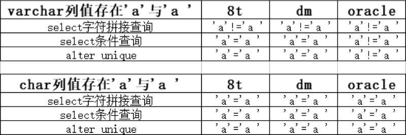 |
| 2018-05-04 15:01:14 | 我 | 要是还等王总，研发就更没时间了 |
| 2018-05-04 15:01:21 | 你 | 呵呵 |
| 2018-05-04 15:01:37 | 你 | 你们昨天开那么长的会 我也没看出啥成果 |
| 2018-05-04 15:01:49 | 我 | 什么都没有 |
| 2018-05-04 15:01:50 | 你 | 这个版本规划的表还是这个德性 |
| 2018-05-04 15:02:01 | 我 | 比原来还乱 |
| 2018-05-04 15:02:08 | 你 | 呵呵 |
| 2018-05-04 15:02:26 | 我 | 老陈一个想法，吕迅一个想法，老张不管，想推给王总 |
| 2018-05-04 15:02:47 | 你 | 吕讯又参与进来了？？？ |
| 2018-05-04 15:02:54 | 你 | 那不更乱么 |
| 2018-05-04 15:03:09 | 我 | 就是他们 PL/SQL 的事情，吕迅想按照自己的想法干 |
| 2018-05-04 15:03:28 | 我 | 现在这个 bug 还没有修完，他就想开始新的开发 |
| 2018-05-04 15:04:09 | 你 | 谁想开始新的 |
| 2018-05-04 15:04:11 | 你 | 你知道吗 |
| 2018-05-04 15:04:16 | 我 | 吕迅 |
| 2018-05-04 15:04:27 | 你 | 我觉得现在咱们部门 越来越像DSD了 |
| 2018-05-04 15:04:30 | 你 | 你不觉得吗 |
| 2018-05-04 15:04:32 | 我 | 吕迅想做 package |
| 2018-05-04 15:04:34 | 我 | 没错 |
| 2018-05-04 15:05:19 | 我 | 昨天32K 这事，吕迅说要找一个项目经理，让咱们的人去到他们那边，我不干，最后决定两边分开干 |
| 2018-05-04 15:05:48 | 你 | 我现在觉得越来越像了 |
| 2018-05-04 15:05:53 | 我 | 是 |
| 2018-05-04 15:06:10 | 你 | 这都是陈总的功劳 |
| 2018-05-04 15:06:12 | 我 | 所以研发一组我决不能让他们插手 |
| 2018-05-04 15:06:17 | 你 | 是 |
| 2018-05-04 15:06:31 | 你 | 所有事都是老陈的事 |
| 2018-05-04 15:06:50 | 我 | 嗯嗯 |
| 2018-05-04 15:09:19 | 我 | 有空吗 |
| 2018-05-04 15:09:29 | 你 | 有空 |
| 2018-05-04 15:09:48 | 我 | 聊会天，待会就去开会了 |
| 2018-05-04 15:09:56 | 你 | 恩 |
| 2018-05-04 15:10:02 | 你 | 我看了一起写了 |
| 2018-05-04 15:10:13 | 你 | 看了好几遍 |
| 2018-05-04 15:10:15 | 我 | 嗯嗯，有啥看法 |
| 2018-05-04 15:10:19 | 我 | 是不是很傻 |
| 2018-05-04 15:10:30 | 我 | 哈哈，我的超我在作祟 |
| 2018-05-04 15:10:51 | 你 | 没有 你的本我和自我挺清晰的 |
| 2018-05-04 15:10:57 | 你 | 我有的时候不是很清晰 |
| 2018-05-04 15:11:13 | 我 | 嗯嗯，我就是想写下来让你看看，找找感觉 |
| 2018-05-04 15:11:18 | 你 | 嗯嗯 |
| 2018-05-04 15:11:27 | 你 | 我大概知道你的想法 |
| 2018-05-04 15:11:37 | 我 | 你说说 |
| 2018-05-04 15:11:55 | 你 | 关于你想战术的方法这事 |
| 2018-05-04 15:12:08 | 你 | 就是保持联系的方法 |
| 2018-05-04 15:12:15 | 你 | 我觉得你自己说的很对 |
| 2018-05-04 15:12:25 | 你 | 战术都有依赖于环境 |
| 2018-05-04 15:12:26 | 我 | 嗯 |
| 2018-05-04 15:12:41 | 你 | 而且『我』不可靠 |
| 2018-05-04 15:12:55 | 你 | 你不要高估『我』在面对恐惧时的能力 |
| 2018-05-04 15:13:02 | 我 | 嗯嗯 |
| 2018-05-04 15:13:17 | 你 | 这次东东跟我闹 我真的快要崩溃了 |
| 2018-05-04 15:13:40 | 你 | 如果东东再发现 我觉得我的婚姻真的到头了差不错 |
| 2018-05-04 15:13:43 | 你 | 差不多 |
| 2018-05-04 15:13:48 | 我 | 嗯嗯 |
| 2018-05-04 15:13:58 | 你 | 关键是我真的不能自信能不出错 |
| 2018-05-04 15:14:09 | 我 | 是 |
| 2018-05-04 15:14:12 | 你 | 另外 |
| 2018-05-04 15:14:20 | 你 | 关于你说的激发我本能的事 |
| 2018-05-04 15:14:28 | 你 | 虽然我不知道 具体指什么 |
| 2018-05-04 15:14:37 | 你 | 你也说传统的办法不行 |
| 2018-05-04 15:14:49 | 你 | 有捷径可走 |
| 2018-05-04 15:15:00 | 你 | 我的前车之鉴 你看到了吧 |
| 2018-05-04 15:15:17 | 你 | 至少现在这个时间点 我还没从恐惧中恢复回来 |
| 2018-05-04 15:15:27 | 你 | 所以我最近才表现的 你所谓的不正常 |
| 2018-05-04 15:15:31 | 我 | 嗯嗯 |
| 2018-05-04 15:15:37 | 你 | 你至少要让我缓一缓 |
| 2018-05-04 15:15:41 | 我 | 嗯嗯 |
| 2018-05-04 15:15:47 | 你 | 现在的我 就跟前几天的李杰一样 |
| 2018-05-04 15:16:04 | 你 | 就是我给李杰不听说，李杰跟我说她要抑郁了 |
| 2018-05-04 15:16:15 | 我 | 我知道 |
| 2018-05-04 15:16:25 | 你 | 我不只是抑郁 |
| 2018-05-04 15:16:38 | 你 | 其实表面的镇定都是装的 |
| 2018-05-04 15:16:55 | 你 | 说实在的 你昨天跟我说 咱们断了 我觉得你挺残忍的 |
| 2018-05-04 15:17:12 | 我 | 哈哈，我知道 |
| 2018-05-04 15:17:23 | 你 | 不 |
| 2018-05-04 15:17:25 | 你 | 你不知道 |
| 2018-05-04 15:17:27 | 你 | 你的这个做法 就是非常仪式感的 捅了我一刀 |
| 2018-05-04 15:17:42 | 我 | 唉 |
| 2018-05-04 15:18:00 | 你 | 我告诉你我的想法 这个逻辑也很长 |
| 2018-05-04 15:18:02 | 我 | 嗯嗯 |
| 2018-05-04 15:18:16 | 你 | 前提肯定是 我搞不定我的恐惧 |
| 2018-05-04 15:18:27 | 你 | 所以我会嫁祸与你 |
| 2018-05-04 15:19:00 | 你 | 从超我的角度 东东是受害者 |
| 2018-05-04 15:19:10 | 你 | 我很怪我自己让他承担这些 |
| 2018-05-04 15:19:20 | 你 | 当然他自己也有问题 |
| 2018-05-04 15:19:33 | 你 | 另一方面 我真的很怪自己 |
| 2018-05-04 15:19:42 | 我 | 嗯 |
| 2018-05-04 15:19:58 | 你 | 我跟你说过 我想过 这一切的痛苦都是因为『你』的存在 |
| 2018-05-04 15:20:10 | 你 | 所以我很本能的 躲你 |
| 2018-05-04 15:20:20 | 你 | 其实这都不是真实的 |
| 2018-05-04 15:20:48 | 你 | 这种场景 我经历过很多次了 |
| 2018-05-04 15:21:06 | 你 | 每次跟东东 因为你吵架 我的心里状态都是这样的 |
| 2018-05-04 15:21:09 | 你 | 但是 |
| 2018-05-04 15:21:11 | 我 | 嗯嗯 |
| 2018-05-04 15:21:15 | 你 | 慢慢的 我又管不住自己 |
| 2018-05-04 15:21:19 | 你 | 有可能是习惯 |
| 2018-05-04 15:21:29 | 你 | 我自己也说不清楚 |
| 2018-05-04 15:21:54 | 你 | 其实我想过 我去北京的话 也许跟你慢慢的就不像现在这样了 |
| 2018-05-04 15:22:07 | 你 | 慢慢的就不会那么痛苦 |
| 2018-05-04 15:22:19 | 我 | 嗯嗯 |
| 2018-05-04 15:22:33 | 你 | 我丢了一段 |
| 2018-05-04 15:22:43 | 你 | 这也是我昨天之所以那么平静的原因 |
| 2018-05-04 15:23:08 | 你 | 因为我本能的 躲你 这件事 你说出来 正好随了我的意 |
| 2018-05-04 15:23:16 | 你 | 但是 其实根本不是这么简单的 |
| 2018-05-04 15:23:21 | 我 | 嗯 |
| 2018-05-04 15:23:26 | 你 | 躲了一阵 更难过了 |
| 2018-05-04 15:23:30 | 我 | 是 |
| 2018-05-04 15:23:38 | 你 | 就是你说的 你会变更另一个痛苦的来源 |
| 2018-05-04 15:23:48 | 你 | 我不知道 你说的和我想的是不是一样的 |
| 2018-05-04 15:24:02 | 你 | 但是我想的 慢慢的就会淡了 |
| 2018-05-04 15:24:10 | 我 | 不太一样 |
| 2018-05-04 15:24:21 | 你 | 你知道 君子之交 不应该是 腻歪的 |
| 2018-05-04 15:24:37 | 你 | 可是你昨天说 断了 |
| 2018-05-04 15:24:43 | 你 | 还说了很多很多 |
| 2018-05-04 15:24:47 | 你 | 没时间教我了 |
| 2018-05-04 15:24:54 | 你 | 东东会怀疑我一辈子 |
| 2018-05-04 15:25:04 | 你 | 这些事 都给了我很大的负担 |
| 2018-05-04 15:25:06 | 你 | 压力 |
| 2018-05-04 15:25:07 | 我 | 嗯嗯 |
| 2018-05-04 15:25:08 | 你 | 恐惧 |
| 2018-05-04 15:25:20 | 你 | 我觉得我已经不能再承受什么了 |
| 2018-05-04 15:25:25 | 你 | 我想在更想躲 |
| 2018-05-04 15:25:34 | 我 | 嗯 |
| 2018-05-04 15:25:49 | 我 | 你应该看出来，刚开始的自我就是很冷酷的 |
| 2018-05-04 15:26:09 | 我 | 你现在的状态我也了解 |
| 2018-05-04 15:26:24 | 我 | 这也是本我不停责怪自我的地方 |
| 2018-05-04 15:27:20 | 我 | 在自我理性的推理下，已经预见了最坏的结果，为了避免大的伤害，自我选择了壮士断腕 |
| 2018-05-04 15:27:45 | 你 | 你为什么要说出来呢 |
| 2018-05-04 15:27:49 | 你 | 为什么要告诉我 |
| 2018-05-04 15:27:56 | 我 | 你应该能看出来，本我一直非常呵护你，所以任何激烈的手段他都反对 |
| 2018-05-04 15:28:23 | 我 | 之所以告诉你就是因为之前本我采取的策略出现了重大失误 |
| 2018-05-04 15:28:45 | 你 | 什么策略 |
| 2018-05-04 15:28:46 | 我 | 导致在那个时间点上，本我不具备理论优势 |
| 2018-05-04 15:29:40 | 我 | 宠着你，护着你，不让你受到任何伤害，不管是来自于别人的还是我的 |
| 2018-05-04 15:29:55 | 我 | 这种策略太注重短期利益了 |
| 2018-05-04 15:31:17 | 我 | 我两次提战术，都伤害了你。提战术是自我决定的，是因为自我发现了问题，可是伤害你之后本我就变得非常强大，会不停的指责自我 |
| 2018-05-04 15:32:11 | 我 | 因此在很长的一段时间里，自我基本上做不了什么 |
| 2018-05-04 15:32:59 | 我 | 你的自我和本我没有我这么清晰的定位，所以你是以一个整体来感觉的 |
| 2018-05-04 15:33:09 | 我 | 你受到伤害的是本我 |
| 2018-05-04 15:33:28 | 我 | 但是你的自我没有强大到不受本我影响的去分析 |
| 2018-05-04 15:41:09 | 你 | 恩 |
| 2018-05-04 15:41:18 | 我 | 被打断了 |
| 2018-05-04 15:41:22 | 你 | 是 |
| 2018-05-04 15:41:25 | 你 | 刘辉好讨厌 |
| 2018-05-04 15:41:29 | 我 | 是 |
| 2018-05-04 15:41:34 | 你 | 我有个问题啊 |
| 2018-05-04 15:41:41 | 我 | 你说 |
| 2018-05-04 15:41:50 | 你 | 你跟杨丽颖之所以后期道不同 是不是因为你没宠着她 |
| 2018-05-04 15:42:06 | 我 | 和这个没有关系 |
| 2018-05-04 15:42:09 | 你 | 你所谓的跟我道同 是不是因为你一味的宠着我造成的 |
| 2018-05-04 15:42:16 | 我 | 不是的 |
| 2018-05-04 15:42:21 | 你 | 哦 |
| 2018-05-04 15:42:24 | 你 | 好吧 |
| 2018-05-04 15:42:56 | 我 | 和你道同是在道这个层次，宠着你是在术这个层次 |
| 2018-05-04 15:43:06 | 你 | 哦 |
| 2018-05-04 15:43:15 | 你 | 你不宠着我也不行啊 |
| 2018-05-04 15:43:18 | 我 | 哈哈 |
| 2018-05-04 15:43:25 | 你 | 你对我的战术干预 我根本受不了 |
| 2018-05-04 15:44:04 | 我 | 你受不了就是源于你的恐惧 |
| 2018-05-04 15:44:16 | 你 | 你说这种战略明确 战术却捋捋失误 是不是因为战略清晰只是假象啊 |
| 2018-05-04 15:44:20 | 我 | 不是的 |
| 2018-05-04 15:44:30 | 你 | 对啊 |
| 2018-05-04 15:44:37 | 你 | 这不就死循环了么 |
| 2018-05-04 15:45:04 | 你 | 你战术干预我 是想消除我的恐惧 由于我的恐惧导致你战术干预不了我 |
| 2018-05-04 15:45:07 | 你 | 这是个死扣 |
| 2018-05-04 15:45:29 | 我 | 是的，昨天自我不想去想办法也是这个原因 |
| 2018-05-04 15:45:44 | 我 | 因为能明显看出来是死循环 |
| 2018-05-04 15:45:51 | 你 | 对啊 |
| 2018-05-04 15:45:55 | 你 | 而且 我觉得 |
| 2018-05-04 15:46:05 | 你 | 你说恐惧经历一次 就没事了 |
| 2018-05-04 15:46:08 | 你 | 对吧 |
| 2018-05-04 15:46:16 | 你 | 我记得有一段话 大概是这个意思 |
| 2018-05-04 15:46:19 | 我 | 嗯嗯 |
| 2018-05-04 15:46:20 | 你 | 其实真的很可怕 |
| 2018-05-04 15:46:40 | 你 | 我没办法经历 |
| 2018-05-04 15:46:41 | 我 | 不是经历一次，而是你能面对 |
| 2018-05-04 15:46:48 | 你 | 恩 面对 |
| 2018-05-04 15:46:50 | 你 | 一样的 |
| 2018-05-04 15:46:56 | 我 | 我不是拿疫苗做例子了吗 |
| 2018-05-04 15:47:11 | 你 | 那东东跟我离婚这事呢 |
| 2018-05-04 15:47:23 | 我 | 这是疾病 |
| 2018-05-04 15:47:24 | 你 | 你不是要说 离婚也不用怕吧 |
| 2018-05-04 15:47:30 | 我 | 这才是我怕的 |
| 2018-05-04 15:47:44 | 你 | 还是说东东不会跟我离婚 |
| 2018-05-04 15:47:51 | 我 | 出了这种事情你只能硬扛 |
| 2018-05-04 15:48:00 | 我 | 不是不会离婚 |
| 2018-05-04 15:48:30 | 我 | 我的意思是东东发现或者和你吵架、离婚等等这些恐惧是真正的恐惧，就像是真正的疾病一样 |
| 2018-05-04 15:48:44 | 我 | 这些病可能会要命的 |
| 2018-05-04 15:48:56 | 我 | 所以人们才发明了疫苗 |
| 2018-05-04 15:49:04 | 你 | 啥疫苗啊 |
| 2018-05-04 15:49:12 | 我 | 我只是打比喻 |
| 2018-05-04 15:49:27 | 你 | 就说离婚这件事有疫苗吗 |
| 2018-05-04 15:49:40 | 我 | 有，间接上说有 |
| 2018-05-04 15:49:45 | 你 | 什么 |
| 2018-05-04 15:49:48 | 你 | 你说下 |
| 2018-05-04 15:50:08 | 我 | 离婚的原因是你的恐惧导致你行为失常 |
| 2018-05-04 15:50:21 | 你 | 你又开始绕回去了 |
| 2018-05-04 15:50:47 | 我 | 你说的没错，我想说的就是这个负循环上最脆弱的点 |
| 2018-05-04 15:51:05 | 我 | 离婚本身太强大，你无法直接免疫的 |
| 2018-05-04 15:51:07 | 你 | 我想表达的是 离婚这种恐惧 是不能靠面对这种实践解决的 |
| 2018-05-04 15:51:13 | 我 | 没错 |
| 2018-05-04 15:51:17 | 你 | 自闭也是 |
| 2018-05-04 15:51:26 | 你 | 最弱的点 |
| 2018-05-04 15:51:39 | 你 | 我不自闭 有你的时候 我可以选择跟你说 |
| 2018-05-04 15:51:42 | 你 | 没你了呢 |
| 2018-05-04 15:51:49 | 你 | 另外 说了 就不恐惧了吗 |
| 2018-05-04 15:52:08 | 你 | 我犯错是因为恐惧 不自闭就不犯错了吗 |
| 2018-05-04 15:52:17 | 我 | 这些没有必然的联系 |
| 2018-05-04 15:52:20 | 你 | 那还有管窥呢 |
| 2018-05-04 15:52:28 | 我 | 我告诉你一种可能性 |
| 2018-05-04 15:52:56 | 我 | 比如说你可以流利的说谎，在说谎之前你可以把所有的逻辑都想明白 |
| 2018-05-04 15:53:09 | 我 | 你说出来的话就和真相一样 |
| 2018-05-04 15:53:18 | 你 | 我不说谎也是因为我恐惧 |
| 2018-05-04 15:53:26 | 你 | 我根本做不到 |
| 2018-05-04 15:53:40 | 我 | 对，但是说谎的恐惧要比离婚的恐惧小很多 |
| 2018-05-04 15:53:54 | 我 | 而且说谎也只是一种战术，还可以有其他战术 |
| 2018-05-04 15:53:56 | 你 | 我不知道我为什么要说谎 |
| 2018-05-04 15:54:13 | 你 | 我觉得说谎就会受到惩罚 |
| 2018-05-04 15:54:20 | 你 | 开会去吧先 |
| 2018-05-04 15:54:23 | 你 | 不然没做了 |
| 2018-05-04 15:54:25 | 我 | 呢 |
| 2018-05-04 15:56:25 | 你 | 你以为离婚是什么引起的， |
| 2018-05-04 15:56:29 | 你 | 是说谎 |
| 2018-05-04 15:58:49 | 我 | 是，我的意思不是具体到说谎上 |
| 2018-05-04 15:59:09 | 你 | 我的意思是面对 |
| 2018-05-04 15:59:14 | 你 | 这个方法 |
| 2018-05-04 15:59:17 | 你 | 不合适 |
| 2018-05-04 15:59:32 | 我 | 整个负循环上的每个点都有对应的恐惧 |
| 2018-05-04 16:00:00 | 我 | 所谓的疫苗就是这里面最弱的那个恐惧 |
| 2018-05-04 16:00:18 | 我 | 不是那个恐惧，是那种恐惧 |
| 2018-05-04 16:01:33 | 你 | 恩 |
| 2018-05-04 16:02:18 | 我 | 这个我原来是想慢慢找，现在看没有时间了 |
| 2018-05-04 16:03:03 | 我 | 关于恐惧的相关模型和知识，你现在还是很欠缺 |
| 2018-05-04 16:03:45 | 我 | 这也是我特别纠结的地方 |
| 2018-05-04 16:12:06 | 你 | 2点产品线的会 张工还说ecdc这事什么规划都没有 |
| 2018-05-04 16:12:40 | 我 | 他根本就不上心 |
| 2018-05-04 16:13:12 | 你 | 不知道是不上心 还是成心的 |
| 2018-05-04 16:14:03 | 我 | 不知道 |
| 2018-05-04 16:21:57 | 你 | 这么点事 还要讨论 |
| 2018-05-04 16:22:11 | 你 | 去年都发了不知道几个windows版了 |
| 2018-05-04 16:22:29 | 我 | 都懒得理他们 |
| 2018-05-04 16:33:32 | 我 | [链接] 如何在 2 分钟内入睡（二战时期美国飞行员训练法） - 知乎 |
| 2018-05-04 16:33:47 | 我 | 你看看这个 |
| 2018-05-04 16:34:07 | 我 | 有助于恐惧的时候放松 |
| 2018-05-04 17:04:34 | 你 | 老陈的意思四把主干废掉 |
| 2018-05-04 17:04:42 | 你 | 留他的AQ |
| 2018-05-04 17:04:54 | 你 | 太可笑了 |
| 2018-05-04 17:05:00 | 我 | 是 |
| 2018-05-04 17:05:27 | 我 | 这样也好，我们就不干主干了，让他们去干吧 |
| 2018-05-04 17:05:34 | 你 | 是 |
| 2018-05-04 17:11:58 | 你 | 你5：30走吗 |
| 2018-05-04 17:12:01 | 你 | 我送你吧 |
| 2018-05-04 17:14:04 | 我 | 太好了 |
| 2018-05-04 17:14:44 | 你 | 几点走 你叫我啊 |
| 2018-05-04 17:15:04 | 我 | 好的 |
| 2018-05-04 17:36:06 | 我 | 幸亏今天没聊，地铁安检排队，10分钟 |
| 2018-05-04 17:36:35 | 你 | 啊，今天竟然这么多人 |
| 2018-05-04 17:36:39 | 你 | 嗯嗯，就是 |
| 2018-05-04 17:36:59 | 我 | 刚进来 |
| 2018-05-04 17:37:04 | 我 | 太幸运了 |
| 2018-05-04 17:37:38 | 你 | 嗯，那也不算晚 |
| 2018-05-04 17:37:44 | 你 | 别着急 |
| 2018-05-04 17:37:51 | 我 | 是 |
| 2018-05-04 17:38:28 | 你 | 你看到赵益在群里发的消息了吗 |
| 2018-05-04 17:38:33 | 你 | 可逗了 |
| 2018-05-04 17:38:39 | 我 | 看到了 |
| 2018-05-04 17:42:34 | 我 | 哈哈，你看看赵益对西来说的 |
| 2018-05-04 17:45:22 | 你 | 看到了 |
| 2018-05-04 18:12:08 | 我 | 我到了 |
| 2018-05-04 18:12:58 | 你 | 啊 |
| 2018-05-04 18:13:00 | 你 | 这么早 |
| 2018-05-04 18:13:36 | 我 | 是，早了 |
| 2018-05-04 18:35:12 | 我 | 你几点回家 |
| 2018-05-04 18:35:21 | 你 | 马上 |
| 2018-05-04 18:35:28 | 我 | 嗯嗯 |
| 2018-05-04 18:35:38 | 你 | 不跟你聊了哈 |
| 2018-05-04 18:35:40 | 你 | 回家了 |
| 2018-05-04 18:35:48 | 我 | [动画表情] |
{kind=link}
2018-05-07¶
| 2018-05-07 08:57:36 | 你 | 不敢相信，太突然了 |
| 2018-05-07 08:57:51 | 我 | 是[大哭] |
| 2018-05-07 09:10:54 | 你 | 老王 我太难过了 |
| 2018-05-07 09:11:00 | 你 | 都不知道自己要干啥 |
| 2018-05-07 09:11:04 | 我 | 嗯嗯，我也一样 |
| 2018-05-07 09:11:13 | 我 | 感觉就像天塌了 |
| 2018-05-07 09:11:20 | 你 | 是 |
| 2018-05-07 09:11:22 | 我 | 今天歇着吧，别干了 |
| 2018-05-07 09:11:35 | 你 | 我已看到rd就想哭 |
| 2018-05-07 09:11:53 | 我 | 唉，别看了，歇会吧 |
| 2018-05-07 09:18:41 | 我 | 亲，别太难过了 |
| 2018-05-07 09:18:57 | 你 | 我就是想哭 |
| 2018-05-07 09:19:10 | 我 | 嗯嗯 |
| 2018-05-07 09:19:12 | 你 | 我想大哭一场 |
| 2018-05-07 09:19:19 | 你 | 唉 |
| 2018-05-07 09:19:21 | 我 | 唉 |
| 2018-05-07 09:19:30 | 你 | 太难过了 老王 |
| 2018-05-07 09:19:35 | 你 | 那个是崔总啊 |
| 2018-05-07 09:19:41 | 我 | 嗯 |
| 2018-05-07 09:19:51 | 我 | 要不我陪你出去走走 |
| 2018-05-07 09:20:02 | 你 | 不用了 |
| 2018-05-07 09:22:15 | 我 | 主要还是太突然了 |
| 2018-05-07 09:22:24 | 我 | 大家都没个心理准备 |
| 2018-05-07 09:22:27 | 你 | 是 |
| 2018-05-07 09:22:55 | 我 | 没想到那么能干的一个人，怎么说没就没了呢 |
| 2018-05-07 09:23:02 | 我 | 天妒英才呀 |
| 2018-05-07 09:23:09 | 你 | 是 |
| 2018-05-07 09:23:12 | 你 | 是 |
| 2018-05-07 09:24:33 | 你 | 我从30岁 就开始经历死别 一个接着一个 |
| 2018-05-07 09:25:08 | 我 | 唉，别想那么多了 |
| 2018-05-07 09:29:48 | 我 | 你先歇会吧 |
| 2018-05-07 09:30:01 | 我 | 我只有不停的干活才能不想 |
| 2018-05-07 09:30:08 | 你 | 你干活吧 |
| 2018-05-07 09:30:18 | 你 | 不用管我 我一会就好了 |
| 2018-05-07 10:25:13 | 你 | 武总讲话 |
| 2018-05-07 10:25:18 | 你 | 在五楼大会议室 |
| 2018-05-07 10:25:47 | 我 | 嗯嗯，有点挤，不过大家都应该站着 |
| 2018-05-07 10:25:53 | 你 | 是 |
| 2018-05-07 11:13:33 | 我 | 张杰现在不乐意干这个 |
| 2018-05-07 11:13:38 | 我 | 现在他干32K 的 |
| 2018-05-07 11:13:52 | 你 | 32k的不是没有他么 |
| 2018-05-07 11:14:07 | 我 | 今天他发的两封邮件都是我上午和他说的，让他本周给结果 |
| 2018-05-07 11:14:13 | 我 | 他就给我个这个 |
| 2018-05-07 11:14:25 | 你 | 呵呵 |
| 2018-05-07 11:41:53 | 你 | 领导跟你们说啥了都 |
| 2018-05-07 11:42:13 | 我 | 就是刚才说的这些 |
| 2018-05-07 11:42:21 | 你 | 恩 |
| 2018-05-07 11:42:35 | 我 | 唯一多的就是要关注团队稳定，关注辞职的 |
| 2018-05-07 11:42:44 | 你 | 呵呵 |
| 2018-05-07 11:42:57 | 我 | 有辞职意向的要向领导汇报 |
| 2018-05-07 11:43:44 | 你 | 真的很心痛 |
| 2018-05-07 11:43:59 | 我 | 是 |
| 2018-05-07 11:44:02 | 你 | 我离职的事 别提啊 |
| 2018-05-07 11:44:08 | 我 | 你放心吧 |
| 2018-05-07 11:44:20 | 你 | 我的PBC是A |
| 2018-05-07 11:44:32 | 我 | 嗯嗯，应该的 |
| 2018-05-07 11:44:58 | 你 | 我明天有个面试 就在咱们园区G座 |
| 2018-05-07 11:45:04 | 我 | 几点 |
| 2018-05-07 11:45:18 | 你 | 下午2点 |
| 2018-05-07 11:45:21 | 你 | 我应该不会去 |
| 2018-05-07 11:45:24 | 我 | 好的，你去就行了 |
| 2018-05-07 11:45:33 | 你 | 面试我去 |
| 2018-05-07 11:45:41 | 你 | 公司不会去应该 |
| 2018-05-07 11:45:46 | 你 | 就是想参加下面试 |
| 2018-05-07 11:45:48 | 我 | 嗯嗯，我知道 |
| 2018-05-07 13:06:41 | 你 | 你们开会有事吗 |
| 2018-05-07 13:06:53 | 你 | 去北京吊唁的是自愿吗 |
| 2018-05-07 13:07:01 | 我 | 是 |
| 2018-05-07 13:07:06 | 你 | 你去吗 |
| 2018-05-07 13:07:15 | 我 | 不过行销部那边说 leader 必须去 |
| 2018-05-07 13:07:19 | 我 | 我肯定去 |
| 2018-05-07 13:07:32 | 我 | 待会我得和老陈商量一下 |
| 2018-05-07 13:07:39 | 你 | 哦 |
| 2018-05-07 13:07:40 | 我 | 看看咱们这边怎么安排 |
| 2018-05-07 13:07:46 | 你 | 那我也去 |
| 2018-05-07 13:07:57 | 我 | 嗯嗯 |
| 2018-05-07 13:08:13 | 我 | 可能会比较早，10点开始，怎么也得6点前出发 |
| 2018-05-07 13:08:27 | 你 | 恩 |
| 2018-05-07 13:09:31 | 你 | 是公司给派车对吧 从公司统一出发 |
| 2018-05-07 13:10:46 | 我 | 对 |
| 2018-05-07 13:11:19 | 你 | 那就没事 |
| 2018-05-07 13:11:33 | 我 | 嗯嗯 |
| 2018-05-07 13:11:42 | 你 | 去的多的是不是比较好啊 |
| 2018-05-07 13:11:54 | 你 | 我问张道山了 他说不强制 |
| 2018-05-07 13:11:59 | 你 | 自愿 |
| 2018-05-07 13:12:36 | 我 | 你这一层次的完全自愿 |
| 2018-05-07 13:12:45 | 你 | 恩 |
| 2018-05-07 13:12:46 | 你 | 知道了 |
| 2018-05-07 15:03:28 | 你 | 今天忙吗你 |
| 2018-05-07 15:03:34 | 我 | 不忙 |
| 2018-05-07 15:05:06 | 我 | 告诉你一个八卦吧 |
| 2018-05-07 15:05:28 | 我 | 刚才张杰来找我，是吴颖娜和张文跃又吵架了 |
| 2018-05-07 15:05:41 | 你 | 他俩不是老是有矛盾么 |
| 2018-05-07 15:05:46 | 我 | 吴颖娜想去测试或者工具部，不想在这边干了 |
| 2018-05-07 15:05:52 | 你 | 啊 |
| 2018-05-07 15:05:55 | 我 | 他俩几乎天天打架 |
| 2018-05-07 15:06:00 | 你 | 他俩矛盾主要是什么 |
| 2018-05-07 15:06:14 | 我 | 很早以前的矛盾 |
| 2018-05-07 15:06:33 | 我 | 一开始就是因为一些小事，他俩都有不对的地方，谁都看谁不顺眼 |
| 2018-05-07 15:06:46 | 我 | 现在是只要有一点事情就吵 |
| 2018-05-07 15:07:04 | 你 | 两人工作态度和能力没问题吧 |
| 2018-05-07 15:07:27 | 你 | 我看吴英娜 那个人目光挺短的 |
| 2018-05-07 15:07:32 | 我 | 吴颖娜问题挺大的 |
| 2018-05-07 15:07:33 | 你 | 不知道具体的哈 |
| 2018-05-07 15:07:37 | 你 | 都不清楚 |
| 2018-05-07 15:07:46 | 你 | 张杰可逗了 一出事就来找你 |
| 2018-05-07 15:07:54 | 我 | 是 |
| 2018-05-07 15:07:56 | 你 | 自己没本事劝和么 |
| 2018-05-07 15:08:24 | 我 | 他这些事情办不好 |
| 2018-05-07 15:08:32 | 你 | 是 |
| 2018-05-07 15:10:39 | 你 | 32k的你让张杰做了？ |
| 2018-05-07 15:10:44 | 你 | 不是没他么 |
| 2018-05-07 15:11:00 | 我 | 是他非想掺和，我也不好拦着 |
| 2018-05-07 15:11:09 | 你 | 哦哦 |
| 2018-05-07 15:11:30 | 你 | 那现在是3个人做是吗 |
| 2018-05-07 15:11:35 | 我 | 是 |
| 2018-05-07 15:11:57 | 我 | 张杰还得做评估[呲牙] |
| 2018-05-07 15:12:04 | 我 | 不能耽误正事 |
| 2018-05-07 15:12:17 | 你 | 恩 |
| 2018-05-07 15:17:18 | 我 | 我们多干，你不就少干吗 |
| 2018-05-07 15:17:38 | 你 | 你们干跟我干有关系吗 |
| 2018-05-07 15:17:49 | 你 | 你们做评估我是做调研啊 |
| 2018-05-07 15:18:02 | 我 | 有呀 |
| 2018-05-07 15:18:19 | 我 | 你可以调研的少一点 |
| 2018-05-07 15:18:54 | 你 | 差不多 除非我不做调研 |
| 2018-05-07 15:19:10 | 我 | 你不做也可以呀 |
| 2018-05-07 15:19:34 | 我 | 或者你就等研发评估完了，根据评估的结果再决定是不是调研 |
| 2018-05-07 15:20:01 | 你 | 恩 你们不是忙吗 我尽量自己做完再让你们做 |
| 2018-05-07 15:20:30 | 我 | 你要是不想做就给我们把 |
| 2018-05-07 15:20:48 | 我 | 这边人多，你一个人做多累呀 |
| 2018-05-07 15:22:20 | 你 | 没事 |
| 2018-05-07 15:22:24 | 你 | 我没不想做 |
| 2018-05-07 15:36:26 | 你 | 娜姐说周四早上5：30出发 |
| 2018-05-07 15:36:30 | 你 | 你怎么过来啊 |
| 2018-05-07 15:36:45 | 我 | 没事，我打车 |
| 2018-05-07 15:36:52 | 你 | 恩 |
| 2018-05-07 15:37:27 | 我 | 你收一下邮件 |
| 2018-05-07 15:37:36 | 你 | 看到了 |
| 2018-05-07 15:39:07 | 你 | 好的 |
| 2018-05-07 15:39:48 | 你 | 你知道张道山干啥去了吗 |
| 2018-05-07 15:39:51 | 我 | GCI 那块可能写的不合适 |
| 2018-05-07 15:40:00 | 我 | 好像是有个什么会 |
| 2018-05-07 15:40:01 | 你 | 没事 |
| 2018-05-07 15:40:03 | 我 | 吕迅他们的 |
| 2018-05-07 15:40:10 | 你 | 是AK版的讨论 |
| 2018-05-07 15:40:13 | 你 | 不知道讨论什么 |
| 2018-05-07 15:40:18 | 我 | 不知道 |
| 2018-05-07 15:40:21 | 你 | 反正就是那个版本的会 |
| 2018-05-07 15:40:24 | 你 | 我想说的是 |
| 2018-05-07 15:40:39 | 你 | 你看 去年DTD一年做的东西 都合并到AK去了 |
| 2018-05-07 15:41:00 | 你 | AK版轰轰烈烈的发了 跟咱们也没啥关系 |
| 2018-05-07 15:41:04 | 我 | 是 |
| 2018-05-07 15:41:05 | 你 | 从头到尾都没关系 |
| 2018-05-07 15:41:23 | 你 | 周五晚上的时候 王总问我504测试出什么事了 |
| 2018-05-07 15:41:27 | 你 | 我说我不知道 |
| 2018-05-07 15:41:34 | 你 | 他说发版了吗 |
| 2018-05-07 15:41:37 | 你 | 我说我不知道 |
| 2018-05-07 15:41:48 | 你 | 我说我最近需求很多 问题的事 不太清楚 |
| 2018-05-07 15:41:52 | 我 | 嗯嗯 |
| 2018-05-07 15:41:53 | 你 | 他就问别人去了 |
| 2018-05-07 15:56:29 | 我 | 唉，等你走了，需求就完全是 DSD 的了，还不知道乱成什么样 |
| 2018-05-07 15:57:00 | 你 | 是 |
| 2018-05-07 16:15:40 | 我 | 今天忘了说了，你的项链很漂亮 |
| 2018-05-07 16:15:52 | 我 | 可惜你的头发长，盖住了耳环 |
| 2018-05-07 16:16:09 | 你 | 是吗 是个非常老的了 这个衣服领子有点大 |
| 2018-05-07 16:16:19 | 你 | 我想着搭配个饰品 |
| 2018-05-07 16:16:37 | 我 | 嗯嗯，搭配的非常好看呀 |
| 2018-05-07 16:16:45 | 你 | 嗯嗯 |
| 2018-05-07 16:17:00 | 你 | 这个白衬衣搭配这个裙子还挺好看的 你觉得呢 |
| 2018-05-07 16:17:04 | 我 | 是 |
| 2018-05-07 16:17:06 | 你 | 挺素雅的 |
| 2018-05-07 16:17:11 | 我 | 嗯嗯 |
| 2018-05-07 16:17:23 | 你 | 今天知道调研崔总 故意穿了件黑白配的 |
| 2018-05-07 16:21:19 | 我 | 你穿衣服很懂得搭配，再加上人漂亮，什么衣服到你身上都好看 |
| 2018-05-07 16:21:29 | 你 | 真的假的 |
| 2018-05-07 16:21:33 | 你 | 今天嘴真甜 |
| 2018-05-07 16:21:41 | 我 | 漂亮+气质+内涵 |
| 2018-05-07 16:21:49 | 你 | 我衣服很少乱穿 |
| 2018-05-07 16:21:54 | 我 | 是 |
| 2018-05-07 16:21:59 | 你 | 其实我的衣服都不贵 |
| 2018-05-07 16:22:05 | 我 | 嗯 |
| 2018-05-07 16:22:21 | 你 | 这个算是比较贵的 它的历史你懂的 |
| 2018-05-07 16:22:30 | 我 | 嗯嗯 |
| 2018-05-07 16:22:42 | 你 | 我很纳闷 你为啥不问我 找工作情况 |
| 2018-05-07 16:23:00 | 我 | 你不是去京东吗？ |
| 2018-05-07 16:23:16 | 你 | 京东那边我还没投简历呢 |
| 2018-05-07 16:23:28 | 你 | 我姐给我递给HR了 还在等消息 |
| 2018-05-07 16:23:36 | 我 | 哦 |
| 2018-05-07 16:23:42 | 你 | 我这不是投天津的呢么 |
| 2018-05-07 16:23:48 | 我 | 有内推应该很容易的 |
| 2018-05-07 16:23:53 | 你 | 我发现一个事 |
| 2018-05-07 16:23:57 | 我 | 天津不是用来练手的吗 |
| 2018-05-07 16:24:01 | 你 | 我是属于计算机软件类的 |
| 2018-05-07 16:24:13 | 你 | 李杰是互联网电子商务类的 |
| 2018-05-07 16:24:18 | 你 | 我以前都不知道 |
| 2018-05-07 16:24:20 | 我 | 哦 |
| 2018-05-07 16:24:24 | 我 | 无所谓啦 |
| 2018-05-07 16:24:31 | 我 | 我以前这两类都选 |
| 2018-05-07 16:24:37 | 我 | 其实没啥差别 |
| 2018-05-07 16:24:38 | 你 | 不过京东有个硬件的开发 跟我比较对口 |
| 2018-05-07 16:24:41 | 你 | 是吧 |
| 2018-05-07 16:24:48 | 你 | 其实我觉得也是 本质还不都是软件 |
| 2018-05-07 16:24:53 | 我 | 对呀 |
| 2018-05-07 16:25:16 | 我 | 就是招聘网站多做几个分类，好多赚钱 |
| 2018-05-07 16:28:11 | 你 | 我这个项链好看吗 |
| 2018-05-07 16:28:22 | 我 | 好看呀 |
| 2018-05-07 16:28:26 | 你 | 我觉得你对饰品总是注意的很快 |
| 2018-05-07 16:28:35 | 我 | 嗯嗯 |
| 2018-05-07 16:28:38 | 你 | 我今年买了一条特别好看的裙子 |
| 2018-05-07 16:28:43 | 你 | 我觉得挺好看的 |
| 2018-05-07 16:28:47 | 你 | 不过是大红色的 |
| 2018-05-07 16:28:58 | 我 | 哪天穿来呀 |
| 2018-05-07 16:29:02 | 你 | 哈哈 |
| 2018-05-07 16:29:06 | 你 | 有机会的 |
| 2018-05-07 16:29:11 | 我 | 嗯嗯[色] |
| 2018-05-07 16:59:24 | 你 | 亲 你说我在走廊尽头打电话 张道山那个位置听不到吧 |
| 2018-05-07 17:00:09 | 我 | 声音不大听不见 |
| 2018-05-07 17:00:20 | 你 | 声音不大 我尽量压低声音了 |
| 2018-05-07 17:00:49 | 我 | 嗯嗯，那就没事 |
| 2018-05-07 17:12:26 | 我 | 刚才是面试的电话吗 |
| 2018-05-07 17:12:39 | 你 | 我现在有4个面试邀请了 |
| 2018-05-07 17:12:47 | 我 | 哈哈，真不少 |
| 2018-05-07 17:12:48 | 你 | 有2个咱们园区的 |
| 2018-05-07 17:12:51 | 我 | 很厉害呀 |
| 2018-05-07 17:12:57 | 你 | 两个在曹庄 |
| 2018-05-07 17:13:12 | 我 | 嗯嗯 |
| 2018-05-07 17:13:25 | 你 | 我准备不投了 |
| 2018-05-07 17:14:13 | 我 | 嗯嗯，够了 |
| 2018-05-07 17:14:22 | 我 | 先面面看 |
| 2018-05-07 17:14:28 | 我 | 不行再投 |
| 2018-05-07 17:14:32 | 你 | 嗯 |
| 2018-05-07 17:14:41 | 你 | 太抢手了 |
| 2018-05-07 17:15:03 | 我 | 
|
| 2018-05-07 18:24:15 | 你 | [链接] 孙晓亮和李辉的聊天记录 |
| 2018-05-07 18:24:33 | 你 | 这种事 肯定是谁说的长说谁的 我还不懂吗 |
| 2018-05-07 18:24:38 | 你 | 你太小看我了 |
| 2018-05-07 18:24:48 | 我 | 我说的不是这个意思 |
| 2018-05-07 18:25:22 | 我 | 我是说老张已经定调了，我不好推翻他，其实用不了那么多，我评估5个月就已经很长了 |
| 2018-05-07 18:25:36 | 你 | 我说的就是这个意思 |
| 2018-05-07 18:25:58 | 我 | 嗯嗯 |
| 2018-05-07 18:26:00 | 你 | 既然张工说那么长 他敢说 我何苦把你推前边去 |
| 2018-05-07 18:26:11 | 你 | 再说 这个事即使一个月也是要过赵总的 |
| 2018-05-07 18:26:19 | 我 | 是 |
| 2018-05-07 18:26:29 | 你 | 如果我们把客户用的接口 想办法拿出来。有可能缩短吗？我觉得分阶段实现 比较靠谱 |
| 2018-05-07 18:26:33 | 你 | 晓亮说的 |
| 2018-05-07 18:26:37 | 你 | 怎么回复他 |
| 2018-05-07 18:26:55 | 你 | [链接] 孙晓亮和李辉的聊天记录 |
| 2018-05-07 18:26:56 | 我 | 不可能，xorm 的架构决定的 |
| 2018-05-07 18:27:08 | 我 | 可以先提供一个 POC 版，有问题再修复 |
| 2018-05-07 18:30:05 | 你 | 我回家了啊 |
| 2018-05-07 18:30:13 | 我 | 哦，这么早呀 |
2018-05-08¶
| 2018-05-08 08:46:43 | 我 | [链接] 王雪松和孙晓亮的聊天记录 |
| 2018-05-08 09:31:16 | 你 | 咱们聊天吧 |
| 2018-05-08 09:31:30 | 我 | 好呀 |
| 2018-05-08 09:31:51 | 你 | 反正也是DSD垄断 |
| 2018-05-08 09:31:58 | 你 | 我觉得是无所谓了 |
| 2018-05-08 09:32:06 | 你 | 让他们搞去吧 |
| 2018-05-08 09:32:13 | 我 | 就是，反正你也要走了 |
| 2018-05-08 09:32:21 | 我 | 我现在就更无所谓了 |
| 2018-05-08 09:32:31 | 我 | 原来我还担心会给你压力 |
| 2018-05-08 09:32:43 | 你 | 啥给我压力啊 |
| 2018-05-08 09:32:45 | 我 | 现在我就胡耍 |
| 2018-05-08 09:33:07 | 我 | 研发反推，会给你带去压力 |
| 2018-05-08 09:33:13 | 你 | 哎呀 |
| 2018-05-08 09:33:16 | 你 | 完全不会 |
| 2018-05-08 09:33:33 | 你 | 现在工作对于我 已经没有任何意义了 |
| 2018-05-08 09:33:47 | 我 | 是，所以我才不担心 |
| 2018-05-08 09:34:03 | 你 | 别担心 |
| 2018-05-08 09:34:31 | 我 | 嗯嗯，我给你一本书吧，我觉得写的特别好 |
| 2018-05-08 09:34:38 | 你 | 好啊 |
| 2018-05-08 09:34:41 | 我 | 向前一步.epub |
| 2018-05-08 09:34:43 | 你 | 发给我 |
| 2018-05-08 09:35:04 | 我 | 这个也算是属于你崇拜的那种人吧 |
| 2018-05-08 09:35:11 | 你 | 恩 |
| 2018-05-08 09:36:07 | 我 | “Facebook 第一夫人” |
| 2018-05-08 09:37:05 | 你 | 嗯嗯，我看看 |
| 2018-05-08 09:37:23 | 你 | 最近李杰找你聊天了么 |
| 2018-05-08 09:37:39 | 你 | 昨天她给我打了四十多分钟的电话 |
| 2018-05-08 09:37:47 | 你 | 回到家还叫视频 |
| 2018-05-08 09:37:52 | 你 | 
|
| 2018-05-08 09:37:58 | 我 | 嗯嗯，你们都聊啥了 |
| 2018-05-08 09:38:01 | 你 | 被她粘死了 |
| 2018-05-08 09:38:20 | 我 | 最近我们没有聊，就是刚才开会的时候聊了一会 |
| 2018-05-08 09:38:32 | 我 | 你去北京她不得开心死了 |
| 2018-05-08 09:38:36 | 你 | 就是她又开始复制在国美时候的模式了 |
| 2018-05-08 09:38:49 | 你 | 是啊，她可开心了 |
| 2018-05-08 09:39:35 | 你 | 他没跟你抱怨吗 |
| 2018-05-08 09:39:41 | 我 | 没有 |
| 2018-05-08 09:39:45 | 我 | 她怎么了 |
| 2018-05-08 09:39:54 | 你 | 大问题没啥 |
| 2018-05-08 09:39:57 | 我 | 又是和领导关系不好吗 |
| 2018-05-08 09:40:01 | 你 | 不是 |
| 2018-05-08 09:40:31 | 你 | 就是领导不怎么管，他们没各种资源， |
| 2018-05-08 09:40:38 | 你 | 什么事都推不下去 |
| 2018-05-08 09:40:43 | 我 | 哦 |
| 2018-05-08 09:40:51 | 你 | 3个产品就一个测试 |
| 2018-05-08 09:41:00 | 你 | 几个研发我不知道 |
| 2018-05-08 09:41:08 | 你 | 说还不如国美 |
| 2018-05-08 09:41:10 | 我 | 明白了，这和她的雄心壮志有冲突了 |
| 2018-05-08 09:41:17 | 你 | 对对对 |
| 2018-05-08 09:41:42 | 你 | 说面试她时她喜欢的那个领导不管她们 |
| 2018-05-08 09:42:00 | 我 | 她还需要磨练，还没有意识到资源永远是缺乏的，我们就是要在资源缺乏的情况下把事情做好 |
| 2018-05-08 09:42:08 | 我 | 嗯 |
| 2018-05-08 09:45:34 | 你 | 是 |
| 2018-05-08 09:45:39 | 你 | 说的对 |
| 2018-05-08 09:45:50 | 你 | 可能李杰没有经历过 |
| 2018-05-08 09:46:02 | 我 | 是 |
| 2018-05-08 09:46:28 | 我 | 其实资源这个事情本身也是一个循环，也分正负 |
| 2018-05-08 09:46:59 | 你 | 我的感觉是 她找不到影响事态发展局面的关键点 |
| 2018-05-08 09:47:04 | 我 | 负循环就是没有资源，做不成事情，领导不信任，更没有资源 |
| 2018-05-08 09:47:11 | 你 | 老是在外圈转 |
| 2018-05-08 09:47:15 | 我 | 她找不到破局的点 |
| 2018-05-08 09:47:25 | 我 | 或者说找不到破负循环的点 |
| 2018-05-08 09:47:33 | 你 | 是 |
| 2018-05-08 09:48:05 | 你 | 战术问题 |
| 2018-05-08 09:48:19 | 我 | 不全是，也有战略眼光的问题 |
| 2018-05-08 09:49:17 | 你 | 是吧 |
| 2018-05-08 09:49:22 | 你 | 还是比较缺乏 |
| 2018-05-08 09:49:30 | 我 | 是 |
| 2018-05-08 09:49:41 | 我 | 你是我带着强行灌输的 |
| 2018-05-08 09:49:50 | 你 | 呵呵 |
| 2018-05-08 09:49:54 | 我 | 她现在就是自己摸索，从失败中积累经验 |
| 2018-05-08 09:49:59 | 你 | 说的我多痛苦似的 |
| 2018-05-08 09:50:07 | 我 | 😁 |
| 2018-05-08 09:51:08 | 你 | 是 |
| 2018-05-08 09:51:36 | 你 | 接着聊吗 |
| 2018-05-08 09:51:54 | 我 | 嗯嗯 |
| 2018-05-08 09:52:21 | 你 | 阿娇周四去吗 |
| 2018-05-08 09:52:37 | 我 | 好像不去 |
| 2018-05-08 09:52:43 | 你 | 恩 |
| 2018-05-08 09:59:42 | 你 | 看着你怎么不爱搭理我 |
| 2018-05-08 09:59:56 | 我 | 没有呀 |
| 2018-05-08 10:01:15 | 我 | 你回来好好看看我给你的书，我感觉是你喜欢的那种 |
| 2018-05-08 10:01:25 | 你 | 行 |
| 2018-05-08 10:01:27 | 你 | 没问题 |
| 2018-05-08 10:01:32 | 我 | 作者是 Facebook 首席运营官 |
| 2018-05-08 10:01:34 | 你 | 我今天晚上就看 |
| 2018-05-08 10:01:37 | 你 | 嗯嗯 |
| 2018-05-08 10:01:48 | 我 | 可比 IBM 那个女副总裁厉害多啦 |
| 2018-05-08 10:01:53 | 你 | 恩 |
| 2018-05-08 10:01:56 | 你 | 可以想象 |
| 2018-05-08 10:02:07 | 我 | 我看了一半了，觉得写的特别好 |
| 2018-05-08 10:02:11 | 你 | 是吧 |
| 2018-05-08 10:02:13 | 你 | 好 |
| 2018-05-08 10:02:21 | 我 | 特别是她从女性的视角去看 |
| 2018-05-08 10:02:27 | 你 | 恩、 |
| 2018-05-08 10:02:42 | 我 | 包括工作、家庭等等问题，可比我看的深刻的多 |
| 2018-05-08 10:02:52 | 你 | 是吗 |
| 2018-05-08 10:02:56 | 你 | 那我能看懂吗 |
| 2018-05-08 10:03:12 | 我 | 应该可以，她写的很通俗易懂 |
| 2018-05-08 10:03:20 | 你 | 好 |
| 2018-05-08 10:03:26 | 我 | 中间也会举大量的例子 |
| 2018-05-08 10:03:42 | 我 | 基本上和我教你的风格很像 |
| 2018-05-08 10:03:51 | 你 | 恩 |
| 2018-05-08 10:04:06 | 你 | 让你说的 我现在就想看 |
| 2018-05-08 10:04:19 | 我 | 哈哈 |
| 2018-05-08 10:04:27 | 你 | 还是个美女呢 |
| 2018-05-08 10:05:01 | 你 | “那些习惯了一进会议室就自动坐在第二排，即使自有高见，也不主动发言的女性，是时候坐到桌边来，身体前倾，然后发表自己的意见！” 摘录来自: 谢丽尔•桑德伯格. “向前一步（最新修订版•新增桑德伯格中国活动期间《人物》杂志专访）”。 iBooks. |
| 2018-05-08 10:05:08 | 你 | 说的太好了 |
| 2018-05-08 10:05:18 | 你 | 每次我都喜欢坐在很重要的位置 |
| 2018-05-08 10:05:21 | 我 | 嗯嗯 |
| 2018-05-08 10:06:28 | 你 | 把这本书分享给李杰吧 |
| 2018-05-08 10:06:35 | 我 | 哈哈，上午已经给她了 |
| 2018-05-08 10:06:43 | 你 | 他最近不忙 |
| 2018-05-08 10:06:50 | 你 | 让他有时间看看 |
| 2018-05-08 10:07:01 | 我 | 嗯嗯，我昨天看她啦啦啦，我就猜她不忙 |
| 2018-05-08 10:07:19 | 你 | 哈哈 |
| 2018-05-08 10:10:19 | 我 | 亲，我希望你未来能和他们一样。你是一只鹰，注定要翱翔天空的。他们的性格、经验对你来说都是非常珍贵的， |
| 2018-05-08 10:10:33 | 你 | 嗯嗯 我知道 |
| 2018-05-08 10:10:35 | 你 | 放心吧 |
| 2018-05-08 10:10:37 | 你 | 会的 |
| 2018-05-08 10:10:41 | 我 | 嗯嗯 |
| 2018-05-08 10:14:48 | 我 | 哈哈，老张肯定去找过王胜利了 |
| 2018-05-08 10:14:56 | 你 | 是 |
| 2018-05-08 10:15:18 | 你 | 你看他老是管自己不该管的事 |
| 2018-05-08 10:15:21 | 你 | 这就是策略 |
| 2018-05-08 10:15:38 | 我 | 是 |
| 2018-05-08 10:15:46 | 你 | 你觉得是吗 |
| 2018-05-08 10:16:04 | 我 | 嗯嗯 |
| 2018-05-08 11:22:49 | 你 | [链接] 李辉和赵益的聊天记录 |
| 2018-05-08 11:23:45 | 我 | 哈哈 |
| 2018-05-08 11:24:03 | 你 | 好玩呗 |
| 2018-05-08 11:24:11 | 我 | 说实话，我一直觉得老张在处理产品特性的时候没有什么原则 |
| 2018-05-08 11:24:13 | 你 | 我又接到一个面试 |
| 2018-05-08 11:24:19 | 你 | 我觉得也是 |
| 2018-05-08 11:24:22 | 我 | 呀，这么厉害 |
| 2018-05-08 11:24:29 | 你 | 非常没有产品sense |
| 2018-05-08 11:24:33 | 你 | 我不打算去了 |
| 2018-05-08 11:24:36 | 我 | 嗯嗯 |
| 2018-05-08 11:24:37 | 你 | 在空港 |
| 2018-05-08 11:24:44 | 我 | 太远了 |
| 2018-05-08 11:24:47 | 你 | 是 |
| 2018-05-08 11:25:29 | 你 | 张工不但没有产品sense 他还依附于研发 |
| 2018-05-08 11:25:35 | 你 | 没有原则 没有气节 |
| 2018-05-08 11:25:40 | 你 | 丢产品的脸 |
| 2018-05-08 11:25:43 | 我 | 哈哈 |
| 2018-05-08 11:25:53 | 我 | 你知道为啥吗 |
| 2018-05-08 11:26:15 | 你 | 他不想担责任 |
| 2018-05-08 11:26:19 | 你 | 人性如此 |
| 2018-05-08 11:26:29 | 我 | 哈哈，原因之一 |
| 2018-05-08 11:26:41 | 我 | 还有一个是他有一颗研发的❤️ |
| 2018-05-08 11:26:49 | 我 | 总是把自己当成研发 |
| 2018-05-08 11:26:50 | 你 | 红心 |
| 2018-05-08 11:27:01 | 我 | 没事老指导研发工作 |
| 2018-05-08 11:27:13 | 你 | 他以为自己能在夹缝中生存 |
| 2018-05-08 11:27:23 | 你 | 研发稍微懂点 产品稍微懂点 |
| 2018-05-08 11:27:30 | 你 | 但是他哪个都立不住脚 |
| 2018-05-08 11:27:35 | 我 | 是 |
| 2018-05-08 11:28:14 | 你 | 我这个裙子 后边有个标 昨天我觉得硌得慌 |
| 2018-05-08 11:28:27 | 你 | 今天早上匆匆忙忙剪掉了 |
| 2018-05-08 11:28:42 | 你 | 但是我发现标没了之后 副作用出来了 |
| 2018-05-08 11:28:47 | 你 | 他一直转 |
| 2018-05-08 11:28:53 | 我 | 啊 |
| 2018-05-08 11:28:54 | 你 | 呜呜 |
| 2018-05-08 11:28:58 | 你 | 昨天就没转 |
| 2018-05-08 11:28:59 | 我 | 不会吧 |
| 2018-05-08 11:29:02 | 你 | 很稳当 |
| 2018-05-08 11:29:04 | 你 | 是呢 |
| 2018-05-08 11:29:16 | 你 | 我准备晚上把标再补回去 |
| 2018-05-08 11:29:21 | 你 | 希望我老公没扔掉 |
| 2018-05-08 11:40:38 | 我 | 哈哈 |
| 2018-05-08 12:52:46 | 你 | 我好不容易攒下的与技术支持的那点信任 都被张道山和王总给败了 |
| 2018-05-08 12:53:14 | 我 | 唉 |
| 2018-05-08 13:17:45 | 我 | 看见你这么生气，我就想起来前几天因为 DCC |
| 2018-05-08 13:17:55 | 我 | 我大发雷霆的事情了 |
| 2018-05-08 13:17:58 | 你 | 哈哈 |
| 2018-05-08 13:18:04 | 你 | 我不生气了 |
| 2018-05-08 13:18:08 | 你 | 我觉得没意思 |
| 2018-05-08 13:18:22 | 你 | 8t肯定是完了 |
| 2018-05-08 13:18:36 | 你 | 有老陈 有张道山 8t就没有崛起之日 |
| 2018-05-08 13:18:41 | 我 | 其实你站在外面想一想，张道山这样他自己是不可能醒悟的 |
| 2018-05-08 13:18:53 | 你 | 必须的啊 |
| 2018-05-08 13:19:15 | 我 | 反而他觉得自己做的对，做的好，为研发着想 |
| 2018-05-08 13:19:19 | 你 | 你记得我跟你说过select null union select null的事吗 |
| 2018-05-08 13:19:26 | 我 | 记得 |
| 2018-05-08 13:19:40 | 你 | 当初我那么跟他说 返回null 他非得报错 |
| 2018-05-08 13:19:50 | 你 | 从那以后我就很少跟他争执 |
| 2018-05-08 13:20:10 | 你 | 他地位比我高 天塌下来他挡着 我何苦跟他争 |
| 2018-05-08 13:20:18 | 我 | 嗯嗯 |
| 2018-05-08 13:20:39 | 你 | 再加上王总、高杰这等有眼无珠之辈 |
| 2018-05-08 13:20:42 | 你 | 真没意思 |
| 2018-05-08 13:20:46 | 我 | 是 |
| 2018-05-08 13:21:19 | 你 | 你看 都一年多了 咱们做的28s的需求 国网的需求 没有一个被投诉过 |
| 2018-05-08 13:21:24 | 你 | 没有一个需求变更 |
| 2018-05-08 13:21:47 | 你 | dsd ？呵呵 在DTD的时候 都不知道给他们背了多少锅 |
| 2018-05-08 13:21:56 | 你 | 现在张道山 老陈又来这一套 |
| 2018-05-08 13:22:01 | 你 | 我真是醉了 |
| 2018-05-08 13:22:02 | 我 | 是 |
| 2018-05-08 13:22:41 | 你 | 我要走了 |
| 2018-05-08 13:22:44 | 你 | 早去一会 |
| 2018-05-08 13:22:52 | 你 | 我怕找不到么口 |
| 2018-05-08 13:22:54 | 你 | 门口 |
| 2018-05-08 13:22:55 | 我 | 嗯嗯，去吧 |
| 2018-05-08 13:29:41 | 你 | 忘带简历了 |
| 2018-05-08 13:29:51 | 你 | 而且我发现我不知道地址 |
| 2018-05-08 13:30:20 | 我 | 啊，用我帮你查一下吗 |
| 2018-05-08 14:34:18 | 你 | 面完了 |
| 2018-05-08 14:35:15 | 我 | 感觉怎么样 |
| 2018-05-08 14:39:27 | 你 | 太差了 |
| 2018-05-08 14:39:54 | 你 | 可逗了 |
| 2018-05-08 14:39:55 | 你 | 我感觉他是在咨询我 |
| 2018-05-08 14:40:01 | 我 | 哈哈 |
| 2018-05-08 14:41:55 | 你 | 是个油腻青年 |
| 2018-05-08 14:42:00 | 我 | 哈哈 |
| 2018-05-08 14:42:07 | 你 | 办公室又黑又脏 |
| 2018-05-08 14:42:37 | 你 | 会议室的桌子都是土 我坐着都不敢动 怕把我的小白袄蹭脏了 |
| 2018-05-08 14:43:20 | 你 | 每次他问我的问题 我回答的时候 他就点头 然后也不接着问 |
| 2018-05-08 14:43:33 | 你 | 我感觉他都不如我懂 |
| 2018-05-08 14:43:39 | 我 | 嗯嗯，我觉得也是 |
| 2018-05-08 14:43:58 | 你 | 而且这个公司几百人 天津就20几个 |
| 2018-05-08 14:44:11 | 你 | 办公室特别拥挤 |
| 2018-05-08 14:44:16 | 你 | 人也很丑 |
| 2018-05-08 14:44:20 | 我 | 哈哈 |
| 2018-05-08 14:44:30 | 你 | 我感觉都在假惺惺的装模作样 |
| 2018-05-08 14:44:33 | 你 | 哈哈 |
| 2018-05-08 14:44:59 | 你 | 大概就这样吧 |
| 2018-05-08 14:45:06 | 我 | 嗯嗯 |
| 2018-05-08 14:45:11 | 你 | 薪资我写的13k |
| 2018-05-08 14:45:14 | 我 | 挺好的 |
| 2018-05-08 14:45:28 | 你 | 然后跟他说 要是需要讨价还价就不用给我打电话了 |
| 2018-05-08 14:45:29 | 你 | 哈哈 |
| 2018-05-08 14:45:38 | 你 | 给我20我也不去 |
| 2018-05-08 14:45:45 | 你 | 公司太差了 |
| 2018-05-08 14:45:51 | 我 | 就是 |
| 2018-05-08 14:46:33 | 你 | 要是我能遇到一个像你这样的 面试我 |
| 2018-05-08 14:46:43 | 你 | 给我少点我也去 |
| 2018-05-08 14:46:49 | 你 | 就照这个人去 |
| 2018-05-08 14:46:52 | 我 | 哈哈，我会吃醋的 |
| 2018-05-08 14:46:58 | 你 | 不过我觉得很难了 |
| 2018-05-08 14:47:02 | 你 | 你真是个人才 |
| 2018-05-08 14:47:07 | 我 | 哈哈 |
| 2018-05-08 14:47:47 | 你 | 我要去找老陈 |
| 2018-05-08 14:47:49 | 你 | 你陪我去 |
| 2018-05-08 14:47:56 | 我 | 啊 |
| 2018-05-08 14:47:58 | 你 | 你能找到理由吗 |
| 2018-05-08 14:47:59 | 我 | 干啥呀 |
| 2018-05-08 14:48:07 | 我 | 你想和他说啥 |
| 2018-05-08 14:48:09 | 你 | 就问 中午那事 |
| 2018-05-08 14:48:22 | 你 | 权限检查是不是他们加的 为啥加 |
| 2018-05-08 14:48:33 | 我 | 就是目录权限的事情？ |
| 2018-05-08 14:48:40 | 我 | 你问过老张吗 |
| 2018-05-08 14:48:45 | 你 | 没有 |
| 2018-05-08 14:48:50 | 你 | 我不问张工 |
| 2018-05-08 14:48:54 | 你 | 直接问老陈 |
| 2018-05-08 14:49:05 | 我 | 那你不要提王总 |
| 2018-05-08 14:49:10 | 你 | 好 |
| 2018-05-08 14:49:19 | 你 | 我就是问问 我看群里说的 |
| 2018-05-08 14:49:34 | 我 | 这个问题是不是 IBM 没有 |
| 2018-05-08 14:49:43 | 你 | LAF说没有 |
| 2018-05-08 14:49:49 | 你 | 我让刘利测试一下 |
| 2018-05-08 14:50:09 | 你 | 我就问个问题 置于做这么多准备啊 |
| 2018-05-08 14:50:17 | 你 | 你是怕老陈不好好搭理我么 |
| 2018-05-08 14:50:53 | 我 | 我是怕你被老陈问住了 |
| 2018-05-08 14:51:05 | 你 | 我觉得 我跟那么面试官一座 我的气场就盖过他了 |
| 2018-05-08 14:51:10 | 你 | 他问我啥啊 |
| 2018-05-08 14:51:31 | 我 | 就是我问的问题，这个 IBM 有吗，真是我们改出来的吗 |
| 2018-05-08 14:51:47 | 你 | 这个是我问他的问题 |
| 2018-05-08 14:52:24 | 我 | 我知道你说的意思，准确的老陈肯定不知道 |
| 2018-05-08 14:52:36 | 你 | 呵呵 他啥也不知道 |
| 2018-05-08 14:52:41 | 你 | 那不问他了 |
| 2018-05-08 14:52:45 | 我 | 他也得去找，所以他可能就会反问你，这样他就没责任了 |
| 2018-05-08 14:53:12 | 我 | 如果我们证据确凿，那就可以让老陈去确认这事了 |
| 2018-05-08 14:53:30 | 你 | 哦 那让刘利测试一下 |
| 2018-05-08 14:53:35 | 我 | 别回来去了让他一句话给说回来 |
| 2018-05-08 14:53:45 | 我 | 嗯嗯，有结果我们就去找老陈 |
| 2018-05-08 14:53:55 | 你 | 要不是王总说让我问他 我才懒得搭理他呢 |
| 2018-05-08 14:54:06 | 我 | 我知道 |
| 2018-05-08 14:54:24 | 你 | 我不找张道山是因为我找过他了 |
| 2018-05-08 14:54:31 | 你 | 他非得安装失败 |
| 2018-05-08 14:54:35 | 你 | 我也懒得跟他说 |
| 2018-05-08 14:55:01 | 我 | 嗯嗯 |
| 2018-05-08 14:55:44 | 你 | 我好像不搭理的人好多哈 |
| 2018-05-08 14:55:50 | 你 |
|
| 2018-05-08 14:55:52 | 我 | 哈哈 |
| 2018-05-08 14:57:35 | 我 | 你刚才那个动作太美了 |
| 2018-05-08 14:57:46 | 我 | 我都看呆了 |
| 2018-05-08 14:57:50 | 你 | 你看着我哪都美 |
| 2018-05-08 14:58:09 | 我 | 嗯嗯，我觉得也是 |
| 2018-05-08 14:58:13 | 我 | 为啥呢 |
| 2018-05-08 14:58:14 | 你 | 你已经没有理性了 |
| 2018-05-08 14:58:25 | 我 | 怎么可能，我理性很强的 |
| 2018-05-08 14:59:01 | 你 | 为啥得问你自己 |
| 2018-05-08 15:00:18 | 你 | 你说要是咱们俩再面试 你还会相中我吗 |
| 2018-05-08 15:00:43 | 我 | 当然啦，而且肯定不会让你跑了，上哪找这么好的人去 |
| 2018-05-08 15:01:10 | 你 | 真的假的 |
| 2018-05-08 15:01:20 | 我 | 当然是真的啦 |
| 2018-05-08 15:01:30 | 我 | 你想想，我会怎么问你 |
| 2018-05-08 15:01:43 | 你 | 面试产品经理吗 |
| 2018-05-08 15:01:48 | 我 | 我问的你应该都可以回答上来 |
| 2018-05-08 15:01:49 | 我 | 对呀 |
| 2018-05-08 15:02:39 | 你 | 是 |
| 2018-05-08 15:02:41 | 你 | 很多 估计 |
| 2018-05-08 15:02:49 | 你 | 我想着 你问我 然后我回答 |
| 2018-05-08 15:02:57 | 你 | 然后你就会接着往深里问 |
| 2018-05-08 15:03:02 | 我 | 嗯嗯 |
| 2018-05-08 15:03:08 | 你 | 一直问道我错了为止 |
| 2018-05-08 15:03:13 | 你 | 你就知道我什么水平了 |
| 2018-05-08 15:03:16 | 你 | 你说是不是 |
| 2018-05-08 15:03:19 | 我 | 是 |
| 2018-05-08 15:03:41 | 我 | 最大可能是咱俩讨论起来了 |
| 2018-05-08 15:03:52 | 你 | 我觉得也是 |
| 2018-05-08 15:04:07 | 你 | 然后我被你说通了 |
| 2018-05-08 15:04:11 | 你 | 你信不 |
| 2018-05-08 15:04:18 | 我 | 信 |
| 2018-05-08 15:04:25 | 你 | 然后我就跟我老公说 我今天遇到一个超级牛的人 |
| 2018-05-08 15:04:33 | 你 | 我一定要去他们公司 |
| 2018-05-08 15:04:34 | 你 | 哈哈 |
| 2018-05-08 15:04:39 | 我 | 哈哈 |
| 2018-05-08 15:04:53 | 你 | 历史是何其相似 |
| 2018-05-08 15:05:08 | 我 | 嗯嗯 |
| 2018-05-08 15:14:44 | 我 | 你的嘴真好看，不过你今天的口红画的不好 |
| 2018-05-08 15:15:08 | 你 | 不均匀 |
| 2018-05-08 15:15:13 | 我 | 是 |
| 2018-05-08 15:15:14 | 你 | 我老添 |
| 2018-05-08 15:15:33 | 你 | 一般口红也就3小时 |
| 2018-05-08 15:15:41 | 你 | 就得补妆 |
| 2018-05-08 15:15:43 | 我 | 嗯嗯 |
| 2018-05-08 15:15:50 | 你 | 我一般下午就不画 |
| 2018-05-08 15:15:55 | 我 | 这个口红淡 |
| 2018-05-08 15:15:59 | 你 | 是 |
| 2018-05-08 15:16:07 | 你 | 这个颜色淡 |
| 2018-05-08 15:16:14 | 我 | 比你嘴唇的颜色还浅 |
| 2018-05-08 15:16:42 | 你 | 是吗 |
| 2018-05-08 15:16:45 | 你 | 不会吧 |
| 2018-05-08 15:17:21 | 我 | 是的，不均匀一下就看出来了 |
| 2018-05-08 15:17:34 | 你 | 是吧 |
| 2018-05-08 15:17:42 | 我 | 口红厚的地方显得不自然 |
| 2018-05-08 15:17:46 | 你 | 哈哈 |
| 2018-05-08 15:17:54 | 你 | 不均匀了 肯定不好看 |
| 2018-05-08 15:18:17 | 我 | 不一定，和嘴唇颜色接近的就会好很多 |
| 2018-05-08 15:18:21 | 你 | 哈哈 |
| 2018-05-08 15:18:31 | 你 | 你还记得我这些口红的颜色吗 |
| 2018-05-08 15:18:38 | 你 | 你喜欢哪个 |
| 2018-05-08 15:18:45 | 我 | 能记起来一些，准确的说不清 |
| 2018-05-08 15:18:49 | 你 | 今早上的那个好看吗 |
| 2018-05-08 15:19:01 | 我 | 嗯嗯 |
| 2018-05-08 15:20:09 | 你 | 我就说吧 我攒下的信任都被张道山王总败了 |
| 2018-05-08 15:20:15 | 我 | 是 |
| 2018-05-08 15:20:54 | 你 | 我有的时候觉得自己可美了 |
| 2018-05-08 15:21:04 | 我 | 那还有时候呢 |
| 2018-05-08 15:21:08 | 你 | 现在绝对是我人生的颜值巅峰 |
| 2018-05-08 15:21:12 | 我 | 哈哈 |
| 2018-05-08 15:21:20 | 你 | 感觉比18岁的时候都美 |
| 2018-05-08 15:21:21 | 你 | 哈哈 |
| 2018-05-08 15:21:23 | 我 | 你以前不美吗 |
| 2018-05-08 15:21:29 | 你 | 不美 |
| 2018-05-08 15:21:33 | 我 | 哦 |
| 2018-05-08 15:21:35 | 你 | 以前特别土 |
| 2018-05-08 15:21:40 | 我 | 我觉得也应该很美呀 |
| 2018-05-08 15:38:49 | 你 | [链接] 赵益和李辉的聊天记录 |
| 2018-05-08 15:39:25 | 我 | 呵呵 |
| 2018-05-08 16:19:04 | 我 | 你刚才是给赵益打电话吗 |
| 2018-05-08 16:19:14 | 你 | s |
| 2018-05-08 16:19:16 | 你 | 是 |
| 2018-05-08 16:19:28 | 我 | 他怎么说 |
| 2018-05-08 16:19:46 | 你 | 我就是劝他别生气了 以后别这样 |
| 2018-05-08 16:20:02 | 我 | 他说了是为啥吗 |
| 2018-05-08 16:20:14 | 我 | 或者说是谁气的 |
| 2018-05-08 16:20:35 | 你 | 就是王总气的 |
| 2018-05-08 16:21:07 | 我 | 哦，我还以为他会挺王总，是被老张气的 |
| 2018-05-08 16:21:34 | 我 | 他不会真的砸了笔记本吧 |
| 2018-05-08 16:22:59 | 你 | 估计是真砸了 |
| 2018-05-08 16:50:08 | 你 | 我刚才看到刘正超在楼上的楼道里 拿着本 和笔 研究东西呢 |
| 2018-05-08 16:50:21 | 你 | 估计是刚才给一线打电话沟通事情了 |
| 2018-05-08 16:50:26 | 你 | 昨天给他安排的任务 |
| 2018-05-08 16:50:32 | 你 | 特别萌 |
| 2018-05-08 16:50:34 | 我 | 嗯嗯 |
| 2018-05-08 17:09:25 | 你 | 咱们聊天吧 |
| 2018-05-08 17:09:28 | 你 | 我好无聊啊 |
| 2018-05-08 17:09:32 | 我 | 好呀 |
| 2018-05-08 17:09:36 | 我 | 聊啥 |
| 2018-05-08 17:09:42 | 你 | 不知道呢 |
| 2018-05-08 17:09:45 | 你 | 不知道聊啥 |
| 2018-05-08 17:13:03 | 我 | 聊天吗 |
| 2018-05-08 17:13:11 | 我 | 要不聊聊东东吧 |
| 2018-05-08 17:13:17 | 你 | 聊他啥啊 |
| 2018-05-08 17:13:36 | 我 | 我最近一直在查一些资料，想给他建模 |
| 2018-05-08 17:13:46 | 我 | 有点小成果 |
| 2018-05-08 17:13:47 | 你 | 恩 |
| 2018-05-08 17:13:49 | 你 | 说说 |
| 2018-05-08 17:13:54 | 我 | 嗯嗯 |
| 2018-05-08 17:14:14 | 我 | 先说明我是根据你和我讲过的事情去判断的，不一定准确 |
| 2018-05-08 17:14:27 | 你 | W ZHIDAO |
| 2018-05-08 17:14:30 | 你 | 我知道 |
| 2018-05-08 17:14:42 | 我 | 首先我觉得东东有一定的偏执型人格 |
| 2018-05-08 17:15:23 | 我 | 这个是从他对你的行为中分析出来的 |
| 2018-05-08 17:15:52 | 你 | 说说 |
| 2018-05-08 17:16:09 | 我 | 偏执型人格的特点就是敏感多疑 |
| 2018-05-08 17:17:01 | 我 | 其中的一种表现就是怀疑配偶有不轨行为 |
| 2018-05-08 17:17:20 | 我 | 你看过 不要和陌生人说话 吗 |
| 2018-05-08 17:17:42 | 我 | 里面的男主安嘉和就是这么一种人 |
| 2018-05-08 17:18:02 | 我 | 当然啦安嘉和是非常非常典型，东东没有那么典型 |
| 2018-05-08 17:18:21 | 你 | 看过 |
| 2018-05-08 17:18:25 | 你 | 恩 |
| 2018-05-08 17:18:39 | 我 | 我和你说一下我的分析吧 |
| 2018-05-08 17:18:53 | 你 | 好 |
| 2018-05-08 17:19:03 | 我 | 其实让我起疑心的是他因为旭明和你吵架这件事情 |
| 2018-05-08 17:20:08 | 我 | 你说当时你因为丝袜提到了旭明说过什么，然后东东就突然愤怒了，你俩就吵起来了 |
| 2018-05-08 17:20:25 | 我 | 本来这件事就是类似八卦或者玩笑 |
| 2018-05-08 17:20:38 | 我 | 可是他的反应显然不是这种 |
| 2018-05-08 17:20:45 | 你 | 恩 是 |
| 2018-05-08 17:21:09 | 我 | 特别是他骂你这个行为就更加离谱了，不是常人的行为 |
| 2018-05-08 17:21:23 | 我 | 说明这件事情在他那里是非常重要的一件事情 |
| 2018-05-08 17:21:30 | 你 | 额 |
| 2018-05-08 17:21:55 | 我 | 按照这个判断，我去网上搜了搜相关的信息 |
| 2018-05-08 17:22:17 | 我 | 发现偏执型人格最符合 |
| 2018-05-08 17:22:48 | 我 | 从偏执型人格我就搜到了不要和陌生人讲话 |
| 2018-05-08 17:23:08 | 我 | 这部剧当时给我的印象特别深 |
| 2018-05-08 17:23:35 | 我 | 也可以说影响到了我 |
| 2018-05-08 17:23:47 | 你 | 恩 |
| 2018-05-08 17:23:48 | 我 | 先不说我 |
| 2018-05-08 17:24:00 | 我 | 然后我把东东和安嘉和比较 |
| 2018-05-08 17:24:26 | 你 | 安嘉和就是在出轨这件事上偏执对吗 |
| 2018-05-08 17:24:27 | 我 | 去掉那些行为上夸张的部分，发现他俩有很多相似之处 |
| 2018-05-08 17:24:31 | 我 | 对 |
| 2018-05-08 17:24:34 | 你 | 恩 |
| 2018-05-08 17:24:52 | 我 | 比如说他俩都特别爱自己的爱人 |
| 2018-05-08 17:24:58 | 我 | 对爱人都特别重视 |
| 2018-05-08 17:25:10 | 我 | 工作中都非常负责 |
| 2018-05-08 17:25:30 | 我 | 安嘉和本身就是一个非常优秀的医生 |
| 2018-05-08 17:25:41 | 你 | 恩 |
| 2018-05-08 17:26:08 | 我 | 可以这么理解，让东东极端化，那么就有可能变成安嘉和 |
| 2018-05-08 17:26:25 | 我 | 或者让安嘉和正常化，那么就和东东很像 |
| 2018-05-08 17:26:36 | 你 | 是 |
| 2018-05-08 17:27:53 | 我 | 然后再考虑他对我的态度，我回想了当初他要求你和我断绝时的原因，就是认为你和我之间的聊天超出了同事这个范畴 |
| 2018-05-08 17:28:14 | 我 | 而他对因为旭明对你发火也是同样的理由 |
| 2018-05-08 17:28:41 | 我 | 还有一点就是你提到你请老杨他们吃饭，东东的表现就不是很自然 |
| 2018-05-08 17:28:53 | 我 | 我就把这些点连起来 |
| 2018-05-08 17:29:16 | 我 | 做出了他有偏执型人格的判断 |
| 2018-05-08 17:29:48 | 我 | 然后我去找了偏执型人格的特点，发现东东不是特别厉害，只符合其中的几条 |
| 2018-05-08 17:30:13 | 你 | 恩 是 |
| 2018-05-08 17:30:23 | 你 | 要是很厉害的话 我跟他过不了 |
| 2018-05-08 17:30:25 | 我 | 比如说多疑、敏感、怀疑伴侣 |
| 2018-05-08 17:30:53 | 我 | 其他的没有 |
| 2018-05-08 17:31:09 | 我 | 所以我认为他本身没有太大的问题 |
| 2018-05-08 17:31:22 | 我 | 我先去开会，回来再聊 |
| 2018-05-08 17:31:27 | 你 | 好 |
| 2018-05-08 18:25:28 | 我 | 还聊吗 |
| 2018-05-08 18:25:36 | 你 | 聊啊 |
| 2018-05-08 18:26:17 | 我 | 你现在开会简直就是我的复制品呀 |
| 2018-05-08 18:26:24 | 你 | 真的吗 |
| 2018-05-08 18:26:27 | 你 | 我还没注意 |
| 2018-05-08 18:27:01 | 我 | 你几点走 |
| 2018-05-08 18:27:03 | 你 | 霸气吧 |
| 2018-05-08 18:27:07 | 你 | 东东来接我 |
| 2018-05-08 18:27:08 | 我 | 嗯嗯，特别霸气 |
| 2018-05-08 18:27:16 | 我 | 好， 我快点说 |
| 2018-05-08 18:27:20 | 你 | 嗯嗯 |
| 2018-05-08 18:28:02 | 我 | 现在我无法判断东东性格产生的原因 |
| 2018-05-08 18:28:50 | 我 | 按照百度上的解释，早期失爱、后天受挫、自我苛求、处境异常是常见的原因 |
| 2018-05-08 18:28:59 | 我 | 我想第一种的可能性最大 |
| 2018-05-08 18:29:08 | 你 | 恩 |
| 2018-05-08 18:29:10 | 我 | 当然心理学上原因会更多 |
| 2018-05-08 18:29:15 | 我 | 非常复杂 |
| 2018-05-08 18:29:22 | 你 | 是吧 |
| 2018-05-08 18:29:39 | 你 | 我觉得早期的可能性比较大 |
| 2018-05-08 18:29:46 | 我 | 是，我觉得也是 |
| 2018-05-08 18:30:02 | 我 | 这个就得靠你自己去深挖了 |
| 2018-05-08 18:30:30 | 你 | 我跟你简单说 其实我在生活中也没发现什么 |
| 2018-05-08 18:30:44 | 你 | 东东心思特别细 |
| 2018-05-08 18:30:46 | 你 | 真的 |
| 2018-05-08 18:31:01 | 我 | 嗯嗯 |
| 2018-05-08 18:31:02 | 你 | 然后他总跟我说 他上初中的时候总看小说 |
| 2018-05-08 18:31:13 | 你 | 他说他从小说了学习了很多 |
| 2018-05-08 18:31:25 | 我 | 其实多疑的人一般都会心思细 |
| 2018-05-08 18:31:27 | 你 | 我问他学啥 他也说不出来 |
| 2018-05-08 18:31:31 | 你 | 是 |
| 2018-05-08 18:31:43 | 你 | 另外 他总说他妈嗓门大 |
| 2018-05-08 18:31:52 | 你 | 不会沟通 |
| 2018-05-08 18:31:59 | 你 | 说话就是嚷嚷就吵架 |
| 2018-05-08 18:32:13 | 你 | 我从他姐那了解到 他爸妈总冷战 |
| 2018-05-08 18:32:24 | 我 | 嗯嗯，所以他缺爱 |
| 2018-05-08 18:32:34 | 你 | 他爸爸在他小时候赌钱 |
| 2018-05-08 18:32:39 | 我 | 而且他和你吵架也是冷战 |
| 2018-05-08 18:32:40 | 你 | 输过很多钱 |
| 2018-05-08 18:33:37 | 你 | 别的我知道的就不多了其实 |
| 2018-05-08 18:33:44 | 我 | 嗯嗯 |
| 2018-05-08 18:33:51 | 我 | 还有一件事情 |
| 2018-05-08 18:34:07 | 你 | 还有就是他妈妈说 东东从小就心疼人 |
| 2018-05-08 18:34:14 | 你 | 总是帮着她干活啥的 |
| 2018-05-08 18:34:22 | 我 | 这个不好说 |
| 2018-05-08 18:34:30 | 我 | 我觉得他妈不了解他 |
| 2018-05-08 18:34:36 | 你 | 当然不了解 |
| 2018-05-08 18:34:42 | 你 | 我只是跟你说情况 |
| 2018-05-08 18:34:45 | 我 | 嗯嗯 |
| 2018-05-08 18:34:47 | 你 | 别的就没有了 |
| 2018-05-08 18:34:54 | 我 | 我和你说一下另外一个要注意的 |
| 2018-05-08 18:34:58 | 你 | 好 |
| 2018-05-08 18:35:00 | 你 | 你说 |
| 2018-05-08 18:35:46 | 我 | 鲁迅曾经有一段话：“一见短袖子，立刻想到白臂膊，立刻想到全裸体，立刻想到生殖器，立刻想到性交，立刻想到杂交，立刻想到私生子。” |
| 2018-05-08 18:35:55 | 我 | 这个你知道吗 |
| 2018-05-08 18:35:59 | 你 | 不知道 |
| 2018-05-08 18:36:08 | 我 | 说的是中国人的劣根 |
| 2018-05-08 18:36:11 | 你 | 联想？？？ |
| 2018-05-08 18:36:19 | 你 | 你是说东东会好赌钱吗 |
| 2018-05-08 18:36:25 | 我 | 不会 |
| 2018-05-08 18:36:35 | 你 | 你想说什么 我没太懂 |
| 2018-05-08 18:36:44 | 我 | 我想说的是东东可能会受这个影响 |
| 2018-05-08 18:36:57 | 我 | 或者说他自己本身就是有鲁迅说的这种逻辑 |
| 2018-05-08 18:37:10 | 我 | 否则很难解释旭明那件事情 |
| 2018-05-08 18:37:23 | 你 | 恩 |
| 2018-05-08 18:37:32 | 你 | 受影响是指什么 |
| 2018-05-08 18:37:40 | 你 | 会变得越来越偏执吗 |
| 2018-05-08 18:37:49 | 我 | 你和旭明聊，只是单纯的丝袜 |
| 2018-05-08 18:38:01 | 我 | 东东就会由丝袜想到大腿，。。。。 |
| 2018-05-08 18:38:18 | 你 | 他对旭明根本没事 |
| 2018-05-08 18:38:37 | 我 | 这就是他老是说你和同事处事的方式不对 |
| 2018-05-08 18:38:42 | 我 | 其实是他的思想不对 |
| 2018-05-08 18:38:59 | 我 | 就是总是有这些不正确的联系 |
| 2018-05-08 18:39:13 | 我 | 他认为这很正常，因为别人也会这么联想 |
| 2018-05-08 18:39:59 | 我 | 所以我和你的关系他无法理解 |
| 2018-05-08 18:40:00 | 你 | 嗯嗯 |
| 2018-05-08 18:40:03 | 你 | 是 |
| 2018-05-08 18:40:31 | 你 | 早期缺爱的话 要怎么治 |
| 2018-05-08 18:40:45 | 我 | 正规的方法就是做心理治疗 |
| 2018-05-08 18:41:03 | 我 | 由专业的医生来判断 |
| 2018-05-08 18:41:13 | 你 | 恩 |
| 2018-05-08 18:41:39 | 我 | 但是所有的心理治疗的前提都是患者本身能配合 |
| 2018-05-08 18:41:53 | 我 | 偏执类型的人大多不会认为自己有心理问题 |
2018-05-09¶
| 2018-05-09 09:43:32 | 你 | 昨天很激动吧 都发朋友圈了 |
| 2018-05-09 09:43:46 | 我 | 唉，别提了 |
| 2018-05-09 09:44:05 | 我 | 王志这个家伙 |
| 2018-05-09 09:44:24 | 我 | 我让他们抓一下日志，这样杨丽莹就可以回来了 |
| 2018-05-09 09:44:52 | 我 | 结果人家找老陈，说得让杨丽莹在北京配合，要不他们干不了 |
| 2018-05-09 09:45:07 | 你 | 是吧 |
| 2018-05-09 09:45:13 | 你 | 那不配合么 |
| 2018-05-09 09:45:59 | 我 | 后来我看见阿娇发的朋友圈我一下就火了，这种小人得志，真正干活的反倒没人知道了 |
| 2018-05-09 09:46:21 | 你 | 哦 谁干活呢 |
| 2018-05-09 09:46:33 | 你 | 不都干呢么 |
| 2018-05-09 09:46:38 | 我 | 杨丽莹在北京，他俩其实就在家里看手机 |
| 2018-05-09 09:46:47 | 你 | 是吧 |
| 2018-05-09 09:46:53 | 我 | 原来我说的是他俩远程连上去干 |
| 2018-05-09 09:46:54 | 你 | 要不把你气这样 |
| 2018-05-09 09:47:07 | 我 | 结果人家推给了杨丽莹，杨丽莹干活就没法远程了 |
| 2018-05-09 09:47:23 | 我 | 他俩其实就是等着 |
| 2018-05-09 09:48:06 | 你 | 看把你心疼的 |
| 2018-05-09 09:48:15 | 你 | 早知道就别派她去啊 |
| 2018-05-09 09:48:24 | 我 | 我不是心疼，我是生气王志 |
| 2018-05-09 09:48:35 | 我 | 这气我已经忍了很久了 |
| 2018-05-09 09:48:48 | 你 | 你看 谁不冷静都会犯错 |
| 2018-05-09 09:49:02 | 我 | 露脸的事情都是他王志的，干活背锅的都是我们研发 |
| 2018-05-09 09:49:04 | 你 | 不好意思 我看到你的朋友圈 也挺不爽的 把你封了 |
| 2018-05-09 09:49:10 | 你 | 以后咱俩就清净了 |
| 2018-05-09 09:49:13 | 我 | 哦 |
| 2018-05-09 09:50:21 | 我 | 不会吧 |
| 2018-05-09 09:50:36 | 我 | 你是认为我心疼杨丽莹吗 |
| 2018-05-09 09:50:46 | 我 | 算了，不说了 |
| 2018-05-09 09:51:47 | 你 | 要是出差的是王胜利 你还这样吗 |
| 2018-05-09 09:51:57 | 你 | 不说拉倒 |
| 2018-05-09 09:52:05 | 我 | 王胜利我不管，要是尹志军我一样做 |
| 2018-05-09 09:52:21 | 我 | 王胜利和王志是一类人 |
| 2018-05-09 09:52:24 | 你 | 可惜了 不是尹志军 你证明不了了 |
| 2018-05-09 09:52:40 | 我 | 是 |
| 2018-05-09 09:52:50 | 我 | 你看起来就是我心疼杨丽莹 |
| 2018-05-09 09:53:30 | 我 | 所以我才不想说了，无论怎么解释，最重要的是你的想法 |
| 2018-05-09 09:53:55 | 我 | 我的任何解释你都会当做找借口，越解释越糟糕 |
| 2018-05-09 09:54:13 | 你 | 不解释更好 |
| 2018-05-09 09:54:53 | 我 | 你会把我放出来的对吧[调皮] |
| 2018-05-09 09:55:02 | 我 | 封一个月做惩罚吧 |
| 2018-05-09 09:55:04 | 我 | 好不好 |
| 2018-05-09 09:55:11 | 你 | 我不看你 你不看我 很公平 |
| 2018-05-09 09:55:26 | 我 | [流泪][流泪][流泪][流泪]不要呀 |
| 2018-05-09 09:55:46 | 我 | 那你不看我，让我看你，好不好 |
| 2018-05-09 09:56:07 | 你 | 你觉得可能吗 |
| 2018-05-09 09:56:20 | 我 | 可能可能，很可能呢 |
| 2018-05-09 09:56:30 | 你 | 这件事到此为止 我不想谈了 |
| 2018-05-09 09:56:41 | 你 | 做错事就该受到惩罚 我的地盘我说了算 |
| 2018-05-09 09:56:49 | 你 | 这就是你做错事的惩罚 |
| 2018-05-09 09:56:52 | 我 | 亲，别生气 |
| 2018-05-09 09:57:09 | 我 | 对不起，我知道错了 |
| 2018-05-09 09:57:15 | 你 | 我不生气了 |
| 2018-05-09 09:57:20 | 你 | 我告诉你了 我就不生气了 |
| 2018-05-09 09:57:57 | 我 | 那你把我放出来好不好 |
| 2018-05-09 09:58:24 | 你 | 要是你还聊这个事 我就删你微信 |
| 2018-05-09 09:58:28 | 你 | 你自己考虑吧 |
| 2018-05-09 10:01:28 | 我 | 我今天要杀了王志 |
| 2018-05-09 10:03:34 | 你 | 我告诉你王雪松 你最好是马上冷静下来 你要是这个态度 我更不理你 而且以后也不理你 这本来就是我和你的事 你何苦嫁祸别人 |
| 2018-05-09 10:03:55 | 你 | 我对你们都很失望 |
| 2018-05-09 10:04:41 | 我 | [动画表情] |
| 2018-05-09 10:05:05 | 你 | 你这轮风扫地的 耍给谁看 |
| 2018-05-09 10:05:09 | 你 | 你还要打我不成 |
| 2018-05-09 10:05:22 | 我 | 我想到看不见你我就受不了 |
| 2018-05-09 10:05:27 | 我 | 我哭了 |
| 2018-05-09 10:06:17 | 你 | 我现在已经不生气了 我只是跟你说下这事 |
| 2018-05-09 10:06:27 | 你 | 本来还想跟你谈谈工作的事的 |
| 2018-05-09 10:06:28 | 我 | 求你了 |
| 2018-05-09 10:06:38 | 你 | 现在你这个样子 我看也不必了 |
| 2018-05-09 10:09:27 | 你 | 我错了 你别生气了 咱们合好吧 |
| 2018-05-09 10:09:55 | 我 | |
| 2018-05-09 10:10:39 | 你 | 不是，是我错了，你别生气了哈 |
| 2018-05-09 10:10:44 | 我 | |
| 2018-05-09 10:10:45 | 你 | 我逗你呢 |
| 2018-05-09 10:10:51 | 你 | 看你耍的 |
| 2018-05-09 10:11:43 | 我 | 对不起 |
| 2018-05-09 10:12:03 | 你 | 是我没考虑你的感受 |
| 2018-05-09 10:12:27 | 你 | 这件事到此为止吧，我不想再说了 |
| 2018-05-09 10:13:26 | 我 | 嗯嗯 |
| 2018-05-09 10:13:51 | 我 | 我先自己待会 |
| 2018-05-09 10:14:30 | 你 | 嗯，你调整一下吧 |
| 2018-05-09 10:23:12 | 我 | |
| 2018-05-09 10:24:14 | 我 | |
| 2018-05-09 10:32:55 | 我 | 对不起，我太失态了。是不是又吓到你了 |
| 2018-05-09 10:33:41 | 我 | 我看见你说要删我微信我就崩溃了，当时眼泪就出来了 |
| 2018-05-09 10:34:52 | 我 | 当时那一瞬间觉得生无可恋 |
| 2018-05-09 10:35:29 | 我 | 我现在已经好多了 |
| 2018-05-09 10:35:34 | 你 | 恩 |
| 2018-05-09 10:39:34 | 我 | 亲，你对我太重要了。即使现在我恢复理性也能感觉到那种锥心的痛 |
| 2018-05-09 10:40:03 | 我 | 想必你昨天也是这种感觉，不然你也不会拉黑我 |
| 2018-05-09 10:40:35 | 你 | 我还好吧 没有你这么难过 |
| 2018-05-09 10:49:28 | 我 | 最近我一直在想你去北京以后我会怎么样，一直在想看不见你，不能和你聊天会怎么样。对我来说这是一种恐惧，我一直安慰自己，你可以海阔天空，这才是你想要的生活，我只要在边上看着你慢慢成功就很开心了。等某天你很兴奋的告诉我你过得很开心，和我说你做成了一件又一件事，我就会觉得非常非常幸福 |
| 2018-05-09 10:50:29 | 我 | 你今天说拉黑我的朋友圈，我首先想到的就是我在边上看不见你了 |
| 2018-05-09 10:51:15 | 我 | 我一下就被自己的恐惧包围了 |
| 2018-05-09 10:51:38 | 我 | 当你说你删我微信，我就崩溃了 |
| 2018-05-09 10:52:16 | 我 | 我不敢想象那是一种什么样的生活 |
| 2018-05-09 10:52:30 | 你 | 今天是我不好 对不起 |
| 2018-05-09 10:52:44 | 我 | 不是，是我不好 |
| 2018-05-09 10:53:18 | 我 | 我应该把你放在首位，不该去争这些无谓的东西 |
| 2018-05-09 10:53:46 | 我 | 王志 高杰他们想干什么都无所谓 |
| 2018-05-09 10:54:03 | 我 | 我得放下他们 |
| 2018-05-09 10:54:15 | 我 | 只有你最重要 |
| 2018-05-09 10:55:12 | 我 | 所有的虚荣 地位等等都是浮云 |
| 2018-05-09 10:55:44 | 我 | 我应该珍惜最最宝贵的 |
| 2018-05-09 10:56:06 | 你 | 也不是啦 |
| 2018-05-09 10:56:07 | 我 | 对不起 |
| 2018-05-09 10:56:10 | 你 | 我做的有点过分了 |
| 2018-05-09 10:56:13 | 你 | 你别想太多 |
| 2018-05-09 10:56:19 | 你 | 刚才王欣找你了 |
| 2018-05-09 10:56:29 | 我 | 我还得谢谢你 |
| 2018-05-09 10:56:52 | 我 | 如果你不这么做，我真的看不清自己 |
| 2018-05-09 10:57:10 | 我 | 你做的不过分 |
| 2018-05-09 10:57:30 | 我 | 你用你的方式打醒了我 |
| 2018-05-09 10:58:02 | 我 | 否则我还会一错再错，最终抱恨终身 |
| 2018-05-09 10:58:19 | 你 | 哎呀 你好了就行 别有情绪了哈 |
| 2018-05-09 10:58:33 | 我 | 我没事了，这就回去 |
| 2018-05-09 12:47:00 | 我 | 亲，你去哪了 |
| 2018-05-09 12:48:24 | 我 | 是不想见我吗？ |
| 2018-05-09 12:52:15 | 你 | 没有，我吃饭去了 |
| 2018-05-09 12:52:37 | 我 | 嗯嗯，吃的这么晚 |
| 2018-05-09 12:54:42 | 我 | 你脸色很难看，是身体不舒服还是被我气的？ |
| 2018-05-09 12:54:49 | 你 | 没有 |
| 2018-05-09 12:54:55 | 你 | 我今天坏事了 肚子疼 |
| 2018-05-09 12:55:01 | 我 | 啊 |
| 2018-05-09 12:55:07 | 我 | 很疼吗 |
| 2018-05-09 12:55:17 | 你 | 没事了 一会就好 |
| 2018-05-09 12:55:32 | 我 | 嗯嗯 |
| 2018-05-09 13:16:17 | 我 | 我当然不是这样啦 |
| 2018-05-09 13:16:35 | 我 | 不然我怎么会去做 xorm 的 |
| 2018-05-09 13:17:45 | 我 | 嗯嗯，我觉得也是 |
| 2018-05-09 13:18:03 | 我 | 我非常赞同你说的，就是不能说出来 |
| 2018-05-09 13:19:52 | 我 | 看把你气的 |
| 2018-05-09 13:20:13 | 我 | 心疼 |
| 2018-05-09 13:20:22 | 你 | 这件事我一定死磕到底 |
| 2018-05-09 13:20:33 | 我 | 嗯嗯，我支持你 |
| 2018-05-09 13:20:34 | 你 | 还有就是安装目录权限的 |
| 2018-05-09 13:20:45 | 你 | 下午我就测试UFC4的行为 |
| 2018-05-09 13:20:50 | 我 | 嗯嗯 |
| 2018-05-09 13:20:57 | 你 | 我到时看看 到底是怎么回事 |
| 2018-05-09 13:21:37 | 我 | 等你去北京了，我也不管了，没心思和他们瞎扯 |
| 2018-05-09 13:23:32 | 我 | 好了，别生气了 |
| 2018-05-09 13:36:42 | 我 | 没睡着吧 |
| 2018-05-09 13:36:58 | 你 | 没事 |
| 2018-05-09 13:37:00 | 我 | 今天是不是心情特别不好 |
| 2018-05-09 13:37:12 | 你 | 也不是每天都睡着 |
| 2018-05-09 13:37:18 | 你 | 还行吧 |
| 2018-05-09 13:37:40 | 你 | 我在想是要把火自己消化了 还是撒出去 |
| 2018-05-09 13:37:54 | 我 | 撒出来吧 |
| 2018-05-09 13:38:43 | 我 | 以前我还会估计会不会对你未来的发展有影响，现在我觉得无所谓了 |
| 2018-05-09 13:39:29 | 我 | 上次我和老陈吵完架以后，我自己也想了很久，再加上最近的一堆事情，我已经无所谓了 |
| 2018-05-09 13:40:07 | 我 | 工作上的顺序你、晓亮、刘辉，你们的事情就是我的事情，其他人我不管，爱咋样咋样 |
| 2018-05-09 13:40:48 | 我 | 我昨天已经开始改 go 的那个东西了，我估计晓亮那边压力会比较大 |
| 2018-05-09 13:41:35 | 我 | 能值得付出的人越来越少了，反倒感觉到轻松很多 |
| 2018-05-09 14:04:27 | 你 | 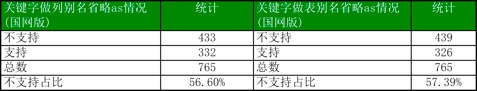 |
| 2018-05-09 14:04:30 | 你 | 你看下 |
| 2018-05-09 14:05:00 | 我 | 嗯嗯 |
| 2018-05-09 14:05:49 | 我 | 你就这么发吧 |
| 2018-05-09 14:06:10 | 你 | 我还有详细列表呢 |
| 2018-05-09 14:06:18 | 我 | 哇 |
| 2018-05-09 14:06:25 | 我 | 那么厉害 |
| 2018-05-09 14:22:02 | 你 | 陈总，雪松： 关键字省略as做别名的评估结果没有具体的工作量信息，我无法向技术支持解释，我不认为这个评估结果符合流程中研发完成可行性评估的要求。请根据附件《调研报告_省略as做别名_20180509_ll》重新评估工作量。 附件是informix sql 手册–附录A章节 共计765个关键字做表名、列名支持省略as情况。 对于评估结果需求方有几个问题，请研发经理给出解释： 1、评估邮件中『现所有580多个关键字遍历筛选一下进行』的580是哪来的？参考的哪份资料？何以给出这样的评估结论？ 2、根据『不支持省略as的关键字列表』是否能够完成评估？如果能，研发的评估就差这个列表吗？研发就没能力写个脚本筛选吗？如果还无法完成，请研发人员直接与技术支持解释，或转由其他人均可，多谢！ |
| 2018-05-09 14:23:08 | 我 | 哈哈，你这是将我军呢 |
| 2018-05-09 14:23:17 | 我 | 就这么发吧 |
| 2018-05-09 14:23:39 | 你 | 这都是策略 哈哈 |
| 2018-05-09 14:23:45 | 我 | 嗯嗯 |
| 2018-05-09 14:23:47 | 你 | 你就躺一次枪吧 |
| 2018-05-09 14:24:10 | 我 | 没错，你给我压力，我就把压力转给张杰 |
| 2018-05-09 14:24:21 | 你 | 我对的就是张杰和老陈 |
| 2018-05-09 14:26:51 | 我 | 嗯嗯 |
| 2018-05-09 14:29:05 | 你 | 你当初安排评估任务的时候答应过我 给我列表的 |
| 2018-05-09 14:29:16 | 我 | 嗯嗯，是 |
| 2018-05-09 14:29:18 | 你 | 是你出尔反尔在先 你怨不得我 |
| 2018-05-09 14:29:33 | 我 | 我没怨你，这个锅我背 |
| 2018-05-09 14:30:07 | 我 | 这事张杰摆我一道，正好接你我好好治他 |
| 2018-05-09 14:30:10 | 你 | 这个锅本来就是你的 |
| 2018-05-09 14:30:17 | 你 | 我就是这么想的 |
| 2018-05-09 14:30:24 | 你 | 他太猖狂了 |
| 2018-05-09 14:30:32 | 我 | 是 |
| 2018-05-09 14:31:14 | 你 | 我一想到张道山那个依附研发的样 我就觉得他恶心 |
| 2018-05-09 14:31:23 | 我 | 没错 |
| 2018-05-09 14:31:56 | 我 | 其实他都不是真心替研发想，就是他们原来 dsd 的臭毛病 |
| 2018-05-09 14:32:07 | 你 | 想什么 |
| 2018-05-09 14:32:14 | 你 | 他就是不想担责任 |
| 2018-05-09 14:32:20 | 我 | 这些东西他从来都没问过我 |
| 2018-05-09 14:32:32 | 你 | 是 |
| 2018-05-09 14:32:56 | 我 | 他口头上说不能给研发压力，要给研发分忧，我呸，是他自己偷懒 |
| 2018-05-09 14:33:04 | 你 | 是 |
| 2018-05-09 14:33:05 | 你 | 就是 |
| 2018-05-09 14:33:07 | 你 | 恶心 |
| 2018-05-09 14:33:16 | 我 | 动不动拿研发当挡箭牌 |
| 2018-05-09 14:35:15 | 你 | 是 |
| 2018-05-09 14:35:27 | 你 | 我这次把他们DSD的老底都翻出来 |
| 2018-05-09 14:35:34 | 我 | 嗯嗯，我支持你 |
| 2018-05-09 14:35:52 | 我 | 咱俩一起怼他们 |
| 2018-05-09 14:36:56 | 你 | 好 |
| 2018-05-09 15:40:59 | 我 | 亲，去哪了 |
| 2018-05-09 16:20:33 | 你 | 去找王欣了 |
| 2018-05-09 16:20:37 | 我 | 嗯嗯 |
| 2018-05-09 16:20:42 | 我 | 聊得怎么样 |
| 2018-05-09 16:20:53 | 我 | 是不是吐槽老陈 |
| 2018-05-09 16:21:21 | 你 | 是 |
| 2018-05-09 16:21:23 | 你 | 聊的不错 |
| 2018-05-09 16:21:35 | 我 | 嗯嗯，王欣怎么说 |
| 2018-05-09 16:22:19 | 你 | 我说老陈没有用户意识 张工依附与研发 搞得技术和研发开始势不两立了 |
| 2018-05-09 16:22:40 | 你 | 王欣说他也意识到了 |
| 2018-05-09 16:22:54 | 我 | 嗯嗯 |
| 2018-05-09 16:23:05 | 你 | 她说王总就供起来了 现在部门要指着老陈 老陈是这个样子 绝对不行 |
| 2018-05-09 16:23:20 | 你 | 我估计这就是赵总的意思 |
| 2018-05-09 16:23:27 | 我 | 是 |
| 2018-05-09 16:23:35 | 你 | 她也说张道山不行 |
| 2018-05-09 16:23:39 | 你 | 总是不在工位 |
| 2018-05-09 16:23:46 | 你 | 而且做事没头没尾 |
| 2018-05-09 16:23:51 | 你 | 说让我参加优先级的会 |
| 2018-05-09 16:23:55 | 你 | 我说我不想去 |
| 2018-05-09 16:24:01 | 我 | 嗯嗯 |
| 2018-05-09 16:24:20 | 你 | 我跟他说 我现在很绝望 不知道能坚持多久 |
| 2018-05-09 16:24:44 | 我 | 哦，她怎么说 |
| 2018-05-09 16:24:49 | 你 | 欣姐说 她能理解 他说旭明走了 她第一个想到的就是我 |
| 2018-05-09 16:25:02 | 我 | 嗯嗯 |
| 2018-05-09 16:25:09 | 你 | 我说我走不走跟他没关系 |
| 2018-05-09 16:25:22 | 你 | 我只是因为在这个部门看不到希望 |
| 2018-05-09 16:25:48 | 我 | 嗯嗯 |
| 2018-05-09 16:26:43 | 你 | 她说他知道张道山擅离职守 |
| 2018-05-09 16:27:04 | 你 | 跟张工聊过 说家里有困难 可以把工作交给别人 |
| 2018-05-09 16:27:10 | 我 | 嗯 |
| 2018-05-09 16:27:22 | 你 | 他还跟赵总说了 赵总说让我参加优先级的会 |
| 2018-05-09 16:27:52 | 你 | 我说张工不主动让我去 我不好参加 |
| 2018-05-09 16:27:59 | 你 | 参加了 也会很尴尬 |
| 2018-05-09 16:28:15 | 我 | 是 |
| 2018-05-09 16:28:32 | 我 | 现在老张明显是不让你管，他是故意的 |
| 2018-05-09 16:28:46 | 你 | 其实我现在早就不在乎了 |
| 2018-05-09 16:28:57 | 你 | 我只是想把我走的消息 透露一下 |
| 2018-05-09 16:29:03 | 我 | 嗯嗯 |
| 2018-05-09 16:29:14 | 你 | 到时候 我走的时候 欣姐也知道我是因为尔等走的 |
| 2018-05-09 16:29:21 | 你 | 免得赵总到时候为难我 |
| 2018-05-09 16:29:32 | 我 | 是 |
| 2018-05-09 16:29:41 | 你 | 不过我说的挺隐晦的 |
| 2018-05-09 16:30:10 | 你 | 欣姐说 这些事赵总不知道 他必须想个办法让赵总知道 |
| 2018-05-09 16:30:16 | 你 | 我说的事情不够具体 |
| 2018-05-09 16:30:29 | 你 | 他跟赵总说的时候 赵总问得也都非常具体 |
| 2018-05-09 16:30:34 | 我 | 嗯 |
| 2018-05-09 16:30:42 | 你 | 他说以后让我所有事都跟她说 |
| 2018-05-09 16:30:53 | 你 | 推不下去的 都跟他说 |
| 2018-05-09 16:31:00 | 你 | 而且一定是要有具体的事 |
| 2018-05-09 16:31:05 | 我 | 嗯，挺好 |
| 2018-05-09 16:31:23 | 我 | 你也正好从他那里了解该注意什么 |
| 2018-05-09 16:31:43 | 你 | 唉 |
| 2018-05-09 16:31:53 | 你 | 我觉得这个部门已经无药可救了 |
| 2018-05-09 16:31:55 | 你 | 你信吗 |
| 2018-05-09 16:31:58 | 我 | 我信 |
| 2018-05-09 16:32:21 | 你 | 我今天找王欣 根本不是想接他的手上位 也不是想吐槽老陈 |
| 2018-05-09 16:32:33 | 你 | 我就是想跟他透露 我干的不爽 |
| 2018-05-09 16:32:42 | 你 | 干的不爽是老陈 张道山闹得 |
| 2018-05-09 16:32:53 | 我 | 嗯嗯 |
| 2018-05-09 18:12:21 | 你 | 我下班了啊 |
| 2018-05-09 18:12:54 | 你 | 良辰离职这事 都谁知道了 |
| 2018-05-09 18:12:55 | 我 | 啊，这么早呀 |
| 2018-05-09 18:13:23 | 我 | 梁晨和吕迅说了，吕迅和老陈说了，老陈告诉我了 |
| 2018-05-09 18:13:29 | 我 | 其他人我就不清楚了 |
| 2018-05-09 18:13:33 | 你 | 恩 |
| 2018-05-09 18:13:51 | 我 | 估计下周会正式提 |
| 2018-05-09 18:13:56 | 我 | 你们那个小女孩呢 |
| 2018-05-09 18:14:04 | 你 | 她说再看看 |
| 2018-05-09 18:14:10 | 你 | 我问他了 他说先不提 |
| 2018-05-09 18:14:14 | 你 | 自己没想好呢 |
| 2018-05-09 18:14:16 | 我 | 他知道你要走吗 |
| 2018-05-09 18:14:27 | 你 | 不知道 |
| 2018-05-09 18:14:38 | 我 | 哈哈，不会是因为你才想看看吧 |
| 2018-05-09 18:15:02 | 我 | 我觉得你现在对他们的凝聚力越来越大 |
| 2018-05-09 18:15:08 | 你 | 必须的 |
| 2018-05-09 18:15:23 | 你 | 3个人我都拢不住 |
| 2018-05-09 18:15:49 | 你 | 现在用着越来越好使了 |
| 2018-05-09 18:16:02 | 我 | 哈哈，关键还是你管理有方 |
| 2018-05-09 18:16:35 | 你 | 3个人没什么管理 |
| 2018-05-09 18:16:46 | 我 | 谁说没有呀 |
| 2018-05-09 18:16:54 | 我 | 你每天给他们开会就是一种管理 |
| 2018-05-09 18:17:17 | 你 | 是吗 |
| 2018-05-09 18:17:21 | 我 | 管理不是制度、不是做样子，是征服心 |
| 2018-05-09 18:17:43 | 我 | 他们对你现在都很崇拜，这就是管理的结果 |
| 2018-05-09 18:18:00 | 我 | 攻心为上嘛 |
| 2018-05-09 18:18:25 | 你 | 是 |
| 2018-05-09 18:18:30 | 你 | 哈哈 |
| 2018-05-09 18:18:31 | 你 | 是吧 |
| 2018-05-09 18:18:58 | 我 | 你现在应该可以带5个人 |
| 2018-05-09 18:19:19 | 我 | 再多了你计划任务能力不足就会表现出来了 |
| 2018-05-09 18:19:25 | 你 | 恩 |
| 2018-05-09 18:19:41 | 你 | 是 |
| 2018-05-09 18:19:51 | 你 | 我走了啊 |
| 2018-05-09 18:19:58 | 我 | 嗯嗯，走吧 |
| 2018-05-09 18:20:09 | 我 | 今天早点睡，明天要早起 |
| 2018-05-09 18:20:13 | 你 | 是 |
| 2018-05-09 18:20:15 | 我 | 明天别着凉 |
| 2018-05-09 18:20:18 | 你 | 恩 |
| 2018-05-09 18:20:34 | 你 | 告诉件让你锥心的事 哈哈 |
| 2018-05-09 18:20:38 | 我 | 啊 |
| 2018-05-09 18:20:40 | 你 | 你还被我封着呢 |
| 2018-05-09 18:20:47 | 你 | 我今天的朋友圈你就看不到 |
| 2018-05-09 18:20:48 | 你 | 哈哈 |
| 2018-05-09 18:20:50 | 我 | [流泪] |
| 2018-05-09 18:20:53 | 我 | 不要呀 |
| 2018-05-09 18:20:59 | 你 | 明天见 |
| 2018-05-09 18:21:00 | 你 | 哈哈 |
| 2018-05-09 18:21:09 | 你 | 解不解封 看你的表现了 |
| 2018-05-09 18:21:17 | 我 | 嗯嗯，我一定好好表现 |
| 2018-05-09 18:21:31 | 你 | we’ll see |
| 2018-05-09 18:21:45 | 我 | 💪 |
{kind=link}
2018-05-10¶
| 2018-05-10 06:10:47 | 我 | 你上车了吗 |
| 2018-05-10 06:13:17 | 你 | 上了 |
| 2018-05-10 06:13:54 | 我 | 嗯嗯，歇会吧 |
| 2018-05-10 06:24:01 | 我 | 冷不冷 |
| 2018-05-10 06:34:36 | 你 | 冷 |
| 2018-05-10 06:36:05 | 我 | 唉，有衣服盖一下吗？ |
| 2018-05-10 06:36:14 | 我 | 肚子别着凉 |
| 2018-05-10 06:36:16 | 你 | 没有 |
| 2018-05-10 06:36:24 | 你 | 肚子没事，就是腿 |
| 2018-05-10 06:36:31 | 你 | 没事啦 |
| 2018-05-10 06:36:40 | 你 | 你是跟老陈坐一起么 |
| 2018-05-10 06:36:58 | 我 | 是 |
| 2018-05-10 06:37:52 | 我 | 你呢，是和高杰吗 |
| 2018-05-10 07:54:11 | 我 | 你咋样 |
| 2018-05-10 07:55:05 | 你 | 我睡觉了 |
| 2018-05-10 07:55:11 | 你 | 迷迷糊糊的 |
| 2018-05-10 07:55:20 | 你 | 没事，跟高姐座一起 |
| 2018-05-10 07:55:34 | 我 | 嗯嗯，注意别着凉 |
| 2018-05-10 08:10:48 | 你 | 好 |
| 2018-05-10 10:24:07 | 我 | 累吗？ |
| 2018-05-10 10:24:27 | 我 | 你站在哪里？ |
| 2018-05-10 10:25:05 | 你 | 还行，在楼梯前边一点 |
| 2018-05-10 10:25:36 | 我 | 嗯嗯，站的时间有点长 |
| 2018-05-10 10:25:50 | 你 | 嗯，没事 |
| 2018-05-10 10:25:53 | 你 | 你在哪呢 |
| 2018-05-10 10:26:01 | 你 | 我身边是葛娜 |
| 2018-05-10 10:26:43 | 我 | 我刚走到花圈这，应该在你们前面吧 |
| 2018-05-10 10:26:57 | 你 | 是 |
| 2018-05-10 10:27:06 | 你 | 我离花圈还有几步 |
| 2018-05-10 10:27:52 | 我 | 看不见你 |
| 2018-05-10 10:28:02 | 我 | 我在老杨前面 |
| 2018-05-10 10:28:51 | 你 | 人太多了 |
| 2018-05-10 10:29:04 | 你 | 我又比较矮 |
| 2018-05-10 10:29:11 | 你 | 我把外套脱了 |
| 2018-05-10 10:29:21 | 我 | 嗯嗯，热了 |
| 2018-05-10 10:29:35 | 我 | 还好太阳不是很足 |
| 2018-05-10 10:30:23 | 你 | 是 |
| 2018-05-10 10:30:59 | 我 | 你腰没事吧，站了这么久了 |
| 2018-05-10 11:26:23 | 你 | 没事，看到你了 |
| 2018-05-10 11:27:02 | 我 | 嗯嗯 |
| 2018-05-10 13:16:24 | 我 | 睡着了，你睡了吗 |
| 2018-05-10 13:32:29 | 你 | 睡了 |
| 2018-05-10 13:32:46 | 我 | 嗯嗯 |
| 2018-05-10 16:04:19 | 你 | 我五点有个电话面试 |
| 2018-05-10 16:04:24 | 你 | 去哪比较好呢 |
| 2018-05-10 16:04:35 | 我 | 去外面 |
| 2018-05-10 16:04:44 | 你 | 明天上午十点有个面试 |
| 2018-05-10 16:04:50 | 我 | 嗯嗯，挺好 |
| 2018-05-10 16:04:59 | 你 | 我想开了晨会过去吧 |
| 2018-05-10 16:05:04 | 你 | 反正也不远 |
| 2018-05-10 16:05:08 | 我 | 行 |
| 2018-05-10 16:05:22 | 你 | 迟会到也没事 反正也不去 |
| 2018-05-10 16:05:25 | 我 | 是 |
| 2018-05-10 17:38:53 | 我 | 亲，你面试怎么样 |
2018-05-11¶
| 2018-05-11 09:44:29 | 你 | 我感觉走不了 |
| 2018-05-11 09:44:43 | 你 | 张道山一直在工位上 |
| 2018-05-11 09:44:58 | 我 | 没事 |
| 2018-05-11 09:45:01 | 我 | 你走吧 |
| 2018-05-11 09:45:19 | 你 | 我这种不请假去面试，会不会不好啊 |
| 2018-05-11 09:45:53 | 你 | 管不了那么多了 |
| 2018-05-11 09:46:00 | 我 | 没事，没人知道 |
| 2018-05-11 10:20:21 | 你 | 找门口就超不顺 |
| 2018-05-11 10:20:51 | 我 | 啊 |
| 2018-05-11 10:20:58 | 我 | 没找到吗 |
| 2018-05-11 10:25:26 | 你 | 唉，回去再说 |
| 2018-05-11 10:25:54 | 我 | 嗯 |
| 2018-05-11 10:37:12 | 你 | 这个单位也太水了 |
| 2018-05-11 10:37:13 | 你 | 气死我了 |
| 2018-05-11 10:37:36 | 我 | 那就不值得生气 |
| 2018-05-11 10:38:00 | 你 | 面完了 |
| 2018-05-11 10:38:15 | 我 | 这种单位就直接藐视他们 |
| 2018-05-11 10:38:18 | 你 | 我找这个公司就找了半个小时 |
| 2018-05-11 10:38:19 | 我 | 嗯嗯 |
| 2018-05-11 10:38:26 | 你 | 面试了10分钟 |
| 2018-05-11 10:39:00 | 我 | 确实太水了 |
| 2018-05-11 11:07:49 | 我 | 不理他们，咱们聊聊吧 |
| 2018-05-11 11:29:38 | 你 | 哎呀 你去哪了 |
| 2018-05-11 11:29:50 | 你 | 我刚才把车还蹭了一下 不过不严重 |
| 2018-05-11 11:29:54 | 你 | 你说我生不生气 |
| 2018-05-11 11:30:00 | 你 | 就这么个破面试 |
| 2018-05-11 11:30:06 | 我 | 是 |
| 2018-05-11 11:30:11 | 你 | 面试我的是个女的 一共问了3个问题 |
| 2018-05-11 11:30:20 | 你 | 他连版本迭代都不懂 |
| 2018-05-11 11:30:27 | 你 | 还当面试观 |
| 2018-05-11 11:30:33 | 我 | 哈哈，太low了 |
| 2018-05-11 11:30:37 | 你 | 从头到尾 脸都拉倒脚了 |
| 2018-05-11 11:30:45 | 你 | 跟于雅洁一个德行 |
| 2018-05-11 11:31:01 | 我 | 是因为你太优秀，超过他了 |
| 2018-05-11 11:31:19 | 我 | 他自己觉得太没面子啦[呲牙] |
| 2018-05-11 11:31:21 | 你 | 你吃饭去了吗 |
| 2018-05-11 11:31:30 | 我 | 没有呢 |
| 2018-05-11 14:00:32 | 我 | 告诉你一个Big News，黄军雷搬回来了 |
| 2018-05-11 14:01:50 | 你 | 我晕 |
| 2018-05-11 14:02:01 | 你 | 回8t了吗 |
| 2018-05-11 14:03:25 | 你 | 好尴尬啊 |
| 2018-05-11 14:04:04 | 我 | 今天中午我去找老陈的时候，看见黄老师搬回来了 |
| 2018-05-11 14:04:25 | 我 | 后面还不知道会乱成啥样了 |
| 2018-05-11 14:14:00 | 你 | 乱死了 |
| 2018-05-11 14:14:24 | 我 | 是 |
| 2018-05-11 14:16:20 | 你 | Dcc做到server的，是6.30发版吗 |
| 2018-05-11 14:16:37 | 我 | 是 |
| 2018-05-11 14:17:22 | 你 | 发到哪个版本呢？ |
| 2018-05-11 14:17:59 | 我 | 这个要看现场了，王欣上午就是来协调这件事的 |
| 2018-05-11 14:18:10 | 你 | 我们计划呢 |
| 2018-05-11 14:18:12 | 我 | 估计在 G5上发个补丁版的可能性最大 |
| 2018-05-11 14:18:16 | 你 | 没有计划是吧 |
| 2018-05-11 14:18:23 | 我 | 老张没有排 |
| 2018-05-11 14:18:24 | 你 | 好么 |
| 2018-05-11 14:18:31 | 我 | 我的想法是在 G5上发补丁版 |
| 2018-05-11 14:18:35 | 你 | 现在他是最大的瓶颈 |
| 2018-05-11 14:18:41 | 你 | 好吧 |
| 2018-05-11 14:18:44 | 我 | 如果 G8赶得上，那就 G8 |
| 2018-05-11 14:18:50 | 我 | 否则就得 G9了 |
| 2018-05-11 14:37:41 | 你 | 1、743、744 AQ任务要研发计划，杨总提的说只有这两个没有计划，roadmap也可以。 2、626排到哪个版本。 3、金航数码的一堆包（763-769） 还有varchar唯一约束的 后续推进情况。 4、golang的后续推进情况。 5、606提roadmap。 6、454提roadmap。 |
| 2018-05-11 14:37:48 | 我 | 嗯嗯 |
| 2018-05-11 14:44:31 | 你 | 现在都崩了 |
| 2018-05-11 14:44:44 | 你 | 技术那也就剩下 晓亮和刘辉 |
| 2018-05-11 14:44:53 | 你 | 剩下的都崩了 |
| 2018-05-11 14:44:57 | 我 | 嗯嗯 |
| 2018-05-11 14:45:40 | 我 | 崩吧，最好让赵总都知道 |
| 2018-05-11 14:45:59 | 你 | 嗨 他知道也无济于事 |
| 2018-05-11 14:46:27 | 我 | 这些事情肯定是无济于事，但是对未来部门肯定有影响 |
| 2018-05-11 14:46:42 | 你 | 未来？还有什么未来 |
| 2018-05-11 14:46:50 | 我 | 不排除赵总强力拿走产品组 |
| 2018-05-11 14:47:07 | 我 | 让王欣或者你去做产品经理 |
| 2018-05-11 14:47:19 | 我 | 8t 这边就没有产品经理了 |
| 2018-05-11 14:47:37 | 你 | 无所谓啦 |
| 2018-05-11 14:47:47 | 你 | 你现在知道DSD怎么那样了吗 |
| 2018-05-11 14:47:57 | 我 | 我早就知道呀 |
| 2018-05-11 14:47:58 | 你 | 我观察 他们是严重的信息不对称 |
| 2018-05-11 14:48:10 | 你 | 而且 每个人都是事不关己的态度 |
| 2018-05-11 14:48:11 | 我 | 原来我在 DSD 的时候他们就是这样 |
| 2018-05-11 14:48:33 | 我 | 所以我后来才选去开发中心 |
| 2018-05-11 14:48:38 | 你 | 是吧 |
| 2018-05-11 14:48:55 | 我 | 你也知道我和老陈一直有分歧 |
| 2018-05-11 14:48:56 | 你 | 我现在对这个现状已经不生气了 |
| 2018-05-11 14:49:04 | 你 | 我就是觉得好玩 |
| 2018-05-11 14:49:05 | 我 | 就是现在你看见的这些 |
| 2018-05-11 14:49:06 | 你 | 好笑 |
| 2018-05-11 14:49:28 | 我 | 去年我做产品经理，咱们就是按照我的理念去做产品 |
| 2018-05-11 14:49:56 | 我 | 如果不是王总蠢，时间太短，咱们肯定能做好多事情 |
| 2018-05-11 14:50:05 | 你 | 是 |
| 2018-05-11 14:50:12 | 你 | 翻译了也没得看 |
| 2018-05-11 14:50:17 | 你 | 他们翻得的东西 |
| 2018-05-11 14:50:19 | 你 | 呵呵 |
| 2018-05-11 14:50:23 | 我 | 哈哈 |
| 2018-05-11 14:50:30 | 你 | 还不如看英文的 |
| 2018-05-11 14:50:42 | 我 | 是 |
| 2018-05-11 14:55:12 | 你 | 我这个blingbling的衣服好看吗 |
| 2018-05-11 14:55:25 | 我 | 好看呀 |
| 2018-05-11 14:55:42 | 你 | 会显胖吗 |
| 2018-05-11 14:55:48 | 我 | 不会 |
| 2018-05-11 15:54:35 | 你 | 你干嘛呢 也不搭理我 |
| 2018-05-11 15:54:39 | 你 | 做golang呢吗 |
| 2018-05-11 15:54:46 | 我 | 没有，和李杰聊天呢 |
| 2018-05-11 15:54:51 | 你 | 聊啥呢 |
| 2018-05-11 15:55:00 | 我 | 聊她现在做的工具 |
| 2018-05-11 15:55:07 | 你 | 聊吧 |
| 2018-05-11 15:55:15 | 我 | 该去开会了吧 |
| 2018-05-11 16:01:37 | 你 | 我不想坐这了 |
| 2018-05-11 16:01:45 | 我 | 因为老陈吗 |
| 2018-05-11 16:01:54 | 你 | 感觉跟老陈做的太近，懒得挨着他 |
| 2018-05-11 16:02:17 | 我 | 那你提出来和我换一下，你挨着王璇坐 |
| 2018-05-11 16:02:42 | 你 | 我跟讨厌王璇 |
| 2018-05-11 16:02:46 | 你 | 更 |
| 2018-05-11 16:02:56 | 你 | 算了，就这样吧 |
| 2018-05-11 16:03:03 | 我 | 哦，要不你往我这边靠靠 |
| 2018-05-11 16:03:18 | 你 | 太挤了 |
2018-05-12¶
| 2018-05-12 08:23:59 | 你 | 我加班 |
| 2018-05-12 09:26:04 | 你 | 你今天加班吗 |
| 2018-05-12 09:26:18 | 你 | 我不去面试了 面试取消 猎头没跟我说 |
| 2018-05-12 09:26:32 | 你 | 现在的小孩都太不负责了 |
| 2018-05-12 09:26:47 | 我 | 我正在赶过去 |
| 2018-05-12 09:27:02 | 你 | 哦 你别着急 你们今天研发的不加班吗 |
| 2018-05-12 09:27:12 | 你 | 不是要做770么 |
| 2018-05-12 09:27:32 | 我 | 不知道 |
| 2018-05-12 09:44:23 | 我 | 我得10点多才能到，别着急 |
| 2018-05-12 09:44:34 | 你 | 我没着急 |
| 2018-05-12 09:44:42 | 你 | 你自己看吧 你别着急才是 |
| 2018-05-12 09:45:28 | 我 | 嗯嗯 |
| 2018-05-12 10:17:40 | 我 | 到了 |
| 2018-05-12 10:17:47 | 你 | 好 |
2018-05-14¶
| 2018-05-14 08:47:32 | 你 | 你说咱们纯净版版本号不给分支信息的行为 |
| 2018-05-14 08:47:39 | 你 | 就是张道山在刷存在感 |
| 2018-05-14 08:47:45 | 你 | 你说呢 |
| 2018-05-14 08:47:49 | 我 | 是 |
| 2018-05-14 08:47:52 | 你 | 1.6.8？？？呵呵了 |
| 2018-05-14 08:48:04 | 你 | 让他整吧 越乱越好 |
| 2018-05-14 08:48:09 | 我 | 嗯嗯 |
| 2018-05-14 08:48:28 | 你 | 你知道现在POC版还有_1/2/3 |
| 2018-05-14 08:48:31 | 你 | 这事吗 |
| 2018-05-14 08:48:35 | 我 | 啊 |
| 2018-05-14 08:48:41 | 你 | 据说是伟大的王总搞的 |
| 2018-05-14 08:48:47 | 我 | 呵呵 |
| 2018-05-14 08:48:51 | 你 | 傻缺真是 |
| 2018-05-14 08:49:19 | 你 | 1.6.6_3P20180511_1 |
| 2018-05-14 08:49:26 | 你 | 看到_1了吧 |
| 2018-05-14 08:49:29 | 我 | 是 |
| 2018-05-14 09:40:57 | 你 | 张道山真恶心 |
| 2018-05-14 09:41:20 | 我 | 咋啦 |
| 2018-05-14 09:41:30 | 你 | 他回复你邮件了 版本号的 |
| 2018-05-14 09:41:59 | 我 | 呵呵，简直了 |
| 2018-05-14 09:42:14 | 你 | 他根本就不懂 |
| 2018-05-14 09:42:18 | 你 | 就是瞎说 |
| 2018-05-14 09:42:22 | 我 | 没错 |
| 2018-05-14 09:42:35 | 你 | 蠢到没朋友 |
| 2018-05-14 09:42:49 | 你 | 你看 按照路径的事 是DSD自己搞的吧 |
| 2018-05-14 09:42:57 | 你 | 连需求都没有 就在那瞎整 |
| 2018-05-14 09:43:05 | 你 | 整完了 也不通知一线 |
| 2018-05-14 09:43:08 | 我 | 就是 |
| 2018-05-14 09:43:18 | 我 | 今天终于自己承认了 |
| 2018-05-14 09:43:30 | 你 | 我当初测试那么多 就是要打他的脸 |
| 2018-05-14 09:43:44 | 你 | select回退那个功能 赵益太不给力了 |
| 2018-05-14 09:43:52 | 你 | 碰上这样的队友 我也是醉了 |
| 2018-05-14 09:44:08 | 我 | 我估计你一开始测试老张就慌了，自己跑去看代码了 |
| 2018-05-14 09:44:20 | 我 | 赵义没搞定吗 |
| 2018-05-14 09:48:40 | 我 | xml 类型的需求有号吗 |
| 2018-05-14 09:50:21 | 你 | 764、765、766 |
| 2018-05-14 09:50:34 | 你 | 792 |
| 2018-05-14 09:52:51 | 我 | 中航这事赵总和老杨吵起来了，老杨很生气 |
| 2018-05-14 09:52:59 | 我 | 等回去我给你详说吧 |
| 2018-05-14 09:53:36 | 你 | 因为啥啊 |
| 2018-05-14 09:54:23 | 我 | 赵总说 Package 需求不清，刘辉说是因为 xml 的问题，赵总说应该提 xml 的需求 |
| 2018-05-14 09:55:02 | 我 | 我说 xml 也提了，老张说没有，只有这个 package 的 |
| 2018-05-14 09:55:08 | 你 | package和xml的都提了 |
| 2018-05-14 09:55:15 | 我 | 然后赵总就说一线提的需求不清楚 |
| 2018-05-14 09:55:16 | 你 | 都有 |
| 2018-05-14 09:55:19 | 你 | 两批 |
| 2018-05-14 09:55:37 | 我 | 然后老杨就和赵总争起来了 |
| 2018-05-14 09:56:20 | 你 | 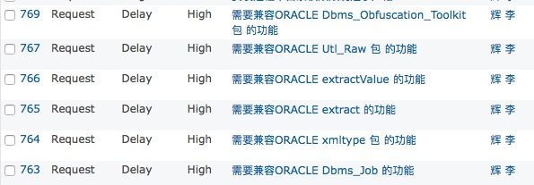 |
| 2018-05-14 10:06:31 | 你 | 是两批需求 |
| 2018-05-14 10:09:13 | 你 | xml除了中行提的 在赵益那个优先级列表上也有 |
| 2018-05-14 10:09:18 | 你 | rd是792 |
| 2018-05-14 10:09:39 | 我 | 好的 |
| 2018-05-14 10:21:29 | 我 | 又开始扯皮了，老陈、王总、老杨这仨人到一块就剩扯皮了 |
| 2018-05-14 10:21:39 | 你 | 呵呵 |
| 2018-05-14 10:25:05 | 你 | 没救就是没救了 |
| 2018-05-14 10:25:17 | 我 | 是 |
| 2018-05-14 10:25:35 | 我 | 让他们去争吧 |
| 2018-05-14 10:25:40 | 你 | 恩 |
| 2018-05-14 10:25:48 | 我 | 刘辉现在也和我一个想法 |
| 2018-05-14 10:25:51 | 你 | FT等国产平台af文件信息不全 |
| 2018-05-14 10:25:56 | 你 | 这个是畅泉做的那个吗 |
| 2018-05-14 10:25:59 | 我 | 我估计他也快跑了 |
| 2018-05-14 10:26:04 | 我 | 是 |
| 2018-05-14 10:26:08 | 你 | 是吗 |
| 2018-05-14 10:26:11 | 你 | 有可能 |
| 2018-05-14 10:26:16 | 我 | 不过好像是dsd合并的 |
| 2018-05-14 10:26:35 | 你 | 我就是问问是不是畅泉做的那个 |
| 2018-05-14 10:26:50 | 我 | 是畅泉做的 |
| 2018-05-14 10:27:16 | 你 | 你知道 那37个需求 张道山根本不知道细节 |
| 2018-05-14 10:27:23 | 你 | 说什么就剩下一个new的了 |
| 2018-05-14 10:27:28 | 你 | 根本就是瞎扯 |
| 2018-05-14 10:27:45 | 我 | 我猜就是 |
| 2018-05-14 10:28:01 | 你 | 他根本不知道 |
| 2018-05-14 10:28:38 | 我 | 就会瞎扯，除了瞎扯就没有别的本事了 |
| 2018-05-14 10:29:04 | 你 | 是 |
| 2018-05-14 10:29:11 | 你 | 没有一个是干活的 |
| 2018-05-14 10:29:38 | 我 | 这种人都应该踢到前线去，去忽悠客户 |
| 2018-05-14 10:29:52 | 我 | 别在家里没事捣乱 |
| 2018-05-14 10:30:04 | 你 | 是 说的太对了 |
| 2018-05-14 10:30:49 | 我 | 哈哈，中航工业，赵总说把康学霞换下来 |
| 2018-05-14 10:31:12 | 你 | 哈哈 |
| 2018-05-14 10:58:34 | 你 | 蔡刚说的就是771吧 |
| 2018-05-14 10:58:40 | 你 | 今天能发对吗 |
| 2018-05-14 10:58:52 | 我 | 是 |
| 2018-05-14 11:24:45 | 我 | 有讨论起版本规划[抓狂] |
| 2018-05-14 12:38:00 | 你 | 我上周油腻男青年 通知我复试了 |
| 2018-05-14 12:38:03 | 你 | 耶。。。 |
| 2018-05-14 12:38:09 | 我 | 哈哈 |
| 2018-05-14 12:38:26 | 你 | 会会领导去 |
| 2018-05-14 12:38:37 | 我 | 嗯嗯，什么时候去 |
| 2018-05-14 12:38:54 | 你 | 明天下午2点 |
| 2018-05-14 12:39:00 | 你 | 就在咱们隔壁楼 |
| 2018-05-14 12:39:02 | 你 | 没事 |
| 2018-05-14 12:39:04 | 我 | 嗯嗯 |
| 2018-05-14 12:39:12 | 你 | 我也没打算去 |
| 2018-05-14 12:39:17 | 你 | 看看领导的魅力 |
| 2018-05-14 12:39:22 | 我 | 嗯 |
| 2018-05-14 12:39:35 | 你 | 要还是油腻男青年 就果断拒绝 |
| 2018-05-14 12:39:41 | 我 | 哈哈 |
| 2018-05-14 12:41:29 | 你 | 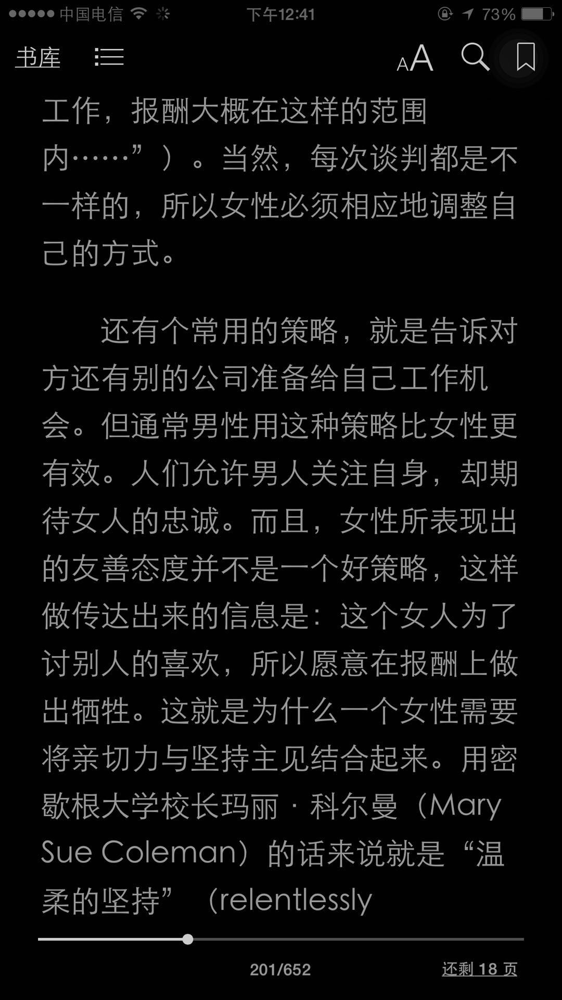 |
| 2018-05-14 12:41:53 | 我 | 嗯嗯 |
| 2018-05-14 12:42:20 | 你 | 这本书我很喜欢 |
| 2018-05-14 12:42:24 | 你 | 也挺简单 |
| 2018-05-14 12:42:34 | 你 | 昨天下午开始看的 已经看完200多页了 |
| 2018-05-14 12:42:40 | 我 | 写的不错吧 |
| 2018-05-14 12:42:42 | 你 | 快200页 |
| 2018-05-14 12:42:44 | 你 | 嗯嗯 |
| 2018-05-14 12:43:03 | 你 | 我发现 我自己虽然是个女的 但是对女性也还是有成见 |
| 2018-05-14 12:43:11 | 我 | 哦 |
| 2018-05-14 12:43:13 | 你 | 就是被社会同化的 |
| 2018-05-14 12:43:18 | 我 | 比如说 |
| 2018-05-14 12:43:20 | 你 | 而且非常严重 |
| 2018-05-14 12:43:52 | 你 | 如果我是领导 也会按照她说的那些条条框框去定位女性 |
| 2018-05-14 12:44:11 | 我 | 嗯嗯 |
| 2018-05-14 12:44:20 | 我 | 就是被同化了 |
| 2018-05-14 12:45:32 | 你 | 是 |
| 2018-05-14 14:30:45 | 我 | 听说廖爱福也要走了 |
| 2018-05-14 14:30:53 | 你 | 不是吧 |
| 2018-05-14 14:30:56 | 你 | 唐骞走了 |
| 2018-05-14 14:31:00 | 我 | 是 |
| 2018-05-14 14:31:02 | 你 | 我估计赵益也要走 |
| 2018-05-14 14:31:05 | 你 | 真晕 |
| 2018-05-14 14:31:07 | 我 | 是 |
| 2018-05-14 14:31:08 | 你 | 我的天啊 |
| 2018-05-14 14:31:14 | 我 | 没准晓亮也有想法 |
| 2018-05-14 14:31:23 | 你 | 不知道呢 |
| 2018-05-14 14:31:27 | 你 | 我回头问问他 |
| 2018-05-14 14:31:49 | 我 | 嗯嗯 |
| 2018-05-14 15:32:23 | 你 | 又招了个财务的 |
| 2018-05-14 15:32:50 | 我 | 哦，哪来的消息 |
| 2018-05-14 15:33:18 | 你 | 邮件啊 |
| 2018-05-14 15:33:42 | 我 | 嗯嗯，刚看见 |
| 2018-05-14 15:36:12 | 你 | 你说就这样 还不早早的把技术支持都逼死 |
| 2018-05-14 15:36:22 | 我 | 是 |
| 2018-05-14 15:36:29 | 你 | 技术都走了 到时候就让张道山上 |
| 2018-05-14 15:36:46 | 我 | 没错，让王总带着他去现场 |
| 2018-05-14 15:36:51 | 你 | 就是 |
| 2018-05-14 15:37:49 | 我 | 今天开会的时候，老杨一直压研发的，我没有太说话，后来老杨给我使眼色，他是想压王总 |
| 2018-05-14 15:37:57 | 你 | 哈哈 |
| 2018-05-14 15:38:04 | 你 | 太搞笑了 还使眼色 |
| 2018-05-14 15:38:11 | 我 | 是 |
| 2018-05-14 15:38:15 | 你 | 还压他干啥 |
| 2018-05-14 15:38:21 | 我 | 我俩就像唱双簧的 |
| 2018-05-14 15:38:25 | 你 | 反正他也就这样了 |
| 2018-05-14 15:38:50 | 我 | 老杨让王总去现场解决问题 |
| 2018-05-14 15:39:07 | 你 | 哈哈 |
| 2018-05-14 15:39:13 | 你 | 唉 |
| 2018-05-14 15:39:18 | 你 | 大厦将倾 |
| 2018-05-14 15:39:24 | 你 | 你看赵总啥态度啊 |
| 2018-05-14 15:39:38 | 我 | 赵总肯定还是要继续干 |
| 2018-05-14 15:39:44 | 你 | 所有的事 都是张道山的错 |
| 2018-05-14 15:39:52 | 我 | 而且明确了是以 AQ 的为主 |
| 2018-05-14 15:39:58 | 我 | 没错 |
| 2018-05-14 15:40:03 | 你 | 战术都让张道山给败了 |
| 2018-05-14 15:40:16 | 你 | 战略有赵总 其实还好 |
| 2018-05-14 15:40:19 | 我 | 你回来得给王欣念叨念叨 |
| 2018-05-14 15:40:38 | 你 | 今天王欣把你们会上的结论 照片都发给我了 |
| 2018-05-14 15:40:46 | 我 | 嗯嗯 |
| 2018-05-14 15:41:06 | 你 | 今天下午良辰跟王总也聊了 |
| 2018-05-14 15:41:14 | 你 | 就是提离职了呗 |
| 2018-05-14 15:41:23 | 我 | 是 |
| 2018-05-14 15:41:26 | 你 | 真是悲哀 |
| 2018-05-14 15:42:04 | 我 | 所以说团队的内聚力才是最重要的 |
| 2018-05-14 15:42:12 | 你 | 是 |
| 2018-05-14 15:42:21 | 你 | 将熊熊一窝 |
| 2018-05-14 15:42:28 | 我 | 你看我带一组的时候，压力比现在大多了，大家的心态都比这强 |
| 2018-05-14 15:42:36 | 我 | 现在大家都散了 |
| 2018-05-14 15:42:37 | 你 | 差太远了 |
| 2018-05-14 15:42:38 | 你 | 是 |
| 2018-05-14 15:42:41 | 你 | 都散了 |
| 2018-05-14 15:43:03 | 你 | 我估计王总到时候 死都不知道怎么死的 |
| 2018-05-14 15:43:11 | 你 | 他这样的更悲哀 |
| 2018-05-14 15:43:20 | 你 | 我这样的好歹还能吸取点教训 |
| 2018-05-14 15:43:37 | 你 | 他就糊里糊涂的 就这样了 下次去了一个地方 还会重蹈覆辙 |
| 2018-05-14 15:43:51 | 我 | 是 |
| 2018-05-14 15:43:52 | 你 | 老陈也是 |
| 2018-05-14 15:43:58 | 你 | 你先忙吧 |
| 2018-05-14 15:44:02 | 我 | 我不忙 |
| 2018-05-14 15:44:07 | 你 | 我记得赵总给你派活了不是 |
| 2018-05-14 15:44:27 | 我 | 没事的，不在这一时 |
| 2018-05-14 15:44:54 | 我 | 这个不是8月份要吗，来得及 |
| 2018-05-14 15:45:02 | 我 | 现在最大的问题在测试 |
| 2018-05-14 15:45:13 | 我 | 我6月份送测，他们得12月发版 |
| 2018-05-14 15:45:19 | 你 | 哈哈 |
| 2018-05-14 15:45:46 | 我 | 所以这个我不着急，反而是 decode 的那个我有点担心 |
| 2018-05-14 15:45:53 | 我 | 我们还没有安排人做呢 |
| 2018-05-14 15:45:59 | 你 | 唉 |
| 2018-05-14 15:46:08 | 你 | 没办法 我都说过好几次 没人听 |
| 2018-05-14 15:46:12 | 你 | 无所谓了 |
| 2018-05-14 15:46:18 | 你 | 爱做不做 |
| 2018-05-14 15:46:23 | 我 | 是，我也说了好几次，都懒得说了 |
| 2018-05-14 15:46:28 | 你 | 是 |
| 2018-05-14 15:47:27 | 我 | 今天 xorm 这事赵总让现场换老8s 试试 |
| 2018-05-14 15:47:35 | 我 | 安排我和刘辉测试一下 |
| 2018-05-14 15:47:40 | 你 | 我知道 |
| 2018-05-14 15:47:48 | 我 | 刚才我俩测了一下，发现有崩溃 |
| 2018-05-14 15:47:54 | 你 | 28s怎么可能会换老8s呢 |
| 2018-05-14 15:48:30 | 我 | 其实我是想做，只是现在我不能说，至少我得能要来人和时间 |
| 2018-05-14 15:48:49 | 你 | 是 |
| 2018-05-14 16:00:52 | 你 | 你专心点呗 把清大科越的那两个事说下 |
| 2018-05-14 16:00:58 | 我 | 嗯嗯 |
| 2018-05-14 16:01:07 | 你 | 关键字的老张一直主张不做 |
| 2018-05-14 16:01:20 | 我 | 李杰的事情比工作好玩[呲牙] |
| 2018-05-14 16:01:26 | 你 | 别等着你苦哈哈的做了 结果他来一句 当初就不应该做 |
| 2018-05-14 16:01:35 | 我 | 嗯嗯 |
| 2018-05-14 16:18:11 | 你 | 都是给DSD擦屁股 |
| 2018-05-14 16:18:17 | 你 | 靠 他妹的 |
| 2018-05-14 16:18:27 | 我 | 是 |
| 2018-05-14 16:19:15 | 我 | 去年给他们擦了一年，今年他们接着给咱们挖坑 |
| 2018-05-14 16:19:27 | 你 | 就是 |
| 2018-05-14 16:19:34 | 你 | 看着他们就头疼 |
| 2018-05-14 16:19:56 | 你 | 开始撇了 |
| 2018-05-14 16:20:02 | 你 | 说的多干净 |
| 2018-05-14 16:20:31 | 我 | 没错 |
| 2018-05-14 17:24:13 | 你 | 这么看还是王总靠谱点 |
| 2018-05-14 17:24:15 | 你 | 哈哈 |
| 2018-05-14 17:24:20 | 你 | 好歹能定下点事 |
| 2018-05-14 17:24:43 | 我 | 不是的，是我今天强势，王总基本上是按照我的思路去做的 |
| 2018-05-14 17:24:52 | 我 | 我无法说服老陈 |
| 2018-05-14 17:24:53 | 你 | 哦 |
| 2018-05-14 17:25:07 | 你 | 没看出来你强势啊 |
| 2018-05-14 17:25:21 | 我 | 哈哈 |
| 2018-05-14 17:35:02 | 你 | 今天陈总怎么这么消停 |
| 2018-05-14 17:35:10 | 你 | 是赵总顶主干了啊 |
| 2018-05-14 17:36:30 | 我 | 是 |
| 2018-05-14 17:49:59 | 你 | 王总又着急回家了 |
| 2018-05-14 17:50:09 | 我 | 嗯嗯 |
| 2018-05-14 17:52:15 | 你 | 我周三可能不来了 |
| 2018-05-14 17:52:18 | 你 | 去面试 |
| 2018-05-14 17:53:08 | 我 | 哦，请一天吗 |
| 2018-05-14 18:04:23 | 你 | 陈总跟王总今天好意外啊 |
| 2018-05-14 18:04:31 | 我 | 是 |
| 2018-05-14 18:04:41 | 我 | 今天你几点走 |
| 2018-05-14 18:04:49 | 你 | 不知道 |
| 2018-05-14 18:05:10 | 我 | 我和你一起走 |
| 2018-05-14 18:05:26 | 你 | 好 |
| 2018-05-14 18:05:28 | 我 | 明天也有可能和你一起走 |
| 2018-05-14 18:05:38 | 你 | 好 |
| 2018-05-14 18:14:22 | 我 | MD 老陈阴我，RSS 那个问题优先级会议老陈让王欣指给我了，让我出报告 |
| 2018-05-14 18:14:46 | 我 | 这个报告王志已经写了 |
| 2018-05-14 18:14:59 | 我 | 还要让我写 |
| 2018-05-14 18:15:06 | 我 | 太阴了 |
| 2018-05-14 18:15:58 | 你 | 额～～～ |
{kind=link}
{kind=link}
2018-05-15¶
{kind=link}
2018-05-16¶
| 2018-05-16 08:06:48 | 你 | 亲，golang的事你要加油啊，不行就加班，到时候我陪你 |
| 2018-05-16 08:07:16 | 我 | 嗯嗯，放心吧，肯定没问题的 |
| 2018-05-16 08:13:39 | 你 | 最近感觉区块链特别火 |
| 2018-05-16 08:13:54 | 我 | 已经火了快一年啦 |
| 2018-05-16 08:51:17 | 我 | 几天早上不开晨会了，开赵总的会。王欣特意通知我的 |
| 2018-05-16 09:41:19 | 我 | 又变成扯皮的会了 |
| 2018-05-16 12:18:52 | 你 | 跟赵总开啥会啊 |
| 2018-05-16 12:20:48 | 我 | 研发版本规划 |
| 2018-05-16 12:21:54 | 我 | 你下午还有面试吗 |
| 2018-05-16 12:28:57 | 你 | 嗯嗯 |
| 2018-05-16 12:29:13 | 你 | 现在赵总都开始参加晨会了 |
| 2018-05-16 12:29:22 | 你 | 版本规划还有问题吗 |
| 2018-05-16 12:29:38 | 你 | 我想给你打给电话 |
| 2018-05-16 12:29:41 | 你 | 方便吗 |
| 2018-05-16 12:29:44 | 我 | 不是晨会，特意开的 |
| 2018-05-16 12:29:52 | 我 | 待会我给你打吧 |
| 2018-05-16 12:29:57 | 你 | 行 |
| 2018-05-16 12:30:06 | 我 | 5分钟之后 |
| 2018-05-16 12:30:28 | 你 | 那你给我打吧 |
| 2018-05-16 16:17:58 | 你 | 累死我了 |
| 2018-05-16 16:18:04 | 你 | 整整开了一小时 |
| 2018-05-16 16:18:17 | 你 | 都快睡着了 |
| 2018-05-16 16:18:36 | 我 | 啊 |
| 2018-05-16 16:18:38 | 你 | 这边还无人车测试，封路了 |
| 2018-05-16 16:19:02 | 我 | 赶紧歇会 |
| 2018-05-16 16:19:46 | 你 | 我刚到门口，还不知道怎么走呢 |
| 2018-05-16 16:20:16 | 我 | 哇，真麻烦 |
| 2018-05-16 16:27:37 | 你 | 我这辈子估计也不会来第二次了， |
| 2018-05-16 16:27:58 | 我 | 找到了吗 |
| 2018-05-16 16:27:59 | 你 | 太远了 |
| 2018-05-16 16:28:03 | 我 | 是 |
| 2018-05-16 16:28:16 | 你 | 他们单位在国家电网这个院 |
| 2018-05-16 16:28:38 | 你 | Hr说有人来接我，我给他打电话他给我挂了 |
| 2018-05-16 16:28:54 | 我 | 哦 |
| 2018-05-16 16:29:02 | 我 | 等一会吧 |
| 2018-05-16 16:29:06 | 你 | 我来早了 |
| 2018-05-16 16:29:08 | 你 | 嗯嗯 |
| 2018-05-16 16:36:30 | 我 | 找到了 |
| 2018-05-16 16:39:33 | 你 | 嗯，这个单位就跟南瑞一样，是电网的开发商 |
| 2018-05-16 16:39:42 | 你 | 就在电网的园区里 |
| 2018-05-16 16:39:45 | 我 | 嗯嗯 |
| 2018-05-16 16:40:06 | 你 | 刚才有个人把我带进来了，说什么技术的总监面试我 |
| 2018-05-16 16:40:18 | 你 | 上次电话面试的是服务的头 |
| 2018-05-16 16:40:26 | 我 | 级别挺高的 |
| 2018-05-16 16:40:30 | 你 | 我都要睡着了 |
| 2018-05-16 16:40:41 | 你 | 什么级别不级别的 |
| 2018-05-16 16:40:56 | 你 | 这个楼的装修风格和南瑞那个都一样 |
| 2018-05-16 16:41:01 | 我 | 哈哈 |
| 2018-05-16 16:41:02 | 你 | 就是南京的那个 |
| 2018-05-16 16:41:10 | 我 | 嗯嗯 |
| 2018-05-16 16:41:24 | 你 | 看看什么情况吧，我真的特别困特别困 |
| 2018-05-16 16:41:43 | 你 | 我脑子感觉绣住了 |
| 2018-05-16 16:41:52 | 我 | 没事的，一面试你就精神了 |
| 2018-05-16 16:42:24 | 你 | 你快给我说一个离职的理由 |
| 2018-05-16 16:42:53 | 我 | 就说工作遇到瓶颈了，想开阔眼界，提升自己 |
| 2018-05-16 16:43:02 | 你 | 好的 |
| 2018-05-16 18:05:42 | 你 | 完事了 |
| 2018-05-16 18:06:05 | 我 | 怎么样 |
| 2018-05-16 18:06:17 | 你 | |
| 2018-05-16 18:06:29 | 你 | |
| 2018-05-16 18:06:35 | 你 | |
| 2018-05-16 18:06:45 | 你 | |
| 2018-05-16 18:06:56 | 你 | |
| 2018-05-16 18:07:11 | 你 | |
| 2018-05-16 18:07:19 | 你 | |
| 2018-05-16 18:07:29 | 你 | |
| 2018-05-16 18:08:07 | 我 | 哈哈 |
| 2018-05-16 18:08:15 | 我 | 好的，赶紧回家吧 |
| 2018-05-16 18:08:19 | 我 | 注意安全 |
| 2018-05-16 18:08:25 | 你 |
2018-05-17¶
| 2018-05-17 08:53:47 | 我 | 今天张道山请假了 |
| 2018-05-17 08:57:10 | 你 | 呵呵 |
| 2018-05-17 09:34:25 | 你 | 这个不是你做的吧 |
| 2018-05-17 09:34:47 | 我 | JDBC 不是，Server 可能需要张杰做，还没定 |
| 2018-05-17 09:34:53 | 你 | 知道了 |
| 2018-05-17 09:35:29 | 你 | 这个上次已经有结论了 |
| 2018-05-17 09:35:36 | 你 | 为应对zjw测试，5.20提供AQ的POC版。 功能包括： 1、结果集缓存支持动态sql； 2、like模糊查询的结果集缓存。 |
| 2018-05-17 09:35:41 | 我 | 是 |
| 2018-05-17 09:35:42 | 你 | 现在又跑过来说 |
| 2018-05-17 09:37:32 | 你 | N版本 是主干吗 |
| 2018-05-17 09:37:41 | 我 | 是 16.7 |
| 2018-05-17 09:44:46 | 我 | 你来了，赵总就总看你了，都不看我了[流泪] |
| 2018-05-17 09:44:54 | 你 | 不是吧 |
| 2018-05-17 09:51:38 | 你 | 你看老陈多糊涂 |
| 2018-05-17 09:51:45 | 你 | 还想给你扣屎盆子 |
| 2018-05-17 09:51:51 | 我 | 是 |
| 2018-05-17 09:52:04 | 我 | 我才不能让他得逞呢 |
| 2018-05-17 09:52:26 | 你 | 这个早就给承诺了 |
| 2018-05-17 09:52:50 | 我 | 呵呵，让吕迅他们去头疼吧 |
| 2018-05-17 09:53:00 | 你 | 需求我不知道 |
| 2018-05-17 09:53:31 | 我 | 你说王总自己没事跳出来干啥 |
| 2018-05-17 09:53:41 | 你 | 哈哈 |
| 2018-05-17 10:20:20 | 我 | 今天你表现的太抢眼啦，太棒了👍 |
| 2018-05-17 10:20:32 | 我 | 简直碾压张道山和老陈 |
| 2018-05-17 10:20:33 | 你 | 有吗 |
| 2018-05-17 10:20:40 | 你 | 是不是有点高调了 |
| 2018-05-17 10:20:47 | 我 | 没有，正好 |
| 2018-05-17 10:20:53 | 你 | 我也就知道这些事了 |
| 2018-05-17 10:20:59 | 你 | 别的张工瞒着我很多 |
| 2018-05-17 10:21:14 | 我 | 你现在能把每个事情都说清楚，赵总已经非常满意了 |
| 2018-05-17 10:21:37 | 我 | 赵总今天一直在找技术支持的问题，都没有提研发的问题 |
| 2018-05-17 11:11:33 | 我 | 你看，钱不是问题。得找对了人 |
| 2018-05-17 11:12:38 | 你 | 唉 |
| 2018-05-17 11:13:34 | 我 | 有空咱俩聊聊，我想了一些方法，咱俩得对一对 |
| 2018-05-17 11:14:25 | 你 | 好，我觉得特别悲伤 |
| 2018-05-17 11:14:43 | 你 | 一想到赵总这么为难，就特别悲伤 |
| 2018-05-17 11:15:31 | 我 | 唉 |
| 2018-05-17 11:28:51 | 我 | 主干和国网你来说吧 |
| 2018-05-17 11:29:06 | 你 | 我说的应该差不多 |
| 2018-05-17 11:29:38 | 你 | 就说去年的是吧 |
| 2018-05-17 11:29:43 | 你 | 主干 国网 |
| 2018-05-17 11:29:46 | 你 | 对吗 |
| 2018-05-17 11:29:48 | 我 | 不是 |
| 2018-05-17 11:29:52 | 你 | 那是啥 |
| 2018-05-17 11:29:56 | 你 | 今年的我不知道 |
| 2018-05-17 11:30:10 | 我 | 就是后面要发的这个 |
| 2018-05-17 11:30:20 | 你 | 啥意思 |
| 2018-05-17 11:30:22 | 我 | G8 |
| 2018-05-17 11:30:30 | 你 | G8合并吗？ |
| 2018-05-17 11:30:32 | 我 | 1.6.7 |
| 2018-05-17 11:31:07 | 我 | 赵总想知道 G8 主干主要是用来干什么，里面有什么关键特性 |
| 2018-05-17 11:31:17 | 我 | 工作量和技术难度我来说 |
| 2018-05-17 11:33:55 | 你 | 我可能说不清楚 |
| 2018-05-17 11:34:01 | 你 | 我知道的事情太少了 |
| 2018-05-17 11:34:12 | 你 | 不行推给张道山 |
| 2018-05-17 11:34:36 | 我 | 那我主说，你辅助，剩下的退给老张 |
| 2018-05-17 11:34:50 | 你 | 好 |
| 2018-05-17 12:45:00 | 我 | 你不睡觉吗 |
| 2018-05-17 12:45:06 | 你 | 不睡了 |
| 2018-05-17 12:45:12 | 你 | 我今天事挺多的 |
| 2018-05-17 12:45:16 | 我 | 哦 |
| 2018-05-17 13:01:11 | 你 | 中航那一堆包的事 |
| 2018-05-17 13:01:16 | 你 | 你能搞定吗 |
| 2018-05-17 13:01:19 | 你 | 我觉得那个可难了 |
| 2018-05-17 13:01:31 | 我 | 我只出人，让吕迅去管吧 |
| 2018-05-17 13:01:41 | 我 | 我就说我现在要做 golang，没空 |
| 2018-05-17 13:01:50 | 你 | 赵总说的研发重组的事 以前提过吗 |
| 2018-05-17 13:01:58 | 我 | 唉，别提啦 |
| 2018-05-17 13:02:11 | 我 | 我刚才去问老陈了，这是王总的注意 |
| 2018-05-17 13:02:29 | 你 | 这是张道山和高杰的主意 |
| 2018-05-17 13:02:48 | 我 | 应该不是，今年部门合并的时候，王总就和我提过 |
| 2018-05-17 13:03:02 | 我 | 还让我按照模块组织人力阅读代码呢 |
| 2018-05-17 13:03:21 | 你 | 嗯嗯 |
| 2018-05-17 13:03:31 | 你 | 上次张道山我们三个聊天 |
| 2018-05-17 13:03:43 | 你 | 他俩就一直说 现在合并就是假合并 |
| 2018-05-17 13:03:52 | 你 | 还要把工位都打散 |
| 2018-05-17 13:03:56 | 你 | 彻底合并呢 |
| 2018-05-17 13:03:57 | 我 | 呵呵 |
| 2018-05-17 13:04:23 | 你 | 我觉得无所谓啦 |
| 2018-05-17 13:04:30 | 你 | 我只是想知道这事始作俑者是谁 |
| 2018-05-17 13:04:46 | 我 | 嗯嗯，他们三个串通一气 |
| 2018-05-17 13:05:57 | 我 | 你咋了 |
| 2018-05-17 13:06:05 | 你 | 难过 |
| 2018-05-17 13:06:12 | 我 | 啊，为啥呀 |
| 2018-05-17 13:06:17 | 你 | 我不想说 |
| 2018-05-17 13:06:29 | 我 | 好吧 |
| 2018-05-17 13:17:28 | 你 | 我恨死张道山了 |
| 2018-05-17 13:17:35 | 你 | 都是他害的大家这样 |
| 2018-05-17 13:17:40 | 我 | ？ |
| 2018-05-17 13:17:54 | 我 | 怎么讲 |
| 2018-05-17 13:18:03 | 我 | 他今天怎么气到你了 |
| 2018-05-17 13:18:17 | 你 | 他自己不负责任 自己瞎定规则 |
| 2018-05-17 13:18:22 | 你 | 把rd整这么乱 |
| 2018-05-17 13:18:39 | 我 | 哦，吓我一跳，以为他气哭了你了 |
| 2018-05-17 13:18:43 | 你 | 我特别难过 |
| 2018-05-17 13:18:50 | 你 | 就是他气的 |
| 2018-05-17 13:18:51 | 我 | 嗯嗯，我知道 |
| 2018-05-17 13:18:58 | 我 | 啊，不会吧 |
| 2018-05-17 13:19:09 | 我 | 他能把你气成这样 |
| 2018-05-17 13:19:19 | 我 | 和我说说，他都干啥了 |
| 2018-05-17 13:19:42 | 我 | 太不像话了，我非得治治他不可 |
| 2018-05-17 13:20:32 | 我 | 你先歇会吧 |
| 2018-05-17 13:20:35 | 我 | 好心疼 |
| 2018-05-17 13:24:19 | 你 | 你看那个rd 很多POC的 |
| 2018-05-17 13:24:26 | 你 | 现场都直接close了 |
| 2018-05-17 13:24:40 | 你 | 张道山非得让关掉 然后开个新的roadmap |
| 2018-05-17 13:24:59 | 你 | 然后他自己也不急着 及时的开roadmap 而且别人也没权限 |
| 2018-05-17 13:25:14 | 你 | 现在我知道的好几个poc的 都是急忙瞎做的 |
| 2018-05-17 13:25:23 | 你 | 需要重新设计 但是也没提roadmap |
| 2018-05-17 13:25:33 | 我 | 嗯嗯 |
| 2018-05-17 13:25:35 | 你 | 总这么下去 很多东西都丢了 |
| 2018-05-17 13:25:47 | 你 | 而且POC版的都对应哪个功能也不知道 |
| 2018-05-17 13:25:51 | 我 | 我觉得你应该把这些情况都反应给王欣 |
| 2018-05-17 13:26:07 | 我 | 写上具体的 rd号 |
| 2018-05-17 13:26:35 | 我 | 这样王欣也就可以去找赵总说，而且可以表现出你比张道山清楚 |
| 2018-05-17 13:26:48 | 你 | 所以我让刘利给我倒了个表 |
| 2018-05-17 13:26:58 | 你 | 准备今天下午好好坐坐 |
| 2018-05-17 13:27:01 | 我 | 另外你不是让我给你策划一下吗，我已经想好了 |
| 2018-05-17 13:27:03 | 你 | 我只是觉得难过 |
| 2018-05-17 13:27:09 | 你 | 我真的很难过 |
| 2018-05-17 13:27:21 | 我 | 我知道，我也很难过 |
| 2018-05-17 13:27:44 | 你 | 我觉得张道山是个特别特别不负责任的人 |
| 2018-05-17 13:27:49 | 我 | 没错 |
| 2018-05-17 13:27:55 | 你 | 就是他这种人 败坏了8t的名声 |
| 2018-05-17 13:28:03 | 你 | 把负责任的爱福都气走了 |
| 2018-05-17 13:28:06 | 你 | 我特别生气 |
| 2018-05-17 13:28:09 | 我 | 嗯嗯 |
| 2018-05-17 13:28:17 | 我 | 我觉得你这些话都可以和王欣说 |
| 2018-05-17 13:28:23 | 你 | 我刚才跟爱福聊天 |
| 2018-05-17 13:28:26 | 你 | 他也很难过 |
| 2018-05-17 13:28:33 | 你 | 你说谁没事想走啊 |
| 2018-05-17 13:28:38 | 我 | 他说了是因为张道山吗 |
| 2018-05-17 13:28:47 | 你 | 没有 |
| 2018-05-17 13:28:52 | 你 | 我没问他为什么 |
| 2018-05-17 13:29:14 | 你 | 昨天晓亮说 爱福说 老杨已经很久没让他做他觉得有价值的事了 |
| 2018-05-17 13:29:21 | 你 | 都是些打杂的 |
| 2018-05-17 13:29:24 | 我 | 嗯嗯 |
| 2018-05-17 13:29:26 | 你 | 我具体没问爱福 |
| 2018-05-17 13:29:41 | 你 | 爱福跟我说 三年多了 没给公司创造什么价值 很惭愧 |
| 2018-05-17 13:29:49 | 你 | 你看负责任的人 就会这么说话 |
| 2018-05-17 13:29:54 | 我 | 是 |
| 2018-05-17 13:31:02 | 你 | 本来今天参会这事 是我让王欣通知高杰叫我的 |
| 2018-05-17 13:31:15 | 你 | 后来今早上的时候 王欣给我发微信说 |
| 2018-05-17 13:31:30 | 我 | 王欣昨天就喊你了吗 |
| 2018-05-17 13:31:36 | 你 | [链接] 产品行销 王欣和李辉的聊天记录 |
| 2018-05-17 13:32:00 | 我 | 嗯嗯 |
| 2018-05-17 13:32:04 | 你 | 所以今天早上来的时候 高姐跟我说让我参会 |
| 2018-05-17 13:32:14 | 你 | 后来王总又给我发微信说让我参会 |
| 2018-05-17 13:32:31 | 你 | 我不知道赵总是不是知道张工不来了 让我backup还是故意让我参加的 |
| 2018-05-17 13:32:50 | 我 | 我说了你可别生气和失望 |
| 2018-05-17 13:33:00 | 我 | 是早上我来和王欣说的 |
| 2018-05-17 13:33:07 | 你 | 哦 |
| 2018-05-17 13:33:08 | 你 | 哦 |
| 2018-05-17 13:33:16 | 你 | 你早上跟王欣说的吗 |
| 2018-05-17 13:33:21 | 我 | 是 |
| 2018-05-17 13:33:39 | 你 | 我昨天就跟王欣说了 我今天想参会 |
| 2018-05-17 13:33:47 | 我 | 你看王欣很会办事，她去找赵总，以赵总的名义发出来的 |
| 2018-05-17 13:34:12 | 我 | 我今天早上和她提了一下，说建议让你参会，她说可以，她去安排 |
| 2018-05-17 13:34:27 | 你 | 哦 那就是你跟王欣说的 |
| 2018-05-17 13:34:32 | 你 | 王欣跟赵总说的 |
| 2018-05-17 13:34:36 | 你 | 你为什么要这么做 |
| 2018-05-17 13:34:57 | 我 | 这个会我觉得你不参加实在是太可惜了 |
| 2018-05-17 13:35:12 | 我 | 而且我不是想好了怎么给你加薪吗 |
| 2018-05-17 13:35:20 | 我 | 这也算其中的一步吧 |
| 2018-05-17 13:36:05 | 你 | 你以后这种事少做 除非我让你的时候 你在做 |
| 2018-05-17 13:36:21 | 你 | 你是我最后一张牌 我不能太早把你打出去 |
| 2018-05-17 13:36:32 | 我 | 嗯嗯，你放心，我有分寸 |
| 2018-05-17 13:36:43 | 你 | 反正你少做吧 |
| 2018-05-17 13:36:50 | 你 | 尤其是王欣 |
| 2018-05-17 13:36:54 | 我 | 嗯嗯 |
| 2018-05-17 13:36:58 | 你 | 我不想让王欣知道咱俩的关系 |
| 2018-05-17 13:37:10 | 我 | 为啥 |
| 2018-05-17 13:37:16 | 你 | 理由很简单 |
| 2018-05-17 13:37:33 | 你 | 但凡知道你跟我关系好的 都会认为你是在帮我 |
| 2018-05-17 13:37:46 | 你 | 要是没有你的帮助 我不会有如今 |
| 2018-05-17 13:37:50 | 你 | 王欣他不知道 |
| 2018-05-17 13:37:57 | 你 | 我也不想让她知道 |
| 2018-05-17 13:38:15 | 你 | 我想让她知道我自己有能力 从而让她在赵总面前举荐我 |
| 2018-05-17 13:38:26 | 我 | 亲，我说句你可能不爱听的话 |
| 2018-05-17 13:38:43 | 你 | 你说吧 |
| 2018-05-17 13:39:24 | 我 | 你的能力是你自己展现出来的，不是我帮你出来的，我能帮你参会，但是没法帮你向赵总汇报工作 |
| 2018-05-17 13:39:46 | 我 | 你在这点上有点太执着了 |
| 2018-05-17 13:39:56 | 我 | 另外你也太小看王欣了 |
| 2018-05-17 13:40:21 | 我 | 首先她知道咱俩关系好，也知道咱俩和张道山的关系不好 |
| 2018-05-17 13:40:32 | 我 | 但是她也知道你的能力 |
| 2018-05-17 13:40:36 | 你 | 他怎么知道的 |
| 2018-05-17 13:40:52 | 我 | 她那么猴精的人都看出来了 |
| 2018-05-17 13:41:31 | 我 | 好几次你们都不在的时候，她过来找张道山有事，然后就过来问我，她就拿话套我 |
| 2018-05-17 13:42:03 | 我 | 她说张道山该干的不干，计划总是排不好之类的 |
| 2018-05-17 13:42:30 | 我 | 也说这些东西你比较清楚，找你比找张道山管用等等 |
| 2018-05-17 13:42:44 | 我 | 王欣那个人非常厉害，特别会看人 |
| 2018-05-17 13:42:56 | 我 | 这点上老杨都不如她 |
| 2018-05-17 13:43:05 | 你 | 也许吧 |
| 2018-05-17 13:43:25 | 我 | 年初的时候我就发现她对你特别好，不是那种想用你的好 |
| 2018-05-17 13:43:34 | 我 | 明显是想拉拢你的那种 |
| 2018-05-17 13:43:48 | 我 | 所以我才让你一定要保持住和她的关系 |
| 2018-05-17 13:43:52 | 你 | 他为什么想拉拢我呢 |
| 2018-05-17 13:44:30 | 我 | 我当时猜的是赵总要组建自己的需求组，王欣是在给赵总物色人选呢 |
| 2018-05-17 13:44:58 | 我 | 当时她不知道咱俩的关系，所以把你当成不属于任何一派的小白 |
| 2018-05-17 13:45:24 | 我 | 后来大局一定，王欣的方式立刻就变了 |
| 2018-05-17 13:45:39 | 我 | 所有的事情明着都找张道山 |
| 2018-05-17 13:45:51 | 我 | 暗地里她会找你和找我 |
| 2018-05-17 13:46:40 | 我 | 而且你知道吗，王欣和我说过，做产品还是我明白。当时我给她打哈哈，没接这个茬 |
| 2018-05-17 13:46:58 | 你 | 恩 |
| 2018-05-17 13:47:19 | 我 | 所以你和我的关系，我觉得王欣肯定知道 |
| 2018-05-17 13:47:42 | 我 | 她是一个聪明人，不会因为这个关系就小瞧你 |
| 2018-05-17 13:48:01 | 我 | 没准你还会因为和我的关系在王欣和赵总那里加分呢 |
| 2018-05-17 13:48:47 | 我 | 所以你也不用太执着了，现在就应该利用一切可以利用的条件，没有条件就要创造条件 |
| 2018-05-17 13:49:19 | 你 | 恩 |
| 2018-05-17 15:07:35 | 我 | 亲，你去哪了 |
| 2018-05-17 15:32:10 | 你 | 电话面试 |
| 2018-05-17 15:32:29 | 我 | 嗯嗯 |
| 2018-05-17 16:24:48 | 我 | 亲，面试怎么样 |
| 2018-05-17 16:24:56 | 你 | 就是油腻难的那个 电话再面一次 |
| 2018-05-17 16:25:02 | 我 | 哦 |
| 2018-05-17 16:25:13 | 我 | 这次是老板面吗 |
| 2018-05-17 16:25:40 | 你 | 不知道 |
| 2018-05-17 16:25:47 | 你 | 反正是上次那个领导 |
| 2018-05-17 16:32:25 | 我 | 嗯嗯 |
| 2018-05-17 18:25:35 | 我 | 亲，你几点下班 |
| 2018-05-17 18:25:46 | 你 | 我还得加班 |
| 2018-05-17 18:25:51 | 我 | 哦 |
2018-05-18¶
| 2018-05-18 09:09:11 | 我 | 11个函数这事老陈让黄老师负责 |
| 2018-05-18 09:10:37 | 你 | 呵呵 |
| 2018-05-18 09:10:41 | 你 | 真棒 |
| 2018-05-18 09:31:03 | 你 | 我晕，吓死我了 |
| 2018-05-18 09:31:19 | 我 | 没事 |
| 2018-05-18 09:41:19 | 我 | 各种乱 |
| 2018-05-18 09:44:15 | 你 | 这11个很多都是POC的质量 |
| 2018-05-18 09:44:41 | 我 | 具体哪个 |
| 2018-05-18 09:44:54 | 你 | 747 748 |
| 2018-05-18 09:45:05 | 你 | 458 |
| 2018-05-18 09:45:13 | 我 | 嗯嗯 |
| 2018-05-18 09:45:17 | 你 | 459 |
| 2018-05-18 09:49:44 | 我 | 他们自己都没有统一 |
| 2018-05-18 09:50:55 | 我 | 你发现了吗，他们没人明白赵总的战略 |
| 2018-05-18 09:51:09 | 你 | 我没听 |
| 2018-05-18 09:51:19 | 你 | 联系别的事呢 |
| 2018-05-18 09:51:26 | 你 | 他们自己都没统一 |
| 2018-05-18 09:51:40 | 我 | 嗯嗯 |
| 2018-05-18 09:53:57 | 我 | 咋了 |
| 2018-05-18 09:54:03 | 我 | 有事吗 |
| 2018-05-18 10:00:37 | 你 | 没事，中航的事 |
| 2018-05-18 10:01:38 | 我 | 今天张道山情绪不对 |
| 2018-05-18 10:03:39 | 你 | 嗯嗯 |
| 2018-05-18 10:03:40 | 我 | 现在讨论的是N+1版 |
| 2018-05-18 10:03:48 | 你 | 我低调一些，脑子不好使了 |
| 2018-05-18 10:03:52 | 我 | 是 |
| 2018-05-18 10:04:00 | 我 | 连续出错了 |
| 2018-05-18 10:04:40 | 你 | 嗯 |
| 2018-05-18 10:12:15 | 你 | 咋了 |
| 2018-05-18 10:12:50 | 我 | 没事，就是想看你 |
| 2018-05-18 10:17:01 | 我 | 不明白老陈为啥这么纠结一页 |
| 2018-05-18 10:17:22 | 你 | 他就是针对我 |
| 2018-05-18 10:17:44 | 你 | 刚才我犯错就是因为满脑子想怼他 |
| 2018-05-18 10:17:51 | 你 | 我跟他势不两立 |
| 2018-05-18 10:18:03 | 我 | 哈哈，现在是老张怼他 |
| 2018-05-18 10:18:10 | 你 | 嗯 |
| 2018-05-18 10:18:22 | 你 | 我手机要关机了 |
| 2018-05-18 10:18:40 | 我 | 我去给你拿充电宝吧 |
| 2018-05-18 10:18:57 | 你 | 不用啦 |
| 2018-05-18 10:32:15 | 你 | 气死他才好呢 |
| 2018-05-18 10:32:39 | 我 | 哈哈 |
| 2018-05-18 10:34:00 | 我 | 这个好像就是因为主干不支持 Oracle 大写表名做的 |
| 2018-05-18 10:34:16 | 你 | 哈哈 |
| 2018-05-18 10:34:31 | 你 | 不并拉倒 |
| 2018-05-18 10:36:59 | 我 | 刚才张振鹏看咱俩呢 |
| 2018-05-18 10:40:12 | 我 | 你看，老陈急了也会犯错 |
| 2018-05-18 10:41:54 | 我 | 今天老张是见一个怼一个 |
| 2018-05-18 10:42:25 | 你 | 是 |
| 2018-05-18 10:42:32 | 你 | 没电了 |
| 2018-05-18 10:42:37 | 你 | 我也老犯错 |
| 2018-05-18 10:42:40 | 我 | 哈哈，他不会要辞职吧 |
| 2018-05-18 10:42:45 | 我 | 你用本吧 |
| 2018-05-18 10:43:16 | 你 | 谁？辞职 |
| 2018-05-18 10:43:21 | 你 | 老张吗 |
| 2018-05-18 10:43:33 | 我 | 是 |
| 2018-05-18 10:43:46 | 你 | 谁要他 |
| 2018-05-18 10:43:48 | 我 | 感觉他今天很怪 |
| 2018-05-18 10:44:06 | 我 | 谁要谁倒霉[呲牙] |
| 2018-05-18 10:44:33 | 你 | 是 |
| 2018-05-18 11:13:53 | 你 | 不想挨着黄 |
| 2018-05-18 11:14:15 | 我 | 嗯嗯 |
| 2018-05-18 12:51:56 | 你 | 晓亮说6.30公司要裁掉一批销售 |
| 2018-05-18 12:52:10 | 我 | 哦 |
| 2018-05-18 12:52:27 | 我 | 咱们的销售确实很不给力 |
| 2018-05-18 12:52:34 | 你 | 恩 |
| 2018-05-18 12:52:48 | 我 | 今天开会感觉怎么样 |
| 2018-05-18 12:53:09 | 我 | 我觉得你今天特别信心满满的 |
| 2018-05-18 12:53:18 | 你 | 啥意思 |
| 2018-05-18 12:53:25 | 你 | 演砸了啊 |
| 2018-05-18 12:53:33 | 我 | 就是那种心里特别有底的感觉 |
| 2018-05-18 12:53:36 | 我 | 没有 |
| 2018-05-18 12:53:40 | 你 | 有吗 |
| 2018-05-18 12:53:49 | 我 | 估计也就我能看出来你的失误 |
| 2018-05-18 12:53:52 | 你 | 我反倒觉得挺乱的 |
| 2018-05-18 12:53:58 | 你 | 我今天一直出错 |
| 2018-05-18 12:54:05 | 你 | 我下午4：30有个面试 |
| 2018-05-18 12:54:11 | 你 | 我准备3点的时候走 |
| 2018-05-18 12:54:24 | 我 | 嗯嗯 |
| 2018-05-18 12:54:30 | 你 | 我今天下午要给金航的孙鹏打个电话 |
| 2018-05-18 12:54:44 | 你 | 把这几个包的事 和varchar的事 好好沟通一下 |
| 2018-05-18 12:55:18 | 我 | 好的，下午老陈他们可能会开会，让黄军雷负责管理 |
| 2018-05-18 12:55:26 | 你 | 我不管他们 |
| 2018-05-18 12:55:33 | 你 | 我先把我自己能想到的做了 |
| 2018-05-18 12:55:40 | 你 | 我不能跟老陈学 |
| 2018-05-18 12:55:50 | 我 | 没错 |
| 2018-05-18 12:56:01 | 你 | 今天王总说 老陈只盯着N+1 不管咱们 格局不够 |
| 2018-05-18 12:56:10 | 你 | 太小心眼了 |
| 2018-05-18 12:56:11 | 我 | 呵呵 |
| 2018-05-18 12:56:20 | 我 | 他俩谁也别说谁 |
| 2018-05-18 12:56:22 | 你 | 是 |
| 2018-05-18 12:56:24 | 我 | 其实都一样 |
| 2018-05-18 12:56:26 | 你 | 是 |
| 2018-05-18 12:56:34 | 你 | 我真没想到老陈是这样的人 |
| 2018-05-18 12:56:37 | 你 | 他比你差远了 |
| 2018-05-18 12:56:45 | 你 | 我真是高估他了 |
| 2018-05-18 12:56:54 | 我 | 唉，其实干事上，我眼光不如他 |
| 2018-05-18 12:57:08 | 你 | 他光有眼光了 |
| 2018-05-18 12:57:12 | 你 | 其他的啥也没有 |
| 2018-05-18 12:57:13 | 我 | 但是我知道怎么正确的做事 |
| 2018-05-18 12:57:41 | 我 | 正确的做事和做正确的事是完全不同的 |
| 2018-05-18 12:57:50 | 你 | 这几个包的事 别的不说 时间我觉得我还是能争取下来点的 |
| 2018-05-18 12:57:57 | 你 | 这个看下午的沟通情况了 |
| 2018-05-18 12:57:59 | 我 | 嗯嗯 |
| 2018-05-18 12:58:13 | 你 | 开会的表现 你还有什么跟我说的吗 |
| 2018-05-18 12:58:20 | 你 | 我给你发下王欣的记录 |
| 2018-05-18 12:58:33 | 我 | 有一点，你听的少 |
| 2018-05-18 12:58:53 | 我 | 我发现你的关注点还不是那么的准确 |
| 2018-05-18 12:59:03 | 我 | 有时候会关注到不太重要的点 |
| 2018-05-18 12:59:23 | 你 | [链接] 产品行销 王欣和李辉的聊天记录 |
| 2018-05-18 13:00:16 | 我 | “他是你的领导” |
| 2018-05-18 13:00:41 | 我 | 从这句看，王欣还是比较关心你的 |
| 2018-05-18 13:00:59 | 你 | 我觉得他提醒我跟张工汇报 就是关心我 |
| 2018-05-18 13:01:07 | 我 | 嗯嗯 |
| 2018-05-18 13:01:11 | 你 | 还是挺贴心的 |
| 2018-05-18 13:01:24 | 我 | 是，他不希望你们起冲突 |
| 2018-05-18 13:01:38 | 你 | 嗯嗯 |
| 2018-05-18 13:02:42 | 你 | 我明天可能还要加班 |
| 2018-05-18 13:02:47 | 我 | 如果王欣再能把你当成他的人，那就更好了 |
| 2018-05-18 13:02:49 | 我 | 啊 |
| 2018-05-18 13:03:05 | 我 | 可惜我不能陪你了，我明天要去看我儿子 |
| 2018-05-18 13:03:10 | 你 | 你去吧 |
| 2018-05-18 13:03:13 | 你 | 我有事干 |
| 2018-05-18 13:03:25 | 我 | 嗯嗯，可以陪你聊天[呲牙] |
| 2018-05-18 13:03:31 | 你 | 恩 |
| 2018-05-18 13:57:29 | 我 | 回来有空你和我好好说说赵总的反应，我需要判断一下赵总的目标是什么 |
| 2018-05-18 14:01:48 | 我 | 高杰和王总说你和中航沟通过了，没有那么着急 |
| 2018-05-18 14:02:05 | 你 | 啊 |
| 2018-05-18 14:02:09 | 你 | 他偷听 |
| 2018-05-18 14:02:14 | 我 | 是 |
| 2018-05-18 14:03:03 | 我 | 我担心赵总是借这件事压王总和老陈 |
| 2018-05-18 14:03:16 | 你 | 赵总就是这个态度 |
| 2018-05-18 14:03:19 | 我 | 就像存储过程 |
| 2018-05-18 14:03:21 | 你 | 他说还照常做 |
| 2018-05-18 14:03:23 | 你 | 不该 |
| 2018-05-18 14:03:32 | 你 | 就是把XMLtype的停掉 |
| 2018-05-18 14:03:36 | 我 | 嗯嗯 |
| 2018-05-18 14:03:52 | 你 | 他说这个项目的意义不大 就是要把跟Oracle差的功能捋出来 |
| 2018-05-18 14:04:02 | 我 | 好 |
| 2018-05-18 14:04:26 | 我 | 你不要和王总他们说你找过赵总 |
| 2018-05-18 14:04:36 | 你 | 我肯定不说 |
| 2018-05-18 14:04:47 | 你 | 赵总让我发邮件 |
| 2018-05-18 14:05:22 | 我 | 嗯嗯，那你现在就写。 |
| 2018-05-18 14:05:28 | 我 | 别等回来了 |
| 2018-05-18 14:08:16 | 我 | xml可以写用户明确不需要 |
| 2018-05-18 14:08:45 | 我 | 其他的尽量写模糊，不要明确写用户可以不要 |
| 2018-05-18 14:17:36 | 你 | 各位领导， 中航工业的11个包的需求及varchar字段违反唯一约束的需求沟通汇报如下： 1、『varchar字段违反唯一约束的需求』：建立唯一约束的varchar字段实际使用中不会用到以尾部是否有空格区分的情况，之所以迁移过程出现，是因为迁移过程中的数据为测试数据，有些是工程师随便编的。中航孙鹏已确认，该功能不会用到。 2、『Oracle包（函数）兼容需求』：11个包的需求客户表示关注的是：8s对Oracle存储过程（包）的实际兼容程度。 具体为：需要提供孙鹏，正在迁移的『库存管理系统』中有哪些包不兼容后续要做，哪些包实现难度大不做，现场可根据8s的情况避免使用不支持的包。目前用户明确表示xmltype一类的可以不支持。 @杨伟伟总，@李俊旗总，请提供『库存管理系统』中不兼容的包（函数）列表，研发后续评估实现难度，多谢！ |
| 2018-05-18 14:21:14 | 我 | 第二条要模糊 |
| 2018-05-18 14:21:26 | 你 | 你帮我改下 |
| 2018-05-18 14:21:35 | 我 | 加上一句客户希望尽量兼容 |
| 2018-05-18 14:22:01 | 我 | 如果确有难度可以协商 |
| 2018-05-18 14:22:07 | 你 | 欣姐说一会我写完发给她 他看完我再发 |
| 2018-05-18 14:22:25 | 我 | 嗯嗯，挺好 |
| 2018-05-18 14:23:19 | 你 | 哪些包实现难度大，对于难度大的，可以协商。 |
| 2018-05-18 14:23:23 | 你 | 改成这样 |
| 2018-05-18 14:23:41 | 我 | 可以 |
| 2018-05-18 14:24:35 | 你 | 欣姐叫我把信息同步给张道山 |
| 2018-05-18 14:38:46 | 我 | 你可以开完会口头和张道山说一下，告诉他详细的可以等你的邮件 |
| 2018-05-18 14:38:52 | 我 | 你尽快把邮件发出来 |
| 2018-05-18 14:38:56 | 你 | 嗯嗯 |
| 2018-05-18 14:42:12 | 你 | 为啥尽快发出来 |
| 2018-05-18 14:42:19 | 你 | 我等这个会开完 |
| 2018-05-18 14:42:21 | 你 | 磨磨唧唧的 |
| 2018-05-18 14:42:35 | 我 | 我怕你回来高杰就让你去给王总汇报 |
| 2018-05-18 14:43:10 | 我 | 王总现在对中航的事情非常不 care |
| 2018-05-18 14:43:38 | 我 | 刚才还说让王胜利晚一周去做中航，先把 delimident 做了 |
| 2018-05-18 14:44:33 | 我 | 你把邮件发出来，赵总就算正式知道了。否则王总让你写客户不关心，你就非常难办了 |
| 2018-05-18 14:48:01 | 你 | 高杰告密这事 可以跟欣姐说不 |
| 2018-05-18 14:48:12 | 我 | 今天先别说 |
| 2018-05-18 14:48:19 | 我 | 等过两天再说 |
| 2018-05-18 14:48:38 | 你 | 刚才那句话没听见 |
| 2018-05-18 14:48:43 | 我 | 毕竟她告密这件事情你是不知道的 |
| 2018-05-18 14:48:47 | 你 | 没看见 |
| 2018-05-18 14:48:49 | 你 | 好 |
| 2018-05-18 14:55:29 | 你 | 别撤回了 |
| 2018-05-18 14:55:33 | 你 | 我都看见了 |
| 2018-05-18 14:55:53 | 我 | 哈哈，你知道我是和谁聊天吗 |
| 2018-05-18 14:56:18 | 我 | [链接] 王雪松和孙晓亮的聊天记录 |
| 2018-05-18 14:56:26 | 你 | 我就说 感觉是晓亮 |
| 2018-05-18 14:56:33 | 我 | 嗯嗯 |
| 2018-05-18 14:56:35 | 你 | 晓亮只跟我说过硬件的事 |
| 2018-05-18 14:56:59 | 我 | 这个代码我刚才看了，写的确实挺烂的 |
| 2018-05-18 14:57:14 | 你 | 哦哦 |
| 2018-05-18 15:25:33 | 我 | 你们还没开完吗 |
| 2018-05-18 15:55:00 | 我 | 哈哈，王总和老陈都给你回邮件了，这回你干的太漂亮了 |
| 2018-05-18 16:18:44 | 你 | 李总给我打电话了也✌️ |
| 2018-05-18 16:19:01 | 你 | 一石激起千层浪 |
| 2018-05-18 16:19:11 | 你 | 杨总也回复了 |
| 2018-05-18 16:19:16 | 我 | 嗯嗯，老杨给李俊旗下指示了 |
| 2018-05-18 16:19:29 | 我 | 哈哈，这次你太露脸了，太棒了 |
| 2018-05-18 16:20:26 | 你 | 手机快没电了 |
| 2018-05-18 16:20:31 | 你 | 一会再说 |
| 2018-05-18 16:21:08 | 我 | 嗯嗯 |
| 2018-05-18 18:02:58 | 你 | 这个公司太水了 |
| 2018-05-18 18:03:06 | 我 | 啊 |
| 2018-05-18 18:03:16 | 你 | 你们开完会了吗？ |
| 2018-05-18 18:03:44 | 我 | 开完了，没事 |
| 2018-05-18 18:04:08 | 你 | 嗯嗯，我周一去北京出差 |
| 2018-05-18 18:04:19 | 你 | 下午3点与科东的交流 |
| 2018-05-18 18:04:34 | 我 | 哦 |
| 2018-05-18 18:04:51 | 你 | 你明天去石家庄吗 |
| 2018-05-18 18:04:55 | 我 | 周一也看不见你了[流泪] |
| 2018-05-18 18:05:01 | 我 | 是 |
| 2018-05-18 18:05:06 | 你 | 周一上午肯定去公司 |
| 2018-05-18 18:05:59 | 我 | 嗯嗯，太好了 |
| 2018-05-18 18:06:16 | 你 | 呵呵，我想跟你说下赵总的表现 |
| 2018-05-18 18:06:25 | 我 | 嗯嗯 |
| 2018-05-18 18:06:52 | 你 | 我本来找的王欣，说了一半王欣就让我去跟赵总说 |
| 2018-05-18 18:07:05 | 我 | 嗯嗯 |
| 2018-05-18 18:07:21 | 你 | 去了先说varchar的，赵总说很好，面无表情 |
| 2018-05-18 18:07:50 | 你 | 然后说包的，赵总认真听着，也是面无表情 |
| 2018-05-18 18:08:09 | 你 | 后来说xml的不做了，赵总说嗯 |
| 2018-05-18 18:08:54 | 你 | 手机没电了 |
| 2018-05-18 18:09:10 | 我 | 没事，明天再说吧 |
| 2018-05-18 18:13:35 | 你 | 总体就是面无表情 |
| 2018-05-18 18:13:46 | 你 | 非常理性的跟我说话 |
| 2018-05-18 18:13:50 | 我 | 哈哈，太好了 |
| 2018-05-18 18:13:54 | 你 | 然后我就出来了 |
| 2018-05-18 18:14:00 | 我 | 说明他非常重视你的汇报 |
| 2018-05-18 18:14:14 | 你 | 赵总让我发邮件给李俊旗 |
| 2018-05-18 18:14:18 | 你 | 杨总 |
| 2018-05-18 18:14:24 | 我 | 他是怎么说还是要继续做 |
| 2018-05-18 18:14:28 | 我 | 嗯嗯 |
| 2018-05-18 18:15:02 | 你 | 我说孙鹏要列表，赵总说你写个邮件出来，让李俊旗杨伟伟他们提供 |
| 2018-05-18 18:15:49 | 我 | 嗯嗯，赵总脑子还是很明白的，这样这事你就不用负责了 |
| 2018-05-18 18:16:17 | 你 | 继续做的时候说，把不要的先别做了，其他的继续做，这个项目不重要，关键是把这些兼容的点暴露出来，我们大方向就是ora兼容 |
| 2018-05-18 18:16:20 | 你 | 继续做就行 |
| 2018-05-18 18:16:36 | 你 | 我说信息不同步 |
| 2018-05-18 18:16:43 | 你 | 赵总表示很认可 |
| 2018-05-18 18:16:53 | 我 | 嗯嗯 |
| 2018-05-18 18:16:59 | 我 | 非常好 |
| 2018-05-18 18:17:00 | 你 | 说我们需求组就是要直接跟用户沟通 |
| 2018-05-18 18:17:25 | 我 | 你向赵总汇报的时候王欣在吗 |
| 2018-05-18 18:17:39 | 你 | 在 |
| 2018-05-18 18:17:49 | 你 | 王欣在边上拿笔记录 |
| 2018-05-18 18:17:59 | 我 | 嗯，很好 |
| 2018-05-18 18:18:03 | 你 | 王欣说需要出差沟通下吗 |
| 2018-05-18 18:18:30 | 你 | 对了，我还说用户为啥连调库存系统，写个就不知道了 |
| 2018-05-18 18:18:42 | 我 | 以后可以拿着赵总说的“需求组就是要直接跟用户沟通”去攻击张道山，说他老是不和用户沟通 |
| 2018-05-18 18:18:43 | 你 | 赵总说没事，这些让技术的去问 |
| 2018-05-18 18:18:48 | 我 | 嗯嗯 |
| 2018-05-18 18:18:52 | 你 | 嗯 |
| 2018-05-18 18:19:01 | 你 | 我觉得赵总还是很满意的 |
| 2018-05-18 18:19:50 | 我 | 肯定的 |
| 2018-05-18 18:19:55 | 我 | 你知道关键点在哪吗 |
| 2018-05-18 18:20:02 | 你 | 在哪。 |
| 2018-05-18 18:21:33 | 我 | 赵总应该是对研发不满意，但是他抓不着关键点。你现在这么一汇报，相当于给赵总提供了第一手资料 |
| 2018-05-18 18:21:58 | 你 | 不明白 |
| 2018-05-18 18:22:02 | 你 | 为啥啊 |
| 2018-05-18 18:22:11 | 我 | 赵总说让老杨他们去收集信息其实就是在保护你，不让你暴露 |
| 2018-05-18 18:22:25 | 我 | 简单说你就是赵总的间谍 |
| 2018-05-18 18:22:32 | 你 | 真的假的 |
| 2018-05-18 18:22:33 | 我 | 是赵总在研发的内线 |
| 2018-05-18 18:22:35 | 你 | 这家伙 |
| 2018-05-18 18:22:39 | 你 | 你看的这么多 |
| 2018-05-18 18:22:47 | 我 | 这就是我要达到的效果 |
| 2018-05-18 18:23:11 | 我 | 你今天一和我说结果，我就想到了。所以让你赶紧去找王欣 |
| 2018-05-18 18:23:23 | 你 | 是？ |
| 2018-05-18 18:23:24 | 我 | 哈哈，后面基本上就是按照我的剧本发展的 |
| 2018-05-18 18:23:35 | 你 | 真的吗？这样最好了 |
| 2018-05-18 18:23:43 | 你 | 我觉得我自己可牛了 |
| 2018-05-18 18:23:59 | 你 | 老陈愁死的事，只有我能帮他 |
| 2018-05-18 18:24:01 | 你 | 哼 |
| 2018-05-18 18:24:12 | 我 | 从表面上看，你只是打了一个电话，发了一个邮件。王总等人并不知道你已经向赵总汇报了 |
| 2018-05-18 18:24:26 | 你 | 嗯嗯 |
| 2018-05-18 18:24:45 | 我 | 而赵总安排老杨他们，这样你就不用出面，王总他们也不会想到是你去汇报的 |
| 2018-05-18 18:25:06 | 我 | 要是赵总安排你去做，那么你就得告诉王总是赵总安排的，这一下就穿帮了 |
| 2018-05-18 18:25:21 | 你 | 哦 |
| 2018-05-18 18:25:26 | 你 | 是吧 |
| 2018-05-18 18:25:42 | 你 | 我脑子根本想不这么多 |
| 2018-05-18 18:25:54 | 你 | 我也想不明白他为啥这么做 |
| 2018-05-18 18:26:02 | 我 | 没事，慢慢学 |
| 2018-05-18 18:26:37 | 你 | 反正这次挺露脸的 |
| 2018-05-18 18:26:45 | 你 | 我觉得王欣特别照顾我 |
| 2018-05-18 18:27:19 | 你 | 我们从赵总那出来，说邮件的事，她就说，你写完先发给我 |
| 2018-05-18 18:27:23 | 你 | 我给你看看 |
| 2018-05-18 18:27:30 | 你 | 然后你再发出去 |
| 2018-05-18 18:27:35 | 我 | 嗯嗯，昨天咱们不是还说这事呢 |
| 2018-05-18 18:27:56 | 你 | 就是想的停细的 |
| 2018-05-18 18:29:48 | 我 | 所以我昨天才和你说涨薪是很有可能的，但是一定得走王欣、赵总这条路 |
| 2018-05-18 18:30:11 | 你 | 嗯嗯，但愿吧，谋事在人 |
| 2018-05-18 18:31:38 | 我 | 哈哈，你是关心则乱，这次这事关键不是露脸，也不是打老陈的脸，而是进一步确定了你和王欣、赵总的关系 |
| 2018-05-18 18:32:06 | 你 | 我觉得前边的比后边的爽 |
| 2018-05-18 18:33:55 | 我 | 哈哈，我知道。不过你以后是得学学后面这些东西了 |
| 2018-05-18 18:34:09 | 你 | 好 |
| 2018-05-18 18:35:30 | 我 | 我给你说个场景，你现在算是赵总的内线，以后你可以给王欣吐槽，老张不仅自己不打电话，还老拦着你打电话，你想想王欣会怎么看老张 |
| 2018-05-18 18:36:06 | 我 | 有机会你在吐槽吐槽老陈老是欺负你，回来赵总一定会想办法给你补偿的 |
| 2018-05-18 18:36:26 | 我 | 赵总这个人就这点好，只要是给他办事的，他就不会亏待 |
| 2018-05-18 18:48:06 | 你 | 嗯，刚才手机没电了 |
| 2018-05-18 18:48:12 | 你 | 我到家了 |
| 2018-05-18 18:48:19 | 我 | 嗯嗯 |
| 2018-05-18 18:48:58 | 你 | 你下班了吗？ |
| 2018-05-18 18:49:08 | 我 | 还没有呢 |
| 2018-05-18 18:49:32 | 你 | 今天下午李俊旗给我打了挺久的电话，问邮件的事 |
| 2018-05-18 18:49:45 | 你 | 我心想这不是你们该沟通的事呢 |
| 2018-05-18 18:49:52 | 你 | 结果来问我 |
| 2018-05-18 18:49:57 | 我 | 就是 |
| 2018-05-18 18:50:06 | 你 | 各种细节问 |
| 2018-05-18 18:50:22 | 你 | 然后康学霞也问，刘冠举也问 |
| 2018-05-18 18:50:24 | 你 | 哈哈 |
| 2018-05-18 18:50:27 | 我 | 哈哈 |
| 2018-05-18 18:50:30 | 你 | 我可受欢迎了 |
| 2018-05-18 18:50:40 | 我 | 哈哈 |
| 2018-05-18 18:50:49 | 你 | 你知道现在有些技术支持有事都联系我 |
| 2018-05-18 18:50:55 | 我 | 关键是你做的太棒了👍 |
| 2018-05-18 18:51:05 | 你 | 老张就有想法 |
| 2018-05-18 18:51:23 | 我 | 甭理他 |
| 2018-05-18 18:51:33 | 你 | 金航这事，我心里挺有底的说实话 |
| 2018-05-18 18:51:40 | 我 | 嗯嗯 |
| 2018-05-18 18:51:48 | 你 | 我跟孙鹏接触过，这个人挺好说话的 |
| 2018-05-18 18:52:17 | 我 | 嗯嗯 |
| 2018-05-18 18:52:21 | 你 | 我们的技术什么都不管 |
| 2018-05-18 18:52:39 | 你 | 他们也都很少跟客户沟通 |
| 2018-05-18 18:52:45 | 你 | 不像晓亮 |
| 2018-05-18 18:52:52 | 我 | 其实吧，我觉得他们什么都不管反而衬托出你的价值了 |
| 2018-05-18 18:53:03 | 你 | 对啊 |
| 2018-05-18 18:53:06 | 我 | 特别是对赵总的价值 |
| 2018-05-18 18:53:16 | 你 | 否则就体现不出我的价值了 |
| 2018-05-18 18:53:21 | 你 | 是 |
| 2018-05-18 18:53:34 | 你 | 他们越不管我越有价值 |
| 2018-05-18 18:53:41 | 我 | 对 |
| 2018-05-18 18:53:56 | 你 | 所以管不管都对咱们有利，这就叫游刃有余 |
| 2018-05-18 18:54:08 | 我 | 对呀 |
| 2018-05-18 18:54:55 | 你 | 管的咱们省点劲，做产品，不管的，咱们费点劲，但价值体现的也明显 |
| 2018-05-18 18:55:22 | 我 | 没错 |
| 2018-05-18 18:55:24 | 你 | 我看着这几个总给我回复的邮件，那叫一个舒坦 |
| 2018-05-18 18:55:26 | 你 | 哈哈 |
| 2018-05-18 18:55:30 | 我 | 哈哈 |
| 2018-05-18 18:55:44 | 我 | 今天就是你有事，不然咱俩可以好好庆祝一下 |
| 2018-05-18 18:55:45 | 你 | 舒坦舒坦舒坦 |
| 2018-05-18 18:55:54 | 你 | 是呢 |
| 2018-05-18 18:56:30 | 我 | 想一想今天这一连串的操作简直太爽了 |
| 2018-05-18 18:57:05 | 我 | 这一次你不仅压住了老张，连王总、老陈都被你甩了 |
| 2018-05-18 18:57:31 | 你 | 是 |
| 2018-05-18 18:57:40 | 你 | 你看老陈那嘴脸 |
| 2018-05-18 18:58:27 | 你 | 你看杨总那邮件，我觉得赵总应该是跟他说什么了 |
| 2018-05-18 18:58:31 | 你 | 不确定 |
| 2018-05-18 18:58:54 | 我 | 说不说都没有关系，老杨和赵总也是有默契的 |
| 2018-05-18 18:59:16 | 你 | 我今天还说技术支持不跟客户沟通，导致研发的信息失真 |
| 2018-05-18 18:59:29 | 我 | 赵总就是借着这事敲打李俊旗呢 |
| 2018-05-18 18:59:41 | 你 | 赵总就说需求的要和客户直接沟通 |
| 2018-05-18 18:59:48 | 你 | 技术的别添油加醋 |
| 2018-05-18 19:00:00 | 你 | 赵总肯定挺满意我的 |
| 2018-05-18 19:00:10 | 我 | 你看看赵总的布置，简简单单就把控了事态的发展 |
| 2018-05-18 19:00:19 | 我 | 那当然啦 |
| 2018-05-18 19:00:48 | 我 | 从他这么细心的安排就可以看出来，他是在保护你，不让你受领导的气 |
| 2018-05-18 19:00:55 | 你 | 以后我就有资格参加优先级的会了 |
| 2018-05-18 19:01:04 | 我 | 哈哈 |
| 2018-05-18 19:01:13 | 我 | 不过你参会还是尽量低调一点 |
| 2018-05-18 19:01:20 | 你 | 知道了 |
| 2018-05-18 19:01:44 | 你 | 要是老陈不激怒我，我也不会一直犯错 |
| 2018-05-18 19:02:06 | 你 | 我知道了，先低调低调一些 |
| 2018-05-18 19:02:13 | 我 | 所以我一直说，你不要 care 他，你的目标不是他，是赵总 |
| 2018-05-18 19:02:24 | 你 | 知道了 |
| 2018-05-18 19:02:33 | 我 | 你有赵总撑腰，这些领导的想法你根本就不用管 |
| 2018-05-18 19:02:44 | 你 | 好 |
| 2018-05-18 19:02:52 | 你 | 要是那样就更好了 |
| 2018-05-18 19:03:17 | 你 | 你知道我为啥今天信心满满吗？ |
| 2018-05-18 19:03:18 | 我 | 从现在开始你要意识到你是赵总的内线 |
| 2018-05-18 19:03:28 | 我 | 说说 |
| 2018-05-18 19:03:56 | 你 | 昨天你一说加薪这事，我一想到我可以不走，我就斗志昂扬了 |
| 2018-05-18 19:03:59 | 你 | 哈哈 |
| 2018-05-18 19:04:04 | 我 | 哈哈 |
| 2018-05-18 19:04:27 | 你 | 还是那句话，现在的工作在我看来，到处都是机会 |
| 2018-05-18 19:04:36 | 你 | 只是看我想不想抓 |
| 2018-05-18 19:04:44 | 我 | 是 |
| 2018-05-18 19:04:50 | 你 | 每件事都有运作的水分 |
| 2018-05-18 19:04:56 | 你 | 每件…… |
| 2018-05-18 19:04:58 | 我 | 对呀 |
| 2018-05-18 19:05:03 | 你 | 一点都不夸张 |
| 2018-05-18 19:05:11 | 我 | 嗯嗯 |
| 2018-05-18 19:05:38 | 你 | 我昨天就想好跟孙鹏打电话了 |
| 2018-05-18 19:05:43 | 我 | 等下周有空我给你讲讲如何做好赵总的内线 |
| 2018-05-18 19:05:47 | 你 | 一直没腾出时间来 |
| 2018-05-18 19:05:51 | 你 | 好 |
| 2018-05-18 19:05:52 | 我 | 嗯嗯 |
| 2018-05-18 19:06:15 | 你 | 就聊这吧，一会东东回来了 |
| 2018-05-18 19:06:20 | 我 | 嗯嗯 |
| 2018-05-18 19:06:24 | 你 | 下周见 |
| 2018-05-18 19:06:29 | 我 | 你明天加班吗 |
| 2018-05-18 19:06:44 | 你 | 80百分之加 |
| 2018-05-18 19:06:49 | 我 | 好的 |
2018-05-19¶
| 2018-05-19 09:53:42 | 你 | 我加班来了哦 |
| 2018-05-19 09:54:00 | 我 | [动画表情] |
| 2018-05-19 09:54:10 | 我 | 就你一个人吗 |
| 2018-05-19 09:54:16 | 你 | 嗯嗯 |
| 2018-05-19 09:55:37 | 我 | 你忙吗 |
| 2018-05-19 09:56:00 | 你 | 还行吧 主要是看下小孩们给我写的调研报告 |
| 2018-05-19 09:56:18 | 你 | 你看张道山就是瞒着我 |
| 2018-05-19 09:56:28 | 你 | 什么事能不跟我说就不跟我说 |
| 2018-05-19 09:56:32 | 我 | 是 |
| 2018-05-19 09:57:24 | 我 | 这些事情你都先记下来，回来可以和王欣吐槽用 |
| 2018-05-19 09:57:29 | 你 | 嗯嗯 |
| 2018-05-19 09:57:35 | 你 | 这个刘畅真够可以的 |
| 2018-05-19 09:57:39 | 你 | 废物蛋一个 |
| 2018-05-19 09:57:47 | 你 | 这个表啥也看不出来啊 |
| 2018-05-19 09:58:05 | 我 | 哈哈，我都没看 |
| 2018-05-19 09:58:20 | 你 | 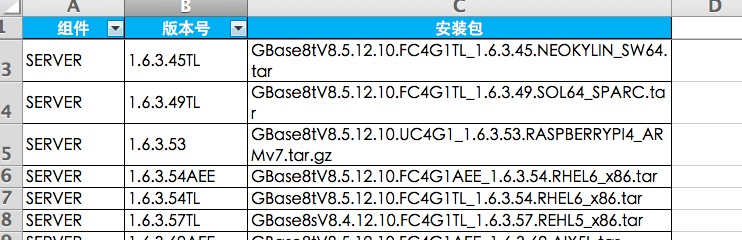 |
| 2018-05-19 09:58:26 | 你 | 就这三项内容 |
| 2018-05-19 09:58:27 | 你 | 呵呵 |
| 2018-05-19 09:58:49 | 你 | 至少要把项目信息写上啊 |
| 2018-05-19 09:58:58 | 你 | 发到哪个项目里去了 |
| 2018-05-19 09:59:04 | 我 | 他肯定找不全了 |
| 2018-05-19 09:59:46 | 你 | 我给你截的图 就是一部分 下边都是重复 这只能看出来哪个版本发出去了 发哪去了 发了多少次什么都看不出来 |
| 2018-05-19 10:00:21 | 你 | 还有个好玩的 这里边没有POC版的 |
| 2018-05-19 10:00:22 | 你 | 哈哈 |
| 2018-05-19 10:00:35 | 你 | 这个表几乎一点用都没有 |
| 2018-05-19 10:00:49 | 我 | 这个是为了应付赵总的 |
| 2018-05-19 10:01:17 | 我 | 你知道赵总要求研发找版本基线的事情吗 |
| 2018-05-19 10:01:24 | 你 | 不知道 |
| 2018-05-19 10:01:31 | 你 | 是找代码基线吗 |
| 2018-05-19 10:01:34 | 我 | 是 |
| 2018-05-19 10:01:50 | 我 | 也是优先级会上说的 |
| 2018-05-19 10:01:52 | 你 | 基线这事 我最早说需求变更的时候 就跟张道山说过 他也不听啊 |
| 2018-05-19 10:02:12 | 我 | 他根本就不懂 |
| 2018-05-19 10:02:23 | 你 | 是 |
| 2018-05-19 10:03:47 | 你 | 发了POC没记录的有20项之多！！！！！ |
| 2018-05-19 10:03:51 | 你 | 我刚才统计了 |
| 2018-05-19 10:04:00 | 你 | 我回头把基线这事跟王欣说下 |
| 2018-05-19 10:04:09 | 我 | 嗯嗯 |
| 2018-05-19 10:06:37 | 我 | 我把这事的来龙去脉和你说一下吧 |
| 2018-05-19 10:07:14 | 你 | 好 |
| 2018-05-19 10:10:38 | 我 | 周一开优先级会，有一项任务是人行的 bug 修复，人行的版本比较老，就说起来可能需要找一下基线。赵总就问现在是不是所有版本都可以找到基线，我说肯定不行，然后我就往 CC 不好用上带，赵总就要求王总和老陈要解决这个问题，要求张道山把以前发过的版本都找出来，让研发找到对应的基线 |
| 2018-05-19 10:24:56 | 你 | 呵呵 |
| 2018-05-19 10:25:52 | 我 | 这事下周一的优先级会还要给赵总汇报 |
| 2018-05-19 10:26:07 | 你 | 知道了 |
| 2018-05-19 10:26:53 | 你 | 这都是欠的帐啊 |
| 2018-05-19 10:27:38 | 我 | 对呀，去年我让研发整理，张杰不是说做不到吗 |
| 2018-05-19 10:27:59 | 你 | 嗨 |
| 2018-05-19 10:28:04 | 你 | 那群人 |
| 2018-05-19 10:28:07 | 你 | 都是shit |
| 2018-05-19 10:28:14 | 我 | 没错 |
| 2018-05-19 10:30:03 | 你 | 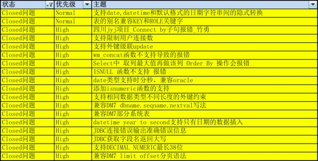 |
| 2018-05-19 10:30:11 | 你 | 总共18项 |
| 2018-05-19 10:38:29 | 我 | 嗯嗯 |
| 2018-05-19 10:38:50 | 你 | 这里边有几个都是国防的版本 都是临时改的 |
| 2018-05-19 10:38:53 | 你 | AQ的也是 |
| 2018-05-19 10:39:10 | 你 | 即使跟G7的功能一致 但完全达不到G7的质量标准 |
| 2018-05-19 10:39:19 | 你 | 现在DSD的出的啥我都不信 |
| 2018-05-19 10:39:34 | 你 | 他们的质量完全靠测试保证 我都不知道他们做不做设计 |
| 2018-05-19 10:40:02 | 我 | 他们就算做设计也跟没做一样 |
| 2018-05-19 10:41:34 | 我 | 还有一件事，你帮我整理一下 delimident 的正确的行为 |
| 2018-05-19 10:41:47 | 我 | 王胜利又耍滑了 |
| 2018-05-19 10:42:35 | 我 | 昨天不是安排他去做中航的项目吗，王总非得让他把 delimident 做完再去 |
| 2018-05-19 10:42:48 | 我 | 王胜利说有个两三天就可以做完 |
| 2018-05-19 10:43:10 | 我 | 说 delimident 没有问题，就解决测试的几个 bug 就可以了，王总就答应他了 |
| 2018-05-19 10:43:29 | 我 | 这次我打算好好整他一次 |
| 2018-05-19 10:43:42 | 你 | 你是说informix对吧 |
| 2018-05-19 10:43:48 | 你 | delimident对吗 |
| 2018-05-19 10:43:59 | 我 | informix 和国网的 |
| 2018-05-19 10:44:15 | 我 | 或者说是 oracle 的 |
| 2018-05-19 10:44:40 | 我 | 这事不着急 |
| 2018-05-19 10:44:49 | 你 | 还有一件事，你帮我整理一下 delimident 的正确的行为—-国网哪还有什么正确的啊 |
| 2018-05-19 10:45:01 | 你 | 我给你整理下informix的 你照着对不就行了 |
| 2018-05-19 10:45:15 | 你 | caseshift开关关了 |
| 2018-05-19 10:45:22 | 我 | 那 caseshift 打开是什么行为 |
| 2018-05-19 10:45:54 | 你 | 最开始不是说cf是控制informix和国网的吗 |
| 2018-05-19 10:46:03 | 你 | 最终实现的不就是这个吗 |
| 2018-05-19 10:46:04 | 你 | 对吧 |
| 2018-05-19 10:46:06 | 我 | 对 |
| 2018-05-19 10:46:19 | 你 | cf打开就是informix |
| 2018-05-19 10:46:32 | 你 | 我不记得打开是informix还是关上了 |
| 2018-05-19 10:46:36 | 你 | 这个不重要 |
| 2018-05-19 10:46:39 | 我 | 嗯嗯 |
| 2018-05-19 10:46:42 | 你 | 比如就是打开是informix |
| 2018-05-19 10:46:59 | 你 | 我把informix的测出来 打开cf就测王胜利 |
| 2018-05-19 10:47:10 | 我 | 嗯嗯 |
| 2018-05-19 10:47:11 | 你 | 有对不上的就是有问题 |
| 2018-05-19 10:47:13 | 你 | 这是其一 |
| 2018-05-19 10:47:19 | 你 | 其二就是国网的了 |
| 2018-05-19 10:47:24 | 你 | 说实话 国网我也不清楚 |
| 2018-05-19 10:47:46 | 你 | 一会李志刚过来 |
| 2018-05-19 10:47:49 | 你 | 待会再说 |
| 2018-05-19 10:47:51 | 我 | 嗯 |
| 2018-05-19 10:47:56 | 你 | 我先把informix的给你整出来 |
| 2018-05-19 10:48:03 | 我 | 好 |
| 2018-05-19 10:48:06 | 你 | 咱们一步步做啊 |
| 2018-05-19 10:48:12 | 我 | 嗯嗯，不着急 |
| 2018-05-19 10:48:57 | 你 | 这次非把王胜利整死不可 |
| 2018-05-19 10:49:05 | 我 | 没错 |
| 2018-05-19 12:35:40 | 你 | 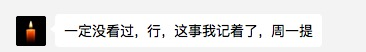 |
| 2018-05-19 12:35:59 | 你 | 这个是我跟王欣说版本号的事 说张工没看过咱们的规范 |
| 2018-05-19 12:36:12 | 你 | 说纯净版要给个分支的字母标识 |
| 2018-05-19 12:36:33 | 我 | 哦 |
| 2018-05-19 12:36:35 | 你 | 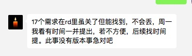 |
| 2018-05-19 12:36:49 | 你 | 这个是说17个poc的没提roadmap的事 |
| 2018-05-19 12:36:59 | 我 | 嗯嗯 |
| 2018-05-19 12:37:07 | 你 | 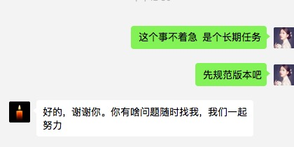 |
| 2018-05-19 12:37:40 | 我 | 挺好 |
| 2018-05-19 12:37:51 | 你 | 我今天把17个任务的事跟李志刚说了 |
| 2018-05-19 12:37:57 | 你 | 刚才我跟李志刚聊天 |
| 2018-05-19 12:38:31 | 你 | 李志刚说 周四的时候开版本规划的会 把李俊旗拉进来 赵总好像是不信任研发 |
| 2018-05-19 12:38:40 | 你 | 怕研发的把现场的需求给丢了 |
| 2018-05-19 12:38:59 | 我 | 我年初的时候就说过 |
| 2018-05-19 12:39:05 | 你 | 是 |
| 2018-05-19 12:39:22 | 我 | 赵总的策略没有变，只是战术变了 |
| 2018-05-19 12:40:02 | 我 | 所以现在对你来说是一个很好机会 |
| 2018-05-19 12:45:17 | 你 | 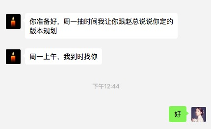 |
| 2018-05-19 12:45:43 | 我 | 哈哈，太好了 |
| 2018-05-19 12:46:00 | 你 | 你得帮我啊 |
| 2018-05-19 12:46:11 | 我 | 当然啦 |
| 2018-05-19 12:46:44 | 我 | 放心吧，我肯定帮你，咱们一起努力 |
| 2018-05-19 12:46:54 | 你 | 嗯嗯 |
| 2018-05-19 12:50:53 | 我 | 你吃饭了吗 |
| 2018-05-19 12:51:00 | 你 | 吃了 |
| 2018-05-19 12:51:14 | 我 | 嗯嗯，你几点回家 |
| 2018-05-19 12:51:31 | 你 | 6点吧 我得把版本规划弄弄 |
| 2018-05-19 12:51:50 | 我 | 哦，这么晚 |
| 2018-05-19 12:52:11 | 你 | 我怕我弄不好 |
| 2018-05-19 12:52:41 | 我 | 王欣和你说了赵总要什么吗 |
| 2018-05-19 12:52:56 | 你 | 就刚才这两句话 |
| 2018-05-19 12:52:58 | 你 | 别的没有 |
| 2018-05-19 12:53:17 | 你 | 说是我定的版本规划 |
| 2018-05-19 12:53:27 | 我 | 你们怎么谈起来版本规划的 |
| 2018-05-19 12:53:51 | 你 | 没谈 |
| 2018-05-19 12:53:58 | 你 | 他突然间就说了这么一句 |
| 2018-05-19 12:54:17 | 我 | 有点奇怪，不会是赵总让她找你的吧 |
| 2018-05-19 12:54:30 | 你 | 我不知道 |
| 2018-05-19 12:54:35 | 你 | 我给他发了好几篇 |
| 2018-05-19 12:54:40 | 我 | 按理说现在的版本规划昨天已经有一版了 |
| 2018-05-19 12:54:53 | 我 | 你发的什么 |
| 2018-05-19 12:54:55 | 你 | 说两件事 一个就是版本号 一个就是17个任务 |
| 2018-05-19 12:55:11 | 你 | 我给你截图的就是他回复我的所有话 |
| 2018-05-19 12:55:28 | 你 | 然后就是最后一个谢谢的 后来就突然来了这么一句 |
| 2018-05-19 12:55:58 | 我 | 嗯嗯，咱们得先分析一下是什么情况，规划不着急做 |
| 2018-05-19 12:56:21 | 我 | 她最后一句和谢谢之间隔了多久 |
| 2018-05-19 12:57:31 | 你 | 8分钟 |
| 2018-05-19 12:57:45 | 我 | 这么久 |
| 2018-05-19 12:57:50 | 你 | 但是我跟他说的过程 他一直没怎么回复我 |
| 2018-05-19 12:58:03 | 你 | 你说他会不会把我发的 发给赵总 |
| 2018-05-19 12:58:08 | 我 | 不排除 |
| 2018-05-19 12:58:58 | 你 | [链接] 李辉和产品行销 王欣的聊天记录 |
| 2018-05-19 12:59:10 | 你 | 你看下这是全部的 |
| 2018-05-19 12:59:28 | 你 | 前边这个两条是我和志刚的记录 |
| 2018-05-19 13:03:49 | 我 | 你原来做的需求池还有吗 |
| 2018-05-19 13:04:19 | 我 | 我有80%的把握是赵总要看你的规划 |
| 2018-05-19 13:04:34 | 你 | 以前的需求库吗 |
| 2018-05-19 13:04:40 | 我 | 对 |
| 2018-05-19 13:04:41 | 你 | 今年我就没再做了 |
| 2018-05-19 13:04:45 | 你 | 去年的有 |
| 2018-05-19 13:04:51 | 我 | 可惜了 |
| 2018-05-19 13:05:14 | 你 | 今年的做不下去了 张工搞得很乱 |
| 2018-05-19 13:05:17 | 你 | 我都对不上 |
| 2018-05-19 13:06:01 | 我 | 你看，首先赵总想要的是所有的需求，包括已经 POC 还没有发版的 |
| 2018-05-19 13:06:21 | 我 | 你今天说的这17个也是这样的 |
| 2018-05-19 13:06:45 | 你 | 这个东西 可以从rd上筛 |
| 2018-05-19 13:06:55 | 我 | 你今天筛的完吗 |
| 2018-05-19 13:07:06 | 你 | 筛的完 |
| 2018-05-19 13:07:09 | 我 | 好 |
| 2018-05-19 13:07:18 | 我 | 我说一下思路 |
| 2018-05-19 13:07:23 | 你 | 好 |
| 2018-05-19 13:07:35 | 我 | 首先我们要有一个全的需求库，这个是根本 |
| 2018-05-19 13:07:50 | 你 | 可以做 |
| 2018-05-19 13:08:08 | 我 | 第二就是从这个库里面挑出来现场紧急和重要的需求，进行版本规划 |
| 2018-05-19 13:08:40 | 你 | 可以挑出来 |
| 2018-05-19 13:08:56 | 你 | 每个对应的分支也可以有 |
| 2018-05-19 13:09:07 | 我 | 第三我觉得你就规划 N 版（国网和主干）就行，N+1版的你就说你不了解现场情况，没有沟通过 |
| 2018-05-19 13:09:27 | 你 | 这个没问题 |
| 2018-05-19 13:09:29 | 你 | 我可以做 |
| 2018-05-19 13:09:59 | 我 | 你先按照我说的这个思路做 |
| 2018-05-19 13:10:23 | 你 | 好 |
| 2018-05-19 13:12:37 | 你 | 只做需求行吗 |
| 2018-05-19 13:12:41 | 你 | 问题的不了解 |
| 2018-05-19 13:13:09 | 我 | 问题不用管 |
| 2018-05-19 13:13:15 | 你 | OK |
| 2018-05-19 14:24:20 | 你 | 数据管理事业部_需求任务跟踪列表_5月第3周_20180518.xlsx |
| 2018-05-19 14:24:26 | 你 | 累死我了 |
| 2018-05-19 14:30:22 | 我 | 歇会吧 |
| 2018-05-19 14:30:49 | 你 | 你看看 |
| 2018-05-19 14:31:52 | 我 | 包括roadmap的吗 |
| 2018-05-19 14:32:19 | 你 | 包括 |
| 2018-05-19 14:34:12 | 我 | 那是不是就有重复了，原来的问题和roadmap |
| 2018-05-19 14:34:58 | 你 | 基本没有 |
| 2018-05-19 14:35:01 | 你 | 得一个个看 |
| 2018-05-19 14:35:24 | 你 | 置成roadmap的有几中情况 |
| 2018-05-19 14:35:44 | 你 | 17年的几乎都close了 然后有的置成roadmap |
| 2018-05-19 14:35:48 | 你 | 占比不高 |
| 2018-05-19 14:35:54 | 你 | 重复的很少 |
| 2018-05-19 14:36:11 | 你 | 这就是张道山搞得 乱七八糟 |
| 2018-05-19 14:36:17 | 我 | 是 |
| 2018-05-19 14:36:24 | 你 | 我估计他自己都不知道怎么筛 |
| 2018-05-19 14:36:33 | 我 | 你最好标一下roadmap的 |
| 2018-05-19 14:36:36 | 你 | 重复的不多 问题不大 |
| 2018-05-19 14:36:52 | 我 | 昨天赵总专门问roadmap了 |
| 2018-05-19 14:37:13 | 你 | 我的意思是 现在的roadmap已经不是赵总认为的roadmap了 |
| 2018-05-19 14:37:22 | 我 | 另外你今天总结的17个包含在里面吗 |
| 2018-05-19 14:37:26 | 你 | 我这个表 待处理任务才是 |
| 2018-05-19 14:37:28 | 你 | 在 |
| 2018-05-19 14:37:36 | 你 | 都在待处理任务这个表里 |
| 2018-05-19 14:37:49 | 我 | 那你回来要和王欣和赵总说清楚 |
| 2018-05-19 14:37:54 | 你 | 你看这个表有的有POC版的版本号 这个就是应该产品化的 |
| 2018-05-19 14:38:11 | 你 | 但是张工有的设置roadmap=rm，有的没设 |
| 2018-05-19 14:38:24 | 我 | 因为他们脑子里没有你这个分类，只有原来的 |
| 2018-05-19 14:38:52 | 你 | 我觉得赵总脑子里有我的这个 没有张工的 |
| 2018-05-19 14:38:59 | 你 | 我这么跟你说吧 |
| 2018-05-19 14:39:10 | 你 | 赵总脑子里有个需求池 =rm |
| 2018-05-19 14:39:16 | 你 | rm=roadmap |
| 2018-05-19 14:39:22 | 我 | 嗯嗯 |
| 2018-05-19 14:39:40 | 你 | 什么样的任务往这个池子里丢 他自己大概知道 但是不全 |
| 2018-05-19 14:39:48 | 你 | 他脑子里只有这个池子 |
| 2018-05-19 14:40:02 | 你 | 然后张工把这个池子弄得很乱 |
| 2018-05-19 14:40:38 | 你 | 现在rd上的rm任务 不是赵总认为的需求池 比赵总认为的需求池少东西 |
| 2018-05-19 14:40:55 | 我 | 嗯嗯 |
| 2018-05-19 14:41:21 | 你 | 我标记一下吧 |
| 2018-05-19 14:41:29 | 你 | 到时候好给他解释 |
| 2018-05-19 14:41:33 | 我 | 对 |
| 2018-05-19 14:41:42 | 你 | 我发语音你能听吗 |
| 2018-05-19 14:41:47 | 你 | 我好累啊 |
| 2018-05-19 14:41:53 | 我 | 可以听 |
| 2018-05-19 14:42:02 | 我 | 你先歇会吧，不着急了 |
| 2018-05-19 14:42:21 | 你 | |
| 2018-05-19 14:42:34 | 你 | |
| 2018-05-19 14:42:43 | 你 | [电话] |
| 2018-05-19 14:43:01 | 你 | |
| 2018-05-19 14:43:27 | 我 | 嗯嗯 |
| 2018-05-19 14:43:28 | 你 | |
| 2018-05-19 14:43:41 | 你 | |
| 2018-05-19 14:44:13 | 你 | |
| 2018-05-19 14:44:22 | 你 | |
| 2018-05-19 14:44:58 | 你 | |
| 2018-05-19 14:45:10 | 你 | |
| 2018-05-19 14:45:21 | 你 | |
| 2018-05-19 14:46:21 | 你 | |
| 2018-05-19 14:46:40 | 你 | |
| 2018-05-19 14:46:56 | 你 | |
| 2018-05-19 14:47:12 | 你 | |
| 2018-05-19 14:47:24 | 你 | |
| 2018-05-19 14:47:46 | 我 | 是 |
| 2018-05-19 14:48:13 | 你 | 你觉得我说的对吗 |
| 2018-05-19 14:53:39 | 我 | 说的对 |
| 2018-05-19 14:53:59 | 我 | 不过我在想怎么体现你的价值 |
| 2018-05-19 14:55:10 | 你 | en |
| 2018-05-19 14:55:42 | 你 | roadmap 连筛选的字段都没有 |
| 2018-05-19 14:56:46 | 我 | 发布版本？ |
| 2018-05-19 14:56:57 | 你 | 不能模糊匹配 |
| 2018-05-19 14:57:24 | 你 | 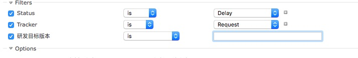 |
| 2018-05-19 14:57:30 | 你 | 精确匹配 |
| 2018-05-19 14:57:45 | 我 | 唉 |
| 2018-05-19 14:58:06 | 你 | 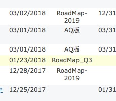 |
| 2018-05-19 14:58:14 | 你 | roadmap的写啥的都有 |
| 2018-05-19 14:58:28 | 我 | 是 |
| 2018-05-19 14:58:32 | 你 | _2019的 _Q3的 |
| 2018-05-19 14:58:46 | 你 | 这个只能是按照状态去查 |
| 2018-05-19 14:59:16 | 你 | delay、closeunormal还有部分close的 |
| 2018-05-19 14:59:21 | 你 | 必须逐个过 |
| 2018-05-19 14:59:39 | 你 | 我才不信张道山会干这事呢 |
| 2018-05-19 15:00:00 | 你 | 我先发给王欣一个 让他看看是不是她想要的 你说行不 |
| 2018-05-19 15:04:38 | 我 | 行 |
| 2018-05-19 15:04:45 | 你 | |
| 2018-05-19 15:04:55 | 你 | |
| 2018-05-19 15:04:59 | 我 | rm上不是有关联的吗 |
| 2018-05-19 15:05:26 | 我 | |
| 2018-05-19 15:05:28 | 你 | |
| 2018-05-19 15:05:56 | 我 | 嗯嗯 |
| 2018-05-19 15:06:18 | 你 | |
| 2018-05-19 15:06:46 | 你 | |
| 2018-05-19 15:07:08 | 你 | |
| 2018-05-19 15:07:18 | 你 | |
| 2018-05-19 15:08:23 | 我 | |
| 2018-05-19 15:10:34 | 你 | 好的 |
| 2018-05-19 15:10:42 | 你 | 到时候 赵总问得越细越好 |
| 2018-05-19 15:11:07 | 你 | |
| 2018-05-19 15:11:16 | 你 | |
| 2018-05-19 15:11:27 | 你 | |
| 2018-05-19 15:11:33 | 你 | |
| 2018-05-19 15:11:44 | 你 | |
| 2018-05-19 15:12:09 | 我 | 是 |
| 2018-05-19 15:15:01 | 你 | [链接] 李辉的聊天记录 |
| 2018-05-19 15:17:36 | 我 | 这个群聊还有谁 |
| 2018-05-19 15:18:47 | 你 | 就我俩 |
| 2018-05-19 15:18:49 | 你 | 不是群 |
| 2018-05-19 15:19:02 | 我 | 好 |
| 2018-05-19 15:19:26 | 我 | 你先做版本规划吧 |
| 2018-05-19 15:19:35 | 你 | 版本规划有两个大原则： 1. 国网版本6个oracle兼容性合并到1.6.7，这个版本撑3个月没问题。 2. 国网版本的delimident参数一定要在G8解决，这样1.6.8的时候合并delimident及G7的其他兼容性，这个版本Oracle兼容就是全的了，至少能解决现场80%的问题。而且这个版本会非常稳定，能够达到上线标准。另外，清大科越、中航工业都可以发这个版，这个版撑到年底没问题。 |
| 2018-05-19 15:19:42 | 你 | 版本规划其实非常简单 |
| 2018-05-19 15:20:10 | 我 | 好 |
| 2018-05-19 15:20:28 | 我 | 其他的新需求呢？比如pivot |
| 2018-05-19 15:20:46 | 你 | 其他的能加就加 不能加就推 看研发的评估 |
| 2018-05-19 15:20:57 | 我 | 不好 |
| 2018-05-19 15:20:58 | 你 | 只要我说的这两点实现 今年就没问题 |
| 2018-05-19 15:21:22 | 你 | Oracle兼容 目前80%的工作都已经做了 再出新的 就是边角 |
| 2018-05-19 15:21:28 | 我 | 你应该按照现场的要求先规划 |
| 2018-05-19 15:21:42 | 你 | 我说的这个就是现场的要求 |
| 2018-05-19 15:21:44 | 我 | 赵总肯定先考虑项目再考虑研发 |
| 2018-05-19 15:21:59 | 你 | 我的意思是下半年现场基本不会有影响落单的需求了 |
| 2018-05-19 15:22:08 | 你 | 尤其是国网 |
| 2018-05-19 15:22:19 | 我 | 我的意思是你要表现出来你更重视项目而不是依赖研发 |
| 2018-05-19 15:22:27 | 你 | 我说的这两件事 比项目重要 |
| 2018-05-19 15:22:44 | 你 | 这两件是保证赵总说的大战略的 最基本的方法 |
| 2018-05-19 15:22:45 | 我 | 赵总不信任研发，你要和研发有区别 |
| 2018-05-19 15:22:55 | 你 | 哦哦 |
| 2018-05-19 15:22:57 | 你 | 明白了 |
| 2018-05-19 15:23:01 | 你 | 刚才没明白 |
| 2018-05-19 15:23:26 | 你 | 这两件事目前看是最重要的 如果有更高优先级的任务进来 就先做更高优先级的 |
| 2018-05-19 15:23:33 | 我 | 嗯嗯 |
| 2018-05-19 15:24:28 | 我 | 按照你的原则，中航的是不是就不在你的范围里 |
| 2018-05-19 15:24:48 | 你 | 置于一些问题或者内测bug就看人力 酌情合并即可 |
| 2018-05-19 15:24:58 | 你 | 是 |
| 2018-05-19 15:25:12 | 你 | 我说的是最重要的两件事 |
| 2018-05-19 15:25:25 | 你 | 如果赵总认为中航的比这个重要 就做中航 |
| 2018-05-19 15:25:29 | 你 | 其实不冲突 |
| 2018-05-19 15:25:30 | 我 | 不好，赵总会误解你 |
| 2018-05-19 15:25:42 | 我 | 认为你没有抓住重点 |
| 2018-05-19 15:25:46 | 你 | 中航的DSD的做 |
| 2018-05-19 15:26:06 | 你 | 中航的要是合并到主干去 这个版本的稳定性就堪忧了 |
| 2018-05-19 15:26:16 | 你 | 中航只适合做POC |
| 2018-05-19 15:26:33 | 我 | 现在中航就是在主干上做，这个是赵总定的 |
| 2018-05-19 15:26:37 | 你 | 在国网的基础上 出POC |
| 2018-05-19 15:26:54 | 你 | 但是delimident解决不了 主干做完 中航也用不了 |
| 2018-05-19 15:27:40 | 我 | 我是说你不要太坚持工作的原则，要多考虑赵总的感受 |
| 2018-05-19 15:27:45 | 你 | 如果中航在1.6.7上做 delimident又不合并 这个版发到现场就会有投诉 |
| 2018-05-19 15:28:09 | 你 | 我是怕赵总拿到的信息不全 |
| 2018-05-19 15:28:13 | 你 | 做错决策 |
| 2018-05-19 15:28:51 | 你 | 你说的对 |
| 2018-05-19 15:29:04 | 我 | |
| 2018-05-19 15:29:14 | 你 | 如果赵总坚持从主干上出 那delimident合不合？ |
| 2018-05-19 15:29:50 | 我 | 这些是细节，而且现在不合是王总说出来的，和你没有关系 |
| 2018-05-19 15:30:33 | 我 | 赵总是想通过需求去压研发 |
| 2018-05-19 15:30:46 | 你 | 哦哦 |
| 2018-05-19 15:30:55 | 我 | 你就需要给赵总创造这样的条件 |
| 2018-05-19 15:31:11 | 你 | 这点我一直没想太明白 |
| 2018-05-19 15:31:14 | 我 | 至于版本是不是能成功关系不大 |
| 2018-05-19 15:31:35 | 我 | 嗯嗯，你还是缺政治敏感性 |
| 2018-05-19 15:32:07 | 你 | 哈哈 |
| 2018-05-19 15:32:24 | 你 | 这点其实我一直没理解，所以一直做的不对 |
| 2018-05-19 15:32:30 | 我 | 是 |
| 2018-05-19 15:32:43 | 我 | 光想着把事情做好了 |
| 2018-05-19 15:32:54 | 我 | 李杰也有这个问题 |
| 2018-05-19 15:33:34 | 我 | 还有一点你要考虑，就是赵总对国网的态度 |
| 2018-05-19 16:06:48 | 你 | 刚才我给王欣打电话了 王欣说 他跟赵总说的 周一让我跟赵总说版本号的事 |
| 2018-05-19 16:06:52 | 你 | 不是版本计划 |
| 2018-05-19 16:07:09 | 我 | 哈哈 |
| 2018-05-19 16:07:23 | 我 | 那就不用这么辛苦了 |
| 2018-05-19 16:07:41 | 你 | 他说汇报的时候 3个问题： 1、为什么要规范版本号 2、已有的规范是什么样的 3、现在AQ那边的版本的版本号有什么问题 |
| 2018-05-19 16:07:47 | 我 | 不过我觉得你刚才做的这个表格也很有用 |
| 2018-05-19 16:07:56 | 我 | 嗯嗯 |
| 2018-05-19 16:08:07 | 你 | 这个表格证明了 张道山做roadmap不及时 |
| 2018-05-19 16:08:13 | 我 | 这些你都应该能回答 |
| 2018-05-19 16:08:14 | 你 | 这个是王欣比较关注的 |
| 2018-05-19 16:08:17 | 我 | 是 |
| 2018-05-19 16:08:24 | 你 | 版本号的 我没问题 |
| 2018-05-19 16:08:30 | 你 | 这个我都非常熟 |
| 2018-05-19 16:08:38 | 我 | 嗯嗯 |
| 2018-05-19 16:09:20 | 你 | 王欣说他刚才我我说的都跟赵总说了 赵总约的周一上午去给他讲 |
| 2018-05-19 16:09:36 | 我 | 好 |
| 2018-05-19 16:09:58 | 你 | 我还跟王欣说了一件事 |
| 2018-05-19 16:10:01 | 我 | 你还可以谈一下配置管理 |
| 2018-05-19 16:10:08 | 你 | 我说DSD的 不加班 |
| 2018-05-19 16:10:17 | 你 | 嗯嗯 知道了 |
| 2018-05-19 16:11:03 | 我 | 版本号本来就是配置管理的一部分，本来咱们是想做了版本号以后做配置管理的 |
| 2018-05-19 16:11:18 | 你 | 我知道 |
| 2018-05-19 16:11:44 | 你 | 只有版本号 没有配管 和没有版本号 就是五十步笑百步的事 |
| 2018-05-19 16:11:47 | 你 | 对吧 |
| 2018-05-19 16:11:52 | 我 | 不过配置管理这事点到为止，要是赵总有兴趣就说，否则就不要说了 |
| 2018-05-19 16:12:01 | 我 | 是 |
| 2018-05-19 16:12:22 | 你 | |
| 2018-05-19 16:12:42 | 你 | |
| 2018-05-19 16:12:46 | 我 | 配管最重要的部分就是需求、版本、代码要联系对应上 |
| 2018-05-19 16:12:54 | 你 | |
| 2018-05-19 16:13:13 | 你 | |
| 2018-05-19 16:13:23 | 你 | |
| 2018-05-19 16:13:42 | 我 | |
| 2018-05-19 16:14:03 | 你 | |
| 2018-05-19 16:14:20 | 你 | |
| 2018-05-19 16:14:23 | 我 | 刚才突然想咳嗽[呲牙] |
| 2018-05-19 16:14:31 | 我 | 没事 |
| 2018-05-19 16:14:38 | 你 | |
| 2018-05-19 16:14:44 | 我 | [动画表情] |
| 2018-05-19 16:15:04 | 你 | |
| 2018-05-19 16:15:53 | 我 | 比如说分支信息就可以从版本号里看出来 |
| 2018-05-19 16:16:15 | 你 | |
| 2018-05-19 16:16:28 | 我 | 未来各个分支从版本号一下就能看出来，相应的功能也就差不多了 |
| 2018-05-19 16:16:46 | 你 | |
| 2018-05-19 16:17:00 | 我 | 对 |
| 2018-05-19 16:17:03 | 你 | |
| 2018-05-19 16:17:15 | 我 | 嗯嗯 |
| 2018-05-19 16:17:52 | 我 | 这两天你确实很luck |
| 2018-05-19 16:18:24 | 你 | 哈哈 |
| 2018-05-19 16:19:04 | 我 | 版本号这事肯定是赵总安排的，而且是单独听你的汇报，说明赵总对这些也不熟悉 |
| 2018-05-19 16:22:06 | 你 | 是 |
| 2018-05-19 16:22:29 | 你 | 赵总早就提到版本号的事 是谁说的吗 |
| 2018-05-19 16:22:32 | 你 | 谁跟他说的 |
| 2018-05-19 16:22:43 | 我 | 不知道 |
| 2018-05-19 16:22:46 | 你 | 基线又是谁跟他说的 |
| 2018-05-19 16:23:04 | 你 | 刚才王欣说 这群人都不错 高杰也不错 |
| 2018-05-19 16:23:05 | 我 | 基线应该是老陈说的 |
| 2018-05-19 16:23:15 | 你 | 我是怕高杰跟王欣说什么 |
| 2018-05-19 16:23:40 | 我 | 王欣是和你和稀泥 |
| 2018-05-19 16:24:19 | 我 | 另外你有点锋芒毕露，棱角分明，估计是她怕你吃亏 |
| 2018-05-19 16:24:20 | 你 | 哦 |
| 2018-05-19 16:24:28 | 你 | 哦 |
| 2018-05-19 16:24:30 | 你 | 好吧 |
| 2018-05-19 16:25:39 | 你 | 有的时候我觉得我可笨了 |
| 2018-05-19 16:25:53 | 我 | 啊，怎么说 |
| 2018-05-19 16:26:27 | 你 | 就是有些事看不明白 |
| 2018-05-19 16:26:30 | 你 | 糊里糊涂的 |
| 2018-05-19 16:26:54 | 我 | 哦 |
| 2018-05-19 16:27:07 | 我 | 你已经比以前强很多了 |
| 2018-05-19 16:50:33 | 我 | 你几点下班 |
| 2018-05-19 17:20:29 | 你 | 准备下了 |
| 2018-05-19 17:21:14 | 我 | 好 |
{kind=link}
{kind=link}
{kind=link}
{kind=link}
{kind=link}
{kind=link}
{kind=link}
{kind=link}
{kind=link}
2018-05-21¶
| 2018-05-21 09:05:39 | 你 | 说的全是废话 |
| 2018-05-21 09:48:34 | 你 | 王欣开会去了 |
| 2018-05-21 09:48:48 | 你 | 他说等她也行 我直接去找赵总也行 |
| 2018-05-21 09:48:52 | 你 | 你说我怎么版 |
| 2018-05-21 09:48:55 | 你 | 办 |
| 2018-05-21 09:49:04 | 我 | 那你就直接去找赵总吧 |
| 2018-05-21 09:49:14 | 我 | 10点王总这边还有会 |
| 2018-05-21 09:49:19 | 我 | 没准到几点了 |
| 2018-05-21 09:49:22 | 你 | 好 |
| 2018-05-21 10:04:39 | 我 | 怎么样 |
| 2018-05-21 10:07:50 | 你 | 赵总超级冷静 |
| 2018-05-21 10:07:55 | 你 | 太吓人了 |
| 2018-05-21 10:13:18 | 我 | 你说反了 |
| 2018-05-21 10:13:28 | 我 | 我不想做G8 |
| 2018-05-21 10:13:29 | 你 | 啊 |
| 2018-05-21 10:13:32 | 你 | 哦 |
| 2018-05-21 10:13:40 | 我 | 阿娇cover不住 |
| 2018-05-21 10:13:46 | 我 | 已经延期了 |
| 2018-05-21 10:16:52 | 你 | 知道了 |
| 2018-05-21 10:22:01 | 我 | 又跑偏了 |
| 2018-05-21 11:16:33 | 我 | 你今天差点害惨了我 |
| 2018-05-21 11:35:09 | 你 | 咋了 |
| 2018-05-21 11:35:10 | 你 | 我可不想害惨你 |
| 2018-05-21 11:35:44 | 我 | 阿娇那个她现在已经做不下去了，我才想让她去做合并 |
| 2018-05-21 11:36:09 | 我 | 如果她不去做合并了，她可能就没法按期完成 |
| 2018-05-21 11:36:47 | 我 | 王总说让阿娇继续做，我当时脑袋就大了[呲牙] |
| 2018-05-21 11:51:25 | 我 | 你几点走？ |
| 2018-05-21 11:51:46 | 你 | 我上来拿下水杯 |
| 2018-05-21 11:52:03 | 你 | 王总说开我车 |
| 2018-05-21 11:52:13 | 我 | 嗯嗯 |
| 2018-05-21 11:52:17 | 你 | 你在办公室吗 |
| 2018-05-21 11:52:30 | 我 | 不在，出来吃饭了 |
| 2018-05-21 12:26:11 | 我 | 到了吗 |
| 2018-05-21 12:49:09 | 你 | 上车了 |
| 2018-05-21 12:49:24 | 我 | 嗯嗯，累吗 |
| 2018-05-21 12:49:44 | 你 | 不累 |
| 2018-05-21 12:49:52 | 你 | 王总跟我吐槽呢 |
| 2018-05-21 12:50:01 | 我 | 你俩坐一起吗 |
| 2018-05-21 12:50:04 | 你 | 我俩不是一个车厢，现在分开了 |
| 2018-05-21 12:50:17 | 我 | 嗯嗯，吐槽啥 |
| 2018-05-21 12:50:30 | 你 | 就说合并后浪费了很多人力 |
| 2018-05-21 12:50:45 | 你 | 说武总要开始管了 |
| 2018-05-21 12:50:57 | 你 | 说武总说要重组8t |
| 2018-05-21 12:51:25 | 我 | 没说要怎么重组吗 |
| 2018-05-21 12:51:51 | 你 | 没说 |
| 2018-05-21 12:52:06 | 你 | 刚开始聊薪资的事 |
| 2018-05-21 12:52:20 | 你 | 说好好干会涨的 |
| 2018-05-21 12:52:29 | 你 | 聊旭明 |
| 2018-05-21 12:52:47 | 你 | 然后聊部门，刚说到重组就上车，分开了 |
| 2018-05-21 12:53:01 | 你 | 不知道怎么重组 |
| 2018-05-21 12:53:10 | 我 | 嗯嗯，说说早上你和赵总吧 |
| 2018-05-21 12:53:16 | 你 | 嗯嗯 |
| 2018-05-21 12:53:38 | 你 | 没啥，去了就直接说 |
| 2018-05-21 12:53:51 | 你 | 说以前的逐个递增的有问题 |
| 2018-05-21 12:53:58 | 你 | 改成了现在这样 |
| 2018-05-21 12:54:07 | 你 | 就那几个要点 |
| 2018-05-21 12:54:36 | 你 | 赵总说把原来1.6.4的1换成GBase8s v8.8 |
| 2018-05-21 12:54:55 | 你 | 然后说poc版的加上build号 |
| 2018-05-21 12:55:06 | 我 | 嗯 |
| 2018-05-21 12:55:17 | 你 | 然后别的都按照现有的都行 |
| 2018-05-21 12:55:48 | 你 | 后来就说让我跟王欣和张道山说声，这这个规范同步给l2 |
| 2018-05-21 12:55:59 | 你 | 不过就简单的提了一下张道山 |
| 2018-05-21 12:56:27 | 你 | 我下来去找王欣同步信息的时候，欣姐说赵总让她去跟张道山说 |
| 2018-05-21 12:56:47 | 你 | 我还说现在版本计划出来的太晚了，赵总说是 |
| 2018-05-21 12:57:03 | 你 | 我俩从头到尾就没怎么说话 |
| 2018-05-21 12:57:25 | 你 | 就是工作汇报 |
| 2018-05-21 12:57:29 | 我 | 嗯嗯 |
| 2018-05-21 12:58:35 | 你 | 别的就没有了亲 |
| 2018-05-21 12:58:50 | 我 | 嗯，看不出赵总的想法 |
| 2018-05-21 12:58:51 | 你 | 一句废话都没有 |
| 2018-05-21 12:59:04 | 你 | 看不出来 |
| 2018-05-21 12:59:20 | 我 | 不过让你自己独立去汇报就已经非常不错了 |
| 2018-05-21 12:59:25 | 你 | 王总也跟我吐槽张道山了 |
| 2018-05-21 12:59:37 | 我 | 说啥了 |
| 2018-05-21 12:59:42 | 你 | 嗯嗯，不能太着急了，慢慢来 |
| 2018-05-21 12:59:49 | 你 | 说他不知道的瞎说 |
| 2018-05-21 13:00:05 | 你 | 本来8t支持的，他说不支持 |
| 2018-05-21 13:00:22 | 我 | 哈哈，老张这毛病大家都知道了 |
| 2018-05-21 13:00:30 | 你 | 还没吐槽完就分开了 |
| 2018-05-21 13:00:45 | 我 | 嗯嗯 |
| 2018-05-21 13:00:55 | 你 | 就说他净瞎说 |
| 2018-05-21 13:01:41 | 你 | 我跟王总说他跟晓亮说to-date性能差的事要让南瑞改用informix的 |
| 2018-05-21 13:01:53 | 你 | 王总说他有问题 |
| 2018-05-21 13:02:01 | 我 | 哈哈 |
| 2018-05-21 13:02:28 | 你 | 武总这个重组的事，有点问题啊 |
| 2018-05-21 13:02:39 | 你 | 现在王总肯定是武总派 |
| 2018-05-21 13:02:54 | 你 | 否则就不会总盯着国网了 |
| 2018-05-21 13:02:58 | 我 | 是 |
| 2018-05-21 13:03:18 | 你 | 赵总处境不妙，就看武总的胸怀了 |
| 2018-05-21 13:03:27 | 你 | 再说吧 |
| 2018-05-21 13:03:54 | 你 | 对了，我理解你周六说我不知道赵总关注点的事了 |
| 2018-05-21 13:03:57 | 我 | 武总肯定是想从咱们这边抽人给8a |
| 2018-05-21 13:04:03 | 我 | 你说说 |
| 2018-05-21 13:04:21 | 你 | 再给8a那就没人做8t了 |
| 2018-05-21 13:04:30 | 你 | 这个挺长的 |
| 2018-05-21 13:04:34 | 你 | 回头我跟你说 |
| 2018-05-21 13:04:36 | 我 | 好 |
| 2018-05-21 13:04:38 | 你 | 我先眯一会 |
| 2018-05-21 13:04:42 | 你 | 你开会吧 |
| 2018-05-21 13:04:44 | 我 | 嗯嗯 |
| 2018-05-21 13:05:01 | 你 | 这个会应该也很精彩 |
| 2018-05-21 13:05:14 | 我 | 😁 |
| 2018-05-21 14:08:26 | 你 | 开完了吗 |
| 2018-05-21 14:08:45 | 你 | 有事吗 |
| 2018-05-21 14:08:47 | 我 | 还没有，赵总接待客户去了 |
| 2018-05-21 14:08:52 | 我 | 没啥事 |
| 2018-05-21 14:09:04 | 你 | 哦哦，有啥有结论的事吗 |
| 2018-05-21 14:09:07 | 我 | 就是赵总说了一下版本号的事情 |
| 2018-05-21 14:09:25 | 我 | 版本号要求按照咱们原来的方法做 |
| 2018-05-21 14:09:26 | 你 | 赵总没把我卖了吧 |
| 2018-05-21 14:09:31 | 你 | 嗯嗯 |
| 2018-05-21 14:09:45 | 我 | 赵总说了上午和你一起讨论的 |
| 2018-05-21 14:09:53 | 你 | 额～～～～ |
| 2018-05-21 14:09:59 | 你 | 把我卖了耶 |
| 2018-05-21 14:10:15 | 我 | 说的很随意，没有特意强调 |
| 2018-05-21 14:10:17 | 你 | 这可如何是好 |
| 2018-05-21 14:10:26 | 你 | 张道山呢 |
| 2018-05-21 14:10:29 | 我 | 版本号让王欣盯着 |
| 2018-05-21 14:10:34 | 你 | 额额 |
| 2018-05-21 14:10:37 | 我 | 张道山没啥反应 |
| 2018-05-21 14:10:42 | 我 | 我觉得是好事 |
| 2018-05-21 14:10:50 | 你 | 啥好事 |
| 2018-05-21 14:10:59 | 我 | 这是赵总给你背书了 |
| 2018-05-21 14:11:19 | 你 | 额 |
| 2018-05-21 14:11:23 | 我 | 然后让王欣具体做，你不用得罪张道山 |
| 2018-05-21 14:11:28 | 你 | 嗯嗯 |
| 2018-05-21 14:11:33 | 你 | 这样最好 |
| 2018-05-21 14:11:48 | 我 | 这事可以看成赵总直接安排的，你只是干活 |
| 2018-05-21 14:11:57 | 你 | 嗯嗯 |
| 2018-05-21 14:12:08 | 你 | 其实也是 |
| 2018-05-21 14:12:09 | 我 | 实际上你是赵总的内线 |
| 2018-05-21 14:12:13 | 你 | 嗯 |
| 2018-05-21 14:12:22 | 我 | 王欣是你的联络人[呲牙] |
| 2018-05-21 14:12:25 | 你 | 哈哈 |
| 2018-05-21 14:12:33 | 你 | 我的上线 |
| 2018-05-21 14:12:38 | 我 | [动画表情] |
| 2018-05-21 14:13:08 | 你 | 好的，版本计划的事，定了吗 |
| 2018-05-21 14:13:29 | 我 | 基本上定了，就是中午讨论的结果 |
| 2018-05-21 14:13:51 | 你 | 好的 |
| 2018-05-21 14:14:11 | 你 | 中航的事，你也不用参和了 |
| 2018-05-21 14:14:17 | 你 | 都丢给黄 |
| 2018-05-21 14:14:20 | 我 | 是 |
| 2018-05-21 14:32:12 | 我 | 开完了，你们到了吗 |
| 2018-05-21 14:32:26 | 你 | 没呢 |
| 2018-05-21 14:32:32 | 你 | 在路上 |
| 2018-05-21 14:32:38 | 你 | 打的车 |
| 2018-05-21 14:32:41 | 你 | 我好困啊 |
| 2018-05-21 14:32:51 | 你 | 中午不休息，下午就废了 |
| 2018-05-21 14:32:58 | 我 | 先睡会吧 |
| 2018-05-21 14:57:11 | 我 | 我来参加L2的会来[呲牙] |
| 2018-05-21 15:00:09 | 我 | 17个已经closed的POC版的是你提供的吗 |
| 2018-05-21 15:57:20 | 你 | 是 |
| 2018-05-21 15:57:27 | 你 | 咋了 |
| 2018-05-21 15:57:44 | 我 | 没事，今天李志刚说这个是他整理的 |
| 2018-05-21 15:57:57 | 你 | 我让他这么说的 |
| 2018-05-21 15:58:03 | 我 | 嗯嗯 |
| 2018-05-21 16:19:26 | 你 | 怎么说的 |
| 2018-05-21 16:19:35 | 你 | 张道山怎么说 |
| 2018-05-21 16:20:13 | 我 | 张道山没说啥，我觉得他都没有搞明白 |
| 2018-05-21 16:20:40 | 我 | 最后好像定的是让张道山把这些都放入 RoadMap |
| 2018-05-21 16:26:50 | 我 | 1､研发人员按产品模块分组方案。–陈文亭 2､版本定义要有规范，8t发版计划。–张道山 3､补充包括工具、中间件、驱动版本号的规划。–王洪越、陈文亭。 4､8t产品文档规划。–张道山。 5､一线问8t是保留老bts还是用8a的 bts?用8a的全文（8a研发负责人史大义），研发评估研发计划。–吕迅 6､G4､G5､G6版 利用TPCC跑性能，查找新版本性能慢原因。–刘雪风、李志刚。 7､#771,现场测试仍有问题，研发跟踪，测试在备节点、主节点跑性能，定位问题解决问题，目标 500ms.–王雪松，5月23日前。 8､将所有关闭问题需求加入roadmap，或说明不加理由。目前 29个需补充。–张道山，5月 22日。 |
| 2018-05-21 17:10:08 | 你 | 回来了 |
| 2018-05-21 17:11:52 | 我 | 嗯嗯，怎么样 |
| 2018-05-21 17:12:06 | 你 | 约的人不对 |
| 2018-05-21 17:12:23 | 你 | 还要再谈 |
| 2018-05-21 17:12:26 | 我 | 啊 |
| 2018-05-21 17:12:35 | 我 | 白跑一趟 |
| 2018-05-21 17:12:51 | 你 | 差不多吧 |
| 2018-05-21 17:12:57 | 你 | 这个销售不行 |
| 2018-05-21 17:13:12 | 你 | 约的工程部的人 |
| 2018-05-21 17:13:21 | 你 | 应该约研发测试的 |
| 2018-05-21 17:13:30 | 我 | 唉，太晕了 |
| 2018-05-21 17:13:31 | 你 | 这个事还有点棘手呢 |
| 2018-05-21 17:13:36 | 我 | 咋了 |
| 2018-05-21 17:14:23 | 你 | 一到了霍增辉跟我一说，我就觉得约错人了，约的既不是排版的也不是干活的 |
| 2018-05-21 17:14:45 | 你 | 不过最后工程部也说，研发的改的话，他们没意见 |
| 2018-05-21 17:14:53 | 你 | 我跟你说下棘手的事 |
| 2018-05-21 17:14:58 | 我 | 嗯嗯 |
| 2018-05-21 17:15:18 | 你 | 铜川是7.20用户验收 |
| 2018-05-21 17:15:46 | 你 | 但是从工程部的口风看，应用改的话工作量不小 |
| 2018-05-21 17:16:00 | 你 | 我怕赶不上7.20的deadline |
| 2018-05-21 17:16:20 | 你 | 也就是不管数据库改还是应用改，7.20都有风险 |
| 2018-05-21 17:16:44 | 你 | 数据库改的话，张杰评估了吗 |
| 2018-05-21 17:16:46 | 我 | 还有两个月 |
| 2018-05-21 17:17:08 | 我 | 评估了，如果只是省略中间这个，最多两周可以送测 |
| 2018-05-21 17:17:20 | 我 | 省略第一个这个没有评估 |
| 2018-05-21 17:17:23 | 你 | 省略中间的？ |
| 2018-05-21 17:17:39 | 我 | 是A.B.C这事吗 |
| 2018-05-21 17:17:43 | 你 | 这个到底能省略哪个得分析业务我估计 |
| 2018-05-21 17:17:45 | 你 | 是 |
| 2018-05-21 17:17:49 | 你 | 三段式的 |
| 2018-05-21 17:17:59 | 我 | 是，你不是说 DM 省略了第一个吗 |
| 2018-05-21 17:18:01 | 你 | 我现在也不确定 |
| 2018-05-21 17:18:12 | 你 | Dm是省略第一个了 |
| 2018-05-21 17:18:27 | 我 | 所以稳妥的办法就是省略第一个 |
| 2018-05-21 17:18:38 | 你 | 但是我不知道迁移的时候，到底怎么个对应关系迁的 |
| 2018-05-21 17:18:40 | 我 | 不过需要评估一个，省略第二个比较简单 |
| 2018-05-21 17:19:16 | 你 | 我回头想想，还需要跟霍增辉了解下迁移策略 |
| 2018-05-21 17:19:23 | 我 | 嗯嗯 |
| 2018-05-21 17:19:27 | 你 | 我是怕技术的这些人都说不清楚 |
| 2018-05-21 17:19:40 | 我 | 是 |
| 2018-05-21 17:19:56 | 你 | Dm抹的肯定是第一个 |
| 2018-05-21 17:20:11 | 你 | 他们抹的是数据库 |
| 2018-05-21 17:20:35 | 我 | 理论上，我们抹掉第一个，和 DM 保持一致是最安全的，但是不知道技术支持是怎么迁移的 |
| 2018-05-21 17:20:46 | 你 | 对啊 |
| 2018-05-21 17:20:50 | 我 | 如果他们迁移的方法和 DM 一致就没有问题，否则就会有问题 |
| 2018-05-21 17:20:55 | 你 | 我就说，不知道迁移策略 |
| 2018-05-21 17:21:14 | 你 | 抹掉第一个你们能做吗？ |
| 2018-05-21 17:21:18 | 你 | 多长时间 |
| 2018-05-21 17:21:32 | 我 | 我去问问张杰 |
| 2018-05-21 17:21:42 | 你 | 关键他有表名里带点的 |
| 2018-05-21 17:21:57 | 你 | 表名就叫end.ems |
| 2018-05-21 17:22:03 | 你 | 真是变态 |
| 2018-05-21 17:22:23 | 我 | 是 |
| 2018-05-21 17:23:12 | 我 | 问了，一样，两周 |
| 2018-05-21 17:23:20 | 你 | 好的 |
| 2018-05-21 17:23:25 | 你 | 那时间还可控 |
| 2018-05-21 17:23:53 | 你 | 不行就直接上poc版呗 |
| 2018-05-21 17:24:05 | 你 | 今天王总跟我说薪资问题了 |
| 2018-05-21 17:24:14 | 你 | 说今年不涨了 |
| 2018-05-21 17:24:16 | 我 | 哦 |
| 2018-05-21 17:24:27 | 你 | 他说一定会长的 |
| 2018-05-21 17:24:41 | 你 | 我也敷衍了几句 |
| 2018-05-21 17:24:56 | 我 | 那就是明年涨？ |
| 2018-05-21 17:25:07 | 你 | 我估计他随便说的 |
| 2018-05-21 17:25:11 | 我 | 关键是他说了不算 |
| 2018-05-21 17:25:15 | 我 | 对 |
| 2018-05-21 17:25:55 | 你 | 是，他说本来是有调薪名额的时候，他给我的超了25百分之 |
| 2018-05-21 17:26:05 | 你 | 具体多少他没说 |
| 2018-05-21 17:26:15 | 你 | 我也没问，反正也不算数了 |
| 2018-05-21 17:26:20 | 我 | 是 |
| 2018-05-21 17:27:40 | 我 | 你是几点的火车 |
| 2018-05-21 17:27:49 | 你 | 我还没买票呢 |
| 2018-05-21 17:28:13 | 我 | 你先看看票吧 |
| 2018-05-21 17:28:31 | 你 | 我看了，票还有 |
| 2018-05-21 17:29:06 | 我 | 嗯嗯 |
| 2018-05-21 17:32:23 | 我 | 我先开会 |
| 2018-05-21 18:14:38 | 我 | 上车了吗 |
| 2018-05-21 18:21:53 | 你 | 刚上车 |
| 2018-05-21 18:22:12 | 我 | 好的 |
| 2018-05-21 18:26:24 | 你 | 开完会了吗 |
| 2018-05-21 18:26:33 | 我 | 开完了 |
| 2018-05-21 18:26:47 | 你 | 我中午匆匆忙忙的吃了一口，现在有点饿了 |
| 2018-05-21 18:26:58 | 你 | 刚才吃了一块巧克力 |
| 2018-05-21 18:27:10 | 我 | 嗯嗯，折腾一天 |
| 2018-05-21 18:27:14 | 我 | 你几点下车 |
| 2018-05-21 18:27:19 | 你 | 今天沟通还是挺不错的，我发现我沟通能力就是挺好的 |
| 2018-05-21 18:27:30 | 你 | 七点多 |
| 2018-05-21 18:27:31 | 我 | 对呀 |
| 2018-05-21 18:27:39 | 你 | 7:09 |
| 2018-05-21 18:27:49 | 我 | 嗯嗯，有点晚 |
| 2018-05-21 18:28:16 | 你 | 我们回来的时候跟周学海（销售）说，时间可能有风险 |
| 2018-05-21 18:28:48 | 你 | 让他通知牟魏，结果人家给牟魏打了电话说不清楚 |
| 2018-05-21 18:28:58 | 你 | 然后让我跟牟魏说的 |
| 2018-05-21 18:29:01 | 你 | 呵呵 |
| 2018-05-21 18:29:33 | 你 | 这个销售没有马瑞宇会精明 |
| 2018-05-21 18:29:41 | 我 | 唉，现在销售怎么都这样了 |
| 2018-05-21 18:29:56 | 你 | 是呢，连说个事都不知道说啥 |
| 2018-05-21 18:30:16 | 你 | 而且人家工程部已经说了，他们说了不算，还要约这种人 |
| 2018-05-21 18:30:48 | 你 | 还说什么先跟下边人说清楚，这种事根本就不用管谁做 |
| 2018-05-21 18:31:03 | 你 | 只要从上面把事压下去就ok了 |
| 2018-05-21 18:31:13 | 我 | 我觉得你特别适合做产总 |
| 2018-05-21 18:31:27 | 我 | 或者是大项目经理 |
| 2018-05-21 18:31:51 | 我 | 就是那种从前管到后的 |
| 2018-05-21 18:31:52 | 你 | 我想了，要是张道山一直跟我闹，我就直接往前做 |
| 2018-05-21 18:31:58 | 你 | 打不了做销售呗 |
| 2018-05-21 18:32:05 | 我 | 哈哈 |
| 2018-05-21 18:32:48 | 你 | 我跟王总说了，以后这样跟用户沟通的事，推技术和销售推不动，我就跟他去交流 |
| 2018-05-21 18:33:03 | 你 | 大不了我替销售的卖 |
| 2018-05-21 18:33:13 | 你 | 哪有那么难的事 |
| 2018-05-21 18:33:22 | 你 | 我跟你说，销售的更糊涂 |
| 2018-05-21 18:33:47 | 你 | 啥啥也说不清楚，那种负责人的销售早就不是这个级别了 |
| 2018-05-21 18:34:16 | 我 | 是 |
| 2018-05-21 18:34:42 | 你 | 我要是真不走了，我就得付出更多，把目标放更大了 |
| 2018-05-21 18:35:02 | 你 | 那样也不枉费我没走一场 |
| 2018-05-21 18:35:17 | 我 | 我觉得你没问题 |
| 2018-05-21 18:35:33 | 你 | 我要把我能想到的事都捋顺了， |
| 2018-05-21 18:35:52 | 你 | 不能眼光总是盯着自己那一亩三分地 |
| 2018-05-21 18:36:02 | 我 | 没错 |
| 2018-05-21 18:36:12 | 你 | 我必须把自己放在产总以上的级别了 |
| 2018-05-21 18:36:20 | 你 | 而且我最近要加班 |
| 2018-05-21 18:36:38 | 你 | 我必须把技术，研发，甚至销售全部捋顺不可 |
| 2018-05-21 18:37:20 | 我 | 你要是把这个捋顺吧，那你基本上就可以代替赵总现在做的很多工作了 |
| 2018-05-21 18:37:37 | 你 | 嗯嗯，我先捋捋 |
| 2018-05-21 18:37:46 | 我 | 你之前有一大块缺的地方，就是技术不是很好。而且你也经常不去关注技术实现 |
| 2018-05-21 18:37:54 | 你 | 我去年在销售那边刷脸刷的挺好的 |
| 2018-05-21 18:38:14 | 你 | 现在不也缺吗 |
| 2018-05-21 18:38:57 | 我 | 我的意思是说，你现在需要多少关注一点技术，哪怕是皮毛呢 |
| 2018-05-21 18:43:15 | 你 | 是吧 |
| 2018-05-21 18:43:35 | 我 | 至少能到赵总那个程度 |
| 2018-05-21 18:43:37 | 你 | 就是技术这边做的也深入一些 |
| 2018-05-21 18:43:40 | 你 | 嗯嗯 |
| 2018-05-21 18:43:42 | 你 | 是 |
| 2018-05-21 18:44:14 | 你 | 嗯 |
| 2018-05-21 18:46:15 | 我 | 你现在的目标就是要能替赵总分担 |
| 2018-05-21 18:46:39 | 我 | 你看现在赵总做的其实就是产品经理的工作 |
| 2018-05-21 18:47:09 | 我 | 你能按照赵总的想法把发版管好就行了 |
| 2018-05-21 18:47:38 | 我 | 今天版本号这事赵总就比较满意 |
| 2018-05-21 18:48:01 | 我 | 他让王欣负责其实就是让你负责 |
| 2018-05-21 19:04:18 | 你 | 嗯 |
| 2018-05-21 19:04:23 | 你 | 你下班了吗 |
| 2018-05-21 19:04:28 | 你 | 我要回公司 |
| 2018-05-21 19:04:29 | 我 | 是 |
| 2018-05-21 19:04:36 | 你 | 我有你呢，干啥也不怕 |
| 2018-05-21 19:04:47 | 我 | 哈哈 |
| 2018-05-21 19:04:54 | 你 | 真的 |
| 2018-05-21 19:04:56 | 我 | 早知道我不走了 |
| 2018-05-21 19:05:13 | 你 | 没事，明天见吧 |
| 2018-05-21 19:05:14 | 我 | 不知道他们走没走 |
| 2018-05-21 19:05:40 | 你 | 明天见 |
| 2018-05-21 19:05:53 | 你 | 晓亮说了，三段式根本没道理， |
| 2018-05-21 19:05:57 | 你 | 不让做这个 |
| 2018-05-21 19:06:00 | 我 | 嗯嗯 |
| 2018-05-21 19:06:16 | 你 | 南瑞的当初都改了 |
| 2018-05-21 19:06:45 | 我 | 是 |
| 2018-05-21 19:08:44 | 我 | 你有卡吗？张道山也下班了 |
| 2018-05-21 19:10:21 | 你 | 我去拿个快递 |
| 2018-05-21 19:10:34 | 你 | 你说我的卡怎么又找不到了 |
| 2018-05-21 19:10:35 | 我 | [动画表情] |
| 2018-05-21 19:10:46 | 我 | 应该是放家里吧 |
| 2018-05-21 19:11:03 | 你 | 没找到 |
| 2018-05-21 19:11:05 | 我 | 上周五面试你带了吗 |
| 2018-05-21 19:11:23 | 你 | 那天就找不到了 |
| 2018-05-21 19:12:03 | 我 | 那就应该在家里吧，也许就是放哪没看见 |
| 2018-05-21 19:30:22 | 你 |
2018-05-22¶
| 2018-05-22 08:55:55 | 你 | 怎么没有纯净版啊 |
| 2018-05-22 08:56:01 | 你 | 纯净版给字母了吗 |
| 2018-05-22 08:56:03 | 我 | C |
| 2018-05-22 08:56:09 | 你 | 耶 |
| 2018-05-22 09:18:06 | 我 | go这事没那么大风险，我就是要人要时间 |
| 2018-05-22 09:29:44 | 你 | 好 |
| 2018-05-22 13:54:01 | 你 | 咱们聊会天吧 |
| 2018-05-22 13:54:08 | 你 | 我一会又会很忙了 |
| 2018-05-22 13:54:15 | 我 | 嗯嗯 |
| 2018-05-22 13:54:17 | 你 | 你看王欣跟我多像 |
| 2018-05-22 13:54:21 | 我 | 你要忙啥 |
| 2018-05-22 13:54:22 | 我 | 是 |
| 2018-05-22 13:54:37 | 你 | 今天开会说了好几件事 |
| 2018-05-22 13:54:45 | 你 | 好多任务优先级都提搞了 |
| 2018-05-22 13:54:48 | 你 | 高了 |
| 2018-05-22 13:54:53 | 我 | 哦 |
| 2018-05-22 13:55:16 | 我 | 唉，现在这些就已经做不完了，再有高优先级的 |
| 2018-05-22 13:55:24 | 你 | 国网会议纪要.docx |
| 2018-05-22 13:55:32 | 我 | 你刚才是去找王欣说版本号了吗 |
| 2018-05-22 13:55:35 | 你 | 是 |
| 2018-05-22 13:55:39 | 你 | 他找的我 |
| 2018-05-22 13:55:46 | 你 | 我俩先商量好了 |
| 2018-05-22 13:55:54 | 你 | 他负责跟张工说 |
| 2018-05-22 13:56:14 | 我 | 嗯嗯，这样最好 |
| 2018-05-22 13:57:14 | 我 | 820 这事有点麻烦 |
| 2018-05-22 13:57:23 | 我 | todate的性能问题 |
| 2018-05-22 13:57:43 | 我 | 他现场的两种写法不一样 |
| 2018-05-22 13:57:44 | 你 | 嗯嗯 |
| 2018-05-22 13:58:29 | 我 | 一种是直接和字符串比较，一种是使用 todate 函数 |
| 2018-05-22 13:58:53 | 我 | 张杰测试的结果使用 gbase_todate 性能一样不好 |
| 2018-05-22 13:59:37 | 你 | 那还说UDR的事 |
| 2018-05-22 14:00:18 | 我 | 所以说老张张嘴就胡说八道 |
| 2018-05-22 14:00:26 | 你 | 好么 |
| 2018-05-22 14:00:45 | 我 | gbase_todate 和 todate 的性能差2倍左右 |
| 2018-05-22 14:00:55 | 我 | 现在性能差10倍 |
| 2018-05-22 14:01:36 | 我 | 这个还需要和现场确认一下，我已经让 L3去验证性能了 |
| 2018-05-22 14:05:58 | 我 | 老张还是不想让你管版本号 |
| 2018-05-22 14:06:10 | 你 | 让刘畅管 |
| 2018-05-22 14:06:12 | 你 | 没事 |
| 2018-05-22 14:06:21 | 你 | 就是写个管理办法而已 |
| 2018-05-22 14:06:25 | 我 | 嗯嗯 |
| 2018-05-22 14:44:49 | 我 | 哈哈，老田和老张都是杠头，正好一对 |
| 2018-05-22 14:45:00 | 你 | 就是 |
| 2018-05-22 14:45:17 | 你 | 刚才版本号那个 王欣说让我弄 我说估计会给刘畅 |
| 2018-05-22 14:45:24 | 你 | 欣姐还说 你就弄呗 |
| 2018-05-22 14:45:40 | 你 | 结果老张就说给刘畅了 |
| 2018-05-22 14:45:44 | 我 | 呵呵 |
| 2018-05-22 14:45:57 | 我 | 你和王欣说过老张现在不给你安排工作吗 |
| 2018-05-22 14:46:18 | 你 | 没说 |
| 2018-05-22 14:46:34 | 我 | 过一阵这事要和王欣说 |
| 2018-05-22 14:47:18 | 你 | 好 |
| 2018-05-22 14:47:31 | 我 | 这次版本号王欣亲自安排老张都不答应 |
| 2018-05-22 14:47:56 | 我 | 等这样的事情多几次，王欣就知道老张怎么对你了，你再和她抱怨一下，就齐活了 |
| 2018-05-22 14:48:44 | 你 | 嗯嗯 |
| 2018-05-22 15:17:58 | 你 | 亲 你在干嘛呢 |
| 2018-05-22 15:20:33 | 我 | 你忙完了吗 |
| 2018-05-22 15:20:51 | 你 | 算是吧 |
| 2018-05-22 15:21:01 | 我 | 歇会吧，聊会天 |
| 2018-05-22 15:21:07 | 你 | 我看最新送测的这个AQ的POC版 还是原来的版本号 |
| 2018-05-22 15:21:12 | 你 | 没用新的 |
| 2018-05-22 15:21:43 | 我 | 是，于庆应该还不知道 |
| 2018-05-22 15:37:37 | 你 | 现在研发都是爷 谁也使唤不动 |
| 2018-05-22 15:37:44 | 我 | ？ |
| 2018-05-22 15:38:10 | 你 | 我替王总说的 |
| 2018-05-22 15:38:31 | 我 | 没明白 |
| 2018-05-22 15:38:39 | 我 | 上下文是啥呀 |
| 2018-05-22 15:38:42 | 你 | 王总使唤不动研发的 |
| 2018-05-22 15:38:49 | 你 | 所以才直接找下边的人 |
| 2018-05-22 15:39:09 | 我 | 他不是一直这样吗，去年不就是 |
| 2018-05-22 15:39:27 | 我 | 动不动微信直接找张杰、胜利 |
| 2018-05-22 15:39:38 | 你 | 也是 |
| 2018-05-22 15:39:41 | 你 | 他就是这样 |
| 2018-05-22 15:39:58 | 我 | 你没事了？ |
| 2018-05-22 15:40:13 | 你 | 我想歇会 |
| 2018-05-22 15:40:17 | 你 | 跟你聊聊天 |
| 2018-05-22 15:40:19 | 我 | 嗯嗯 |
| 2018-05-22 15:40:31 | 我 | 你还没和我说赵总的事情呢 |
| 2018-05-22 15:40:38 | 你 | 啥事 |
| 2018-05-22 15:40:41 | 你 | 我忘了 |
| 2018-05-22 15:40:59 | 你 | 啥事啊 |
| 2018-05-22 15:42:31 | 你 | 说话啊 |
| 2018-05-22 15:44:08 | 我 | 对了，我理解你周六说我不知道赵总关注点的事了——昨天你说的 |
| 2018-05-22 15:44:16 | 你 | 哦 |
| 2018-05-22 15:44:34 | 你 | 我想说的是 我最开始没有理解到赵总的想法 |
| 2018-05-22 15:44:52 | 你 | 我之所以给孙鹏打电话 是因为我想给研发的缓兵 |
| 2018-05-22 15:45:02 | 你 | 我的出发点完全是研发的视角 |
| 2018-05-22 15:45:15 | 你 | 但是赵总的出发点是项目的价值 |
| 2018-05-22 15:45:33 | 你 | 他不关注研发的有多忙 有多闲 |
| 2018-05-22 15:45:46 | 我 | 嗯嗯 |
| 2018-05-22 15:45:52 | 你 | 只要能把现场应付好 不影响签单 不影响回款就行 |
| 2018-05-22 15:46:07 | 你 | 所以我兴奋奋的去跟赵总说 金航不着急了 |
| 2018-05-22 15:46:12 | 你 | 赵总也不会很高兴 |
| 2018-05-22 15:46:18 | 我 | 没错 |
| 2018-05-22 15:46:50 | 你 | 他关注的点反倒是接着做 把库存管理系统（MES）尽快迁移完成 好签单 |
| 2018-05-22 15:47:11 | 我 | 是 |
| 2018-05-22 15:47:27 | 你 | 如果mes需要11个函数 那即使孙鹏说 只要6个就行 他也会坚持要把11个做完 |
| 2018-05-22 15:47:35 | 你 | 对吧 |
| 2018-05-22 15:47:39 | 我 | 对 |
| 2018-05-22 15:47:52 | 你 | 我想的方向是对的吧 |
| 2018-05-22 15:48:17 | 我 | 对的 |
| 2018-05-22 15:48:20 | 你 | 所以你担心我跟赵总对话的时候 总是站着给研发减负的态度 |
| 2018-05-22 15:48:28 | 我 | 嗯嗯 |
| 2018-05-22 15:48:30 | 你 | 却不关注赵总关心的 |
| 2018-05-22 15:48:39 | 你 | 这两个视角还是有很大区别的 |
| 2018-05-22 15:48:43 | 我 | 没错 |
| 2018-05-22 15:48:56 | 你 | 通过这件事 我还明白了迁移和联调不是一回事 |
| 2018-05-22 15:49:02 | 你 | 我以前一直以为是一回事 |
| 2018-05-22 15:49:34 | 我 | 嗯嗯 |
| 2018-05-22 15:49:43 | 你 | 迁移是表结构 和存储过程 |
| 2018-05-22 15:49:57 | 你 | 不会设计新业务 |
| 2018-05-22 15:50:04 | 你 | 系统都是已有系统 |
| 2018-05-22 15:50:10 | 你 | 联调有可能有新业务 |
| 2018-05-22 15:50:16 | 你 | 国网这边也一样 |
| 2018-05-22 15:50:20 | 我 | 是 |
| 2018-05-22 15:50:49 | 你 | 迁移在联调前边 |
| 2018-05-22 15:51:13 | 你 | 先把表结构 存储过程迁移完成 才是与业务运转起来 |
| 2018-05-22 15:51:39 | 你 | 运转起来才知道哪些支持哪些不支持 |
| 2018-05-22 15:51:42 | 我 | 是 |
| 2018-05-22 15:51:58 | 你 | 所以迁移过程涉及的功能比联调要少一些理论上 |
| 2018-05-22 15:52:07 | 我 | 是 |
| 2018-05-22 15:52:14 | 你 | 没了 我说完了 |
| 2018-05-22 15:52:26 | 我 | 哦，就这些呀 |
| 2018-05-22 15:52:50 | 你 | 其实我一直不怎么理解 你说需求重要什么的 |
| 2018-05-22 15:53:05 | 你 | 就是赵总要把需求攥在手里的原因 |
| 2018-05-22 15:53:14 | 我 | 现在也没有理解吗 |
| 2018-05-22 15:53:37 | 你 | 是因为把握住需求 就能决定什么做 什么不做吗？ |
| 2018-05-22 15:53:41 | 你 | 也就是版本计划 |
| 2018-05-22 15:53:53 | 你 | 比如国网版本的 坎 |
| 2018-05-22 15:54:03 | 你 | 主干班保这类的 |
| 2018-05-22 15:54:13 | 我 | 不是 |
| 2018-05-22 15:54:16 | 你 | 哈哈 |
| 2018-05-22 15:54:19 | 你 | 你说说 |
| 2018-05-22 15:54:23 | 你 | 我一直没想明白 |
| 2018-05-22 15:54:35 | 我 | 其实这个是管理 |
| 2018-05-22 15:54:40 | 我 | 或者说是政治 |
| 2018-05-22 15:54:52 | 我 | 比如说你现在管需求，下面有三个人 |
| 2018-05-22 15:55:31 | 我 | 那么现在赵总有一项非常紧急的任务，你首先会想到给谁呢，一定是你最信任的 |
| 2018-05-22 15:55:40 | 你 | 那肯定的啊 |
| 2018-05-22 15:56:24 | 我 | 那么把这个规律放到赵总的角度看，你就会发现赵总现在没有最信任的人 |
| 2018-05-22 15:56:39 | 我 | 现在培养也来不及 |
| 2018-05-22 15:56:52 | 我 | 所以就得想其他办法来解决这个事情 |
| 2018-05-22 15:57:23 | 我 | 一个办法是所有的指令都是从赵总这里发出来，至少可以保证大的方向不会错 |
| 2018-05-22 15:57:32 | 我 | 代价就是赵总必须管的非常细 |
| 2018-05-22 15:57:46 | 你 | 是 |
| 2018-05-22 15:57:51 | 我 | 必须自己去收集信息，自己去做判断，自己去做大量战术层面的事情 |
| 2018-05-22 15:58:15 | 你 | 是 |
| 2018-05-22 15:58:45 | 我 | 从整个研发流程来看，需求、研发、测试，门槛最高，最容易糊弄赵总的就是研发 |
| 2018-05-22 16:01:35 | 我 | 所以赵总才会从需求和测试两头来保证研发不会糊弄他 |
| 2018-05-22 16:01:51 | 你 | 恩 |
| 2018-05-22 16:01:56 | 我 | 这里面还有一个前提就是研发会按照需求去做 |
| 2018-05-22 16:02:02 | 你 | 你先写着 |
| 2018-05-22 16:02:09 | 我 | 这就是赵总一直在强调流程的原因 |
| 2018-05-22 16:02:44 | 我 | 赵总首先给大家洗脑，研发一定要按照需求做，不按照需求做就是错的，是不允许的 |
| 2018-05-22 16:03:27 | 我 | 然后赵总把需求控制在自己手里，想让研发做什么就做什么，这样赵总就说了算了，否则赵总说话研发一样可以不听 |
| 2018-05-22 16:04:10 | 我 | 再次就是把测试控制好，这样可以保证研发的质量不会糊弄赵总 |
| 2018-05-22 16:10:18 | 我 | 其实赵总的战略一直很清晰 |
| 2018-05-22 16:10:46 | 我 | 在封闭开发的时候，赵总就是先需求后测试，后面还想每个技术方案都亲自过一遍 |
| 2018-05-22 16:11:00 | 我 | 现在赵总也是这样做，只是做的方式不一样了而已 |
| 2018-05-22 16:11:18 | 我 | 你现在想想赵总最大的困扰是什么 |
| 2018-05-22 16:12:19 | 你 | 不知道 |
| 2018-05-22 16:12:41 | 我 | 当然是没有信任的人啦 |
| 2018-05-22 16:12:45 | 你 | 哈哈 |
| 2018-05-22 16:12:55 | 我 | 要是老杨在这，你看赵总会管这么细吗 |
| 2018-05-22 16:13:01 | 你 | 不就是因为没有信任的人 才整这一套的吗 |
| 2018-05-22 16:13:04 | 你 | 是 |
| 2018-05-22 16:13:05 | 你 | 肯定得 |
| 2018-05-22 16:13:18 | 我 | 咱们分解一下 |
| 2018-05-22 16:13:22 | 你 | 好 |
| 2018-05-22 16:13:34 | 你 | 我觉得咱俩都是赵总考查的对象 你信不 |
| 2018-05-22 16:13:43 | 我 | 如果部门是老杨，那么赵总就不用管了，什么事都和老杨说 |
| 2018-05-22 16:13:48 | 我 | 你说的没错 |
| 2018-05-22 16:13:56 | 你 | 你接着说吧 |
| 2018-05-22 16:14:04 | 我 | 我想和你分析的就是你是需求的培养对象，我是研发的培养对象 |
| 2018-05-22 16:14:13 | 你 | 嗯嗯 |
| 2018-05-22 16:14:15 | 你 | 我觉得是 |
| 2018-05-22 16:14:21 | 你 | 咱们分析分析 |
| 2018-05-22 16:14:33 | 我 | 现在部门一级赵总明显找不到信任的人，他就从各个子部门找人 |
| 2018-05-22 16:14:34 | 你 | 这几个人 一个个拔 |
| 2018-05-22 16:14:43 | 我 | 首先就是需求 |
| 2018-05-22 16:14:50 | 你 | 嗯嗯 |
| 2018-05-22 16:15:10 | 我 | 赵总其实一开始就是安排王欣负责需求，只是王欣实在是不给力了 |
| 2018-05-22 16:15:15 | 你 | 王总 陈总都得不到赵总的信任 |
| 2018-05-22 16:15:25 | 我 | 总是让老张牵着鼻子走 |
| 2018-05-22 16:15:30 | 你 | 是？ |
| 2018-05-22 16:15:33 | 你 | 没有吧 |
| 2018-05-22 16:15:36 | 你 | 我没看出来 |
| 2018-05-22 16:15:44 | 你 | 需求肯定是王欣手里呢 |
| 2018-05-22 16:16:02 | 你 | 至少也是让王欣盯着老张做事 |
| 2018-05-22 16:16:13 | 我 | 王欣搞不定这些需求，她也分不清里面这些门道，只能盯着老张的时间节点 |
| 2018-05-22 16:16:34 | 我 | 所以老张随便给她解释几句，王欣就信了 |
| 2018-05-22 16:16:41 | 你 | 嗯嗯 |
| 2018-05-22 16:17:01 | 我 | 老张可以糊弄王欣但是糊弄不了赵总，所以现在赵总在需求上对王欣也不是很满意 |
| 2018-05-22 16:17:19 | 你 | 这你都知道啊 |
| 2018-05-22 16:17:22 | 你 | 你太牛了 |
| 2018-05-22 16:17:40 | 我 | 平时开会以及王欣的工作态度就可以看出来 |
| 2018-05-22 16:18:12 | 我 | 开会的时候，王欣总是说不到赵总的点子上，好几次赵总都给王欣纠正 |
| 2018-05-22 16:18:35 | 你 | 那倒是 |
| 2018-05-22 16:18:56 | 我 | 王欣是赵总的死党，赵总不会怀疑王欣的忠心，但是技术能力这事不是一时半会可以提高的 |
| 2018-05-22 16:19:09 | 我 | 这时候你的价值就体现出来了 |
| 2018-05-22 16:19:24 | 我 | 现在赵总对你还是完全信任，还是在考察你 |
| 2018-05-22 16:19:39 | 我 | 所以赵总通过王欣来使用你 |
| 2018-05-22 16:19:53 | 我 | 王欣的忠心和你的技术联合起来 |
| 2018-05-22 16:20:11 | 我 | 现在你能理解了吧 |
| 2018-05-22 16:20:25 | 你 | 恩 |
| 2018-05-22 16:20:42 | 我 | 现在赵总对你的主要问题还是不敢太信任你 |
| 2018-05-22 16:20:46 | 我 | 知道为啥吗 |
| 2018-05-22 16:20:49 | 你 | 不知道 |
| 2018-05-22 16:20:53 | 你 | 是因为王总吗 |
| 2018-05-22 16:20:59 | 我 | 不是 |
| 2018-05-22 16:21:12 | 你 | 为啥 不知道 |
| 2018-05-22 16:21:20 | 我 | 我给你举个例子 |
| 2018-05-22 16:21:37 | 我 | 比如说你手下那个女孩小雨 |
| 2018-05-22 16:22:39 | 我 | 假设她对你很忠心，但是在你和张工发生冲突的时候，她总是支持正确的一方而不是支持你 |
| 2018-05-22 16:22:57 | 你 | 明白了 |
| 2018-05-22 16:23:10 | 我 | 简单点说就是你太正直了 |
| 2018-05-22 16:23:16 | 我 | 光想着事情怎么做是对的 |
| 2018-05-22 16:23:17 | 你 | 那不叫不信任 还没有默契 |
| 2018-05-22 16:23:20 | 你 | 是 |
| 2018-05-22 16:23:24 | 你 | 确实 |
| 2018-05-22 16:23:32 | 我 | 这种人是一把双刃剑 |
| 2018-05-22 16:23:43 | 我 | 伤人伤己 |
| 2018-05-22 16:24:01 | 你 | 不识时务 |
| 2018-05-22 16:24:12 | 我 | 所以赵总现在通过王欣来使用你就是这个道理 |
| 2018-05-22 16:24:21 | 你 | 这也是你说的 如果是这样 我始终都不会进入核心圈子 |
| 2018-05-22 16:24:26 | 我 | 没错 |
| 2018-05-22 16:24:48 | 我 | 所以我一直强调你要关注赵总的需求，而不是现场客户的需求 |
| 2018-05-22 16:25:00 | 我 | 这关系到赵总对你的信任程度 |
| 2018-05-22 16:25:19 | 我 | 如果你老是得不到赵总的信任，那么怎么努力都没有用 |
| 2018-05-22 16:25:41 | 你 | 哦 |
| 2018-05-22 16:25:57 | 我 | 我们要巧干事，不能傻干事 |
| 2018-05-22 16:26:07 | 我 | 你和李杰都有点傻干事 |
| 2018-05-22 16:26:10 | 你 | 嗯嗯 |
| 2018-05-22 16:26:12 | 你 | 知道了 |
| 2018-05-22 16:26:34 | 我 | 慢慢来吧，至少现在开头很不错 |
| 2018-05-22 16:26:53 | 我 | 版本号这事，赵总已经明显是想让你管控 |
| 2018-05-22 16:27:07 | 我 | 他是通过王欣的口说出来的 |
| 2018-05-22 16:27:15 | 你 | 是 |
| 2018-05-22 16:27:24 | 我 | 老张不知道是什么理由，他居然拒绝了 |
| 2018-05-22 16:27:26 | 你 | 现在张道山不让我管 正好 |
| 2018-05-22 16:27:33 | 我 | 对，没错 |
| 2018-05-22 16:27:50 | 你 | 你说的太对了 |
| 2018-05-22 16:28:02 | 你 | 我觉得王总之所以不信任我的原因也是如此 |
| 2018-05-22 16:28:18 | 你 | 其实我给他做的事也不少 但是我觉得王总始终不信任我 就在这 |
| 2018-05-22 16:28:29 | 你 | 其实我心里根本不认可他 |
| 2018-05-22 16:28:39 | 你 | 所以有的时候做事 就不会顺他的意 |
| 2018-05-22 16:28:46 | 我 | 我觉得王总是另外的原因 |
| 2018-05-22 16:29:05 | 我 | 他的情商和管理能力比赵总差远了 |
| 2018-05-22 16:29:19 | 我 | 他应该想不到双刃剑这个层次 |
| 2018-05-22 16:29:36 | 我 | 我觉得他很可能是因为你不拍他马屁 |
| 2018-05-22 16:29:38 | 你 | 那他是什么原因呢 |
| 2018-05-22 16:29:40 | 你 | 哦 |
| 2018-05-22 16:29:42 | 你 | 好吧 |
| 2018-05-22 16:29:52 | 你 | 我想想赵总这事 |
| 2018-05-22 16:29:57 | 我 | 他就认为拍马屁的是好的 |
| 2018-05-22 16:30:00 | 你 | 弯弯好多啊 |
| 2018-05-22 16:30:05 | 我 | 比如说高杰、王胜利等等 |
| 2018-05-22 16:30:22 | 我 | 咱俩是一直非常独立，他根本就控制不了咱俩 |
| 2018-05-22 16:30:29 | 你 | 是 |
| 2018-05-22 16:30:31 | 我 | 所以他也就不信任咱俩 |
| 2018-05-22 16:30:39 | 你 | 就是改用的时候用咱们 |
| 2018-05-22 16:30:51 | 你 | 你要开会了[流泪] |
| 2018-05-22 16:30:55 | 你 | 我还没跟你聊完呢 |
| 2018-05-22 16:31:00 | 你 | 有开啥会啊 |
| 2018-05-22 16:31:08 | 我 | 研发重组 |
| 2018-05-22 16:31:18 | 你 | 又来了 |
| 2018-05-22 16:31:23 | 你 | 老陈真是个无能之辈 |
| 2018-05-22 16:31:30 | 我 | 估计是老陈趁着王总不在赶紧统一认识 |
| 2018-05-22 16:31:37 | 你 | 我觉得是 |
| 2018-05-22 16:31:47 | 我 | 老陈可不是，只是大势不在他这边 |
| 2018-05-22 16:32:22 | 你 | 大势就没再过他那边 |
| 2018-05-22 16:33:04 | 我 | 是 |
| 2018-05-22 20:43:21 | 你 | |
| 2018-05-22 20:43:33 | 你 | |
| 2018-05-22 20:43:44 | 你 | |
| 2018-05-22 20:43:57 | 你 | |
| 2018-05-22 20:44:04 | 你 |
2018-05-23¶
| 2018-05-23 08:57:06 | 你 | 你想我昨天跟你说的caseshift的事了吗 |
| 2018-05-23 08:59:20 | 我 | 我想了，我觉得你说的有道理，今天再推一下 |
| 2018-05-23 09:55:00 | 我 | 这个倒霉王志，现在怎么看怎么讨厌他 |
| 2018-05-23 09:55:08 | 我 | 越来越恨他 |
| 2018-05-23 10:31:13 | 你 | 你们怎么说的 |
| 2018-05-23 10:31:37 | 你 | 王志又被我问死了 |
| 2018-05-23 10:31:44 | 我 | 哪件事情，我们说了好些 |
| 2018-05-23 10:44:47 | 你 | 我刚才是不是太激动了 |
| 2018-05-23 10:44:59 | 我 | 有点[偷笑] |
| 2018-05-23 10:45:08 | 我 | 问你个事 |
| 2018-05-23 10:45:11 | 你 | 我也是 看着王志那样就来气 |
| 2018-05-23 10:45:14 | 你 | 问吧 |
| 2018-05-23 10:45:25 | 我 | 你们那个晓亮群是谁建的 |
| 2018-05-23 10:45:30 | 你 | 李志刚 |
| 2018-05-23 10:45:38 | 我 | 能把我拉进去吗 |
| 2018-05-23 10:45:44 | 你 | 当然没问题啦 |
| 2018-05-23 10:45:49 | 你 | 没有领导那里边 |
| 2018-05-23 10:46:11 | 我 | 我发现现在王志拿着晓亮说事 |
| 2018-05-23 10:48:00 | 我 | 今天后来讨论好几件事王志都是拿着晓亮说事，说晓亮说了什么什么 |
| 2018-05-23 10:48:32 | 你 | 嗯嗯 |
| 2018-05-23 10:49:31 | 你 | 多通道的必须要回退吗 |
| 2018-05-23 10:49:36 | 你 | 感觉很沮丧 |
| 2018-05-23 10:49:52 | 我 | 老陈说现在没有资源去定位，先保证现场可以用 |
| 2018-05-23 10:50:19 | 我 | 没事的，多通道肯定是要做的，只是现在没有资源 |
| 2018-05-23 10:50:29 | 我 | 我评估需要1~2人月 |
| 2018-05-23 10:50:36 | 我 | 人力现在和32K 冲突 |
| 2018-05-23 10:50:44 | 你 | 多通道不是已经做了 |
| 2018-05-23 10:50:50 | 你 | 怎么要回退 |
| 2018-05-23 10:51:01 | 你 | 还要1-2人月？ |
| 2018-05-23 10:51:08 | 我 | 国网现场断网很频繁 |
| 2018-05-23 10:51:16 | 我 | 经常出现 RSS 卡死 |
| 2018-05-23 10:51:31 | 我 | 目前测试的结果可能和多通道有关 |
| 2018-05-23 10:51:50 | 我 | 所以才有先回退再修复 |
| 2018-05-23 10:52:01 | 我 | 回退是为了尽快给国网一个版本 |
| 2018-05-23 10:52:02 | 你 | 好吧 |
| 2018-05-23 10:53:01 | 我 | RSS 这事不用担心，我其实已经安排尹志军去看了，就是感觉不太好定位 |
| 2018-05-23 10:53:19 | 你 | 不担心 大不了就是回退吗 |
| 2018-05-23 10:53:20 | 你 | 对吧 |
| 2018-05-23 10:53:24 | 我 | 对 |
| 2018-05-23 10:53:27 | 你 | 回退了 不就没事了 |
| 2018-05-23 10:53:37 | 你 | 但是回退了 过分能用吗 |
| 2018-05-23 10:53:49 | 我 | 能用，性能不会有损失 |
| 2018-05-23 10:54:14 | 你 | 好么 真够打脸的 |
| 2018-05-23 10:54:22 | 我 | 是 |
| 2018-05-23 10:57:19 | 我 | 告诉你一个好消息，golang 那事我已经调通了第一个测试了 |
| 2018-05-23 10:57:58 | 你 | 哈哈 |
| 2018-05-23 10:58:00 | 你 | 真棒 |
| 2018-05-23 10:58:11 | 你 | 那我就不担心了 |
| 2018-05-23 10:58:23 | 我 | 昨晚回家以后突然来灵感了，一下子就全调通了 |
| 2018-05-23 10:58:31 | 你 | 这么好 |
| 2018-05-23 10:58:54 | 我 | 对呀，因为和你聊天聊的高兴呀，灵感自然就多了 |
| 2018-05-23 11:04:49 | 你 | 你看张杰那个死人样 |
| 2018-05-23 11:04:55 | 我 | 是 |
| 2018-05-23 11:05:04 | 你 | 他懒得搭理我 我有空搭理他似的 |
| 2018-05-23 11:05:20 | 我 | 哈哈 |
| 2018-05-23 11:09:27 | 你 | 昨天我下班碰到沈丽萍 |
| 2018-05-23 11:09:34 | 你 | 他跟我说 黄军雷下来的事 |
| 2018-05-23 11:09:40 | 我 | 嗯嗯 |
| 2018-05-23 11:09:42 | 你 | 问我谁把他放下来的 |
| 2018-05-23 11:09:45 | 你 | 我说不知道 |
| 2018-05-23 11:09:50 | 你 | 她说可能是尹总 |
| 2018-05-23 11:15:21 | 我 | 应该是张杰合并出问题了 |
| 2018-05-23 11:15:27 | 我 | 核心还是工作量 |
| 2018-05-23 11:15:28 | 你 | 还说那时候黄老师跟他说『以后谁也管不了他了』说他当时膨胀的不知如何是好了。 |
| 2018-05-23 11:15:33 | 你 | 是 |
| 2018-05-23 11:15:43 | 我 | 哈哈 |
| 2018-05-23 11:15:56 | 你 | 还说黄老师特别爱看书 爱学习 |
| 2018-05-23 11:16:00 | 我 | 那时候黄老师确实很风光 |
| 2018-05-23 11:16:08 | 你 | 但是理论和实践还是有差异的 |
| 2018-05-23 11:16:15 | 我 | 对，关键就在这 |
| 2018-05-23 11:16:30 | 我 | 尽信书不如不读书 |
| 2018-05-23 11:17:05 | 我 | 黄老师就是净说正确的废话 |
| 2018-05-23 11:17:10 | 你 | 是 |
| 2018-05-23 11:17:16 | 你 | 说高军明年退休 |
| 2018-05-23 11:17:23 | 我 | 从他来的第一天开始我就知道他这个毛病，这个也是我最讨厌他的点 |
| 2018-05-23 11:17:24 | 你 | 他是高军的接班人 |
| 2018-05-23 11:17:28 | 我 | 是 |
| 2018-05-23 11:17:37 | 你 | 现在接个屁啊 |
| 2018-05-23 11:17:52 | 我 | 其实我觉得是崔总不满意高总了，想换人 |
| 2018-05-23 11:18:17 | 我 | 但是也只有崔总不满意，其他高层其实对高总都是很认可的 |
| 2018-05-23 11:18:34 | 我 | 所以这次非常快的就把黄老师给撤了 |
| 2018-05-23 11:18:45 | 你 | 不知道 |
| 2018-05-23 11:18:59 | 你 | 我估计高军那样的 接班人肯定会自己选的 |
| 2018-05-23 11:19:01 | 我 | 估计这是 emt 第一个统一意见的决定[呲牙] |
| 2018-05-23 11:19:05 | 你 | 是 |
| 2018-05-23 11:19:07 | 你 | 我估计是 |
| 2018-05-23 11:19:40 | 我 | 你看看中航这事，黄老师给管成什么乱样子了 |
| 2018-05-23 11:19:57 | 你 | [链接] 中航大数据Oracle函数兼容的聊天记录 |
| 2018-05-23 11:20:01 | 我 | 感觉好像挺有条理，其实都是表面功夫 |
| 2018-05-23 11:20:53 | 你 | 全是shit |
| 2018-05-23 11:20:54 | 我 | 呵呵 |
| 2018-05-23 11:21:04 | 你 | 这么多天 还在问用户为啥要这个表 |
| 2018-05-23 11:21:08 | 你 | 简直了 |
| 2018-05-23 11:21:15 | 我 | 就是 |
| 2018-05-23 11:21:23 | 我 | 一群蠢猪 |
| 2018-05-23 11:21:31 | 你 | 就是一群蠢猪 |
| 2018-05-23 11:21:40 | 你 | 这个表和做不做有一毛钱关系吗 |
| 2018-05-23 11:22:00 | 你 | 再说了 你不支持哪些通过迁移 客户会不知道吗 |
| 2018-05-23 11:22:04 | 你 | 我跟你说个事 |
| 2018-05-23 11:22:10 | 你 | 我本来不打算换工作了 |
| 2018-05-23 11:22:48 | 你 | 找了一圈 也没啥好的 而且我很累 也没有offer 昨天跟东东聊了聊 东东说还是希望我接着再找找 |
| 2018-05-23 11:22:57 | 我 | 嗯嗯 |
| 2018-05-23 11:23:08 | 你 | 从上周我就没投简历 |
| 2018-05-23 11:23:17 | 我 | 去北京试试吧 |
| 2018-05-23 11:23:35 | 你 | 去北京 岂不是更累了 |
| 2018-05-23 11:23:40 | 你 | 哇塞 |
| 2018-05-23 11:23:43 | 你 | 我不想找了 |
| 2018-05-23 11:23:48 | 你 | 在这接着干吧 |
| 2018-05-23 11:23:52 | 你 | 钱少点就少点 |
| 2018-05-23 11:23:57 | 你 | 总会涨的 |
| 2018-05-23 11:23:59 | 你 | 你说呢 |
| 2018-05-23 11:24:19 | 我 | 亲，我觉得这个和找工作没多大关系，是你自己心态的问题 |
| 2018-05-23 11:24:20 | 你 | 你什么意见 |
| 2018-05-23 11:24:31 | 我 | 找与不找都行，关键是你自己要快乐 |
| 2018-05-23 11:24:44 | 我 | 你留下有留下的快乐，你找有找的快乐 |
| 2018-05-23 11:24:55 | 你 | 我再考虑考虑 |
| 2018-05-23 11:24:58 | 我 | 现在你的原因不是快乐，是不快乐 |
| 2018-05-23 11:25:32 | 我 | 我的建议还是你先静静心，等过几天咱们再理智的分析和思考一下 |
| 2018-05-23 11:25:39 | 你 | 恩 |
| 2018-05-23 11:25:41 | 你 | 好 |
| 2018-05-23 11:25:48 | 我 | 最近你做事有点冲动 |
| 2018-05-23 11:25:53 | 你 | 是 |
| 2018-05-23 11:26:02 | 你 | 就是找工作这事闹得 |
| 2018-05-23 11:26:04 | 你 | 心神不宁 |
| 2018-05-23 11:26:26 | 我 | 是，我知道，所以咱们先静静心，先不想找工作这事 |
| 2018-05-23 11:26:41 | 我 | 我当初从北京回来的时候也和你一样，心神不宁 |
| 2018-05-23 11:26:48 | 你 | 你也这样吗 |
| 2018-05-23 11:26:52 | 我 | 总是怕天津没有合适的 |
| 2018-05-23 11:26:56 | 你 | 你不是安慰我吧 |
| 2018-05-23 11:26:58 | 我 | 一样的 |
| 2018-05-23 11:27:18 | 我 | 当初我还电话面试过沃尔沃的支持，就在塘沽 |
| 2018-05-23 11:27:29 | 我 | 结果因为英语不过关给 pass 了 |
| 2018-05-23 11:27:33 | 你 | 哈哈 |
| 2018-05-23 11:27:37 | 你 | 你去做技术支持啊 |
| 2018-05-23 11:27:44 | 我 | 后来就发奋学英语，学了一个月 |
| 2018-05-23 11:27:57 | 你 | 一个月 就学成了吗 |
| 2018-05-23 11:27:58 | 我 | 他们内部技术网站的开发 |
| 2018-05-23 11:28:02 | 你 | 哦 |
| 2018-05-23 11:28:05 | 我 | 没有呀，后来放弃了 |
| 2018-05-23 11:28:10 | 你 | 嗯嗯 |
| 2018-05-23 11:28:14 | 你 | 你比我厉害 |
| 2018-05-23 11:28:16 | 我 | 你就知道我当时有多焦虑了 |
| 2018-05-23 11:28:20 | 你 | 是 |
| 2018-05-23 11:28:22 | 你 | 是 |
| 2018-05-23 11:29:52 | 我 | 后来我就自己静心，不再这么盲目的找了，后来信心也就逐渐回来了，也没有这么焦虑了 |
| 2018-05-23 11:30:23 | 我 | 其实我是从08年就开始找了，直到11年我才来公司 |
| 2018-05-23 11:34:09 | 你 | 你找了这么久啊 |
| 2018-05-23 11:34:21 | 我 | 是 |
| 2018-05-23 11:34:33 | 我 | 我的职位不好找 |
| 2018-05-23 11:34:54 | 你 | 嗯嗯 |
| 2018-05-23 11:35:00 | 你 | 我觉得我也挺不好找的 |
| 2018-05-23 11:35:15 | 你 | 我想做互联网 又没有底子 |
| 2018-05-23 11:35:28 | 你 | 现在李杰说 他们也都是没啥正事干 |
| 2018-05-23 11:36:01 | 你 | 我觉得在咱们公司 干的事倒是挺有意义的 我也挺喜欢 就是工资差点 |
| 2018-05-23 11:36:10 | 你 | 这件事让我很没面子 |
| 2018-05-23 11:36:33 | 我 | 工资这事咱们可以想办法 |
| 2018-05-23 11:36:43 | 我 | 关键还是你快不快乐 |
| 2018-05-23 11:36:47 | 你 | 我妈妈总说我工资不高 |
| 2018-05-23 11:36:53 | 你 | 我婆婆也挺关注的我觉得 |
| 2018-05-23 11:37:01 | 你 | 所以我就有压力了 |
| 2018-05-23 11:37:07 | 我 | 我当初找这么久也是因为我觉得我找不到快乐的 |
| 2018-05-23 11:37:13 | 我 | 嗯嗯，我知道 |
| 2018-05-23 11:50:16 | 你 | 745这个事，我就不拉你了哈 |
| 2018-05-23 11:50:24 | 你 | 可能挺麻烦的 |
| 2018-05-23 11:50:36 | 我 | 嗯嗯 |
| 2018-05-23 11:50:58 | 我 | 关键是要防着王志瞎说 |
| 2018-05-23 12:38:58 | 你 | 745的讨论只有晓亮和赵益还有王志 |
| 2018-05-23 12:39:00 | 你 | 你想参加吗 |
| 2018-05-23 12:39:08 | 你 | 你想的话 我就拉上你 |
| 2018-05-23 12:39:10 | 我 | 我先不参加 |
| 2018-05-23 12:39:14 | 你 | 好的 |
| 2018-05-23 12:39:28 | 我 | 我要是参加了王志就全往我身上推了 |
| 2018-05-23 12:39:29 | 你 | 还有 我现在这是插手问题的事了 你赞成吗 |
| 2018-05-23 12:39:33 | 你 | 嗯嗯 |
| 2018-05-23 12:39:35 | 你 | 好的 |
| 2018-05-23 12:39:36 | 我 | 当然赞成啦 |
| 2018-05-23 12:39:45 | 你 | 那好吧 |
| 2018-05-23 12:40:13 | 你 | 我想这些问题 反正版本计划的时候也要排 现在就关注着点吧 |
| 2018-05-23 12:40:23 | 我 | 你要是真能把问题管起来，王欣那边就会特别依仗你了 |
| 2018-05-23 12:40:30 | 我 | 那就没有老张什么事情了 |
| 2018-05-23 12:41:08 | 你 | 好的 |
| 2018-05-23 16:52:40 | 你 | G5_4补丁的版本号是G5_4X1_1啊 |
| 2018-05-23 16:53:41 | 我 | 没注意，我正和老陈吵架呢 |
| 2018-05-23 16:53:51 | 你 | 因为啥吵啊 |
| 2018-05-23 16:53:57 | 你 | 在哪屋？ |
| 2018-05-23 16:54:00 | 我 | 745 |
| 2018-05-23 16:54:06 | 我 | 老陈这屋 |
| 2018-05-23 16:54:10 | 你 | 我去找你 |
| 2018-05-23 16:54:25 | 我 | 完事了 |
| 2018-05-23 17:12:31 | 你 | 你刚才跟老陈因为什么吵啊 |
| 2018-05-23 17:12:42 | 你 | 老陈现在对咱俩是不是都特别抵触 |
| 2018-05-23 17:13:10 | 我 | 是 |
| 2018-05-23 17:13:33 | 我 | 老陈老是说让技术支持把球踢给用户 |
| 2018-05-23 17:13:59 | 我 | 我认为这不现实，技术的现场压力已经很大了 |
| 2018-05-23 17:14:57 | 我 | 他就强调让技术去问用户应用改了吗？改表协调过吗？表的用途是啥 |
| 2018-05-23 17:16:22 | 我 | 总之就一句话，嫌技术支持不去刁难用户反过来刁难研发 |
| 2018-05-23 17:20:20 | 你 | 跟我和他说的时候一样 |
| 2018-05-23 18:23:47 | 我 | [链接] 王雪松和陈文亭的聊天记录 |
| 2018-05-23 18:33:07 | 你 | 啥意思 |
2018-05-24¶
| 2018-05-24 09:17:54 | 你 | 闹的够吗？ |
| 2018-05-24 09:18:05 | 你 | 没殃及你吧 |
| 2018-05-24 09:18:29 | 我 | 没事，今天老陈也是想闹 |
| 2018-05-24 09:18:37 | 你 | 看出来了 |
| 2018-05-24 09:18:45 | 我 | 今天我不会让着他 |
| 2018-05-24 09:18:51 | 你 | 好的 |
| 2018-05-24 09:19:03 | 我 | 他这次又提项目负责 |
| 2018-05-24 09:19:20 | 你 | 晨会已经这个风格了 |
| 2018-05-24 09:33:08 | 你 | 我要去问问和旭田谁让他干活的 |
| 2018-05-24 09:33:10 | 你 | 你去吗 |
| 2018-05-24 09:33:16 | 我 | 我不去了，你去吧 |
| 2018-05-24 10:43:25 | 你 | 现在黄军雷这不又要搞项目制吗 |
| 2018-05-24 10:43:38 | 你 | 黄军雷就是中航的项目经理 啥事都得跟他说 |
| 2018-05-24 10:43:45 | 我 | 是 |
| 2018-05-24 10:43:56 | 你 | 你是坚决打压他们这个的是吧 |
| 2018-05-24 10:44:03 | 我 | 对 |
| 2018-05-24 10:44:20 | 你 | 那你打算怎么搅和 |
| 2018-05-24 10:44:26 | 我 | 老陈这次就是想利用中航推项目管理制 |
| 2018-05-24 10:44:27 | 你 | 版本的事 我可以负责 |
| 2018-05-24 10:44:30 | 你 | 是 |
| 2018-05-24 10:44:43 | 我 | 我觉得这个事情你来做就可以 |
| 2018-05-24 10:44:51 | 我 | 这样你就是事实的产品经理了 |
| 2018-05-24 10:44:56 | 你 | 是 |
| 2018-05-24 10:45:31 | 你 | 中航这事 究竟发什么质量的版本 老陈是想发POC |
| 2018-05-24 10:45:37 | 你 | 赵总想发正式版 |
| 2018-05-24 10:45:45 | 你 | 赵总想压研发 |
| 2018-05-24 10:45:50 | 我 | 没错 |
| 2018-05-24 10:45:55 | 你 | 回头这事我问问王欣 |
| 2018-05-24 10:46:02 | 我 | 嗯嗯 |
| 2018-05-24 10:46:37 | 你 | 要是这样 我跟销售的沟通下 中航的事就参与进去 把黄军雷给撑了 |
| 2018-05-24 10:46:47 | 我 | 嗯嗯，我觉得可以 |
| 2018-05-24 10:47:09 | 你 | 研发计划和测试计划 理论上应该是吕讯和雪风出对吧 |
| 2018-05-24 10:47:12 | 我 | 咱们最近的战略就是扶持你去做产品经理，这个也应该符合赵总的利益 |
| 2018-05-24 10:47:18 | 你 | 你只是借个人过去的 |
| 2018-05-24 10:47:22 | 我 | 没错 |
| 2018-05-24 10:47:24 | 你 | 嗯嗯 |
| 2018-05-24 10:47:26 | 你 | 好的 |
| 2018-05-24 10:47:40 | 你 | 那我就打着用户的名义做一下试试 |
| 2018-05-24 10:47:45 | 你 | 非得不让他们得逞 |
| 2018-05-24 10:47:51 | 我 | 嗯嗯 |
| 2018-05-24 10:47:57 | 你 | 我把高杰鼓捣进来应该 |
| 2018-05-24 10:48:03 | 你 | 让他帮我管计划 |
| 2018-05-24 10:48:07 | 我 | 可以 |
| 2018-05-24 10:48:11 | 你 | OK |
| 2018-05-24 10:50:22 | 我 | O3那事我已经让研发去打版了，咱们的编译器版本太低，gcc 是4.1的，我从网上找到几个4.1版上 O3会崩溃的问题，我让研发用 O2编译，至少不给老陈有找借口的余地 |
| 2018-05-24 10:50:37 | 你 | 好的 |
| 2018-05-24 10:50:40 | 我 | 他现在就是那这些事情说事，想推项目管理 |
| 2018-05-24 10:50:48 | 你 | 是 |
| 2018-05-24 10:50:50 | 你 | 我看是 |
| 2018-05-24 10:51:00 | 你 | 我估计也是黄军雷鼓捣的他 |
| 2018-05-24 10:51:02 | 你 | 你信不 |
| 2018-05-24 10:51:07 | 我 | 肯定的 |
| 2018-05-24 10:51:43 | 我 | 我的地盘我做主，除非我不管了 |
| 2018-05-24 10:51:52 | 你 | 必须打压 |
| 2018-05-24 10:51:59 | 你 | 否则黄军雷独大了 |
| 2018-05-24 10:52:02 | 我 | 对，狠狠的打压 |
| 2018-05-24 10:52:08 | 你 | 我们都得听他个娘炮的 |
| 2018-05-24 10:52:21 | 我 | 他想得美 |
| 2018-05-24 10:52:48 | 你 | 要是张道山倒向他们 就跟她公然开战 |
| 2018-05-24 10:52:54 | 我 | 嗯嗯 |
| 2018-05-24 10:53:07 | 你 | 你帮我想想 我得跟王欣说说这事 |
| 2018-05-24 10:53:16 | 你 | 老杨肯定不会走项目制 |
| 2018-05-24 10:53:50 | 我 | 你想让我想什么 |
| 2018-05-24 10:54:13 | 你 | 跟黄军雷打的这个事 需要跟王欣说吗 |
| 2018-05-24 10:54:21 | 我 | 不用 |
| 2018-05-24 10:54:27 | 你 | 好的 知道了 |
| 2018-05-24 10:54:56 | 我 | 和王欣说一定要有具体的事情和证据，一定要抓住他们的错误去说 |
| 2018-05-24 10:55:07 | 你 | 嗯嗯 |
| 2018-05-24 10:55:24 | 你 | 现在老陈是抓着张道山的错误 说咱们呢 |
| 2018-05-24 10:55:27 | 你 | 你发现了吗 |
| 2018-05-24 10:55:30 | 我 | 现在咱们只能泛泛的说 |
| 2018-05-24 10:55:33 | 我 | 是 |
| 2018-05-24 10:55:34 | 你 | 说乱七八糟没人管 |
| 2018-05-24 10:55:36 | 你 | 我先不说了 |
| 2018-05-24 10:55:42 | 你 | 我觉得咱们就能搞定他们 |
| 2018-05-24 10:55:50 | 我 | 我给你分析一下 |
| 2018-05-24 10:55:55 | 你 | 好 |
| 2018-05-24 10:56:32 | 我 | 我们现在的战略是否定项目制，老陈的战略是建立项目制 |
| 2018-05-24 10:57:12 | 我 | 战术其实两边都一样，就是：找到对方的错误，扩大化，把错误和管理联系起来 |
| 2018-05-24 10:57:30 | 我 | 现在老陈是进攻方，咱们是防守方 |
| 2018-05-24 10:58:18 | 我 | 老陈抓住咱们现在出现的几个问题，上纲上线，达到否定咱们产品制的目的，否定之后他就会提出替代的方式就是项目制 |
| 2018-05-24 10:58:37 | 你 | 我知道 |
| 2018-05-24 10:58:43 | 你 | 他就是这个方式 |
| 2018-05-24 10:58:58 | 我 | 咱们的策略就是针对老陈提出来的问题，各个击破，不让他有机会和管理方式挂钩 |
| 2018-05-24 10:59:23 | 我 | 把所有的问题的讨论都限制在问题本身 |
| 2018-05-24 10:59:47 | 我 | 他说这个有问题，那么我们就解决这个问题，他说那个有问题，我们就解决那个问题 |
| 2018-05-24 11:00:05 | 我 | 这样即使表面上我们吃亏了，其实在战略上我们是胜利的 |
| 2018-05-24 11:00:36 | 我 | 如果我们和他争论产品制和项目制反而落入他的圈套了 |
| 2018-05-24 11:00:52 | 我 | 因为现在出的问题都是在产品制下出的问题 |
| 2018-05-24 11:02:27 | 你 | 明白了 |
| 2018-05-24 11:39:57 | 我 | 就是故意的 |
| 2018-05-24 11:40:10 | 我 | 他想对你封锁信息 |
| 2018-05-24 11:41:18 | 你 | 没事 我在群里嚷嚷出去 |
| 2018-05-24 11:41:34 | 我 | 对 |
| 2018-05-24 12:53:41 | 你 | 上午赵总他们开会讨论组织架构了 |
| 2018-05-24 12:53:49 | 你 | 说L3归张工管以后 |
| 2018-05-24 12:53:56 | 我 | 嗯嗯，高杰和你说的吗 |
| 2018-05-24 12:53:59 | 你 | 是 |
| 2018-05-24 12:54:08 | 我 | 其他的组织架构呢 |
| 2018-05-24 12:54:11 | 你 | 别的应该跟上次你给我的组织架构没区别 |
| 2018-05-24 12:54:20 | 你 | 测试产品都没动 只动了研发 |
| 2018-05-24 12:54:33 | 我 | 好，如果以后 L3归老张，那么你就名正言顺的管问题了 |
| 2018-05-24 12:54:34 | 你 | 还说赵总的意思是以后按照版本走还是 |
| 2018-05-24 12:54:39 | 你 | 嗯嗯 |
| 2018-05-24 12:54:40 | 你 | 是 |
| 2018-05-24 12:54:52 | 我 | 赵总肯定会按照版本走 |
| 2018-05-24 12:55:11 | 你 | 必须的 跟老杨一样 |
| 2018-05-24 12:55:13 | 我 | 你想想按照项目走，每次一个人管，赵总怎么放心 |
| 2018-05-24 12:55:21 | 你 | 那是 |
| 2018-05-24 12:55:37 | 你 | 按照版本走 版本抓在手里 就都齐活了 |
| 2018-05-24 12:55:43 | 我 | 没错 |
| 2018-05-24 12:55:58 | 你 | 按照版本走的话 产品经理就是关键角色 |
| 2018-05-24 12:56:02 | 我 | 没错 |
| 2018-05-24 12:56:08 | 你 | 赵总这是给我造势呢 哈哈 |
| 2018-05-24 12:56:12 | 我 | 所以你一定要争 |
| 2018-05-24 12:56:15 | 我 | 对呀 |
| 2018-05-24 12:56:24 | 你 | 没问题 |
| 2018-05-24 12:56:49 | 你 | 研发这群蠢货 发的版质量那么低 以后老张和王志全都干问题分析去 |
| 2018-05-24 12:57:02 | 你 | 累死他俩 |
| 2018-05-24 12:57:19 | 我 | 嗯嗯 |
| 2018-05-24 13:14:49 | 我 | 要是王志归张道山管，那我以后怼他就更没顾虑了 |
| 2018-05-24 15:07:02 | 你 | 我借个人给测试 |
| 2018-05-24 15:07:12 | 你 | 你说行吗 |
| 2018-05-24 15:07:18 | 我 | 行 |
| 2018-05-24 15:07:27 | 你 | 把刘利借给他 |
| 2018-05-24 15:07:33 | 我 | 嗯嗯 |
| 2018-05-24 15:07:36 | 你 | 刘利对我衷心 |
| 2018-05-24 15:07:42 | 你 | 就当学习了 |
| 2018-05-24 15:07:49 | 我 | 好 |
| 2018-05-24 15:12:06 | 你 | 早就惦记了 |
| 2018-05-24 15:12:08 | 你 | 呜呜 |
| 2018-05-24 15:13:22 | 我 | 哈哈，赵总说要测试去研发呢 |
| 2018-05-24 15:13:53 | 我 | 等回来你和王欣吐槽一下，手下人都没了 |
| 2018-05-24 15:28:55 | 我 | 需求借人这事你去和王欣说说吧 |
| 2018-05-24 15:29:11 | 你 | 借吧 我没事 |
| 2018-05-24 15:29:23 | 你 | 我觉得就是赵总的事 |
| 2018-05-24 15:29:32 | 你 | 说去测试熟悉产品 |
| 2018-05-24 15:29:35 | 我 | 不是的 |
| 2018-05-24 15:29:37 | 你 | 去也是好事 |
| 2018-05-24 15:29:42 | 你 | 咋了 |
| 2018-05-24 15:29:46 | 你 | 去了就不回来了吗 |
| 2018-05-24 15:29:58 | 我 | 赵总认为他们没啥能力，所以让他们去 |
| 2018-05-24 15:30:27 | 你 | 那我跟欣姐说说这几个人的情况呗 |
| 2018-05-24 15:30:28 | 我 | 你要是说他们对你很重要，可以分担你的工作，赵总就不一定了 |
| 2018-05-24 15:30:33 | 你 | 哦 |
| 2018-05-24 15:30:36 | 你 | 好的 |
| 2018-05-24 15:30:43 | 我 | 现在赵总是怕他们闲着 |
| 2018-05-24 15:30:45 | 你 | 我觉得走一个没事 |
| 2018-05-24 15:31:08 | 我 | 嗯嗯 |
| 2018-05-24 15:31:15 | 我 | 别都走了 |
| 2018-05-24 17:24:05 | 你 | 欣姐说 布局这么多 看我的想法 |
| 2018-05-24 17:24:12 | 你 | 就说我要不要走 |
| 2018-05-24 17:24:22 | 我 | 哈哈，果然 |
| 2018-05-24 17:24:29 | 我 | 现在反而是咱们主动了 |
| 2018-05-24 17:24:32 | 你 | 然后他说 他知道我在找 估计现在都有普了 |
| 2018-05-24 17:24:37 | 你 | 我就说 是 |
| 2018-05-24 17:24:45 | 你 | 而且我撒谎说我有offer了 |
| 2018-05-24 17:24:51 | 你 | 然后说为啥离职 |
| 2018-05-24 17:25:09 | 你 | 她说 估计就是干的不爽 还有有更好的平台 |
| 2018-05-24 17:25:17 | 你 | 我说干的不爽 薪资 |
| 2018-05-24 17:25:23 | 我 | 嗯嗯 |
| 2018-05-24 17:25:29 | 你 | 我那个去不去还在犹豫 |
| 2018-05-24 17:25:37 | 你 | 她说薪资多少 我说13 |
| 2018-05-24 17:25:49 | 你 | 然后就问我现在多少 |
| 2018-05-24 17:25:55 | 你 | 我都告诉他了 |
| 2018-05-24 17:25:58 | 我 | 嗯嗯 |
| 2018-05-24 17:26:11 | 你 | 细节很多 我又得装可怜 |
| 2018-05-24 17:26:14 | 你 | 我就不说了 |
| 2018-05-24 17:26:16 | 我 | 嗯嗯 |
| 2018-05-24 17:26:22 | 你 | 结论就是 欣姐说他去跟赵总说 |
| 2018-05-24 17:26:31 | 你 | 说努努力 |
| 2018-05-24 17:26:38 | 我 | 哈哈，这应该就是赵总授意的 |
| 2018-05-24 17:26:42 | 你 | 结果不知道是什么 但是要努力 |
| 2018-05-24 17:26:49 | 我 | 看样子赵总确实要培养你了 |
| 2018-05-24 17:26:58 | 你 | 她说你不跟王总说嘛 |
| 2018-05-24 17:27:01 | 我 | 都已经开始谈薪资了 |
| 2018-05-24 17:27:07 | 你 | 我就把王总从头到尾的事说了 |
| 2018-05-24 17:27:13 | 我 | 嗯嗯 |
| 2018-05-24 17:27:21 | 你 | 后来她说王总这不是说白话吗 |
| 2018-05-24 17:27:25 | 你 | 也没有下文 |
| 2018-05-24 17:27:28 | 我 | 哈哈 |
| 2018-05-24 17:27:31 | 你 | 我说我没指着他兑现 |
| 2018-05-24 17:27:41 | 你 | 然后欣姐说 这事不能透漏太多 |
| 2018-05-24 17:27:47 | 你 | 我说我肯定不说 |
| 2018-05-24 17:27:55 | 你 | 我还说 我不想离开公司 |
| 2018-05-24 17:28:08 | 你 | 就是薪资这块压力很大 我婆婆 我妈妈 |
| 2018-05-24 17:28:24 | 你 | 我老公整天磨叨我让我换工作 |
| 2018-05-24 17:28:36 | 你 | 装了很多可怜 |
| 2018-05-24 17:28:39 | 我 | 嗯嗯 |
| 2018-05-24 17:28:48 | 你 | 然后她说 他去努力 走走别的通道 |
| 2018-05-24 17:28:55 | 你 | 到时候把结果告诉我 |
| 2018-05-24 17:29:02 | 你 | 不管怎么杨 |
| 2018-05-24 17:29:06 | 你 | 怎么样 |
| 2018-05-24 17:29:12 | 你 | 我说行 |
| 2018-05-24 17:31:45 | 你 | 我接着说 |
| 2018-05-24 17:32:16 | 我 | 接着说 |
| 2018-05-24 17:32:18 | 你 | 我当时吓坏了 |
| 2018-05-24 17:32:25 | 你 | 我还犹豫要不要说 |
| 2018-05-24 17:32:35 | 你 | 我还说 你怎么跟王欣说了 还没通知我 |
| 2018-05-24 17:32:43 | 我 | 哈哈 |
| 2018-05-24 17:32:51 | 你 | 王欣也跟我说 赵总对我很满意 |
| 2018-05-24 17:32:56 | 我 | 哈哈 |
| 2018-05-24 17:33:07 | 你 | 做这么多调整都是为了布局 把我放在那个位置 |
| 2018-05-24 17:33:13 | 你 | 所以担心我的异动问题 |
| 2018-05-24 17:33:20 | 你 | 我就说了薪资这事 |
| 2018-05-24 17:33:24 | 我 | 嗯嗯 |
| 2018-05-24 17:33:48 | 我 | 简直了，王欣就是按照咱们的剧本演 |
| 2018-05-24 17:33:54 | 你 | 是呢 |
| 2018-05-24 17:33:56 | 我 | 配合的天衣无缝呀 |
| 2018-05-24 17:33:59 | 你 | 我都觉得很意外 |
| 2018-05-24 17:34:09 | 你 | 欣姐说他会帮我争取的 |
| 2018-05-24 17:34:17 | 我 | 看样子赵总对你的需求更大 |
| 2018-05-24 17:34:27 | 我 | 你接着说，我去开会，手机陪你 |
| 2018-05-24 17:34:31 | 你 | 好的 |
| 2018-05-24 17:34:37 | 你 | 我要上厕所 我也得开会 |
| 2018-05-24 17:34:40 | 你 | 你先开会去吧 |
| 2018-05-24 17:34:47 | 我 | 嗯嗯 |
| 2018-05-24 18:04:00 | 你 | 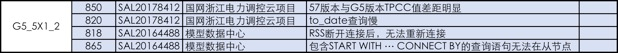 |
| 2018-05-24 18:06:22 | 我 | 接着说 |
| 2018-05-24 18:06:37 | 我 | 幸亏我之前和你说了咱们的策略 |
| 2018-05-24 18:06:51 | 我 | 不然王欣找你你还不得蒙了 |
| 2018-05-24 18:07:04 | 你 | 是呢 |
| 2018-05-24 18:07:09 | 你 | 不要太好 |
| 2018-05-24 18:07:13 | 我 | 这次太漂亮了 |
| 2018-05-24 18:07:16 | 你 | 是 |
| 2018-05-24 18:07:32 | 我 | 咱们这次是规则制定者 |
| 2018-05-24 18:07:37 | 你 | 是 |
| 2018-05-24 18:07:42 | 我 | 连赵总都按照咱们的剧本走 |
| 2018-05-24 18:07:46 | 你 | 是的 |
| 2018-05-24 18:07:49 | 我 | 太开心了 |
| 2018-05-24 18:07:52 | 你 | shi |
| 2018-05-24 18:08:05 | 我 | 这次谋事太成功了 |
| 2018-05-24 18:08:12 | 你 | 是 |
| 2018-05-24 18:08:16 | 你 | 太成功了 |
| 2018-05-24 18:08:48 | 我 | 本来还以为需要我去推动一下，没想到赵总已经等不及了 |
| 2018-05-24 18:08:53 | 你 | 是呢 |
| 2018-05-24 18:09:00 | 你 | 是不是很开心 |
| 2018-05-24 18:09:03 | 你 | 太开心了 |
| 2018-05-24 18:09:05 | 我 | 不得不说，你的命简直太好了 |
| 2018-05-24 18:09:08 | 你 | 哈哈 |
| 2018-05-24 18:09:12 | 你 | 哈哈 |
| 2018-05-24 18:09:14 | 我 | 真的是心想事成 |
| 2018-05-24 18:09:19 | 你 | 而且王欣也告诉我让我保密了 |
| 2018-05-24 18:09:29 | 我 | 而且这次一点都没有浪费 |
| 2018-05-24 18:09:34 | 你 | 一个人的话 赵总应该能争取下来 你说呢 |
| 2018-05-24 18:09:39 | 我 | 一分不多一分不少 |
| 2018-05-24 18:09:41 | 你 | 是 |
| 2018-05-24 18:09:44 | 我 | 肯定的 |
| 2018-05-24 18:09:45 | 你 | 刚刚好 |
| 2018-05-24 18:09:57 | 我 | 周末你来加班吧，我也来 |
| 2018-05-24 18:09:58 | 你 | 我太开心了 |
| 2018-05-24 18:10:03 | 我 | 咱俩好好庆祝一下 |
| 2018-05-24 18:10:06 | 你 | 行 |
| 2018-05-24 18:10:16 | 我 | 太开心啦 |
| 2018-05-24 18:10:51 | 你 | 你说欣姐不会跟我要offer吧 |
| 2018-05-24 18:10:56 | 我 | 不会的 |
| 2018-05-24 18:11:09 | 你 | 对了 我看咱们部门应该也要裁员了 |
| 2018-05-24 18:11:16 | 你 | 今天王欣找我说了好多事 |
| 2018-05-24 18:11:30 | 你 | 问我产品组的人 表现都怎么杨 |
| 2018-05-24 18:11:32 | 你 | 样 |
| 2018-05-24 18:11:33 | 我 | 如果他找你要，你就说你已经打电话拒绝了，太开心 |
| 2018-05-24 18:11:38 | 你 | 马姐啥的 |
| 2018-05-24 18:11:46 | 我 | 嗯嗯 |
| 2018-05-24 18:11:50 | 你 | 好的 |
| 2018-05-24 18:12:14 | 我 | 王欣和你说这些已经是把你当成自己人了 |
| 2018-05-24 18:12:20 | 你 | 是呢 |
| 2018-05-24 18:12:31 | 你 | 我说马姐要是安排去测试 估计就会辞职了 |
| 2018-05-24 18:12:39 | 你 | 欣姐就说 那就走 |
| 2018-05-24 18:13:31 | 我 | 嗯嗯 |
| 2018-05-24 18:16:23 | 你 | 我真是太开心了老王 |
| 2018-05-24 18:16:32 | 我 | 是 |
| 2018-05-24 18:16:35 | 我 | 我也特别开心 |
| 2018-05-24 18:16:44 | 我 | 这事你先不要和东东讲 |
| 2018-05-24 18:16:48 | 我 | 也别告诉李杰 |
| 2018-05-24 18:17:28 | 你 | 为啥 |
| 2018-05-24 18:17:47 | 我 | 先稳稳 |
| 2018-05-24 18:18:00 | 你 | 我说了已经 |
| 2018-05-24 18:18:06 | 我 | 这事只是刚开始，后面还有很多变数 |
| 2018-05-24 18:18:11 | 我 | 好吧 |
| 2018-05-24 18:18:12 | 你 | 微信上说的，跟东东说的 |
| 2018-05-24 18:18:20 | 你 | 李杰没说 |
| 2018-05-24 18:18:26 | 我 | 那就先这样，别透露更多的信息 |
| 2018-05-24 18:18:49 | 你 | 东东也不行吗 |
| 2018-05-24 18:18:55 | 我 | 不行 |
| 2018-05-24 18:19:00 | 你 | 我想跟他说领导要用我了 |
| 2018-05-24 18:19:12 | 我 | 不一定好 |
| 2018-05-24 18:19:27 | 我 | 你先容我点时间想想 |
| 2018-05-24 18:19:31 | 我 | 我需要推演一下 |
| 2018-05-24 18:19:50 | 你 | 王欣最近这些动作，我都跟他说，他已经同意我留下 |
| 2018-05-24 18:19:55 | 我 | 因为你之前的行为把他们的胃口吊的很高了 |
| 2018-05-24 18:20:08 | 我 | 嗯嗯，我先想想 |
| 2018-05-24 18:20:13 | 你 | 他说我总是很冲动的做事，当初找工作也是拉都拉不住我 |
| 2018-05-24 18:20:16 | 你 | 好的 |
| 2018-05-24 18:20:24 | 我 | 对，我也是怕你冲动 |
| 2018-05-24 18:20:43 | 我 | 今天你已经和东东说过的，细节部分你还可以跟他说 |
| 2018-05-24 18:22:42 | 我 | 但是关于后面这些道理以及暗地里这些事情先不要说，我怕你说不圆，被东东发现我帮你 |
| 2018-05-24 18:24:42 | 我 | 亲，你去哪了，我今天需要早点走 |
| 2018-05-24 18:25:23 | 你 | 你坐我的车吗想 |
| 2018-05-24 18:25:51 | 你 | 知道了 |
| 2018-05-24 18:25:55 | 我 | 想呀，可是。。。。，不想惹你不开心 |
| 2018-05-24 18:26:06 | 你 | 现在你没参与过 所以我不会说漏嘴的 |
| 2018-05-24 18:26:15 | 你 | 啥叫惹我不开心 |
| 2018-05-24 18:26:17 | 我 | 嗯嗯 |
| 2018-05-24 18:26:25 | 我 | 我和丽莹一起走 |
| 2018-05-24 18:26:30 | 你 | 哦 |
| 2018-05-24 18:26:33 | 你 | 你走吧 |
| 2018-05-24 18:26:41 | 我 | 别不开心呀 |
| 2018-05-24 18:26:43 | 你 | 你走呗 |
| 2018-05-24 18:26:58 | 你 | 没事 你走吧 |
| 2018-05-24 18:32:27 | 我 | 我先走了 |
| 2018-05-24 18:32:31 | 你 | 拜拜 |
{kind=link}
2018-05-25¶
| 2018-05-25 10:33:22 | 我 | 亲，有空吗 |
| 2018-05-25 10:35:37 | 你 | 有空 咋了 |
| 2018-05-25 10:37:40 | 我 | 刚才和刘辉抽烟，刘辉说王欣问他和研发沟通谁最顺畅了 |
| 2018-05-25 10:37:47 | 你 | 刘辉怎么说的 |
| 2018-05-25 10:37:50 | 你 | 是说的我吗 |
| 2018-05-25 10:37:56 | 我 | 当然啦 |
| 2018-05-25 10:38:02 | 你 | 真的啊 太棒了 |
| 2018-05-25 10:38:08 | 你 | 辉哥竟然也说的我 |
| 2018-05-25 10:39:48 | 你 | 你说我调薪这事 能成吗 |
| 2018-05-25 10:39:58 | 你 | 我估计都问了 |
| 2018-05-25 10:40:00 | 我 | 可能性很大 |
| 2018-05-25 10:40:04 | 你 | 赵益至少应该也知道 |
| 2018-05-25 10:40:10 | 我 | 肯定的 |
| 2018-05-25 10:40:20 | 我 | 大家肯定都说是你 |
| 2018-05-25 10:40:34 | 我 | 毕竟去年沟通了一年 |
| 2018-05-25 10:40:42 | 你 | 恩 |
| 2018-05-25 10:40:43 | 你 | 是 |
| 2018-05-25 10:44:09 | 你 | 还接着聊吗 |
| 2018-05-25 10:44:19 | 我 | 聊呀 |
| 2018-05-25 10:44:27 | 我 | 可想和你聊了 |
| 2018-05-25 10:44:55 | 你 | 聊呗 |
| 2018-05-25 10:45:59 | 我 | 现在你这事后面还有大事，钱已经算是小事了 |
| 2018-05-25 10:46:05 | 你 | 啊 |
| 2018-05-25 10:51:20 | 你 | 你怎么走了 |
| 2018-05-25 10:51:54 | 我 | 马上回去 |
| 2018-05-25 10:57:12 | 我 | 我昨天好好想了想， 我觉得赵总在谋划大事 |
| 2018-05-25 10:57:38 | 我 | 你是赵总非常关键的棋子 |
| 2018-05-25 10:57:45 | 你 | 是吗 |
| 2018-05-25 10:57:48 | 我 | 否则赵总不会下这么大本钱 |
| 2018-05-25 10:58:08 | 你 | 他现在肯定是听需要我的 |
| 2018-05-25 10:58:18 | 你 | 王欣这些动作 确实很大了已经 |
| 2018-05-25 10:58:19 | 你 | 你说呢 |
| 2018-05-25 10:58:21 | 我 | 加薪这事，工资条上可能无法体现，但是赵总会想办法给你找钱 |
| 2018-05-25 10:58:27 | 我 | 对呀 |
| 2018-05-25 10:59:40 | 你 | 我昨天也想了 |
| 2018-05-25 10:59:56 | 你 | 我加薪这事 估计不会到财务 |
| 2018-05-25 11:00:04 | 你 | 因为一旦到了王总就知道 |
| 2018-05-25 11:00:09 | 我 | 我觉得这次对你来说，是非常关键的时间 |
| 2018-05-25 11:00:11 | 我 | 对 |
| 2018-05-25 11:00:21 | 你 | 赵总就没办法解释 |
| 2018-05-25 11:00:31 | 你 | 怎么个关键法 |
| 2018-05-25 11:00:47 | 我 | 简单说，你可能需要独当一面了 |
| 2018-05-25 11:01:23 | 我 | 比如说把你调到王欣手下负责现场沟通，确认需求 |
| 2018-05-25 11:01:41 | 我 | 研发这边的需求就会弱化，只是写文档 |
| 2018-05-25 11:02:14 | 你 | 昨天王欣跟我说 跟技术这边的对接 项目信息 需求的都会放到我这 |
| 2018-05-25 11:02:24 | 我 | 我给你分析一下 |
| 2018-05-25 11:02:26 | 你 | 让张道山沉到L3去 |
| 2018-05-25 11:02:32 | 你 | 让我管版本 |
| 2018-05-25 11:02:41 | 你 | 你说吧 |
| 2018-05-25 11:02:50 | 我 | 你现在名义上归张道山，赵总也不好直接越过张道山 |
| 2018-05-25 11:03:00 | 我 | 可是现在赵总明显特别着急需求 |
| 2018-05-25 11:03:31 | 我 | 我要是赵总我就找一个借口，把你放到王欣那，以后和现场沟通都由王欣负责 |
| 2018-05-25 11:04:10 | 我 | 张道山只负责问题，现场信息和总体调度张道山要服从王欣的指挥 |
| 2018-05-25 11:04:52 | 我 | 张道山负责的需求只是由王欣和现场沟通完毕以后具化的需求 |
| 2018-05-25 11:05:02 | 我 | 这样其实就是赵总完全掌控需求了 |
| 2018-05-25 11:05:26 | 你 | 没准会这样 |
| 2018-05-25 11:05:39 | 我 | 一旦赵总掌控了需求，王总就没有办法折腾了，武总想插手也不容易了 |
| 2018-05-25 11:05:59 | 我 | 所以你的事情一定要站在 emt 的层次去考虑 |
| 2018-05-25 11:06:10 | 你 | 好么 |
| 2018-05-25 11:06:36 | 你 | 那我需要注意什么吗 |
| 2018-05-25 11:07:41 | 我 | 1. 全力配合王欣，2. 平时要低调，3. 时时刻刻要想着赵总的需求，不能眼睛只盯着工作 |
| 2018-05-25 11:08:02 | 我 | 要有吃苦的准备，跟着赵总肯定会特别累 |
| 2018-05-25 11:08:18 | 我 | 不过只要有成绩，赵总不会亏待你 |
| 2018-05-25 11:08:43 | 你 | 我不怕累 |
| 2018-05-25 11:08:50 | 你 | 也不怕苦 |
| 2018-05-25 11:09:02 | 我 | 嗯嗯 |
| 2018-05-25 11:09:03 | 你 | 关键是怕2、3做不好 |
| 2018-05-25 11:09:08 | 你 | 你要多提醒我 |
| 2018-05-25 11:09:15 | 我 | 王欣问你要孩子的事情了吗 |
| 2018-05-25 11:09:19 | 你 | 没问 |
| 2018-05-25 11:09:34 | 你 | 你会陪着我吗 |
| 2018-05-25 11:09:40 | 我 | 当然啦 |
| 2018-05-25 11:09:49 | 我 | 我怎么会丢下你不管 |
| 2018-05-25 11:09:58 | 你 | 那还谈什么苦啊 累啊的 |
| 2018-05-25 11:10:17 | 我 | 嗯嗯 |
| 2018-05-25 11:10:37 | 我 | 亲，你不用担心我，我给你的承诺一辈子有效， |
| 2018-05-25 11:10:41 | 你 | 我估计薪资调了以后 会谈 |
| 2018-05-25 11:10:45 | 你 | 孩子的问题 |
| 2018-05-25 11:10:52 | 我 | 这事你得想清楚 |
| 2018-05-25 11:11:02 | 你 | 知道 |
| 2018-05-25 11:11:10 | 我 | 毕竟赵总可不想投资失败 |
| 2018-05-25 11:11:20 | 你 | 投资我 怎么会失败 |
| 2018-05-25 11:11:24 | 你 | 你看你失败了吗 |
| 2018-05-25 11:11:46 | 我 | 哈哈，我是世界上最了解你的人，当然不会怀疑你了 |
| 2018-05-25 11:12:13 | 我 | 可是赵总不了解你，他也不会想主动了解你，所以你得有投名状 |
| 2018-05-25 11:12:16 | 你 | 你又最新版本的版本号规范吗 |
| 2018-05-25 11:12:29 | 你 | 知道了 |
| 2018-05-25 11:12:30 | 我 | 没有，张工没发给我 |
| 2018-05-25 11:12:35 | 你 | 我再想想ba |
| 2018-05-25 11:12:48 | 你 | 他根本没写 刘畅都不知道这事 我说的是去年的 |
| 2018-05-25 11:12:52 | 你 | 我准备自己写一下 |
| 2018-05-25 11:12:55 | 我 | 我找找 |
| 2018-05-25 11:13:03 | 你 | 我明天加班 已经跟东东说了 |
| 2018-05-25 11:13:08 | 我 | 嗯嗯 |
| 2018-05-25 11:13:11 | 我 | 我明天也来 |
| 2018-05-25 11:13:57 | 你 | 中航的事 高姐肯定跟王总说了 王总刚才过去找王胜利我估计 |
| 2018-05-25 11:14:06 | 我 | 嗯嗯 |
| 2018-05-25 11:14:07 | 你 | 我刚才看到他从胜利那屋出来 |
| 2018-05-25 11:14:18 | 我 | 可惜这事是梁晨评估的 |
| 2018-05-25 11:14:29 | 你 | 你先把规范发给我 |
| 2018-05-25 11:14:35 | 我 | 我正在找 |
| 2018-05-25 11:18:54 | 你 | 你觉得 我现在的处境对我是好还是坏啊 |
| 2018-05-25 11:19:00 | 我 | 发给你了，你看看对吗 |
| 2018-05-25 11:19:08 | 我 | 肯定是利好呀 |
| 2018-05-25 11:19:13 | 我 | 大利好 |
| 2018-05-25 11:19:21 | 你 | 好 那就好 |
| 2018-05-25 11:19:38 | 我 | 明天咱俩再仔细分析一下现在的情况 |
| 2018-05-25 11:19:44 | 我 | 打字太累了 |
| 2018-05-25 11:19:50 | 你 | 好 |
| 2018-05-25 11:34:31 | 我 | 你咋不去呀 |
| 2018-05-25 11:34:43 | 你 | 不想跟严丹一起吃饭 |
| 2018-05-25 11:34:55 | 你 | 假假的 |
| 2018-05-25 11:34:58 | 你 | 你们去吧 |
| 2018-05-25 11:35:00 | 你 | 我带饭了 |
| 2018-05-25 11:35:16 | 我 | 好吧，下次让胖子单独请你 |
| 2018-05-25 11:35:25 | 你 | 下次我请他 |
| 2018-05-25 11:44:31 | 你 | 欣姐找我了 说王总说的调薪比例给落实 调35% |
| 2018-05-25 11:44:37 | 你 | 调完是8200 |
| 2018-05-25 11:44:54 | 你 | 好纠结啊 |
| 2018-05-25 11:45:11 | 我 | 是 |
| 2018-05-25 11:45:15 | 你 | 这个有点低了感觉 |
| 2018-05-25 11:45:46 | 我 | 有点纠结 |
| 2018-05-25 11:46:01 | 你 | 要是能涨到10k就好了 |
| 2018-05-25 11:46:57 | 你 | 但是欣姐说是按照王总的说法执行的，武总尹总都知道 |
| 2018-05-25 11:47:10 | 我 | 嗯 |
| 2018-05-25 11:47:22 | 我 | 你先说要和家里商量 |
| 2018-05-25 11:48:05 | 我 | 下周一再回复王欣吧 |
| 2018-05-25 11:49:31 | 你 | 我表现的挺不乐意的，然后说我再考虑考虑 |
| 2018-05-25 11:49:52 | 我 | 嗯嗯 |
| 2018-05-25 11:50:49 | 我 | 表面上也只能这样，王总提的武总肯定不会给更多 |
| 2018-05-25 11:51:03 | 你 | 是 我觉得是 |
| 2018-05-25 11:51:11 | 你 | 赵总还在跟我耍心眼 |
| 2018-05-25 11:51:17 | 我 | 不是 |
| 2018-05-25 11:51:42 | 我 | 如果你归赵总管，没准就涨上去了 |
| 2018-05-25 11:52:12 | 我 | 你可以有两个策略 |
| 2018-05-25 11:52:14 | 你 | 那怎么谈啊 |
| 2018-05-25 11:52:17 | 你 | 怎么说 |
| 2018-05-25 11:52:48 | 我 | 一个就明确说钱少了，家里不答应 |
| 2018-05-25 11:52:52 | 你 | 赵总明显是没使劲嘛 |
| 2018-05-25 11:55:07 | 我 | 这事有点复杂 |
| 2018-05-25 11:55:20 | 你 | 嗯 |
| 2018-05-25 11:55:28 | 你 | 再想想 |
| 2018-05-25 12:03:22 | 我 | 旭明工作要求995 |
| 2018-05-25 12:05:41 | 我 | 你还有一个策略就是让王欣承诺明年可以到13k |
| 2018-05-25 12:10:57 | 我 | 王欣说了让你什么时候回话了吗 |
| 2018-05-25 12:16:45 | 你 | 哦哦 |
| 2018-05-25 12:17:08 | 你 | 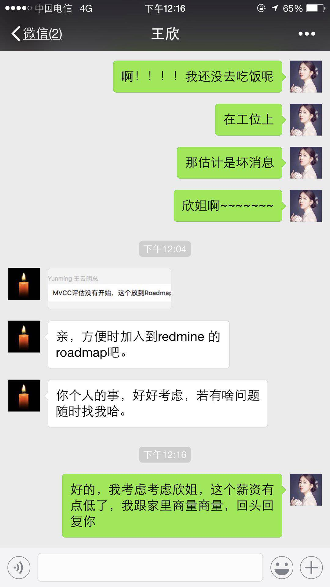 |
| 2018-05-25 12:17:28 | 我 | 嗯嗯 |
| 2018-05-25 12:17:30 | 你 | 这里边事太多了 |
| 2018-05-25 12:17:51 | 我 | 是 |
| 2018-05-25 12:18:04 | 你 | 明年承诺的话不好 |
| 2018-05-25 12:18:50 | 你 | 与其那样我还不如就卖个人情，就说工资低我认了，但是明年调薪让赵总再照顾照顾 |
| 2018-05-25 12:18:58 | 你 | 这里边事太多了 |
| 2018-05-25 12:19:22 | 你 | 这事老杨能帮忙吗 |
| 2018-05-25 12:19:24 | 我 | 是，我现在一时也没有想清楚 |
| 2018-05-25 12:19:28 | 我 | 帮不上 |
| 2018-05-25 12:19:45 | 我 | 王欣级别已经很高了 |
| 2018-05-25 12:19:54 | 你 | 欣姐上来就把王总抬出来了 |
| 2018-05-25 12:20:04 | 你 | 还说这个数是王总给的 |
| 2018-05-25 12:20:22 | 你 | 王总因为我的事还找过赵总 |
| 2018-05-25 12:20:45 | 我 | 嗯嗯 |
| 2018-05-25 12:21:37 | 你 | 这样我给你交底，即使这个数我也不走，但是你帮我想想办法看能不能再长点，还有帮我权衡下利弊 |
| 2018-05-25 12:22:01 | 我 | 没问题，我肯定帮你 |
| 2018-05-25 12:22:25 | 我 | 我今天先仔细想想，明天咱们再细聊 |
| 2018-05-25 12:22:36 | 你 | 还有一个事，你觉得王欣怎么知道我找工作的事 |
| 2018-05-25 12:23:03 | 我 | 我觉得她是在诈你 |
| 2018-05-25 12:23:16 | 你 | 我看不像 |
| 2018-05-25 12:23:35 | 你 | 也可能是因为我前些天跟她透露的？ |
| 2018-05-25 12:24:02 | 我 | 我觉得这个没事，反而是咱们主动 |
| 2018-05-25 12:24:17 | 你 | 还有一个事，今天大小写的那个测试报告，我让任红雨发给我，她没发给我，反倒发给王总了 |
| 2018-05-25 12:24:30 | 我 | 总比让你自己说出来强 |
| 2018-05-25 12:24:38 | 你 | 是，肯定的 |
| 2018-05-25 12:24:45 | 我 | 这事你得问问小雨 |
| 2018-05-25 12:25:00 | 你 | 小雨？额～～～～ |
| 2018-05-25 12:25:13 | 你 | 嗯，找她说下 |
| 2018-05-25 12:25:23 | 我 | 这种行为一般是不允许的 |
| 2018-05-25 12:25:37 | 你 | 我在想怎么处理这事 |
| 2018-05-25 12:25:56 | 我 | 你是怎么知道她发给王总的 |
| 2018-05-25 12:26:08 | 你 | 咱们王总回头就找我说大小写的事，我感觉出来她不好意思了 |
| 2018-05-25 12:26:49 | 你 | 而且王总还走到外屋子问的我，我才知道的 |
| 2018-05-25 12:27:22 | 你 | 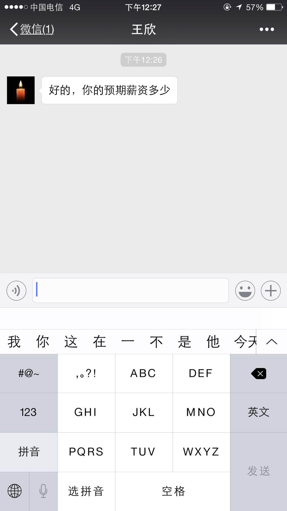 |
| 2018-05-25 12:27:25 | 你 | 快看下 |
| 2018-05-25 12:27:30 | 你 | 王欣发给我的 |
| 2018-05-25 12:27:36 | 你 | 我怎么回 |
| 2018-05-25 12:27:48 | 我 | 13k，最少10k |
| 2018-05-25 12:27:50 | 你 | 我回多少 |
| 2018-05-25 12:28:21 | 我 | 你说 这是之前家里提出来的 |
| 2018-05-25 12:30:12 | 你 | 欣姐，我现在手里有offer是13k，你知道我不想离开公司，可是8k确实有点少了，至少10k吧 |
| 2018-05-25 12:30:37 | 你 | 行吗？ |
| 2018-05-25 12:30:42 | 我 | 👌 |
| 2018-05-25 12:31:30 | 你 | 又主动了？欣姐靠谱 |
| 2018-05-25 12:31:45 | 我 | 嗯嗯 |
| 2018-05-25 12:31:52 | 你 | 要是有10k就没遗憾了 |
| 2018-05-25 12:31:54 | 你 | 你说呢 |
| 2018-05-25 12:31:55 | 我 | 所以别着急下结论 |
| 2018-05-25 12:31:57 | 我 | 是 |
| 2018-05-25 12:31:58 | 你 | 也不少了 |
| 2018-05-25 12:32:16 | 你 | 是，我特别不擅长这种讨价还价 |
| 2018-05-25 12:32:38 | 我 | 😄 |
| 2018-05-25 12:32:44 | 我 | 是不是很紧张 |
| 2018-05-25 12:33:04 | 你 | 是啊 |
| 2018-05-25 12:33:18 | 我 | 我刚才就在想王欣可能会找赵总问，就是不敢告诉你 |
| 2018-05-25 12:33:21 | 你 | 8k我也不走，就是觉得亏了点，你说呢 |
| 2018-05-25 12:33:45 | 我 | 走不走先别说，我们的目标就是钱 |
| 2018-05-25 12:33:50 | 你 | 你说对于我10k要的高吗 |
| 2018-05-25 12:33:52 | 我 | 这就是博弈 |
| 2018-05-25 12:33:56 | 我 | 不高 |
| 2018-05-25 12:34:06 | 你 | 那就好 |
| 2018-05-25 12:34:16 | 我 | 现在你不要以后就没真么好的机会了 |
| 2018-05-25 12:34:17 | 你 | 我就怕他们认为我狮子大开口 |
| 2018-05-25 12:34:22 | 你 | 是吧 |
| 2018-05-25 12:35:02 | 你 | 你说赵总会不会提条件 |
| 2018-05-25 12:35:25 | 我 | 没事，提吧，什么都可以商量 |
| 2018-05-25 12:35:59 | 你 | 是 |
| 2018-05-25 12:36:19 | 你 | 谈嘛对吧，我估计这种事赵总处理的也不少 |
| 2018-05-25 12:36:42 | 我 | 肯定的，你算是老实的 |
| 2018-05-25 12:37:23 | 你 | 是 |
| 2018-05-25 12:38:21 | 我 | 王欣回了吗 |
| 2018-05-25 12:38:27 | 你 | 还没有 |
| 2018-05-25 12:38:32 | 你 | 我在等呢 |
| 2018-05-25 12:39:04 | 我 | 他去找赵总了 |
| 2018-05-25 12:39:09 | 我 | 这样挺好 |
| 2018-05-25 12:39:19 | 我 | 你也不用直接面对赵总 |
| 2018-05-25 12:48:20 | 你 | 刚才欣姐又找我了 说赵总去给努努力 说要一两周的时间 让我等回复 |
| 2018-05-25 12:48:51 | 我 | 嗯嗯 |
| 2018-05-25 12:50:22 | 我 | 这样就简单多了 |
| 2018-05-25 12:50:36 | 我 | 安心吧，睡会吧 |
| 2018-05-25 12:51:19 | 你 | 你觉得赵总应该是想留我的吧 |
| 2018-05-25 12:51:32 | 你 | 你快吃饭吧 回来再说 |
| 2018-05-25 12:51:48 | 我 | 肯定是想留你 |
| 2018-05-25 12:52:14 | 我 | 现在这轮操作已经显得赵总决心很大 |
| 2018-05-25 12:52:40 | 你 | 我特别紧张 饭都没吃 |
| 2018-05-25 12:53:06 | 我 | 是，我知道 |
| 2018-05-25 12:53:15 | 我 | 现在看应该没事了 |
| 2018-05-25 12:53:22 | 我 | 先歇会吧 |
| 2018-05-25 14:02:58 | 我 | 刚才严丹和我说，他们那边对于人员离职没有任何安抚措施，赵总说不鼓励、不制止 |
| 2018-05-25 14:04:41 | 你 | 是吧 |
| 2018-05-25 14:05:00 | 我 | 现在看赵总对你还是很特殊的 |
| 2018-05-25 14:05:04 | 你 | shi |
| 2018-05-25 14:05:09 | 你 | 那就太特殊了 |
| 2018-05-25 14:07:05 | 我 | 我发现任宏宇比刘正超脑子明白 |
| 2018-05-25 14:07:14 | 你 | 那必须的 |
| 2018-05-25 14:07:29 | 我 | 他们在这讨论 delimident，整个是小女孩带着跑 |
| 2018-05-25 14:07:59 | 你 | 谁在讨论 |
| 2018-05-25 14:08:11 | 你 | 任虹雨脑子就是清楚 |
| 2018-05-25 14:10:19 | 我 | 是，他俩在刘正超那讨论 |
| 2018-05-25 14:10:40 | 你 | O |
| 2018-05-25 14:22:53 | 我 | 刚才高杰和我说，让我在周会的时候提一下中航的几个人的事情 |
| 2018-05-25 14:23:42 | 我 | 最近她一直在和我示好，真是没有永远的敌人只有永远的利益 |
| 2018-05-25 14:27:02 | 你 | 说的没错 |
| 2018-05-25 14:27:30 | 你 | 对于她和黄肯定是先用高打黄 |
| 2018-05-25 14:27:44 | 我 | 还有就是因为我的实力够强[呲牙] |
| 2018-05-25 14:27:49 | 我 | 是 |
| 2018-05-25 14:27:57 | 你 | 那必须的 |
| 2018-05-25 14:28:31 | 我 | 你的实力也很强呀😁，不然赵总也不会对你这么特殊 |
| 2018-05-25 14:29:07 | 我 | 现在你对赵总来说就是雪中送炭😄 |
| 2018-05-25 14:29:13 | 你 | 又开启商业互捧模式了 |
| 2018-05-25 14:29:19 | 我 | 是最值钱的时候 |
| 2018-05-25 14:29:39 | 我 | 谁和谁呀 |
| 2018-05-25 14:33:38 | 你 | 咱俩 |
| 2018-05-25 14:33:51 | 我 |
|
| 2018-05-25 14:54:16 | 你 | 今天王志跟所有人都在怼 |
| 2018-05-25 14:54:40 | 我 | 哈哈，这几天他郁闷坏了吧 |
| 2018-05-25 15:12:36 | 你 | 刚才辉哥情绪特别大 |
| 2018-05-25 15:12:51 | 我 | 说说 |
| 2018-05-25 15:12:54 | 你 | 一直怼王志 然后跟我说话的时候 就换一个样 |
| 2018-05-25 15:13:03 | 你 | 把我膨胀的啊 |
| 2018-05-25 15:13:15 | 我 | 哈哈，这些天我一直给刘辉灌输王志不好 |
| 2018-05-25 15:13:23 | 你 | 我估计是你给他洗脑了 |
| 2018-05-25 15:13:24 | 你 | 哈哈 |
| 2018-05-25 15:13:48 | 我 | 刘辉最讨厌李俊旗那种二道贩子，我说王志就是二道贩子 |
| 2018-05-25 15:14:12 | 你 | 是吧 |
| 2018-05-25 15:14:18 | 我 | 今天上午我还和他说王志嚷嚷没人，其实活都是老毛和陈彪干的，刘辉就非常鄙视他 |
| 2018-05-25 15:14:34 | 我 | 哈哈，没想到下午就怼上了 |
| 2018-05-25 15:14:46 | 你 | 可厉害了 刘辉很少那样 |
| 2018-05-25 15:14:56 | 我 | 嗯嗯 |
| 2018-05-25 15:14:58 | 你 | 对了 我把黄给告了 |
| 2018-05-25 15:15:03 | 你 | 告到王欣了 |
| 2018-05-25 15:15:13 | 我 | 👍 |
| 2018-05-25 15:15:25 | 你 | 今天要是黄发的中航项目邮件提 人力释放的事 我就不告他 |
| 2018-05-25 15:15:32 | 你 | 结果人家项目邮件写的 |
| 2018-05-25 15:15:48 | 你 | 『 经过技术支持和开发团队的共同努力，项目按计划正常推进，预计29日发布技术支持试用版。』 |
| 2018-05-25 15:15:51 | 你 | 靠 |
| 2018-05-25 15:16:08 | 我 | 他们一直是这么糊弄领导的 |
| 2018-05-25 16:26:48 | 你 | 黄军雷开始使唤我了 |
| 2018-05-25 16:26:53 | 你 | 他接需求 |
| 2018-05-25 16:27:24 | 我 | 是，这事咱俩下来要好好商量 |
| 2018-05-25 16:27:57 | 你 | 好 |
| 2018-05-25 16:46:50 | 我 | 哈哈，我刚才一直一心二用，一边编程一边应付高杰 |
| 2018-05-25 16:46:58 | 你 | 我看出来了 |
| 2018-05-25 17:43:47 | 你 | 问一下中航的Gen_Guid()函数 研发都做了啥 |
| 2018-05-25 17:44:19 | 我 | 嗯嗯 |
| 2018-05-25 18:30:25 | 你 | 我下班了啊 |
| 2018-05-25 18:32:15 | 我 | 明天见 |
{kind=link}
{kind=link}
2018-05-26¶
| 2018-05-26 08:57:50 | 你 | 你到了吗？ |
| 2018-05-26 08:58:15 | 你 | 我到了，进不去 |
| 2018-05-26 08:58:32 | 我 | 我刚出来，得半小时 |
| 2018-05-26 08:58:51 | 我 | 你这么早呀 |
| 2018-05-26 09:01:22 | 你 | 嗯 |
| 2018-05-26 09:02:19 | 我 | 陈彪没到吗 |
| 2018-05-26 09:02:54 | 你 | 没有 |
| 2018-05-26 09:03:00 | 你 | 没有人除了我 |
| 2018-05-26 09:03:14 | 你 | 没事，我等一会，吃点早点 |
| 2018-05-26 09:03:32 | 我 | 嗯嗯，去五楼找个地方吧 |
| 2018-05-26 09:03:50 | 你 | 没事 |
| 2018-05-26 09:16:43 | 我 | 你进去了？ |
| 2018-05-26 09:16:51 | 你 | 没有 |
| 2018-05-26 09:17:01 | 你 | 在大厅里的等你呢 |
| 2018-05-26 09:17:28 | 我 | 嗯 |
| 2018-05-26 09:29:02 | 你 | 我进来了，你别着急啦 |
| 2018-05-26 09:29:26 | 我 | [动画表情] |
| 2018-05-26 17:02:50 | 你 | [链接] IBM 举起砍斧：沃森健康（Watson Health）最多裁员 70%，4900人 ！ |
| 2018-05-26 17:03:19 | 我 | 哈哈 |
| 2018-05-26 17:03:22 | 我 | 你去哪了 |
| 2018-05-26 17:03:33 | 你 | 上厕所啊 |
| 2018-05-26 17:03:39 | 我 | 嗯嗯 |
| 2018-05-26 17:03:59 | 我 | 待会咱们回家吧，路上再聊一会 |
2018-05-28¶
| 2018-05-28 08:46:26 | 你 | 我这衣服颜色有点太亮了 |
| 2018-05-28 08:46:44 | 我 | 挺好看的呀 |
| 2018-05-28 08:47:17 | 你 | 有点太鲜艳了，太招摇 |
| 2018-05-28 08:47:35 | 我 | 哈哈，没事的，挺好的 |
| 2018-05-28 08:47:41 | 我 | 只是你不习惯而已 |
| 2018-05-28 08:47:48 | 我 | 一点都不招摇 |
| 2018-05-28 08:48:58 | 你 | 死马当活马医。有方法。ibm内部的。有风险 |
| 2018-05-28 08:49:04 | 你 | 这是晓亮回复我的 |
| 2018-05-28 08:49:11 | 我 | 嗯嗯 |
| 2018-05-28 08:49:34 | 你 | 那几个问题 你要加快点速度啊 国网现在事挺大 |
| 2018-05-28 08:49:43 | 你 | G5这个版。。。。 |
| 2018-05-28 08:50:00 | 我 | 唉 |
| 2018-05-28 09:15:39 | 你 | 浙江这事就该陈总和王志负责 |
| 2018-05-28 09:15:49 | 我 | 是 |
| 2018-05-28 09:15:50 | 你 | 王志无能，还不上诉 |
| 2018-05-28 09:16:12 | 你 | 陈总还想拿这事将技术的军 |
| 2018-05-28 09:17:00 | 我 | 无所谓啦，不行让吕迅上呗 |
| 2018-05-28 09:17:08 | 你 | 嗯 |
| 2018-05-28 10:26:21 | 你 | 聊的怎么样了 |
| 2018-05-28 10:26:36 | 我 | 没什么思路 |
| 2018-05-28 10:26:47 | 你 | 那还墨迹这么半天 |
| 2018-05-28 10:26:56 | 你 | 让王总去一线得了 |
| 2018-05-28 10:27:13 | 我 | 王总这次也抓瞎了 |
| 2018-05-28 10:27:48 | 你 | 所以 只能让他去了 |
| 2018-05-28 10:28:04 | 我 | 嗯嗯 |
| 2018-05-28 10:56:42 | 我 | 不要太纠结补丁 POC |
| 2018-05-28 10:57:10 | 你 | 知道了 |
| 2018-05-28 10:57:32 | 你 | zabbix的事还说吗 |
| 2018-05-28 10:57:59 | 我 | 说吧，估计还得是咱们做 |
| 2018-05-28 10:58:19 | 你 | 我说吗？ |
| 2018-05-28 10:58:25 | 我 | 说吧 |
| 2018-05-28 10:58:27 | 你 | 我觉得我说的挺多了 |
| 2018-05-28 10:58:44 | 我 | 没事，只要王欣不拦着你 |
| 2018-05-28 11:05:55 | 你 | [链接] 李辉和孙晓亮的聊天记录 |
| 2018-05-28 11:06:15 | 我 | 呵呵 |
| 2018-05-28 11:07:26 | 我 | 赵益又不合时宜的说话了😁 |
| 2018-05-28 11:09:08 | 我 | 你觉不觉得王总剃头显得很二[呲牙] |
| 2018-05-28 11:09:31 | 你 | 反正二了吧唧的 |
| 2018-05-28 11:18:21 | 你 | 现在是双主了吗 |
| 2018-05-28 11:18:28 | 你 | 跟218那个问题像吗 |
| 2018-05-28 11:18:38 | 我 | 是的 |
| 2018-05-28 11:18:44 | 我 | 应该是同一个问题 |
| 2018-05-28 11:18:49 | 你 | 哦哦 |
| 2018-05-28 11:19:00 | 我 | 不过上次没有数据损坏，这次事情大了 |
| 2018-05-28 11:19:04 | 你 | 那怎么丢数据了 |
| 2018-05-28 11:19:16 | 我 | 这个原因没有确认 |
| 2018-05-28 11:19:31 | 我 | 大家都是在猜 |
| 2018-05-28 11:24:18 | 你 | 是这个原因吗 |
| 2018-05-28 11:24:20 | 你 | 。。。。 |
| 2018-05-28 11:24:26 | 我 | 不好说 |
| 2018-05-28 11:28:11 | 我 | 浙江好像不是云 |
| 2018-05-28 11:28:56 | 你 | 不是云 |
| 2018-05-28 11:29:10 | 我 | 唉，咱们的王总，丢死人了 |
| 2018-05-28 11:30:00 | 你 | 刚问的晓亮 是物理机 |
| 2018-05-28 11:30:08 | 我 | 嗯嗯 |
| 2018-05-28 11:32:08 | 我 | 哈哈，王总被派到现场了 |
| 2018-05-28 11:32:16 | 你 | 是 |
| 2018-05-28 11:39:57 | 你 | 你吃饭去了吗 |
| 2018-05-28 11:40:12 | 你 | 还想问问你浙江的这个事呢 |
| 2018-05-28 11:40:31 | 我 | 没有，回来了 |
| 2018-05-28 12:59:04 | 我 | 你是去送王总了吗 |
| 2018-05-28 12:59:11 | 你 | 你怎么知道啊 |
| 2018-05-28 12:59:27 | 我 | 你出门的时候，我们进来，堵上了 |
| 2018-05-28 12:59:31 | 你 | 哦 |
| 2018-05-28 12:59:37 | 你 | 是严丹的车啊 |
| 2018-05-28 12:59:39 | 你 | 没注意 |
| 2018-05-28 12:59:40 | 我 | 是 |
| 2018-05-28 13:20:51 | 你 | 黄老师，附件是中航项目要的8s 两本SQL手册，请您审阅，并反馈给联系人。 |
| 2018-05-28 13:21:10 | 我 | 嗯嗯，就这样 |
| 2018-05-28 14:01:02 | 我 | 亲，有个事情和你商量一下 |
| 2018-05-28 14:01:14 | 你 | 咋了 |
| 2018-05-28 14:01:41 | 我 | 就是 delimident 的事情，后面主要是 JDBC 的开发，我想让任虹雨写一下需求 |
| 2018-05-28 14:01:48 | 我 | 简单写一下就行 |
| 2018-05-28 14:01:50 | 你 | 行啊 |
| 2018-05-28 14:01:53 | 你 | 写呗 |
| 2018-05-28 14:02:01 | 你 | 这么点小事 |
| 2018-05-28 14:02:02 | 你 | 写 |
| 2018-05-28 14:02:35 | 我 | 哈哈，就算是小事也得和你商量一下呀。毕竟是用你的人 |
| 2018-05-28 14:03:47 | 你 | 没事 |
| 2018-05-28 14:03:48 | 你 | 写 |
| 2018-05-28 14:03:55 | 我 | 嗯嗯 |
| 2018-05-28 14:04:00 | 你 | 现在想把我需求的人都带走 |
| 2018-05-28 14:04:05 | 你 | 就剩下小雨给我 |
| 2018-05-28 14:04:13 | 我 | 啊，是赵总说的吗 |
| 2018-05-28 14:04:14 | 你 | 我说把刘利也留下 |
| 2018-05-28 14:04:24 | 你 | 应该不是 |
| 2018-05-28 14:04:34 | 你 | 是高杰他们说周五的时候弄的 |
| 2018-05-28 14:04:35 | 我 | 对呀，最少也得留两个 |
| 2018-05-28 14:04:41 | 你 | 我不知道谁的主意 |
| 2018-05-28 14:05:21 | 我 | 知道了，就是组织架构调整。这事估计就是王总和老陈搞得 |
| 2018-05-28 14:05:28 | 你 | 是 |
| 2018-05-28 14:05:36 | 你 | 我刚才跟王欣说了 |
| 2018-05-28 14:05:43 | 你 | 留下刘利和任虹雨给我 |
| 2018-05-28 14:05:49 | 我 | 嗯嗯 |
| 2018-05-28 14:20:41 | 你 | 欣姐说给我留下这两个人 |
| 2018-05-28 14:21:07 | 我 | 好的 |
| 2018-05-28 14:30:03 | 我 | 亲，有个好消息。771 陈彪和刘凡梁一起调试，现在已经到了0.080s，刘凡梁说他去推动用户去改程序 |
| 2018-05-28 14:31:05 | 你 | 太好了 |
| 2018-05-28 14:48:49 | 我 | 亲，又有一个好消息 |
| 2018-05-28 14:49:14 | 我 | 745 我们打算做一个修复，也放到 X2里面 |
| 2018-05-28 15:07:45 | 我 | 745这个我已经安排好了，老毛去做，放到X2版本，争取还是6.1送测，最好能延期一周送测 |
| 2018-05-28 15:08:05 | 我 | 这版本赵益确认是6.30了吗 |
| 2018-05-28 15:10:19 | 你 | 确认6.30了 |
| 2018-05-28 15:17:06 | 我 | 👌 |
| 2018-05-28 15:19:52 | 你 | 你忙吗 |
| 2018-05-28 15:20:01 | 我 | 不忙 |
| 2018-05-28 15:31:46 | 你 | 欣姐说刚才找我就是想确认下 高杰他们定的组织架构有没有跟我商量 |
| 2018-05-28 15:31:58 | 我 | 哦哦 |
| 2018-05-28 15:32:21 | 你 | 以后景喜也要参加L123的会 |
| 2018-05-28 15:32:27 | 你 | 我估计就是替李俊旗呢 |
| 2018-05-28 15:32:30 | 我 | 是 |
| 2018-05-28 16:22:31 | 你 | 还想跟你聊天呢 你太忙了 |
| 2018-05-28 16:32:46 | 我 | 唉，今天是太忙了 |
| 2018-05-28 16:32:55 | 我 | 你想和我聊啥 |
| 2018-05-28 16:37:42 | 你 | 聊聊周六咱俩聊的事 |
| 2018-05-28 16:39:07 | 我 | 可以呀，现在也可以聊 |
| 2018-05-28 17:04:22 | 你 | 优先级那个群里 赵总问in的事呢 |
| 2018-05-28 17:04:24 | 你 | 你不说一句吗 |
| 2018-05-28 17:04:57 | 我 | 我没看，我现在去看看 |
| 2018-05-28 17:05:10 | 你 | 你快说一下啊 |
| 2018-05-28 17:07:32 | 我 | 说了[微笑] |
| 2018-05-28 17:07:39 | 你 | [玫瑰] |
| 2018-05-28 17:07:43 | 你 | 我看到了 |
| 2018-05-28 17:09:55 | 你 | 你们怎么那么墨迹啊 |
| 2018-05-28 17:11:16 | 我 | 唉，他们几个都很墨迹 |
| 2018-05-28 17:16:17 | 你 | [链接] 群聊的聊天记录 |
| 2018-05-28 17:20:24 | 我 | 这个王总，感觉脑子很不清楚呀 |
| 2018-05-28 17:20:34 | 你 | 咋了 |
| 2018-05-28 17:20:46 | 你 | 浙江的事是吧 |
| 2018-05-28 17:21:34 | 我 | 不是，就是这个 zabbix，老杨都说了不是监控8t，是写8t，王总还在那说修改配置文件 |
| 2018-05-28 17:22:45 | 你 | 是 |
| 2018-05-28 17:23:35 | 你 | 老杨的这句话『同时，对于zabbix监控8t数据库，还是建议研发提供标准的zabbix模板。』 |
| 2018-05-28 17:23:43 | 你 | 我们怎么能提供这个模板呢 |
| 2018-05-28 17:23:54 | 我 | 就是 |
| 2018-05-28 17:23:55 | 你 | 这个东西估计也是用户的事 不需要咱们吧 |
| 2018-05-28 17:27:03 | 你 | 把蔡刚的电话给我一下 |
| 2018-05-28 17:27:46 | 我 | 186 0036 0482 |
| 2018-05-28 17:28:43 | 你 | 怎么称呼？蔡总？ |
| 2018-05-28 17:30:49 | 我 | 是 |
| 2018-05-28 17:39:06 | 你 | 就是监控数据存储到8t |
| 2018-05-28 17:39:21 | 我 | 👌 |
| 2018-05-28 18:12:39 | 你 | 你知道吗 我自从周六跟你聊完以后 脑子里特别乱 |
| 2018-05-28 18:12:52 | 我 | 嗯嗯，正常 |
| 2018-05-28 18:13:07 | 我 | 这些东西我也是花了好久才想明白 |
| 2018-05-28 18:13:22 | 你 | 是吧 |
| 2018-05-28 18:13:29 | 你 | 脑子乱到。。。 |
| 2018-05-28 18:14:07 | 你 | 说不出来 我其实没有很多经验去验证这个理论 |
| 2018-05-28 18:14:10 | 你 | 你大概知道吧 |
| 2018-05-28 18:14:36 | 我 | 嗯嗯 |
| 2018-05-28 18:14:40 | 你 | 就是以前你告诉我一个理论 我自己也想明白了 就会豁然开朗 很多事都有解释的感觉 |
| 2018-05-28 18:14:44 | 你 | 但是这个不同 |
| 2018-05-28 18:14:55 | 你 | 这个的例子太少了 |
| 2018-05-28 18:14:59 | 我 | 我知道 |
| 2018-05-28 18:15:43 | 你 | 我现在有点理解你说的让我做你情人的感觉了 |
| 2018-05-28 18:15:53 | 你 | 或者你说的 利用下振鹏 |
| 2018-05-28 18:16:07 | 你 | 我光是想就觉得挺可怕的 |
| 2018-05-28 18:16:08 | 我 | 嗯嗯 |
| 2018-05-28 18:16:09 | 你 | 哈哈 |
| 2018-05-28 18:16:21 | 我 | 是，毕竟不是一个层次的 |
| 2018-05-28 18:17:05 | 我 | 这个层次的东西完全颠覆以前 |
| 2018-05-28 18:17:23 | 我 | 很多原则性的概念需要重新建立 |
| 2018-05-28 18:17:28 | 你 | 我觉得除了事情、原则、思想的颠覆外 |
| 2018-05-28 18:17:53 | 你 | 有一个更重要的 就是边界 |
| 2018-05-28 18:18:05 | 你 | 或者叫打破边界 |
| 2018-05-28 18:18:13 | 我 | 对 |
| 2018-05-28 18:18:23 | 我 | 你说的很准确 |
| 2018-05-28 18:18:31 | 你 | 就是想都不敢想这句话 |
| 2018-05-28 18:18:42 | 我 | 嗯嗯 |
| 2018-05-28 18:18:45 | 你 | 现在至少是敢想了 就是一种对边界的打破 |
| 2018-05-28 18:18:52 | 我 | 没错 |
| 2018-05-28 18:19:09 | 你 | 敢想 就可以模拟 预测 |
| 2018-05-28 18:19:34 | 我 | 是 |
| 2018-05-28 18:20:54 | 你 | 我明天有个面试 |
| 2018-05-28 18:21:10 | 你 | 在河西区 我可能要去趟 |
| 2018-05-28 18:21:13 | 我 | 好 |
| 2018-05-28 18:22:20 | 我 | 你想和我说的就这些吗 |
| 2018-05-28 18:22:28 | 你 | 是啊 |
| 2018-05-28 18:22:36 | 你 | 我周末的时候 脑子都要炸了 |
| 2018-05-28 18:23:45 | 我 | 哈哈，正常，你已经很优秀啦，这些东西的颠覆性很强的，很多人其实一上来本能就是反对的，你现在能够开始思考了，已经相当优秀了 |
| 2018-05-28 18:24:12 | 你 | 你是在安慰我呢吗 |
| 2018-05-28 18:24:19 | 我 | 当然不是啦 |
| 2018-05-28 18:24:32 | 你 | 我倒真没有反对 我只是在努力的寻找经验 |
| 2018-05-28 18:25:09 | 我 | 嗯嗯 |
| 2018-05-28 18:25:19 | 我 | 所以我才说你很不错 |
| 2018-05-28 18:25:28 | 你 | 你能多给我讲讲吗 |
| 2018-05-28 18:25:52 | 我 | 当然啦 |
| 2018-05-28 18:26:04 | 我 | 我会非常非常细的给你讲 |
| 2018-05-28 18:56:06 | 你 | 调研报告_delimident参数和caseshift在JDBC端和server端功能_20180403_rhy.xlsx |
2018-05-29¶
| 2018-05-29 08:56:14 | 你 | 你咋了 感觉不太高兴啊 |
| 2018-05-29 08:56:29 | 我 | 没有呀，一点都没有 |
| 2018-05-29 09:33:25 | 你 | 听着黄军雷说话就想对他 |
| 2018-05-29 09:33:27 | 你 | 怼 |
| 2018-05-29 09:33:48 | 我 | 是 |
| 2018-05-29 10:04:05 | 我 | 亲，你几点去面试 |
| 2018-05-29 10:04:11 | 你 | 我不去了 |
| 2018-05-29 10:04:14 | 你 | 太热 |
| 2018-05-29 10:04:33 | 我 | 好 |
| 2018-05-29 10:24:41 | 我 | 忙吗 |
| 2018-05-29 10:26:42 | 你 | 不忙 |
| 2018-05-29 10:26:59 | 我 | 聊天吧 |
| 2018-05-29 10:27:56 | 你 | 好啊 |
| 2018-05-29 10:32:42 | 你 | 接着聊吧 |
| 2018-05-29 10:32:47 | 你 | 好想跟你聊天 |
| 2018-05-29 10:32:49 | 我 | 嗯嗯 |
| 2018-05-29 10:33:01 | 我 | 辛德勒的名单你看完了吗 |
| 2018-05-29 10:33:35 | 你 | 昨天没看 |
| 2018-05-29 10:37:17 | 我 | 这个黄军雷，不懂装懂在那里瞎说 |
| 2018-05-29 10:37:42 | 你 | 他就是去告状了 |
| 2018-05-29 10:37:44 | 我 | 他现在就是骗完里面骗外面 |
| 2018-05-29 10:37:49 | 你 | 是 |
| 2018-05-29 10:38:22 | 我 | 幸亏咱俩和现场沟通紧密，否则就被黄老师给忽悠住了 |
| 2018-05-29 11:00:25 | 我 | [抓狂]这个刘辉太讨厌 |
| 2018-05-29 11:02:08 | 你 | 他们要调我的人 都不跟我说 |
| 2018-05-29 11:02:13 | 你 | 张工 高姐他们 |
| 2018-05-29 11:02:45 | 我 | 唉，还是因为你不够强 |
| 2018-05-29 11:03:06 | 我 | 我也有过这个阶段 |
| 2018-05-29 11:03:11 | 你 | 恩 |
| 2018-05-29 11:03:19 | 我 | 所以一定要变强 |
| 2018-05-29 11:03:28 | 你 | 是 |
| 2018-05-29 11:51:29 | 我 | 你今天口红挺好看 |
| 2018-05-29 11:57:36 | 你 | 一直都是这个，为啥今天好看？ |
| 2018-05-29 11:58:15 | 我 | 刚才看的时候就觉得特别漂亮 |
| 2018-05-29 11:58:45 | 我 | 也许今天你的嘴唇颜色也好吧😄 |
| 2018-05-29 12:07:37 | 你 | 看下老陈给我回的信息 |
| 2018-05-29 12:07:46 | 你 | 啥意思 |
| 2018-05-29 12:08:31 | 我 | 不用理他 |
| 2018-05-29 12:09:06 | 你 | 他啥意思 |
| 2018-05-29 12:09:12 | 你 | 我没理解 |
| 2018-05-29 12:09:37 | 你 | 是针对我还是针对张工 |
| 2018-05-29 12:09:54 | 我 | 他就是说张道山应该参加，肯定不是针对你 |
| 2018-05-29 12:10:20 | 你 | 知道了，那张道山不参加他酸了什么劲 |
| 2018-05-29 12:10:28 | 你 | 他自己不会叫吗？ |
| 2018-05-29 12:10:39 | 我 | 吕迅发的通知，应该是吕迅去喊人 |
| 2018-05-29 12:10:51 | 我 | 你可以理解是针对吕迅的 |
| 2018-05-29 12:11:00 | 你 | 我就说，吕讯不是他的人么 |
| 2018-05-29 12:11:16 | 我 | 他就这样，很正常 |
| 2018-05-29 12:11:23 | 你 | 嗯 |
| 2018-05-29 12:11:35 | 我 | 他不是很护着下面人的面子 |
| 2018-05-29 12:11:41 | 你 | 他挺逗的 |
| 2018-05-29 12:11:57 | 我 | 哈哈，你看黄老师回了吧 |
| 2018-05-29 12:12:18 | 你 | 一群神经病 |
| 2018-05-29 12:12:56 | 我 | 是 |
| 2018-05-29 12:41:03 | 你 | 816 |
| 2018-05-29 12:41:44 | 我 | ？ |
| 2018-05-29 12:41:52 | 你 | 我先记一下 |
| 2018-05-29 12:41:57 | 你 | 这个有问题 |
| 2018-05-29 12:42:03 | 我 | 嗯嗯 |
| 2018-05-29 12:42:08 | 你 | 怕一会睡着了忘了 |
| 2018-05-29 15:30:42 | 我 | 我听见你和老陈吵了，别理他了，让王总定这事吧 |
| 2018-05-29 15:30:59 | 我 | 老陈是研发经理，能不能发版不是他说了算的 |
| 2018-05-29 15:48:57 | 你 | 我们吵的很大声吗 |
| 2018-05-29 15:49:12 | 我 | 不是，我是去听的 |
| 2018-05-29 16:01:12 | 你 | 我一点也没生气 |
| 2018-05-29 16:01:16 | 你 | 真的 不骗你 |
| 2018-05-29 16:01:18 | 我 | 嗯嗯 |
| 2018-05-29 16:01:31 | 你 | 而且我跟老陈吵得时候 觉得特别得意 |
| 2018-05-29 16:01:37 | 我 | 哈哈 |
| 2018-05-29 16:01:44 | 你 | 一个堂堂的部门经理 还不如我脑子清楚 |
| 2018-05-29 16:01:49 | 你 | 你说我多得意 |
| 2018-05-29 16:01:55 | 我 | 是呗 |
| 2018-05-29 16:02:10 | 我 | 你回来得给王欣吐槽吐槽 |
| 2018-05-29 16:02:30 | 你 | 这个121不能合并 有bug的事 所有人都知道是王胜利说的有bug |
| 2018-05-29 16:02:35 | 你 | 回头你可以问问他 |
| 2018-05-29 16:02:44 | 你 | 而且陈总也是把王胜利先抬出来 |
| 2018-05-29 16:02:45 | 我 | 嗯嗯 |
| 2018-05-29 16:03:38 | 我 | 你也可以和王总叨叨这事，这个王胜利胳膊肘向外拐 |
| 2018-05-29 16:03:47 | 你 | 恩 |
| 2018-05-29 16:03:54 | 我 | 现在王总最听不得这个了 |
| 2018-05-29 16:04:04 | 你 | order by也是他说有问题 |
| 2018-05-29 16:27:21 | 我 | 聊天吗 |
| 2018-05-29 16:27:32 | 你 | 聊 |
| 2018-05-29 16:28:02 | 我 | 先说说和今天这事相关的吧 |
| 2018-05-29 16:28:16 | 你 | 恩 |
| 2018-05-29 16:28:31 | 我 | 我感觉老陈他们现在气势很盛 |
| 2018-05-29 16:28:57 | 我 | 我没想明白是为啥 |
| 2018-05-29 16:30:08 | 我 | 不过从现在黄军雷主持晨会，负责项目管理，还有就是现在版本合并、现场问题处理上，老陈就是在针对咱们这边 |
| 2018-05-29 16:30:22 | 我 | 也可能是老陈针对的是王总 |
| 2018-05-29 16:30:43 | 你 | 老陈现在是死保AQ |
| 2018-05-29 16:30:50 | 你 | 国网和主干他啥也不管 |
| 2018-05-29 16:30:54 | 我 | 是 |
| 2018-05-29 16:31:07 | 你 | 所以以后国网主干的版本计划 我自己做 |
| 2018-05-29 16:31:13 | 我 | 嗯嗯，我支持你 |
| 2018-05-29 16:31:16 | 你 | 然后AQ的我慢慢做起来 |
| 2018-05-29 16:31:22 | 你 | 一点点吃了他们 |
| 2018-05-29 16:31:45 | 你 | 他们最好是别搞那个项目管理制 如果接着搞 我更容易抓住把柄 |
| 2018-05-29 16:31:55 | 你 | 因为实在太烂了 |
| 2018-05-29 16:32:00 | 我 | 对呀 |
| 2018-05-29 16:32:16 | 你 | 我觉得老陈就是觉得黄军雷来了 |
| 2018-05-29 16:32:37 | 你 | 而且以前的产品制 他很不爽 |
| 2018-05-29 16:32:39 | 我 | 对 |
| 2018-05-29 16:32:51 | 你 | 他不爽的原因 是因为张道山不作为 |
| 2018-05-29 16:33:03 | 我 | 现在他就是通过找咱们的毛病去推翻产品制 |
| 2018-05-29 16:33:07 | 你 | 他很多信息拿不到 所以他觉得 产品制不好 |
| 2018-05-29 16:33:10 | 你 | 是 |
| 2018-05-29 16:33:13 | 你 | 现在就是 |
| 2018-05-29 16:33:24 | 你 | 黄军雷一来 枕边风吹起来了 |
| 2018-05-29 16:33:30 | 你 | 他又来劲了 |
| 2018-05-29 16:33:32 | 我 | 就这点，你可以和王欣说说 |
| 2018-05-29 16:34:03 | 我 | 我觉得赵总和王欣还是应该支持产品制 |
| 2018-05-29 16:34:15 | 你 | 赵总肯定支持 |
| 2018-05-29 16:34:33 | 你 | 我上次跟王欣说过了 但是拿不出太有利的证据 |
| 2018-05-29 16:34:47 | 你 | 这个东西我觉得是常识的事 但是王欣不怎么理解 |
| 2018-05-29 16:34:57 | 你 | 你要跟他说 就必须那出证据 |
| 2018-05-29 16:35:10 | 我 | 我们不需要拿产品制的证据 |
| 2018-05-29 16:35:28 | 我 | 我们要拿的是黄军雷管理上失败的证据 |
| 2018-05-29 16:35:36 | 你 | 我说的项目制失败的 |
| 2018-05-29 16:35:45 | 你 | 我本来是想拿中航的打他们的 |
| 2018-05-29 16:35:52 | 你 | 但是在赵总那反响不好 |
| 2018-05-29 16:36:01 | 你 | 赵总更关注的是一线 |
| 2018-05-29 16:36:06 | 你 | 这些他不关心 |
| 2018-05-29 16:36:16 | 我 | 所以我才说要拿黄军雷开刀 |
| 2018-05-29 16:36:24 | 你 | 必须拿他开刀 |
| 2018-05-29 16:36:35 | 我 | 没有黄军雷，老陈那一套就没有办法了 |
| 2018-05-29 16:36:38 | 你 | 黄军雷肯定会死扛的 |
| 2018-05-29 16:36:53 | 你 | 因为没了项目 黄军雷就真成摆设了 |
| 2018-05-29 16:36:55 | 我 | 对 |
| 2018-05-29 16:37:04 | 你 | 其实他能做的东西很多 只是他蠢而已 |
| 2018-05-29 16:37:25 | 你 | 王欣跟我说过 咱们的组织架构 就是按照产品制做的 |
| 2018-05-29 16:37:28 | 我 | 嗯嗯 |
| 2018-05-29 16:37:38 | 你 | 但是我是怕私下里他们做项目 |
| 2018-05-29 16:37:48 | 你 | 这个事摆明不能拿到面上说了 |
| 2018-05-29 16:37:52 | 我 | 我说几个黄军雷的问题，你可以和王欣去说 |
| 2018-05-29 16:37:56 | 你 | 好 |
| 2018-05-29 16:37:57 | 你 | 你说吧 |
| 2018-05-29 16:38:28 | 我 | 比如晨会上，浙江这事，黄军雷说的那些话其实都是行销部的职责 |
| 2018-05-29 16:38:32 | 你 | 先等会 我跟你说 我想最近晾王欣几天 |
| 2018-05-29 16:38:51 | 你 | 她还没有回复我呢 我怕我太积极 会出问题 |
| 2018-05-29 16:38:58 | 我 | 嗯嗯，可以 |
| 2018-05-29 16:39:07 | 我 | 我继续说 |
| 2018-05-29 16:39:11 | 你 | 还有 |
| 2018-05-29 16:39:30 | 你 | 这次我需求组的人 要是王欣给我保不住 保不住就拉倒 |
| 2018-05-29 16:39:37 | 我 | 是 |
| 2018-05-29 16:39:47 | 你 | 反正他们对我影响力也不是特别大 |
| 2018-05-29 16:39:58 | 你 | 如果保不住 我就让张道山帮我做需求 |
| 2018-05-29 16:40:11 | 你 | 我不想一直跟王欣打的太热了 |
| 2018-05-29 16:40:20 | 你 | 你觉得呢 |
| 2018-05-29 16:40:34 | 你 | 你帮我想想 |
| 2018-05-29 16:40:50 | 我 | 我先想想吧，明天再告诉你 |
| 2018-05-29 16:40:54 | 你 | 好 |
| 2018-05-29 16:41:22 | 你 | 如果我和赵总这事解决了 咱们再着手对付黄军雷 |
| 2018-05-29 16:41:38 | 你 | 赵总这事 这一拖 我心里反倒没底了 |
| 2018-05-29 16:42:02 | 你 | 咱们公司太容易出尔反尔了 |
| 2018-05-29 16:42:06 | 我 | 是 |
| 2018-05-29 16:42:18 | 你 | 不写字据 我都不放心 |
| 2018-05-29 16:42:21 | 我 | 哈哈 |
| 2018-05-29 16:42:26 | 你 | 你帮我想想 |
| 2018-05-29 16:42:30 | 你 | 好吧 |
| 2018-05-29 16:42:32 | 我 | 嗯嗯 |
| 2018-05-29 16:42:54 | 你 | 本来王欣跟我说 让我跟张工谈谈 留我下边人的事 |
| 2018-05-29 16:43:04 | 你 | 我就不找他 这事本来也该他找我 |
| 2018-05-29 16:43:24 | 你 | 他不通过我 动我的人 我反倒在王欣那可以作为理由 |
| 2018-05-29 16:43:28 | 你 | 就说干的不爽 |
| 2018-05-29 16:43:31 | 你 | 你说呢 |
| 2018-05-29 16:43:55 | 我 | 我先想想，关键是要分析所有的情况 |
| 2018-05-29 16:44:07 | 你 | 王欣没有很正式的说 让我找他 |
| 2018-05-29 16:44:16 | 你 | 她说将来张工肯定找你问 |
| 2018-05-29 16:44:25 | 你 | 可是张工一直没找我 |
| 2018-05-29 16:44:36 | 你 | 组织架构这事 这周估计就得定了 |
| 2018-05-29 16:44:39 | 我 | 嗯嗯 |
| 2018-05-29 16:44:49 | 我 | 我觉得人其实无所谓 |
| 2018-05-29 16:44:55 | 你 | 人肯定无所谓 |
| 2018-05-29 16:45:23 | 你 | 关键是通过这事 我做哪些文章 能够促使我留下 |
| 2018-05-29 16:45:50 | 你 | 你说呢 |
| 2018-05-29 16:46:03 | 你 | 这俩人 留下肯定是最好 实在是留不下也没事 |
| 2018-05-29 16:46:12 | 我 | 这事要先从赵总那里去想 |
| 2018-05-29 16:46:21 | 你 | 你帮我想想吧 |
| 2018-05-29 16:46:24 | 你 | 行吗 |
| 2018-05-29 16:46:26 | 我 | 嗯嗯，我先想想 |
| 2018-05-29 16:46:32 | 我 | 明天我告诉你结果 |
| 2018-05-29 16:46:35 | 你 | 好的 |
| 2018-05-29 16:46:45 | 你 | 现在可以说黄的事了 |
| 2018-05-29 16:46:50 | 我 | 嗯 |
| 2018-05-29 16:48:06 | 我 | 今天王欣找我这事你知道吧 |
| 2018-05-29 16:48:39 | 你 | 不知道 |
| 2018-05-29 16:48:43 | 你 | 找你了吗 |
| 2018-05-29 16:48:49 | 我 | 上午呀 |
| 2018-05-29 16:54:06 | 我 | 745的事情，优先级会上赵总说下周三发版，咱们不是放到6.30了吗，黄找王欣说这个有风险，王欣就过来找我问是怎么回事，我给他解释是晓亮那边不想频繁发版，王欣也认可 |
| 2018-05-29 18:08:37 | 我 | 你几点回家 |
| 2018-05-29 18:08:44 | 你 | 7点吧 |
| 2018-05-29 18:09:18 | 我 | 好，看看今天有没有空聊聊 |
| 2018-05-29 18:09:34 | 你 | [链接] 产品行销 王欣和李辉的聊天记录 |
| 2018-05-29 18:10:23 | 我 | 哦 |
| 2018-05-29 18:10:34 | 我 | 你和他们说了吗 |
| 2018-05-29 18:10:48 | 你 | 这事有点复杂 |
| 2018-05-29 18:10:50 | 你 | 说了 |
| 2018-05-29 18:10:57 | 你 | 我看任虹雨想离职 |
| 2018-05-29 18:11:05 | 你 | 刚才跟她聊了聊 |
| 2018-05-29 18:11:17 | 我 | 嗯，他什么想法 |
| 2018-05-29 18:12:39 | 你 | [链接] 丫头片子和李辉的聊天记录 |
| 2018-05-29 18:13:44 | 你 | 我跟他俩说加班的事了 |
| 2018-05-29 18:13:57 | 你 | 要是她想走 我也不想拦 |
| 2018-05-29 18:14:18 | 我 | 我觉得她不想走 |
| 2018-05-29 18:14:27 | 你 | 啥意思 |
| 2018-05-29 18:14:34 | 我 | 她是没有归属感 |
| 2018-05-29 18:14:50 | 我 | 你之前也是类似的心态 |
| 2018-05-29 18:15:01 | 你 | 我觉得不能啊 |
| 2018-05-29 18:15:09 | 我 | 她是可以挽留的 |
| 2018-05-29 18:15:25 | 你 | 我不能给他归属感吗 |
| 2018-05-29 18:15:33 | 我 | 你可以和他谈谈，如果他想做需求，你可以保证让他一直做 |
| 2018-05-29 18:15:54 | 我 | 我觉得他想听到你正式的说法 |
| 2018-05-29 18:15:56 | 你 | 我已经说了 换岗我可以保她 |
| 2018-05-29 18:16:09 | 我 | 你现在的这种说法其实还是很模糊的 |
| 2018-05-29 18:16:43 | 我 | 你可以给他透露一点王欣的事情，让他知道你会被重用 |
| 2018-05-29 18:16:59 | 我 | 这样一个是你需要一个人，而他也会一样被重用 |
| 2018-05-29 18:17:08 | 你 | [链接] 李辉的聊天记录 |
| 2018-05-29 18:17:14 | 我 | 工资一直是一个问题 |
| 2018-05-29 18:17:49 | 你 | 她跟我提过好几次薪资的事 |
| 2018-05-29 18:18:21 | 我 | 是，如果他真拿薪资这事说事，我们也就不强留了 |
| 2018-05-29 18:18:30 | 你 | 我估计就是薪资 |
| 2018-05-29 18:18:39 | 你 | 我能说的 说的也差不多了 |
| 2018-05-29 18:18:51 | 我 | 我现在的感觉是他的重点还不是薪资 |
| 2018-05-29 18:18:58 | 我 | 或者口头上不是 |
| 2018-05-29 18:19:10 | 我 | 你的说法其实不是太合适 |
| 2018-05-29 18:19:21 | 你 | 咋了 |
| 2018-05-29 18:19:28 | 我 | 你说的太。。。。。 |
| 2018-05-29 18:19:47 | 你 | 我都是为她着想的啊 |
| 2018-05-29 18:19:50 | 你 | 我不理解 |
| 2018-05-29 18:20:13 | 你 | 我跟你说 她最近工作很懈怠 |
| 2018-05-29 18:20:21 | 我 | 唉，如果你真想让他留下来，就要说能让他留下来的话 |
| 2018-05-29 18:20:29 | 你 | 说实在的 要是真是薪资这事 我也不想在她身上浪费时间 |
| 2018-05-29 18:20:42 | 你 | 而且我现在也有王欣的压力 |
| 2018-05-29 18:20:58 | 你 | 我使劲留下她 她还不专心 站我一个名额也 |
| 2018-05-29 18:21:22 | 我 | 要不等他俩走了咱们再说吧 |
| 2018-05-29 18:21:30 | 你 | 可能是我自己不够真诚？ |
| 2018-05-29 18:21:31 | 我 | 打字太慢了 |
| 2018-05-29 18:21:36 | 你 | 他俩今天要加班 |
| 2018-05-29 18:21:46 | 你 | 这不王欣说工时的事了么 |
| 2018-05-29 18:21:48 | 我 | 哦 |
| 2018-05-29 18:22:00 | 我 | 好吧，我给你解释一下 |
| 2018-05-29 18:22:34 | 我 | 现在他应该还是在犹豫，如果他打定主意了，你怎么劝都没有用 |
| 2018-05-29 18:23:04 | 我 | 你现在就要和他摊牌，他想不到你会和他摊牌，先打一个措手不及 |
| 2018-05-29 18:23:25 | 我 | 另外，摊牌的主要目的就是要逼出他的真正的底线 |
| 2018-05-29 18:23:35 | 我 | 到底是不是薪资 |
| 2018-05-29 18:23:56 | 我 | 我们就先按照不是薪资去做工作 |
| 2018-05-29 18:24:40 | 我 | 你和他说的话是替他着想，但是从他的角度看就不一定了 |
| 2018-05-29 18:24:58 | 我 | 有可能他会觉得你也定不了 |
| 2018-05-29 18:25:40 | 你 | 你是这么想的 |
| 2018-05-29 18:26:11 | 你 | 我今天单独找他俩 说了 必须要调人去测试 我必须选一个人 我留下了他俩 |
| 2018-05-29 18:26:32 | 你 | 我觉得我说的已经很明确了 |
| 2018-05-29 18:27:04 | 你 | 然后还说她能力最好 |
| 2018-05-29 18:27:49 | 我 | 你看，他现在感觉自己被丢来丢去 |
| 2018-05-29 18:28:08 | 我 | 那么就要针对这一点做文章 |
| 2018-05-29 18:28:19 | 你 | 我觉得这不是真正的原因 |
| 2018-05-29 18:28:26 | 你 | 他就是这么一说 |
| 2018-05-29 18:28:38 | 你 | 这个小姑娘 我还是有点知道他的 |
| 2018-05-29 18:28:45 | 我 | 我明白你的意思 |
| 2018-05-29 18:28:49 | 我 | 我给你分析一下 |
| 2018-05-29 18:29:05 | 我 | 如果他的原因是薪资，你不论怎么说都没有用 |
| 2018-05-29 18:29:52 | 你 | 她现在肯定是没铁心呢 |
| 2018-05-29 18:29:58 | 你 | 否则肯定会找工作的 |
| 2018-05-29 18:30:14 | 你 | 我的意思是 我与其在欣姐那费劲留下她 还不稳定 |
| 2018-05-29 18:30:25 | 你 | 还不如不留了呢 |
| 2018-05-29 18:30:37 | 我 | 所以先从他的感觉上入手，就说这事你可以保证让他不漂泊了，只要他专心和你做需求，你就可以保证让他有成长 |
| 2018-05-29 18:30:52 | 我 | 你说的这个其实和他没有关系 |
| 2018-05-29 18:31:09 | 我 | 是你对他的认可程度的问题 |
| 2018-05-29 18:31:12 | 你 | 我说的跟你说的有区别吗 |
| 2018-05-29 18:31:36 | 我 | 如果你觉得他不稳定，那么就不值得投入 |
| 2018-05-29 18:31:54 | 我 | 如果你觉得他稳定，就值得投入 |
| 2018-05-29 18:32:30 | 你 | 我现在的判断是他不稳定 |
| 2018-05-29 18:32:37 | 你 | 所以想让你帮我看下 |
| 2018-05-29 18:32:58 | 我 | 嗯嗯 |
| 2018-05-29 18:33:35 | 我 | 你觉得他主要还是因为薪资 |
| 2018-05-29 18:33:41 | 你 | 我觉得也是 |
| 2018-05-29 18:33:47 | 你 | 他跟我说过几次了都 |
| 2018-05-29 18:34:15 | 你 | 我是怕我费劲留下来 他再走了 |
| 2018-05-29 18:34:24 | 你 | 你也看到 王欣也给我压力 |
| 2018-05-29 18:35:06 | 我 | 王欣给你压力其实也是在考察你的领导力 |
| 2018-05-29 18:35:11 | 我 | 看看你能不能带人 |
| 2018-05-29 18:35:28 | 我 | 否则这事他就和张道山去说了 |
| 2018-05-29 18:47:29 | 你 | 哎呀 |
| 2018-05-29 18:47:33 | 你 | 好崩溃啊 |
| 2018-05-29 18:47:38 | 我 | 咋了 |
| 2018-05-29 18:48:57 | 我 | 刘利下班了？ |
| 2018-05-29 18:49:03 | 你 | 恩 |
| 2018-05-29 18:49:07 | 你 | 我看他走了 |
| 2018-05-29 18:49:15 | 我 | 呵呵 |
| 2018-05-29 18:49:28 | 你 | 唉 |
| 2018-05-29 18:49:36 | 你 | 你说咱们部门的有几个加班的 |
| 2018-05-29 18:49:39 | 你 | 都不加班 |
| 2018-05-29 18:49:50 | 我 | 哈哈 |
| 2018-05-29 18:51:17 | 你 | 你笑啥 |
| 2018-05-29 18:51:23 | 你 | 要是都走了 就好了 |
| 2018-05-29 18:51:28 | 你 | 我还省心 |
| 2018-05-29 18:51:55 | 你 | 你还别说 真的是考验我领导力的时候了 |
| 2018-05-29 18:52:03 | 我 | 是的 |
2018-05-30¶
| 2018-05-30 08:34:57 | 我 | 先说你的事情，再说你手下人的事情。现在咱们已经决定要留下来，那么我们就按照原来的既定计划进行就行。唯一的变数就是8k 的薪资，如果达不到，我们再去找工作其实也不迟。我们的战略还是先把你送上去，短期内就是依靠王欣从张道山手里分到部分权利，这些权利包括但不限于发版计划、需求沟通、问题管理等等。 |
| 2018-05-30 08:35:04 | 我 | 和王欣的关系我觉得没有必要晾着他，因为我们已经决定留下来，现在晾着他可能会让他和赵总误解你的决定，以为你还在犹豫。你在等赵总他们的结果，可是赵总他们也在看你的表现，这是互为因果的关系。由于我们的位置低，所以需要我们先打破这个循环，就是你要表现出努力为赵总工作，这样可以坚定赵总用你，那么赵总也会为你去努力，如果他没能涨到10k，那么他欠你的，这时候你甚至都可以通过王欣找赵总要权力。如果赵总连8k 都保不住，那也就不能怨你不给他干活了。你现在能为赵总做的越多，赵总为你争取的可能性就越大，因为你干的越多，对赵总来说不可替代性就越大。 |
| 2018-05-30 08:35:10 | 我 | 至于你手下的人，我觉得没有必要为他们付出太多。有几个原因，第一你现在自己的位置还没有稳定，虽然是你管他们，但是你没有相应的权力，其实还是空中楼阁，说出话来的信服力不够。第二王欣让你给他们压力确实是在考验你的领导力，但是我是认为这个是加分项，他们用你的核心还是你的沟通能力和策划能力，所以即使你做不好也没关系，如果王欣在加班这事上和你说，你可以说下面人说了，感觉张工看不上他们，这样你可以把责任推到老张那。第三就是你现在自己还没有适应新的位置，如果你能兼顾领导他们是最好，如果你觉得自己兼顾不了，那么我们现在的重点还是先让你能够适应新世界。第四就是这两个人其实我还是不是很满意，如果他们都走了，我们还可以有机会找新人，到时候可以和王欣提条件。 |
| 2018-05-30 08:37:06 | 你 | 看完了 |
| 2018-05-30 08:37:58 | 我 | 你觉得呢 |
| 2018-05-30 08:38:06 | 你 | OK啦 |
| 2018-05-30 08:38:14 | 我 | 👌 |
| 2018-05-30 09:18:25 | 我 | 你要小心了，黄俊磊开始抢活了 |
| 2018-05-30 09:18:33 | 你 | 嗯 |
| 2018-05-30 10:20:15 | 你 | 老陈真神经 |
| 2018-05-30 10:20:33 | 我 | 鸡蛋里挑骨头 |
| 2018-05-30 10:20:40 | 你 | 就是 |
| 2018-05-30 10:20:44 | 我 | 现在对咱们这边就是这样 |
| 2018-05-30 10:21:02 | 我 | 以后我对他们那边也一样[发怒] |
| 2018-05-30 10:21:17 | 你 | 是 |
| 2018-05-30 10:39:02 | 你 | 什么时候送测啊 |
| 2018-05-30 10:39:28 | 我 | 15号之前 |
| 2018-05-30 10:44:56 | 你 | 你真过分 |
| 2018-05-30 10:45:19 | 你 | |
| 2018-05-30 11:13:26 | 我 | 咋了，亲。我刚才手机自己重启了，刚看见 |
| 2018-05-30 11:22:02 | 我 | 亲，到底是啥事呀 |
| 2018-05-30 11:22:20 | 你 | 没事啊 就是你让我出来了 |
| 2018-05-30 11:23:05 | 我 | 哦，我以为你不想呆在这了，是想给你解围。对不起，我错了 |
| 2018-05-30 11:23:33 | 你 | 没事 |
| 2018-05-30 12:14:29 | 我 | 哈哈，G7的发版计划也要变了 |
| 2018-05-30 12:15:10 | 你 | 为啥变？ |
| 2018-05-30 12:15:38 | 我 | 427 阿娇修复的那个问题 |
| 2018-05-30 12:16:14 | 我 | 老张说这个涉及面大，修复的场景不全 |
| 2018-05-30 12:16:32 | 我 | 现在等老张的决定呢 |
| 2018-05-30 12:17:59 | 我 | 老张说Defect以后都按照产品级来做[呲牙] |
| 2018-05-30 12:21:42 | 我 | 老张决定留着了😄 |
| 2018-05-30 12:25:33 | 你 | 还没完事呢啊 |
| 2018-05-30 12:25:49 | 你 | 怎么又谈到G7了 |
| 2018-05-30 12:25:51 | 我 | 没呢[流泪] |
| 2018-05-30 12:26:13 | 我 | 黄老师扯进来的 |
| 2018-05-30 12:44:48 | 你 | 黄老师让我把江苏80的操作系统的需求，让我跟他们沟通换操作系统版本 |
| 2018-05-30 12:44:51 | 你 | 真恶心 |
| 2018-05-30 12:45:22 | 我 | 呵呵 |
| 2018-05-30 12:46:24 | 你 | 你说他多恶心 |
| 2018-05-30 12:47:06 | 你 | 他真是够二的 |
| 2018-05-30 12:52:30 | 我 | 是，你直接和晓亮说 |
| 2018-05-30 12:52:41 | 我 | 就说黄老师让现场换 |
| 2018-05-30 12:52:57 | 我 | 然后你和王总也吐槽一下这事 |
| 2018-05-30 12:53:03 | 你 | [链接] 李辉和孙晓亮的聊天记录 |
| 2018-05-30 12:53:21 | 我 | 嗯嗯 |
| 2018-05-30 12:54:08 | 我 | dsd的人他们的脑子就有问题，从来都没有用户意识 |
| 2018-05-30 12:58:21 | 你 | [链接] 李辉的聊天记录 |
| 2018-05-30 12:59:08 | 我 | 嗯嗯，非常好 |
| 2018-05-30 13:43:06 | 你 | [链接] 产品行销 王欣和李辉的聊天记录 |
| 2018-05-30 13:43:33 | 你 | 我早上的时候把黄军雷和高姐的纪要发给王欣了 说黄军雷说的都是废话 |
| 2018-05-30 13:43:34 | 我 | 这是什么事情？ |
| 2018-05-30 13:43:41 | 你 | 结果王欣就回了我这个 |
| 2018-05-30 13:44:02 | 我 | 最后一句话是啥意思呀 |
| 2018-05-30 13:44:40 | 你 | 我不知道 |
| 2018-05-30 13:44:44 | 你 | 没有上下文了 |
| 2018-05-30 13:44:48 | 你 | 他就来了这么一句 |
| 2018-05-30 13:44:53 | 我 | 哦 |
| 2018-05-30 13:58:31 | 我 | 王欣是打算让我提什么？ |
| 2018-05-30 13:58:42 | 你 | 等会 |
| 2018-05-30 14:53:05 | 我 | 没睡够吗 |
| 2018-05-30 14:57:32 | 我 | 咋了亲 |
| 2018-05-30 15:06:41 | 我 | 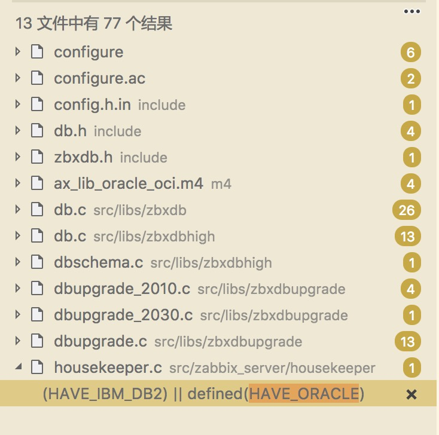 |
| 2018-05-30 15:09:38 | 你 | 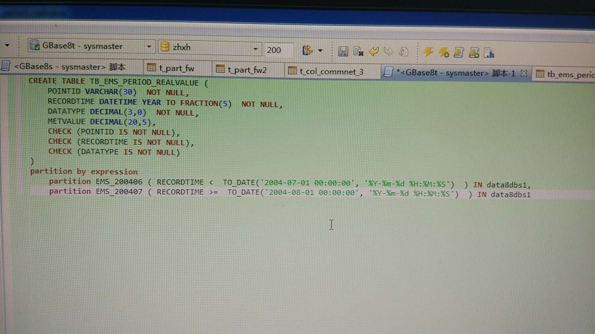 |
| 2018-05-30 15:09:51 | 你 | 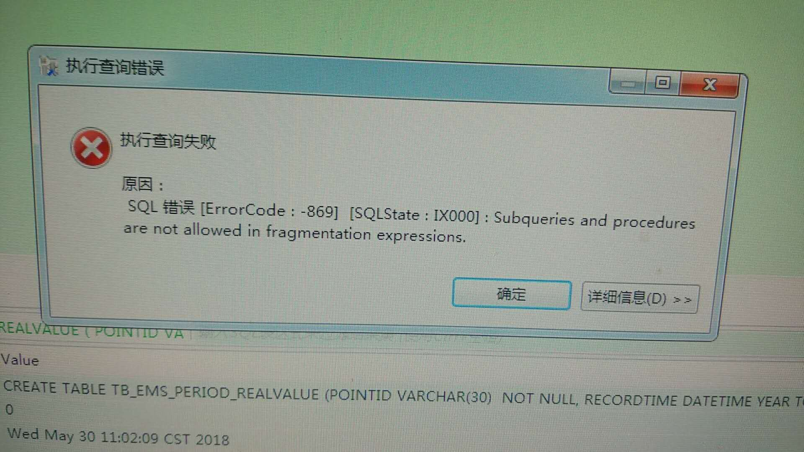 |
| 2018-05-30 16:09:18 | 你 | 你收下我发的邮件 |
| 2018-05-30 16:09:32 | 我 | 嗯嗯 |
| 2018-05-30 16:14:15 | 我 | 你可以把这个发给王欣 |
| 2018-05-30 16:17:24 | 你 | 抄了 |
| 2018-05-30 16:17:47 | 我 | 嗯嗯 |
| 2018-05-30 16:23:16 | 我 | 累坏了吧 |
| 2018-05-30 16:23:30 | 你 | 还行 |
| 2018-05-30 16:23:38 | 你 | 你说我发这个没事吧 |
| 2018-05-30 16:23:46 | 我 | 没问题 |
| 2018-05-30 18:15:55 | 我 | 你今天几点下班 |
| 2018-05-30 18:20:26 | 你 | 刘利要离职 |
| 2018-05-30 18:20:32 | 你 | 回贵州 |
| 2018-05-30 18:20:38 | 我 | 哦 |
| 2018-05-30 18:21:03 | 我 | 居然比任虹雨还早提出来 |
| 2018-05-30 18:21:12 | 你 | 不是他提的 是我问的 |
| 2018-05-30 18:21:28 | 你 | 我昨天问他们想不想去测试 |
| 2018-05-30 18:21:38 | 你 | 他考虑一天 刚才我问他结果 |
| 2018-05-30 18:21:39 | 你 | 他说的 |
| 2018-05-30 18:21:55 | 我 | 哦 |
| 2018-05-30 18:21:59 | 你 | 他说了几个方面 说离家太远 工资太低 |
| 2018-05-30 18:22:12 | 我 | 嗯嗯 |
| 2018-05-30 18:22:15 | 我 | 无所谓了 |
| 2018-05-30 18:22:18 | 你 | 走就走吧 |
| 2018-05-30 18:22:19 | 你 | 是 |
| 2018-05-30 18:22:26 | 我 | 你现在就做好他们都走的准备吧 |
| 2018-05-30 18:22:31 | 你 | 不过她说了 跟我没关系 |
| 2018-05-30 18:22:37 | 你 | 说我特别好 |
| 2018-05-30 18:22:42 | 我 | 嗯嗯 |
| 2018-05-30 18:22:43 | 你 | 我还算比较欣慰 |
| 2018-05-30 18:22:47 | 你 | 太难过了 |
| 2018-05-30 18:22:57 | 你 | 你说这事 我要跟欣姐说吗 |
| 2018-05-30 18:23:17 | 我 | 先沉沉 |
| 2018-05-30 18:23:29 | 你 | 周五组织架构就公布了 |
| 2018-05-30 18:23:41 | 你 | 他俩走跟这次公司不调薪你说有关系 |
| 2018-05-30 18:23:55 | 我 | 是，肯定有。 |
| 2018-05-30 18:24:07 | 我 | 他们在公司太底层了 |
| 2018-05-30 18:24:11 | 你 | 刘利说公司现在这种发展现状 估计工资也不会涨很多 |
| 2018-05-30 18:24:13 | 你 | 是 |
| 2018-05-30 18:24:41 | 我 | 这样也好，你反而没有包袱了 |
| 2018-05-30 18:24:44 | 你 | 是 |
| 2018-05-30 18:24:52 | 你 | 走就走吧 |
| 2018-05-30 18:24:59 | 我 | 等组织架构公布以后，你再和王欣说吧 |
| 2018-05-30 18:25:20 | 你 | 我要不等他们走的时候说 |
| 2018-05-30 18:25:29 | 你 | 刘利说晚也就下下周 |
| 2018-05-30 18:25:35 | 你 | 早的话下周就走 |
| 2018-05-30 18:25:55 | 我 | 嗯 |
| 2018-05-30 18:26:04 | 我 | 任虹雨呢 |
| 2018-05-30 18:26:12 | 你 | 刘利说会一直努力做好的 |
| 2018-05-30 18:26:22 | 你 | 我太难过了 老王 |
| 2018-05-30 18:26:26 | 你 | 其实我很喜欢刘利 |
| 2018-05-30 18:26:27 | 我 | 别 |
| 2018-05-30 18:26:30 | 我 | 我知道 |
| 2018-05-30 18:26:33 | 你 | 他干活特别努力 |
| 2018-05-30 18:26:36 | 我 | 嗯嗯 |
| 2018-05-30 18:26:41 | 你 | 而且还会C |
| 2018-05-30 18:26:44 | 你 | 唉 |
| 2018-05-30 18:26:48 | 你 | 就这样吧 |
| 2018-05-30 18:26:52 | 你 | 我今天要早点回家 |
| 2018-05-30 18:26:55 | 你 | 我老公生日 |
| 2018-05-30 18:26:59 | 我 | 哦 |
| 2018-05-30 18:27:02 | 我 | 好吧 |
| 2018-05-30 18:27:15 | 你 | 你帮我想想 他俩走后 我的局面 |
| 2018-05-30 18:27:23 | 我 | 嗯嗯 |
| 2018-05-30 18:28:07 | 我 | 你几点走，我和你一起走 |
| 2018-05-30 18:28:09 | 你 | 忘记流程 你看黄老师说的 |
| 2018-05-30 18:28:14 | 你 | 我想现在就走 |
| 2018-05-30 18:28:16 | 你 | 你能走吗 |
| 2018-05-30 18:28:22 | 我 | 走吧 |
| 2018-05-30 18:28:28 | 你 | 好 |
{kind=link}
{kind=link}
{kind=link}
{kind=link}
2018-05-31¶
| 2018-05-31 09:43:15 | 你 | 不行G8停了吧 |
| 2018-05-31 09:43:52 | 我 | 可以 |
| 2018-05-31 09:44:39 | 我 | 不过decode的就得发补丁了 |
| 2018-05-31 09:48:20 | 你 | 哦，对 |
| 2018-05-31 10:41:27 | 我 | 亲，干啥呢 |
| 2018-05-31 10:41:37 | 你 | 看版本号呢 |
| 2018-05-31 10:41:41 | 你 | 王欣让我看下 |
| 2018-05-31 10:41:44 | 我 | 嗯嗯 |
| 2018-05-31 10:54:54 | 你 | 1.6.4G6_3X1 |
| 2018-05-31 11:17:47 | 你 | 我又要发火了 |
| 2018-05-31 11:17:51 | 你 | 你赶紧压压我 |
| 2018-05-31 11:17:57 | 我 | 咋了 |
| 2018-05-31 11:18:05 | 你 | 于庆这个事 |
| 2018-05-31 11:18:06 | 我 | 因为谁，我去给你出气 |
| 2018-05-31 11:18:35 | 我 | 这事简单，你可以推给王总 |
| 2018-05-31 11:26:42 | 你 | 我今天中午要和振鹏吃饭 |
| 2018-05-31 11:26:48 | 你 | 没带饭 |
| 2018-05-31 11:26:52 | 我 | 哦 |
| 2018-05-31 11:26:56 | 我 | 有点意外呀 |
| 2018-05-31 11:27:05 | 我 | 看样子你想明白了？ |
| 2018-05-31 11:27:19 | 我 | 挺好挺好 |
| 2018-05-31 11:27:28 | 你 | 想明白什么啊 |
| 2018-05-31 11:27:31 | 我 | 我就知道你很聪明 |
| 2018-05-31 13:07:59 | 我 | 咋样 |
| 2018-05-31 13:08:12 | 你 | 啥咋样 |
| 2018-05-31 13:08:16 | 你 | 能咋样 |
| 2018-05-31 13:08:47 | 我 | 我是问你感觉能让他听话不 |
| 2018-05-31 13:09:21 | 你 | 不知道 没想这么多~~~~ |
| 2018-05-31 13:09:36 | 你 | 或者我现在没用到他的时候 |
| 2018-05-31 13:09:39 | 我 | 哦 |
| 2018-05-31 13:09:51 | 你 | 你失望了 |
| 2018-05-31 13:10:00 | 我 | 好吧，慢慢来吧 |
| 2018-05-31 13:10:04 | 你 | 振鹏跟我讲的都是另一个世界的事 |
| 2018-05-31 13:10:18 | 你 | 就是你说的那个世界的事 我初来乍到的世界的事 |
| 2018-05-31 13:10:23 | 你 | 说实话 我挺难过的 |
| 2018-05-31 13:10:32 | 你 | 心里有种莫名难过的感觉 |
| 2018-05-31 13:10:33 | 我 | 啊 |
| 2018-05-31 13:10:38 | 我 | 为啥 |
| 2018-05-31 13:10:51 | 你 | 就是那种规则都变了 |
| 2018-05-31 13:11:03 | 你 | 快乐不再是原来的快乐的感觉 |
| 2018-05-31 13:11:21 | 我 | 嗯嗯，我明白 |
| 2018-05-31 13:11:32 | 你 | 我还在学习中。。。。 |
| 2018-05-31 13:11:35 | 你 | 给我点时间 |
| 2018-05-31 13:11:39 | 我 | 你还是需要一些时间去适应 |
| 2018-05-31 13:11:44 | 我 | 嗯嗯，不着急 |
| 2018-05-31 13:11:46 | 你 | 嗯嗯 我觉得也是 |
| 2018-05-31 13:11:50 | 你 | 我还有点害怕 |
| 2018-05-31 13:12:00 | 你 | 感觉到了自己的无知 自己的不合群 |
| 2018-05-31 13:12:08 | 我 | 什么不合群 |
| 2018-05-31 13:12:18 | 你 | 和新世界 不合群 |
| 2018-05-31 13:12:24 | 你 | 和新世界 格格不入 |
| 2018-05-31 13:12:32 | 我 | 哈哈，没有格格不入 |
| 2018-05-31 13:12:44 | 我 | 你说恐惧我倒是认可 |
| 2018-05-31 13:13:13 | 我 | 毕竟这个世界对你来说实在是太陌生了 |
| 2018-05-31 13:13:24 | 你 | 是 |
| 2018-05-31 13:13:28 | 你 | 就是恐惧 |
| 2018-05-31 13:13:41 | 我 | 其实你天生就是这个世界的 |
| 2018-05-31 13:14:07 | 我 | 你还记得周日我和你说这些的时候，你有多兴奋吗 |
| 2018-05-31 13:14:12 | 你 | 记得 |
| 2018-05-31 13:14:35 | 我 | 你是我看见的第一个会是这种反应的人 |
| 2018-05-31 13:14:48 | 我 | 大多数人当时就退缩了 |
| 2018-05-31 13:14:56 | 你 | 真的吗 |
| 2018-05-31 13:15:05 | 我 | 真的 |
| 2018-05-31 13:15:26 | 我 | 所以我才说你天生是这个世界的 |
| 2018-05-31 13:15:50 | 我 | 你的本心就是这个世界的，所以你才会兴奋 |
| 2018-05-31 13:16:07 | 我 | 这种本性是推动你进步的动力 |
| 2018-05-31 13:16:32 | 你 | 嗯嗯 |
| 2018-05-31 13:17:08 | 我 | 你现在的反应是离开舒适区，进入一个陌生环境的正常反应 |
| 2018-05-31 13:17:19 | 我 | 只要给你时间，你能适应的 |
| 2018-05-31 13:18:43 | 我 | 还是心情不好吗 |
| 2018-05-31 13:19:00 | 你 | 没有 |
| 2018-05-31 13:19:09 | 你 | 我没有心情不好 我只是在适应阶段 |
| 2018-05-31 13:19:14 | 你 | 不断的调整自己 |
| 2018-05-31 13:19:23 | 你 | 你以前有过这样的经历吗 |
| 2018-05-31 13:19:27 | 我 | 有过 |
| 2018-05-31 13:19:35 | 你 | 嗯嗯 |
| 2018-05-31 13:19:40 | 你 | 也不算是心情不好 |
| 2018-05-31 13:19:46 | 我 | 是 |
| 2018-05-31 14:27:54 | 你 | 刚才我给你打完电话 说你已经在晨会上表态了 然后张工就说他能不能表态 王总说你表吧 他说我为什么要参加这个会 我只负责需求 王总就说 李辉在就可以 你走吧。张工就出来了 |
| 2018-05-31 14:28:26 | 我 | 哈哈，太好了 |
| 2018-05-31 15:05:46 | 我 | 快和我说说开会 |
| 2018-05-31 15:06:05 | 你 | 就到这 就没了 |
| 2018-05-31 15:07:02 | 我 | 今天吓到你了吗 |
| 2018-05-31 15:08:01 | 你 | 说实话有点 |
| 2018-05-31 15:08:16 | 你 | 我看陈总的表现 你是不是跟他说啥了 |
| 2018-05-31 15:08:26 | 我 | 没有 |
| 2018-05-31 15:08:28 | 你 | 你不去是不是跟老陈置气呢 |
| 2018-05-31 15:08:34 | 我 | 什么也没有说 |
| 2018-05-31 15:08:40 | 你 | 老陈以前这个会一般他不参加 |
| 2018-05-31 15:08:47 | 我 | 哈哈，我给你详细说一下吧 |
| 2018-05-31 15:08:51 | 你 | 好 |
| 2018-05-31 15:09:05 | 你 | 今天王总和张工的对话 我确实很意外 |
| 2018-05-31 15:09:09 | 你 | 有点吓到 |
| 2018-05-31 15:09:14 | 我 | 首先，我是冲着老张和黄军雷去的 |
| 2018-05-31 15:09:20 | 你 | OK |
| 2018-05-31 15:09:38 | 我 | 今天老张的表现简直就是配合我 |
| 2018-05-31 15:09:45 | 我 | 而且是超级配合 |
| 2018-05-31 15:09:49 | 你 | 哈哈 |
| 2018-05-31 15:09:54 | 我 | 比我预想的要好得多 |
| 2018-05-31 15:10:00 | 你 | 好吧 |
| 2018-05-31 15:10:04 | 你 | 我大概知道了 |
| 2018-05-31 15:10:15 | 我 | 我和老陈从来没有说过这些 |
| 2018-05-31 15:10:33 | 我 | 但是老陈知道我的脾气，他也知道我是冲着老张去的 |
| 2018-05-31 15:10:43 | 你 | 嗯嗯 |
| 2018-05-31 15:10:57 | 我 | 所以他今天去，他肯定是知道我不会去 |
| 2018-05-31 15:11:05 | 你 | 是呢 |
| 2018-05-31 15:11:18 | 你 | 所以我还怀疑你是不是跟他说什么了 |
| 2018-05-31 15:11:40 | 我 | 今天这事效果简直是太好了 |
| 2018-05-31 15:11:46 | 我 | 你知道好在哪 |
| 2018-05-31 15:11:51 | 你 | 不知道 |
| 2018-05-31 15:11:58 | 你 | 老张知道你是针对他吗 |
| 2018-05-31 15:12:02 | 你 | 你快说啊 |
| 2018-05-31 15:12:03 | 我 | 他知道 |
| 2018-05-31 15:12:15 | 我 | 你就是事实的产品经理了 |
| 2018-05-31 15:12:27 | 我 | 相当于王总认证了 |
| 2018-05-31 15:12:33 | 你 | 哈哈 |
| 2018-05-31 15:12:46 | 你 | 我觉得也差不多 |
| 2018-05-31 15:12:52 | 你 | 至少咱们这边是这样了 |
| 2018-05-31 15:13:04 | 我 | 其实我挤了老张也是为了能让你上位 |
| 2018-05-31 15:13:11 | 你 | 恩 |
| 2018-05-31 15:13:12 | 你 | 是 |
| 2018-05-31 15:13:33 | 我 | 你指责他做不好规划不合适，我作为研发就可以指责他 |
| 2018-05-31 15:13:49 | 你 | 哈哈 |
| 2018-05-31 15:14:03 | 我 | 就算老张想到了我是为了你，他也没有办法 |
| 2018-05-31 15:14:13 | 我 | 只能是吃这个哑巴亏了 |
| 2018-05-31 15:14:18 | 你 | 嗯嗯 |
| 2018-05-31 15:14:41 | 我 | 不管他高不高兴，你获得实权是最重要的 |
| 2018-05-31 15:14:46 | 你 | 恩 |
| 2018-05-31 15:14:52 | 你 | 王总现在找他谈话呢 |
| 2018-05-31 15:15:02 | 我 | 是吗，我没注意 |
| 2018-05-31 15:15:17 | 你 | 王总阴晴不定 |
| 2018-05-31 15:15:34 | 你 | 但是他跟我说过 产总那个位置 他之所以不让是想留给我 |
| 2018-05-31 15:15:40 | 我 | 高杰是想拉着老张 |
| 2018-05-31 15:15:44 | 我 | 嗯嗯 |
| 2018-05-31 15:15:50 | 你 | 不管他留不留给我 他是不想给张道山 |
| 2018-05-31 15:15:57 | 我 | 肯定的 |
| 2018-05-31 15:16:09 | 你 | 最近这几件事 我替王总办的也不错 |
| 2018-05-31 15:16:34 | 你 | 三段式的沟通 是我催着他去的 效果很好 他也在赵总那露脸了 |
| 2018-05-31 15:16:42 | 我 | 是 |
| 2018-05-31 15:16:50 | 你 | 这次去浙江 也是我送去的 而且我鼓励他了 |
| 2018-05-31 15:16:53 | 你 | 他也不想去 |
| 2018-05-31 15:16:57 | 我 | 嗯嗯 |
| 2018-05-31 15:16:58 | 你 | 他跟我说压力大 |
| 2018-05-31 15:17:02 | 你 | 我还劝他 |
| 2018-05-31 15:17:17 | 你 | 前天让我给他整理GCI的 |
| 2018-05-31 15:17:24 | 你 | 还有江苏80版本这事 |
| 2018-05-31 15:17:25 | 你 | 哈哈 |
| 2018-05-31 15:17:29 | 我 | 哈哈 |
| 2018-05-31 15:17:31 | 你 | 事情太多了 |
| 2018-05-31 15:17:37 | 你 | 80版本这事最好玩 |
| 2018-05-31 15:17:45 | 我 | 太好了，我太高兴了 |
| 2018-05-31 15:17:46 | 你 | 我不是撒娇的口吻跟他说的吗 |
| 2018-05-31 15:17:50 | 我 | 嗯嗯 |
| 2018-05-31 15:17:53 | 你 | 然后他回复我『哈哈哈』 |
| 2018-05-31 15:17:59 | 你 | 我回复他：您还笑 |
| 2018-05-31 15:18:14 | 你 | 他回复我：你不爽要怎么办啊 |
| 2018-05-31 15:18:17 | 你 | 我说我不知道 |
| 2018-05-31 15:18:25 | 你 | 他就回了个 我明天就回去 |
| 2018-05-31 15:18:29 | 你 | 我说好的 |
| 2018-05-31 15:18:40 | 你 | 结果你看今天晨会我一提 王总那表现 |
| 2018-05-31 15:18:44 | 我 | 嗯嗯 |
| 2018-05-31 15:18:45 | 你 | 肯定不可能换的 |
| 2018-05-31 15:18:55 | 我 | 是 |
| 2018-05-31 15:18:59 | 你 | 哈哈 |
| 2018-05-31 15:19:09 | 我 | 亲，插一句，80版这事可能会很麻烦 |
| 2018-05-31 15:19:16 | 你 | 恩 |
| 2018-05-31 15:19:36 | 你 | 没事 |
| 2018-05-31 15:19:42 | 你 | 你如实评估 |
| 2018-05-31 15:19:54 | 你 | 不行你跟晓亮解释下 |
| 2018-05-31 15:19:57 | 我 | 嗯嗯 |
| 2018-05-31 15:20:21 | 你 | 再不行我和王总去销售那刷脸 |
| 2018-05-31 15:20:33 | 你 | 王总现在把国网看成自己孩子了已经 |
| 2018-05-31 15:20:55 | 我 | 我先评估吧，待会我去看看李培晟做的怎么样了 |
| 2018-05-31 15:21:04 | 你 | 好的 |
| 2018-05-31 16:48:45 | 你 | with as的你大概评估需要多久啊 |
| 2018-05-31 16:50:52 | 我 | 我忘了[难过] |
| 2018-05-31 16:51:17 | 你 | 算了 没事 |
| 2018-05-31 17:28:29 | 我 | with as的我和张杰讨论了一下，大概3到5个月。待会和你详说吧 |
| 2018-05-31 17:28:41 | 你 | 恩 |
| 2018-05-31 17:28:43 | 你 | 知道了 |
| 2018-05-31 17:30:34 | 你 | 老王 你说小孩离职的事 我需要跟王欣说声吗 |
| 2018-05-31 17:30:45 | 你 | 她一直使劲把小孩留给我呢 |
| 2018-05-31 17:30:52 | 我 | 可以说一下 |
| 2018-05-31 17:32:02 | 你 | 我要去跟王欣说最近这几件需求的事 |
| 2018-05-31 17:32:24 | 我 | 嗯嗯，可以说说今天的评审 |
| 2018-05-31 18:24:03 | 我 | 我们开完了 |
| 2018-05-31 18:49:42 | 我 | 怎么样 |
| 2018-05-31 18:49:53 | 你 | 聊完了 |
| 2018-05-31 18:55:20 | 我 | 你几点下班，我今天还想和你一起走 |
| 2018-05-31 18:55:43 | 你 | 你有话跟我说吗 |
| 2018-05-31 18:55:47 | 你 | 你几点走 |
| 2018-05-31 18:55:50 | 你 | 我都行 |
| 2018-05-31 18:55:54 | 你 | 我的活干不完 |
| 2018-05-31 18:55:55 | 我 | 我没事 |
| 2018-05-31 18:56:00 | 你 | 哦 |
| 2018-05-31 18:56:03 | 你 | 那7：30吧 |
| 2018-05-31 18:56:04 | 我 | 你先忙 |
| 2018-05-31 18:56:06 | 我 | 嗯嗯 |
| 2018-05-31 18:56:13 | 你 | 我delimident的写完了 发给你看看 |
| 2018-05-31 18:56:17 | 我 | 好 |
| 2018-05-31 18:59:33 | 你 | 王欣的在回去的路上说吧 |
| 2018-05-31 18:59:39 | 我 | 嗯嗯 |